Chapters 1 to 6
Economics is the study of how societies allocate scarce resources that have alternative uses to satisfy unlimited human wants (Lionel Robbins, 1932).
If resources were infinite, goods would be “free goods” (like atmospheric air in its natural state), prices would not exist, and economic systems would be unnecessary. Scarcity forces every human society to make choices, and every choice incurs an opportunity cost.
A car’s brochure claims 22 km per litre. On city roads you get 15. Did the engineering test fail? No. The 22 km per litre was measured in controlled laboratory conditions: a smooth test track, correct tyre pressure, no traffic. That isolation was needed to measure the engine’s own efficiency. On real roads, bad surfaces, traffic jams and under-inflated tyres add friction.
Economic laws work the same way. The law of demand (as price rises, demand falls) is stated by assuming all other variables, such as income and tastes, stay constant. That isolates the cause-and-effect link between price and demand. Once the basic law is clear, real-world complications are added back.
Why is life-giving water almost free, while useless decorative diamonds sell for millions?
Water is abundant, so the satisfaction from one more glass (its marginal utility) is close to zero, and its price is low. Diamonds are scarce, so even the last unit has high marginal utility, and the price is high.
| Option | Steel (lakh tonnes) | Wheat (lakh tonnes) |
|---|---|---|
| A | 0 | 30 |
| B | 1 | 28 |
| C | 2 | 24 |
| D | 3 | 18 |
| E | 4 | 10 |
Wheat given up for each extra lakh tonne of steel:
The cost keeps rising (2, 4, 6, 8). So the PPF bends outward (concave): resources are not equally good at both jobs, so each extra tonne of steel pulls in resources better suited to wheat.
The table’s points lie on the curve Wheat = 30 - S - (S x S), where S is steel in lakh tonnes: for S = 3, wheat = 30 - 3 - 9 = 18.
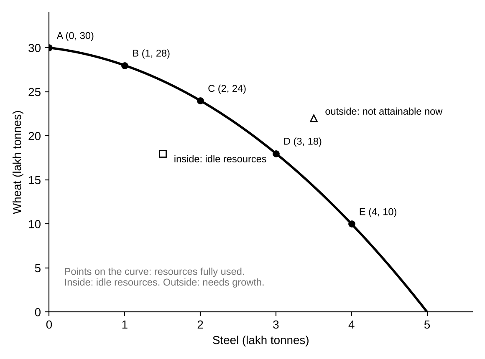
Figure 1.1: The PPF through points A to E. The square is a point inside the frontier (idle resources); the triangle is outside it (not attainable now).The slope of the PPF is the marginal rate of transformation (MRT): how much of one good must be given up to get one more unit of the other.
Every economic society, whatever its ideology, must solve three questions:
| Question | Decision |
|---|---|
| What to produce? | How resources are split between consumer goods and capital goods, civil goods and defence equipment |
| How to produce? | Which technique: labour-intensive (more workers per unit of capital) or capital-intensive (more machines) |
| For whom to produce? | How the national product is shared among factors: rent (land), wages (labour), interest (capital), profit (enterprise) |
Every society answers the three central questions through one of three frameworks.
| Market economy (capitalism) | Command economy (socialism) | Mixed economy | |
|---|---|---|---|
| Ownership of factors of production | Private | State | Both private and state |
| Who decides what, how and for whom to produce | Millions of buyers and sellers, through prices | A central planning authority | Market decides most things; state decides or steers some |
| Role of price | Signal that guides all decisions (Adam Smith’s “invisible hand”) | Set or ignored by planners | Market-determined, with administered prices in some sectors |
| Whose wants drive production | Consumers who are willing and able to pay (consumer sovereignty) | Planners’ view of social need | Both |
| Main motive | Private profit | Social welfare, equity, planned industrialisation | Profit in the private sector, welfare in the public sector |
| Main strength | Efficiency, consumer choice, innovation | Equity, rapid industrialisation, no unemployment by design | Balances efficiency and equity |
| Main weakness | Public goods under-provided, inequality, negative externalities (pollution), non-profitable welfare neglected | No price signals, so resources are misallocated (the economic calculation problem, Ludwig von Mises); little choice; weak incentive to innovate | Can inherit weaknesses of both if badly managed: inefficient public firms, over-regulation |
| Role of the state | Protects property rights, enforces contracts, commercial law | Owns and runs almost everything | Regulates, provides infrastructure and public goods, protects the poor |
| Example | United States (closest in practice) | Soviet Union (Gosplan, the central planning body), until 1991 | India |
No real economy is purely market or purely command. They differ only in how much weight the state carries.
| Period | Framework | Features |
|---|---|---|
| 1947 to 1991 | Nehru-Mahalanobis planning model | State held the “commanding heights” (heavy industry, banking, utilities); private firms worked under the licence-quota-permit raj |
| After 1991 (LPG reforms: liberalisation, privatisation, globalisation) | Market-friendly mixed economy | Private sector is the main engine of growth; the state moves towards social safety nets, regulation and macroeconomic stability |
The detailed history of plans, reforms and policy dates is in the chapters on the Evolution of the Indian Economy and Planning, NITI Aayog and Economic Reforms.
To study national output, macroeconomics divides the economy into four groups that trade with each other.
| Sector | What it does | Income and payments |
|---|---|---|
| Households | Own all the factors of production (land, labour, capital, entrepreneurship) and are the final consumers of goods and services | Earn rent, wages, interest and profit, plus transfer payments; spend on consumption, pay taxes, save |
| Firms (business sector) | Hire factor services from households and produce goods and services for sale | Receive sales revenue; pay factor incomes, taxes and buy inputs |
| Government | Collects taxes (paid without any direct return), buys goods and services, produces public goods, and redistributes income through pensions and subsidies | Receives taxes; pays for purchases, salaries and transfers |
| External sector (rest of the world) | Trades with the country (exports, imports) and moves capital across borders (remittances, external debt, foreign investment) | Receives import payments; pays for exports and capital inflows |
Economic activity is a continuous circle: production creates income, income creates spending, and spending creates demand for more production.
Take the simplest case, only households and firms:
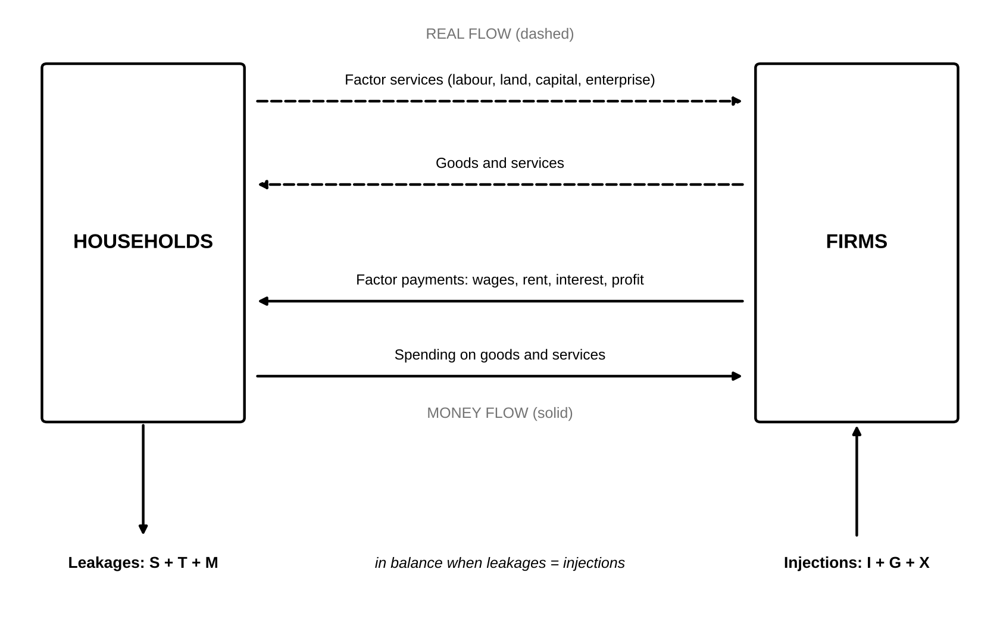
Figure 1.2: Real flow (dashed) and money flow (solid) between households and firms, with leakages leaving and injections entering the flow.In the figure, the dashed arrows are the real flow: factor services go from households to firms, and goods and services go back. The solid arrows are the money flow, running the opposite way: firms pay factor incomes to households, and households spend that income on what firms produce. Every rupee of output is someone’s income, and every rupee of income is spent on someone’s output, so the two loops are equal.
Add the government and the rest of the world, and not all income returns to firms as spending on domestic goods. Some leaves the circle, and some new spending enters.
| Leakages (money leaving the circular flow) | Injections (money entering it) | |
|---|---|---|
| Household side | Savings (S) | Investment (I): spending by firms on capital goods |
| Government side | Taxes (T) | Government spending (G) |
| External side | Imports (M) | Exports (X) |
The flow is in balance when total leakages equal total injections:
S = savings, T = taxes, M = imports, I = investment, G = government spending, X = exports.
Now let I fall to 200 and G to 250. Injections = 200 + 250 + 100 = 550, which is 100 less than leakages of 650. Less is being spent than the income produced, so demand for output falls, and output and employment fall until the two sides match again.
If injections exceed leakages, demand expands. Once the economy is near full capacity, this extra demand shows up as demand-pull inflation (see the chapter on Inflation).
Source: Vivek Singh, Indian Economy (7th ed.), previous-year questions of the UPSC Civil Services Examination; year in brackets.
Q1. A “closed economy” is an economy in which [2011]
Answer: (d). A closed economy has no external sector.
An economy can be divided in three ways: by the kind of activity, by who owns the enterprise, and by how formally the enterprise is run.
| Basis | Classes | Meaning and examples |
|---|---|---|
| Activity | Primary | Extracts or grows from nature: agriculture, forestry, fishing, mining and quarrying |
| Secondary | Transforms raw material into goods: manufacturing, construction, electricity, gas and water supply | |
| Tertiary (services) | Intangible activities: trade, hotels, transport, communication, banking, insurance, education, health, public administration | |
| Ownership | Public | Owned and run by the government (central, state or local) |
| Private | Owned by individuals or companies for profit | |
| Joint | Owned together by government and private parties | |
| Cooperative | Owned and run by members for mutual benefit (for example dairy and credit societies) | |
| Formality | Organised | Registered with the government and following laws on wages and working conditions; regular, protected jobs |
| Unorganised | Unincorporated private enterprises owned by individuals or households, run as proprietorships or partnerships, with fewer than ten workers (NCEUS, 2007) |
The National Commission for Enterprises in the Unorganised Sector (NCEUS) also defines an unorganised worker: someone working in the unorganised sector or in households, excluding regular workers who get social security benefits from their employer, and also workers in the formal sector who have neither a regular job nor social security.
Share of nominal GVA by broad sector (MoSPI provisional estimates, base 2022-23, released 5 June 2026):
| Sector | 2022-23 | 2023-24 | 2024-25 (first revised) | 2025-26 (provisional) |
|---|---|---|---|---|
| Primary | 22.1% | 21.5% | 21.4% | 19.9% |
| Secondary | 26.0% | 26.1% | 25.8% | 25.8% |
| Tertiary (services) | 51.9% | 52.4% | 52.8% | 54.3% |
Within primary in 2025-26, agriculture, livestock, forestry and fishing alone were 18.0% of GVA (Rs 56,65,300 crore of Rs 3,14,86,840 crore), and mining was 1.9%.
Output against jobs, in the same three sectors:
| Primary | Secondary | Tertiary | |
|---|---|---|---|
| Share of nominal GVA, 2025-26 | 19.9% | 25.8% | 54.3% |
| Share of workers, 2025 (PLFS) | 43.3% | 24.8% | 31.8% |
Note on the worker shares: PLFS reports employment by industry, so these shares group its 2025 figures to match the GVA classification: primary = agriculture 43.0 + mining 0.3; secondary = manufacturing 12.1 + electricity and water 0.7 + construction 12.0; tertiary = trade and hotels 12.9 + transport and communication 5.8 + other services 13.1. PLFS is a calendar-year survey (age 15+, usual status) and changed its design in 2025, so comparison with earlier years is not strict.
Every enterprise needs inputs, called factors of production. Each earns a return, and these returns are the incomes counted in the income method of national accounting.
| Factor | What it is | Return |
|---|---|---|
| Entrepreneur | The person who takes the risk of bringing capital, labour and natural resources together | Profit |
| Capital | Produced durable goods used in production (buildings, machinery, equipment) | Interest |
| Natural resources | Land and raw materials that nature provides | Rent |
| Labour | Physical or mental work, unskilled, semi-skilled or skilled | Wages |
The entrepreneur and labour are human beings and belong to the household sector, which supplies these factors to firms. In economics, capital in the strict sense means physical capital goods; financial capital (money) and intellectual capital (patents, copyrights) are recognised as other forms.
Whether something is a final good, an intermediate good, a consumption good or a capital good depends on how it is used, not on what it is physically. That single idea sorts most of the cases below.
| Final goods | Intermediate goods | |
|---|---|---|
| Position | Have crossed the boundary of production | Remain inside production |
| Bought for | Final consumption or capital formation | Resale, or use as input in the same year |
| In GDP? | Value is included | Not included; their value is already inside the final good |
| Examples | Bread eaten by a family; a car bought by a driver | Flour bought by a baker; tyres bought by a car maker |
The test is end use:
The reason for the rule is double counting. Take wheat that becomes bread:
Adding all three sales gives 450, which counts the wheat three times over. The correct output is the final good, Rs 200. The same total comes from adding value added at each stage: 100 + (150 - 100) + (200 - 150) = 100 + 50 + 50 = 200.
| Consumption goods | Capital goods | |
|---|---|---|
| Purpose | Satisfy human wants directly | Help produce other goods |
| Kinds | Durable (cars, refrigerators: many years); semi-durable (clothes, footwear, crockery: about a year); non-durable (milk, bread, petrol: one use); services (teaching, legal advice, banking) | Machine tools, tractors, factory buildings, blast furnaces |
| Relation to product | Used up by the consumer | Do not become part of the product; wear out over time (depreciation) |
A good counts as a capital good only if it has three features: it is a produced, durable output of a man-made process; it acts again as an input in further production; and it is not transformed or consumed in doing so (its wear is slow, over many years). A tractor passes all three, which is why it is a capital good in wheat farming.
The same item can be either, depending on use. A sewing machine in a tailoring shop is a capital good; the same machine in a home is a consumer durable. A computer in a software firm is a capital good; the same computer bought by a student for gaming is a consumer durable. A tractor is not “always” a capital good either: it depends on who buys it and why.
Gross investment = gross fixed capital formation + net acquisition of valuables + change in inventories Net investment = gross investment - depreciation
In the national accounts gross investment is called gross capital formation. Gross fixed capital formation covers machinery, equipment, new construction and intellectual property products. Valuables are gold, silver, gems and similar stores of value.
Investment is the part of output that consists of capital goods, not money put into a business. If an economy produces output of Rs 1,000, of which capital goods are Rs 300, gross investment is 30% of output. Imported capital goods of Rs 100 add to the capital goods available (gross investment Rs 400, or 40%), and exports of capital goods of Rs 40 take away from it (Rs 360, or 36%).
Capital loss is different. Destruction by earthquakes, floods, fire or war is unforeseen, so it is not depreciation and is not deducted when calculating net product. It appears in the national balance sheet, not in the production account. A machine ruined in an earthquake is a capital loss; the same machine wearing out normally is depreciation.
Two questions sort all goods:
| Rival | Non-rival | |
|---|---|---|
| Excludable | Private good: food, clothes, a seat in a train | Club good: cinema, a paid toll highway, a streaming service |
| Non-excludable | Common pool resource: fish in the high seas, groundwater, open pastures | Public good: national defence, street lights, clean air |
Why each class matters:
| Merit goods | Demerit goods | Veblen goods | Giffen goods | |
|---|---|---|---|---|
| What defines them | Social benefit (positive externalities) exceeds private valuation, often because people lack information or are short-sighted | Social cost exceeds private cost (negative externalities); people may underrate the harm | Luxury goods whose demand rises as price rises because a high price signals status | Inferior staples whose demand rises when price rises, because the negative income effect outweighs the substitution effect |
| Examples | Primary education, vaccination, basic healthcare | Cigarettes, alcohol, gambling | Rolex watches, luxury cars, designer jewellery | Subsistence staples (coarse grains and potatoes are the textbook cases) |
| Policy response | State subsidises or provides free | Sin taxes or bans | None; a market curiosity | None; a theoretical exception to the law of demand |
| Link to the law of demand | Follows it | Follows it | Violates it (status effect) | Violates it (income effect) |
Law of demand. Other things unchanged (ceteris paribus), when the price of a good rises, quantity demanded falls, and when it falls, quantity demanded rises. The demand curve slopes downward.
Why the curve slopes downward:
The exceptions are Veblen goods (status demand rises with price) and Giffen goods (strong income effect), described in the chapter on Sectors and Goods Typology.
Demand function. The relation between quantity demanded and price can be written as an equation. A straight-line example used throughout this chapter:
Qd = quantity demanded, P = price. At P = 10, Qd = 80; at P = 30, Qd = 40. Each Rs 1 rise in price cuts demand by 2 units.
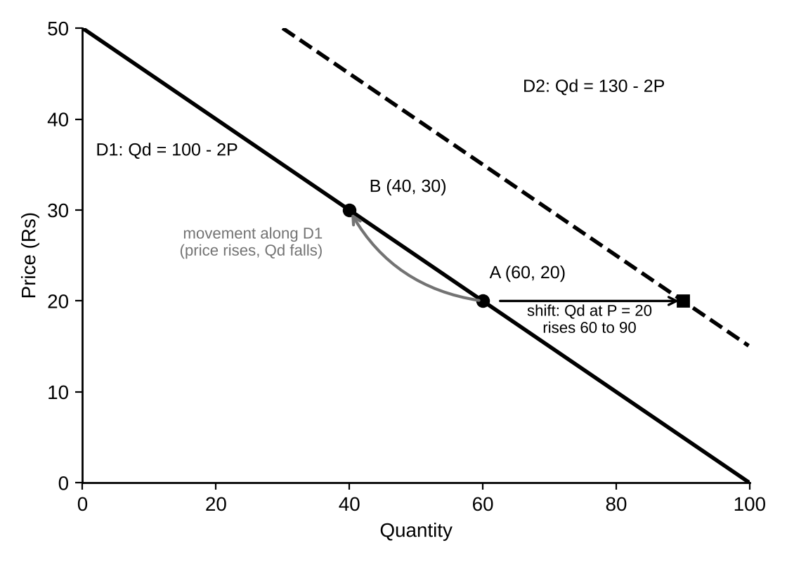
Figure 3.1: Movement along a demand curve (A to B) and a shift of the curve (D1 to D2)| Movement along the curve | Shift of the curve | |
|---|---|---|
| Cause | Change in the good’s own price | Change in anything else that affects demand |
| Name | Expansion or contraction of demand | Increase or decrease in demand |
| Direction | Price falls: down the curve (more bought) | Rightward shift: more demanded at every price; leftward: less |
Factors that shift demand: consumers’ income, prices of related goods (substitutes and complements), tastes and fashion, expectations of future prices, population and its composition, and the distribution of income.
Market demand is the horizontal sum of all individual demands at each price.
Law of supply. Other things unchanged, a higher price raises quantity supplied. The supply curve slopes upward, because a higher price makes production more profitable and, as output expands, extra units usually cost more to produce.
Supply function used in this chapter:
At P = 10, Qs = 20; at P = 30, Qs = 100. Nothing is offered below P = 5, where Qs = 0.
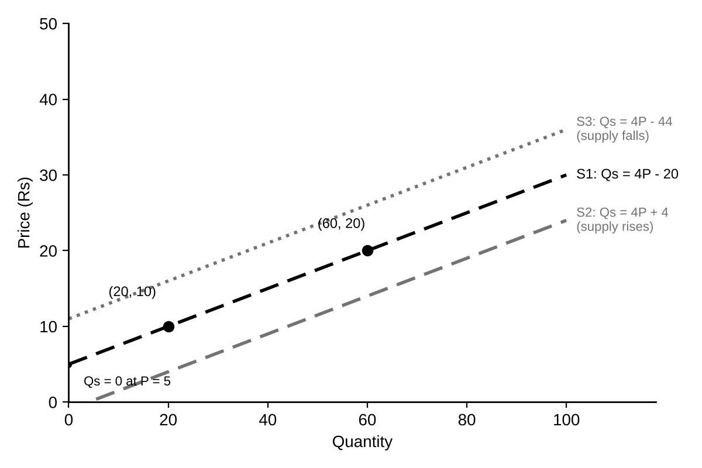
Figure 3.2: The supply curve S1 and two shifted curvesShifts in supply. Movement along the curve comes from the good’s own price. The curve shifts when input prices, technology, taxes and subsidies, prices of other goods the producer could make, the number of sellers or expectations change. Cheaper inputs or better technology shift supply right; higher input costs or a new tax shift it left.
100 - 2P = 4P - 20 120 = 6P P* = 20, Q* = 100 - 2(20) = 60. Check: Qs = 4(20) - 20 = 60.
At other prices:
| Price | Qd | Qs | Result | What happens |
|---|---|---|---|---|
| 25 | 50 | 80 | Surplus of 30 | Sellers cut prices until it clears |
| 20 | 60 | 60 | Equilibrium | No pressure to change |
| 15 | 70 | 40 | Shortage of 30 | Buyers bid the price up |
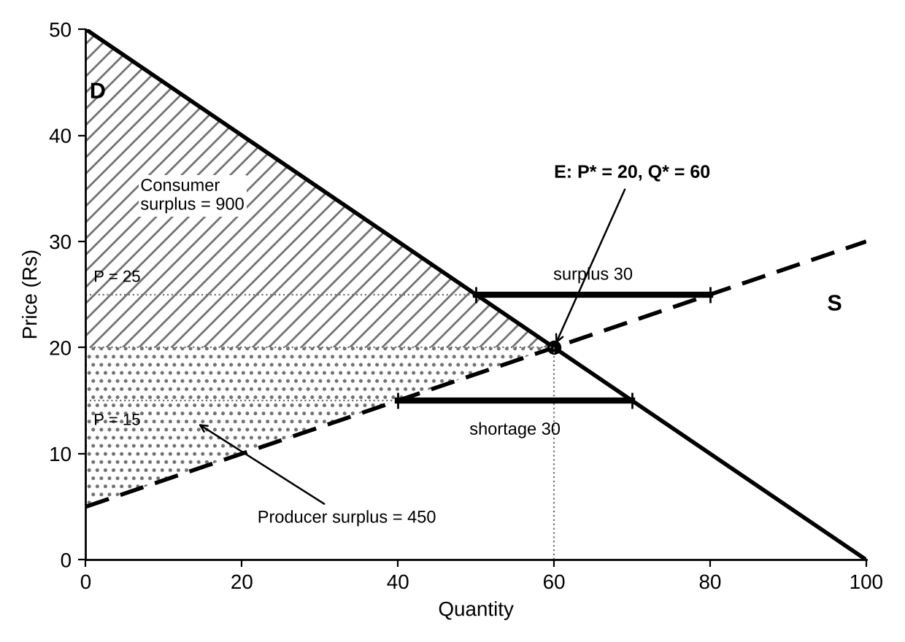
Figure 3.3: Equilibrium at P = 20, Q = 60. At P = 25 there is a surplus of 30; at P = 15 a shortage of 30. Hatched areas are consumer and producer surplus.| Change | Curve | New equilibrium (from the example) | Effect |
|---|---|---|---|
| Demand rises (Qd = 130 - 2P) | Demand right | P = 25, Q = 80 | Price up, quantity up |
| Demand falls (Qd = 70 - 2P) | Demand left | P = 15, Q = 40 | Price down, quantity down |
| Supply rises (Qs = 4P + 4) | Supply right | P = 16, Q = 68 | Price down, quantity up |
| Supply falls (Qs = 4P - 44) | Supply left | P = 24, Q = 52 | Price up, quantity down |
When only one curve shifts, price and quantity move together for a demand shift and in opposite directions for a supply shift. This is also how cost-push and demand-pull inflation differ (see the chapter on Inflation).
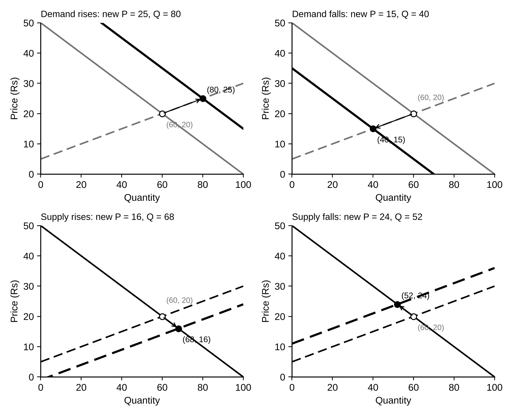
Figure 3.4: Four shifts. Open circle = old equilibrium (60, 20); filled circle = new; heavier line = the curve that movedIn the example, demand reaches zero at P = 50 and supply starts at P = 5.
| Price ceiling | Price floor | |
|---|---|---|
| Meaning | Legal maximum price | Legal minimum price |
| Binding when | Set below equilibrium | Set above equilibrium |
| Result | Shortage; queues, rationing or black markets | Surplus; someone must buy or store the excess |
| Example in India | Controlled rents, maximum retail prices on some essentials | Minimum support price (MSP) for crops, minimum wages |
At the example’s numbers, a ceiling at 15 creates a shortage of 30, and a floor at 25 creates a surplus of 30. MSP works as a price floor: when it is above the market-clearing price, the government has to procure the surplus, which is why procurement and storage matter in the chapter on Agriculture and Food Security.
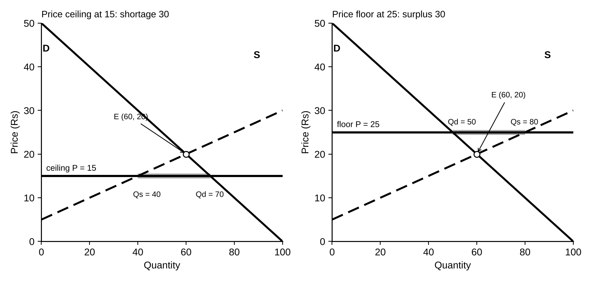
Figure 3.5: A price ceiling below equilibrium (shortage) and a price floor above it (surplus)Elasticity measures how strongly quantity responds to a change in price.
The sign is negative because price and quantity move opposite ways, so it is usually quoted as an absolute value.
Arc (midpoint) elasticity. To avoid getting a different answer for a rise than for a fall, use averages:
Point elasticity on a straight-line demand curve: Ed = (slope term) x P / Q. For Qd = 100 - 2P, Ed = 2P / Q.
| Price | Qd | Total revenue (P x Q) | Ed = 2P / Q |
|---|---|---|---|
| 10 | 80 | 800 | 0.25 |
| 20 | 60 | 1,200 | 0.67 |
| 25 | 50 | 1,250 | 1.00 |
| 30 | 40 | 1,200 | 1.50 |
| 40 | 20 | 800 | 4.00 |
| Type | Ed | Meaning |
|---|---|---|
| Perfectly inelastic | 0 | Quantity does not change at all (vertical curve) |
| Inelastic | below 1 | Quantity changes proportionately less than price |
| Unit elastic | 1 | Equal proportionate change |
| Elastic | above 1 | Quantity changes proportionately more than price |
| Perfectly elastic | infinity | Any price rise cuts demand to zero (horizontal curve) |
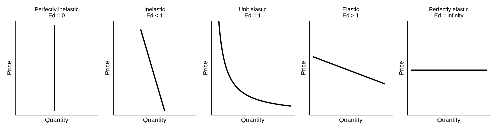
Figure 3.6: The five types of price elasticity of demandTotal revenue test.
| Demand is | Price rises | Price falls |
|---|---|---|
| Elastic (Ed above 1) | Revenue falls | Revenue rises |
| Unit elastic | No change | No change |
| Inelastic (Ed below 1) | Revenue rises | Revenue falls |
The table above shows this: revenue rises as price goes from 10 to 25 (inelastic region), peaks at 25 where Ed = 1, then falls (elastic region).
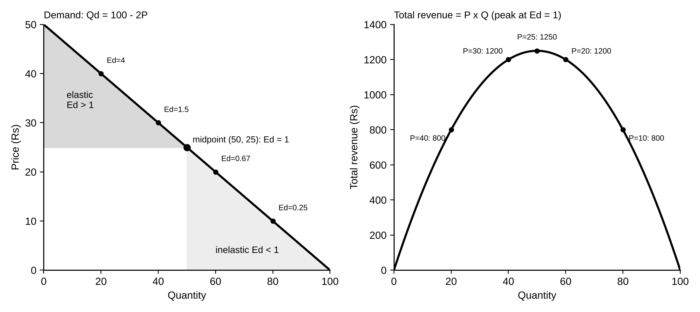
Figure 3.7: Elasticity along a straight demand line (left) and the matching total revenue curve (right)What makes demand more elastic:
| More elastic | Less elastic |
|---|---|
| Many close substitutes | Few or no substitutes |
| Luxury, not essential | Necessity |
| Large share of the buyer’s budget | Small share of the budget |
| Long time to adjust | Short time to adjust |
| Narrowly defined good (a brand of tea) | Broadly defined good (tea) |
Demand for petrol and diesel is usually price-inelastic in the short run, which is one reason governments levy heavy taxes on them: revenue rises when the price rises.
Income elasticity of demand (Ey) = % change in quantity demanded / % change in income.
Cross elasticity of demand (Exy) = % change in quantity of good X / % change in price of good Y.
Price elasticity of supply (Es) = % change in quantity supplied / % change in price. Supply is more elastic when producers can raise output easily: spare capacity, storable goods, long time to adjust. Farm output in the short run is inelastic because crops take a season to grow. At P = 20 in the example, Es = 4 x 20 / 60 = 1.33.
When a tax is put on a good, the buyer and seller share the burden. The less elastic side bears more of it.
In the example, a tax of Rs 3 per unit collected from sellers shifts supply to Qs = 4(P - 3) - 20. The new equilibrium is P = 22, Q = 56.
Buyers’ share = Es / (Es + Ed) = 1.33 / (1.33 + 0.67) = 2/3, which matches. Demand is less elastic (0.67) than supply (1.33), so buyers carry two-thirds of the tax. The same logic is used when analysing GST and excise duties in the chapters on taxation.
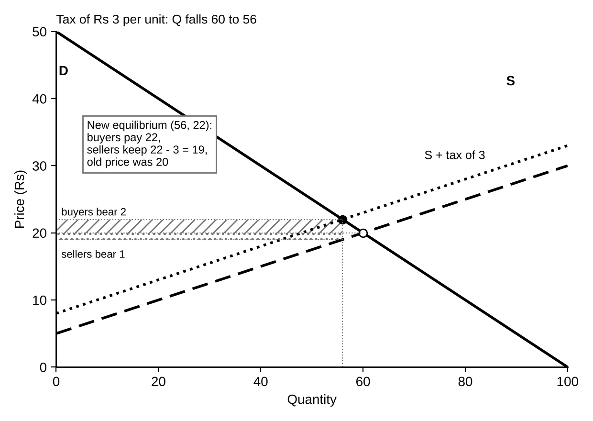
Figure 3.8: A Rs 3 per-unit tax. Buyers bear Rs 2 and sellers Rs 1Source: Vivek Singh, Indian Economy (7th ed.), previous-year questions of the UPSC Civil Services Examination; year in brackets.
Q1. Other things remaining unchanged, market demand for a good might increase if: [2021] (i) price of its substitute increases (ii) price of its complement increases (iii) the good is an inferior good and income of the consumers increases (iv) its price falls
Answer: (a). A dearer substitute raises demand; a dearer complement lowers it; rising income lowers demand for an inferior good; (iv) is counted by the key as an increase in quantity demanded.
Consumer behaviour explains how a household divides limited income among goods; production and cost theory explains how a firm turns inputs into output and what that output costs.
A household has limited income and a firm has limited resources. This chapter follows each of them through one question: how to get the most out of what is available. For the consumer the answer is a purchase decision; for the firm it is a decision on how much to produce and at what cost. The demand curve met in Demand, Supply and Elasticity comes out of the first answer, and the supply curve comes out of the second.
| Oranges eaten | Marginal utility | Total utility |
|---|---|---|
| 1 | 20 | 20 |
| 2 | 16 | 36 |
| 3 | 12 | 48 |
| 4 | 8 | 56 |
| 5 | 4 | 60 |
| 6 | 0 | 60 |
| 7 | -4 | 56 |
Each orange adds less than the one before. This is the law of diminishing marginal utility: as a consumer takes more units of a good in a given period, the extra satisfaction from each additional unit falls. Total utility rises as long as MU is positive, is highest where MU = 0 (the sixth orange), and falls when MU turns negative.
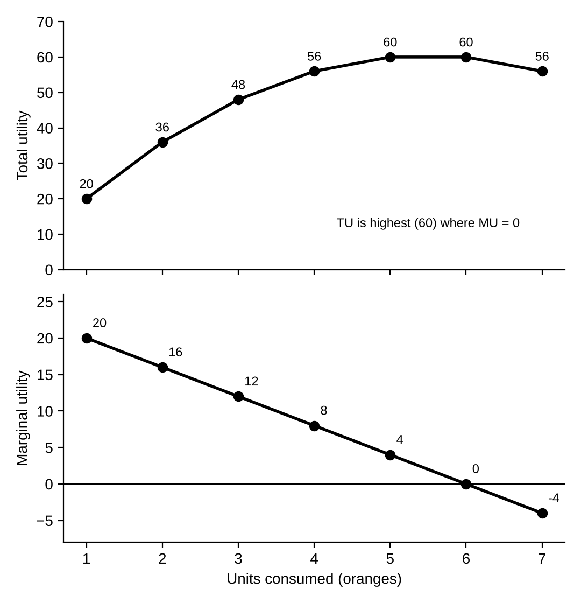
The law explains why the demand curve slopes downward. A consumer will pay a high price for the first unit because it gives high utility, but will pay only a lower price for later units because they give less. It also resolves the water-diamond puzzle from Economic Organisation and Systems: price follows the utility of the last unit bought (marginal utility), not the usefulness of the good in total. Water is plentiful, so its marginal utility is low; diamonds are scarce, so theirs is high.
The law holds under stated conditions: units are of the same size and quality, consumption is continuous, tastes do not change, and the good is used within a given time period.
A consumer buys many goods. With a fixed income, the rational consumer spends each rupee where it adds the most satisfaction, and keeps shifting spending until no shift helps. That point is reached when the marginal utility per rupee is equal across goods:
Here Px and Py are the prices of goods X and Y.
| Unit | MU of X | MU of Y |
|---|---|---|
| 1 | 24 | 12 |
| 2 | 20 | 10 |
| 3 | 16 | 8 |
| 4 | 12 | 6 |
| 5 | 8 | 4 |
| 6 | 4 | 2 |
Buying 3 units of X (Rs 12) and 3 units of Y (Rs 6) spends exactly Rs 18. Marginal utility per rupee is 16 / 4 = 4 for X and 8 / 2 = 4 for Y. Total utility is (24 + 20 + 16) + (12 + 10 + 8) = 60 + 30 = 90. Any other affordable mix does worse: 2 units of X and 5 of Y (Rs 8 + Rs 10) gives 44 + 40 = 84; 4 units of X and 1 of Y (Rs 16 + Rs 2) gives 72 + 12 = 84.
If MUx/Px were greater than MUy/Py, a rupee moved from Y to X would raise total utility, so the consumer would not stop there. The same logic, applied to each price change, produces the demand curve: when Px falls, MUx/Px rises above MUy/Py and the consumer buys more X until the ratios match again.
The utility approach needs utility to be measured in numbers, which is hard to defend. The indifference-curve approach asks only that consumers can rank bundles: this one is better, worse, or the same.
The rate at which the consumer will give up Y for one more X, keeping satisfaction unchanged, is the marginal rate of substitution (MRS). Its fall as X increases is the convexity above (diminishing MRS). The budget line shows all bundles the income can buy: with income M, M = Px·x + Py·y. Its slope, in absolute terms, is Px / Py.
Equilibrium is the affordable bundle on the highest possible indifference curve. It lies where the budget line just touches a curve, so the two slopes are equal:
This is the equimarginal condition in another form (MRS equals MUx/MUy).
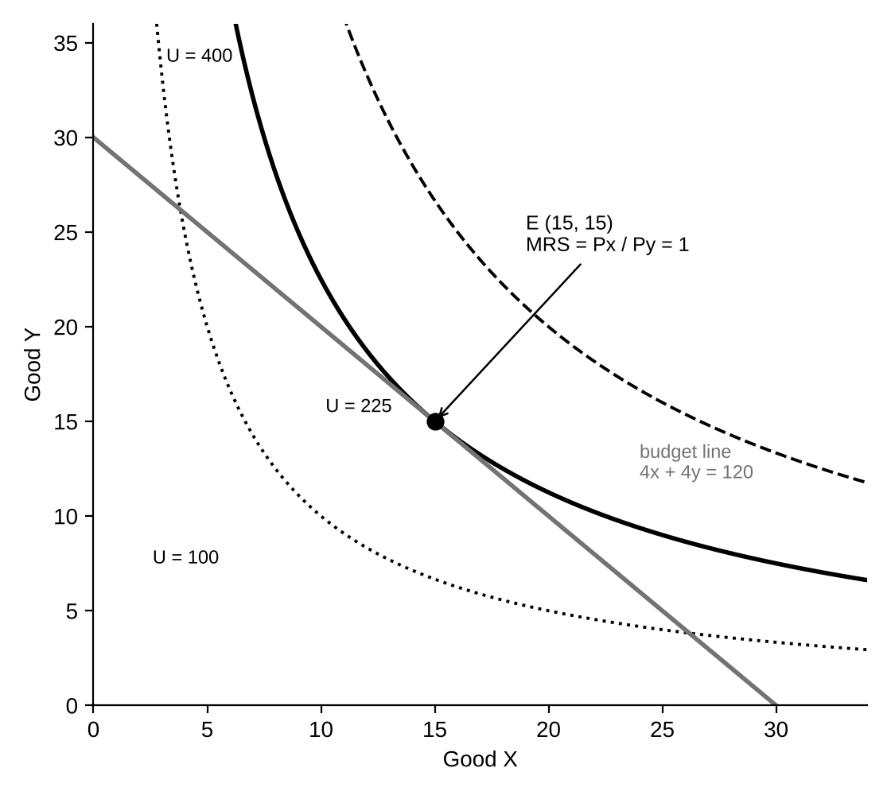
When the price of a good rises, the consumer buys less of it for two separate reasons.
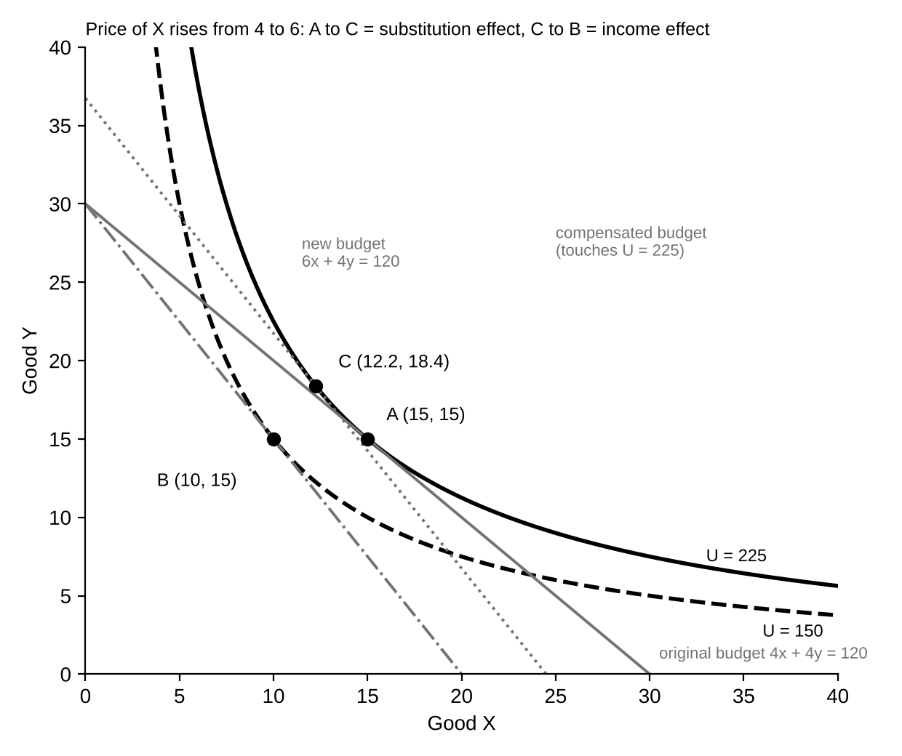
| Type of good | Substitution effect | Income effect | Net effect of a price rise |
|---|---|---|---|
| Normal good | less bought | less bought (real income fell) | less bought |
| Inferior good | less bought | more bought | less bought (substitution stronger) |
| Giffen good | less bought | more bought, and stronger | more bought |
With one input varied and the rest fixed, three measures are used:
| Workers | TP | AP | MP |
|---|---|---|---|
| 1 | 8 | 8.0 | 8 |
| 2 | 20 | 10.0 | 12 |
| 3 | 36 | 12.0 | 16 |
| 4 | 52 | 13.0 | 16 |
| 5 | 62 | 12.4 | 10 |
| 6 | 68 | 11.3 | 6 |
| 7 | 70 | 10.0 | 2 |
| 8 | 68 | 8.5 | -2 |
| Stage | Workers in the example | What happens | Does a firm operate here? |
|---|---|---|---|
| I | 1 to 4 | MP rises, then equals AP at its peak; AP rising; fixed land is under-used | No: adding workers raises output per worker |
| II | 5 to 7 | MP positive but below AP; AP falling; TP still rising | Yes: the only sensible range |
| III | 8 | MP negative; TP falls | No: workers get in each other’s way |
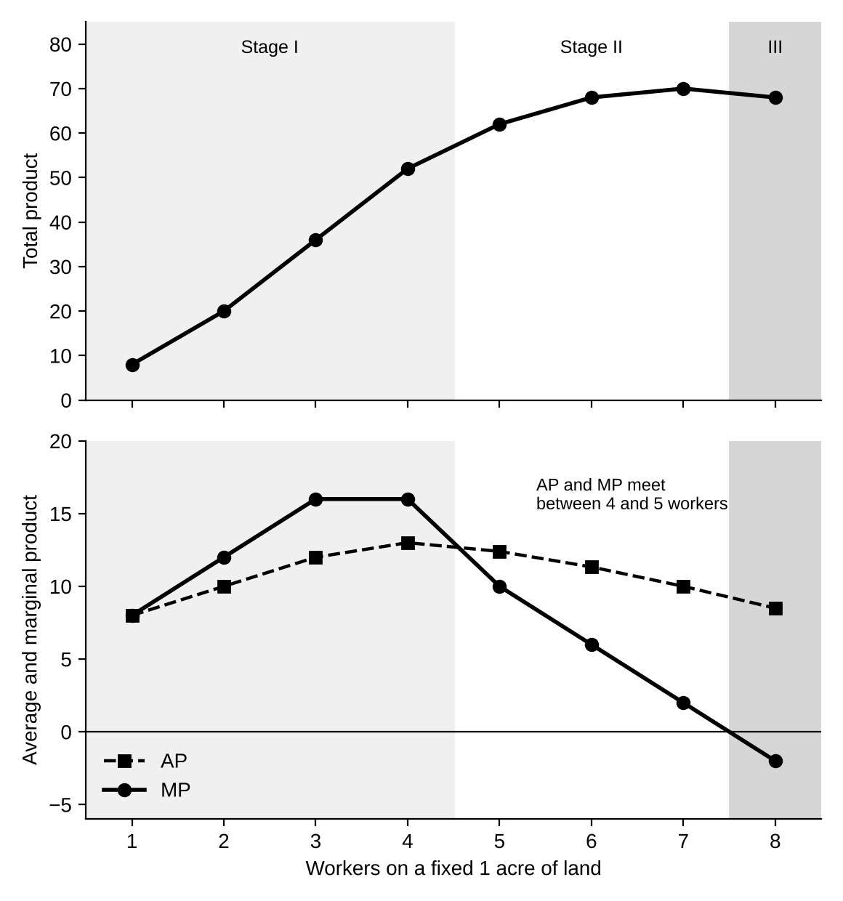
MP cuts AP at AP’s maximum. Whenever MP is above AP, AP rises; whenever MP is below AP, AP falls. (A new batsman’s score raises the batting average if it is above the average, and lowers it if below.) The same relation links marginal cost and average cost below.
The law is the reason behind rising costs, and ties back to the rising opportunity cost on the PPF in Economic Organisation and Systems. It is also the standard explanation for why Indian farms with too many workers on small holdings add little output (disguised unemployment; see the unemployment chapter in the Indian economy part).
In the long run, all inputs change together. Returns to scale describe what happens to output when every input is multiplied by the same factor. If one unit of each input gives 100 units of output, doubling every input gives:
| Output after doubling all inputs | Returns to scale |
|---|---|
| 250 (more than double) | Increasing |
| 200 (exactly double) | Constant |
| 160 (less than double) | Decreasing |
Costs link output with money. Definitions:
| Term | Meaning |
|---|---|
| Fixed cost (FC) | Does not change with output (rent, machinery, salaries) |
| Variable cost (VC) | Changes with output (raw material, wages of casual labour) |
| Total cost (TC) | FC + VC |
| Average fixed cost (AFC) | FC / q |
| Average variable cost (AVC) | VC / q |
| Average total cost (ATC) | TC / q = AFC + AVC |
| Marginal cost (MC) | Change in TC when one more unit is made |
Explicit costs are payments actually made; implicit costs are the value of the owner’s own resources used (her time, her own land). Economic cost includes both; the opportunity-cost idea from Economic Organisation and Systems is exactly this.
| q | TVC | TC | MC | AFC | AVC | ATC |
|---|---|---|---|---|---|---|
| 1 | 22 | 82 | 22 | 60.0 | 22 | 82.0 |
| 2 | 32 | 92 | 10 | 30.0 | 16 | 46.0 |
| 3 | 36 | 96 | 4 | 20.0 | 12 | 32.0 |
| 4 | 40 | 100 | 4 | 15.0 | 10 | 25.0 |
| 5 | 50 | 110 | 10 | 12.0 | 10 | 22.0 |
| 6 | 72 | 132 | 22 | 10.0 | 12 | 22.0 |
| 7 | 112 | 172 | 40 | 8.6 | 16 | 24.6 |
| 8 | 176 | 236 | 64 | 7.5 | 22 | 29.5 |
(MC at q = 1 is the first unit’s addition to cost beyond fixed cost; for later units MC = TC at q minus TC at q - 1, for example 92 - 82 = 10.)
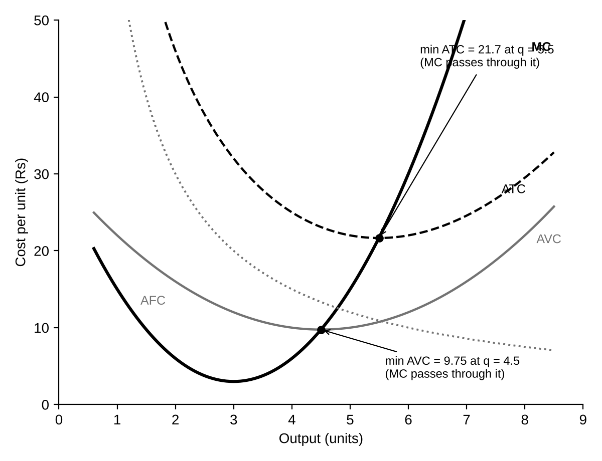
Key shapes and relations:
In the long run no input is fixed, and the firm can choose any plant size. Each plant size has its own short-run average cost curve (SAC). The long-run average cost curve (LAC) is the lower envelope of all the SAC curves: for any output, it shows the lowest cost per unit with the best plant.
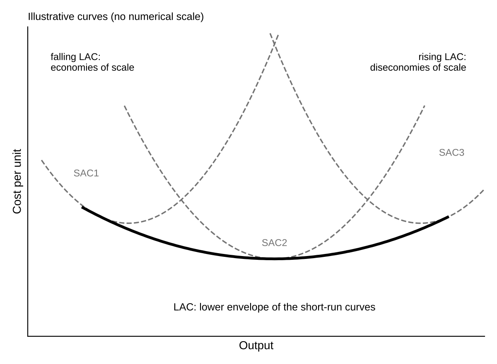
The U-shape of LAC comes from scale:
| Economies of scale (LAC falls) | Diseconomies of scale (LAC rises) | |
|---|---|---|
| Internal causes | Specialisation of labour, bulk buying, cheaper credit, using by-products, large machines | Coordination problems, slow decisions, weak control in large organisations |
| External causes | Skilled labour pool, suppliers and transport clustering nearby | Congestion, rising input prices and rents in a crowded location |
The output at which LAC is lowest is the minimum efficient scale. Where it is large relative to the market, only a few firms can survive, which leads to the market structures discussed in the next chapter.
How a firm behaves depends on how many rivals it has and how easily new ones can enter. Economists group markets into four types by this. The chapter takes them in order of falling competition, starting with the benchmark, perfect competition, and then explains how India regulates market power.
| Feature | Perfect competition | Monopolistic competition | Oligopoly | Monopoly |
|---|---|---|---|---|
| Number of sellers | Very many | Many | Few | One |
| Product | Identical | Differentiated (brands) | Identical or differentiated | One, no close substitute |
| Entry and exit | Free | Free or easy | Barriers | Blocked |
| Control over price | None (price taker) | Some | Considerable, but depends on rivals’ reactions | Large (price maker) |
| Examples | Wheat or vegetable market in a mandi | Soap, restaurants, clothing, coaching centres | Telecom, airlines, cement | Indian Railways on most routes, local water supply |
A firm’s revenue measures are the counterpart of the cost measures in Consumer Behaviour, Production and Costs:
Whatever the market type, a firm that wants maximum profit produces up to the point where MR = MC (with MC rising there). Another unit adds more to revenue than to cost while MR exceeds MC, and loses money once MC exceeds MR. Market structures differ only in what MR looks like.
The conditions are many buyers and sellers, identical products, free entry and exit, and full information. No single firm can influence the price, so it is a price taker. Each extra unit sells at the market price, so AR = MR = price, and the firm’s demand curve is a horizontal line at that price (perfectly elastic).
The rule becomes P = MC. Using the cost table from the previous chapter (TC = 60 + 30q - 9q² + q³):
| Market price | Output where MC reaches price | Total revenue | Total cost | Result |
|---|---|---|---|---|
| Rs 40 | 7 units (MC = 40) | 280 | 172 | Profit of Rs 108 |
| Rs 22 | 6 units (MC = 22) | 132 | 132 | Zero economic profit (price equals ATC) |
| Rs 10 | 5 units (MC = 10) | 50 | 110 | Loss of Rs 60, which equals fixed cost |
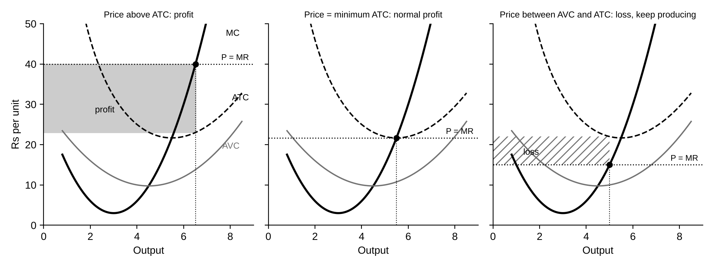
Short-run rules:
Long run. Supernormal profit attracts new firms, supply rises and price falls; losses push firms out and price rises. Entry and exit stop when price equals the minimum of long-run average cost, leaving each firm with zero economic profit (normal profit, which is the return needed to keep the owner in the business and is counted as a cost). At that point the market produces at lowest cost (productive efficiency) and price equals marginal cost (allocative efficiency).
Real markets rarely meet all the conditions. Agricultural commodities come closest, and that is why farmers are price takers and why minimum support prices matter (see the agriculture chapter in the Indian economy part).
The monopolist faces the whole market demand curve, which slopes downward. To sell more it must cut the price on all units, so MR falls faster than price. For a straight-line demand curve, the MR curve starts at the same point but falls twice as steeply.
Under perfect competition the same market would settle at P = MC = 4 and q = 16.
| Monopoly | Competition | |
|---|---|---|
| Quantity | 8 | 16 |
| Price | Rs 12 | Rs 4 |
| Consumer surplus | 32 | 128 |
| Producer profit | 64 | 0 |
| Deadweight loss | 32 | 0 |
(Consumer surplus is the triangle under the demand curve above price; 0.5 x 8 x 8 = 32 and 0.5 x 16 x 16 = 128. The three monopoly figures add to the competitive 128: 32 + 64 + 32 = 128.)
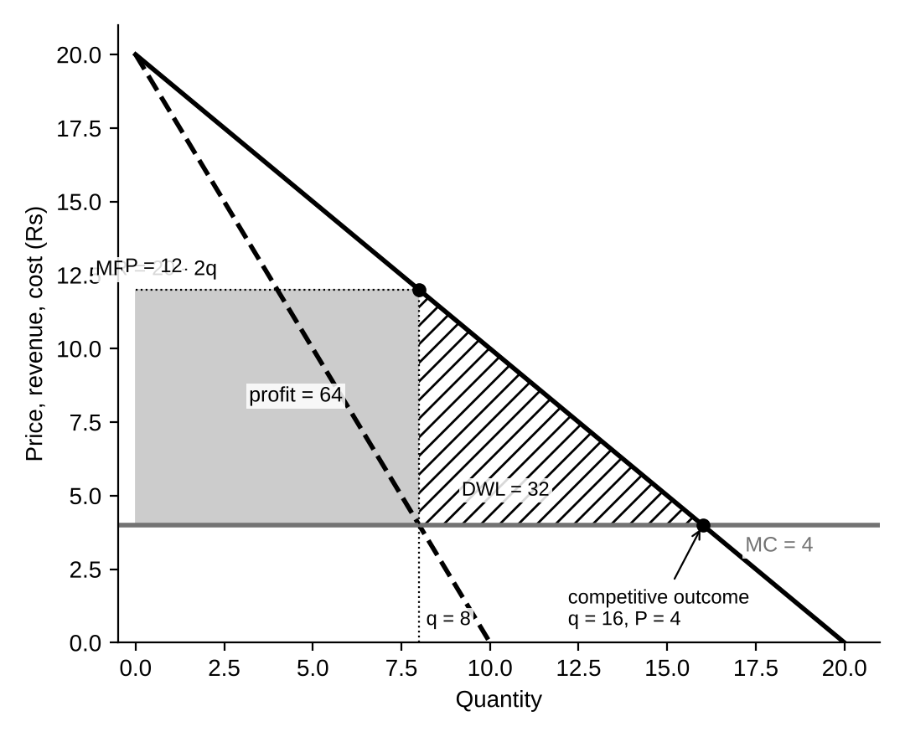
The deadweight loss is the value of the trades that would have benefited both sides but do not happen because the monopolist restricts output. This is the main economic case against monopoly.
| Degree | Meaning | Example |
|---|---|---|
| First | Each buyer pays the most she is willing to pay | A doctor charging by patient’s means |
| Second | Price depends on the quantity bought | Bulk discounts, electricity slabs |
| Third | Different prices in separate markets or groups | Student, senior-citizen and peak/off-peak fares; domestic vs export prices |
Natural monopoly. Where scale economies are so large that one firm can serve the market at lower cost than two (railway track, water pipes, power transmission), competition would waste resources. Governments either run these (public sector) or regulate the price. Pricing at marginal cost would cause a loss, so regulators commonly allow price equal to average cost.
Many firms sell differentiated products: they are similar but not identical, through brand, quality, location or service. Each firm has a small monopoly over its own brand, so its demand curve slopes downward but is fairly elastic because substitutes are close. Entry is easy.
A few firms dominate, so each firm’s price and output decisions depend on how rivals react (interdependence). There is no single model; the main ideas are:
Kinked demand curve. Prices in oligopolies tend to be sticky. A firm believes that if it raises its price rivals will not follow (so it loses many customers, demand is elastic above the current price), while if it cuts its price rivals will match (so it gains little, demand is inelastic below). This gives a kink at the current price and a gap in the MR curve, so cost can change within the gap without any change in price.
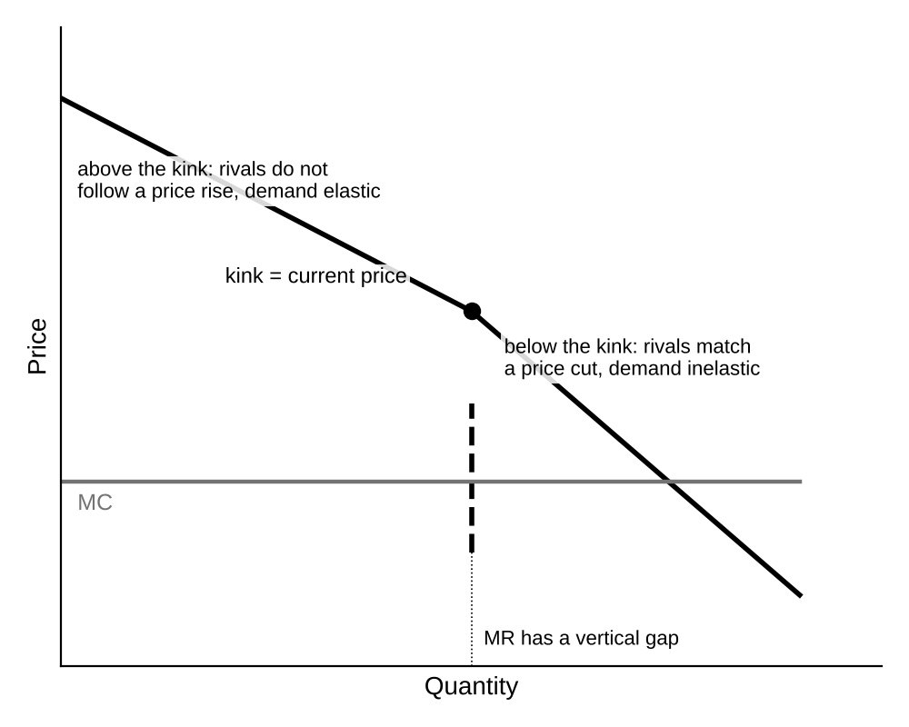
Collusion and cartels. Firms can agree to fix prices or output and act like a monopoly. A cartel is hard to hold together because each member gains by cheating. OPEC is the usual example of an international cartel. In India, such agreements are prohibited (see below).
Game theory. Two firms each choose a high or low price. Profits (in Rs crore, firm A first, firm B second) in an illustrative case:
| B: high price | B: low price | |
|---|---|---|
| A: high price | 10, 10 | 2, 14 |
| A: low price | 14, 2 | 5, 5 |
Whatever B does, A earns more by cutting price (14 against 10 if B holds the price, 5 against 2 if B cuts). B reasons the same way. Both end up at (5, 5), although (10, 10) would be better for both. This is the prisoner’s dilemma: the outcome where each firm picks its best response to the other is called the Nash equilibrium, and here it is worse for the firms than cooperation. It explains why cartels are unstable and why price wars occur.
Other oligopoly behaviour: price leadership (a dominant firm sets price and others follow), and non-price rivalry through advertising and product launches.
Measuring concentration. The concentration ratio is the combined market share of the top few firms (for example the top four). The Herfindahl-Hirschman Index (HHI) is the sum of the squares of all firms’ market shares in per cent. A market with four firms of 25% each has HHI = 4 x 625 = 2,500; a monopoly has 100² = 10,000.
The Competition Act, 2002 replaced the Monopolies and Restrictive Trade Practices Act, 1969 and shifted the focus from the size of a firm to its conduct and its effect on competition. It is enforced by the Competition Commission of India (CCI). Its main provisions:
| Provision | What it covers |
|---|---|
| Section 3 | Anti-competitive agreements: cartels, bid rigging, price fixing, limiting supply |
| Section 4 | Abuse of dominant position: unfair or discriminatory prices, limiting production, denying market access |
| Sections 5 and 6 | Regulation of combinations (mergers, acquisitions) above specified size thresholds, with CCI approval |
| Competition advocacy | Promoting competition in government policy and public awareness |
National income accounting is the system that measures the value of a country’s output, income and expenditure over a period.
National income accounting measures how much an economy produces, earns and spends in a year. Everything that follows in macroeconomics (growth, inflation, the fiscal deficit as a share of GDP, the current account deficit as a share of GDP) is expressed as a ratio to the numbers defined here. The chapter covers what counts, the three ways of measuring it, the family of aggregates, real against nominal values, and India’s latest national accounts.
| Included | Excluded |
|---|---|
| Output sold in markets | Second-hand goods (the sale itself) |
| Farmers’ own consumption of grain, valued at market price (imputed) | Transfer payments (pensions, subsidies, gifts), because no output is produced in exchange |
| Rent that owner-occupiers would pay themselves (imputed rent) | Purely financial transactions (buying shares or bonds) |
| Government services, valued at their cost | Unpaid household work, such as cooking and care at home |
| Net change in inventories (unsold goods are counted as the firm’s own investment) | Illegal and unreported activity (outside official estimates, though the informal sector is estimated) |
Domestic territory is wider than political borders: it includes ships and aircraft operated by residents, Indian embassies abroad, and fishing vessels and oil rigs run by residents in international waters. Foreign embassies and international organisations located in India are not part of it.
Production creates income, and income is spent. Output, income and expenditure are three views of the same total, so measuring any one correctly gives GDP.
Gross Value Added (GVA) = value of output - value of intermediate consumption. Adding value added at every stage avoids double counting. A farmer sells wheat for Rs 100 to a miller, who sells flour for Rs 160 to a baker, who sells bread for Rs 250:
| Stage | Sale value | Intermediate purchase | Value added |
|---|---|---|---|
| Farmer | 100 | 0 | 100 |
| Miller | 160 | 100 | 60 |
| Baker | 250 | 160 | 90 |
| Total | 250 |
The total, Rs 250, equals the price of the final bread. Adding the sale values (100 + 160 + 250 = 510) would count the wheat three times.
The incomes earned in production: compensation of employees (wages, salaries and benefits), operating surplus (rent, interest and profit) and mixed income (earnings of the self-employed, such as farmers, shopkeepers and street vendors, whose labour and capital returns cannot be separated). Adding depreciation gives a gross figure.
The three estimates never match exactly in practice. The gap is shown as a statistical discrepancy.
Indian expenditure pattern, 2025-26 (provisional estimates, share of GDP at current prices):
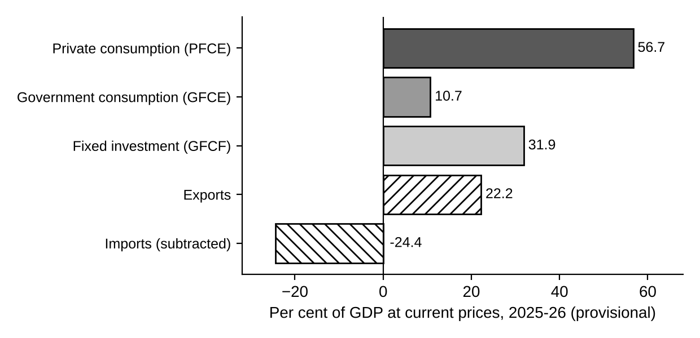
The four components sum to 97.1% (56.7 + 10.7 + 31.9 + 22.2 - 24.4). The remaining 2.9% is change in stocks, valuables and the discrepancy. Consumption is the largest driver; imports exceed exports, so net exports are negative (22.2 - 24.4 = -2.2% of GDP).
Two distinctions generate the whole family. Gross or net asks whether depreciation (consumption of fixed capital, the wear of machinery and buildings) has been deducted. Domestic or national asks whether we count by location or by the residence of the owners of factors. The bridge between the two is Net Factor Income from Abroad (NFIA):
| Aggregate | Formula | Meaning |
|---|---|---|
| Gross National Product (GNP) | GDP + NFIA | Output produced by the country’s residents, anywhere |
| Net Domestic Product (NDP) | GDP - depreciation | Domestic output after replacing worn-out capital |
| Net National Product (NNP) | GNP - depreciation = NDP + NFIA | Net output of the residents |
| National income (classical) | NNP at factor cost | NNP excluding net indirect taxes |
NFIA contains wages of residents working abroad, property income (interest, rent, dividends) and retained earnings, all net of what is paid to non-residents. It counts factor income only. Remittances sent home by relatives, gifts and foreign aid are transfers, so they are in the balance of payments (current account) but not in NFIA or GNP.
India’s NFIA has historically been negative, since the dividends and interest paid to foreign investors have exceeded what Indians earn abroad, so GDP is greater than GNP. This is an observed pattern, not a law: in countries with large overseas assets (Japan, Kuwait), GNP exceeds GDP.
A good can be valued at three levels, depending on which taxes and subsidies are included:
| Valuation | What it includes | Bridge to the next level |
|---|---|---|
| Factor cost | Pure incomes earned by factors of production (wages, rent, interest, profit) | + production taxes - production subsidies |
| Basic price | What the producer receives per unit | + product taxes - product subsidies |
| Market price | What the buyer pays |
The taxes and subsidies are of two types:
| Production taxes and subsidies | Product taxes and subsidies | |
|---|---|---|
| Linked to | The act of production, not the volume of output | Each unit produced or sold |
| Taxes | Land revenue, stamp duty on registration, professional tax | GST, customs duties, excise (in the old system) |
| Subsidies | Subsidies to small industry, capital subsidies | Food subsidy per kg, fertiliser subsidy per bag, LPG subsidy per cylinder |
So GVA at basic price = GVA at factor cost + production taxes - production subsidies, and GDP at market price = GVA at basic price + product taxes - product subsidies. The official headline since 2015 is GDP at market price, and sectoral output is GVA at basic price. When per-unit tax collections rise faster than subsidies, GDP at market price grows faster than GVA at basic price, and when subsidies rise, it grows more slowly.
| Step | Calculation | Value |
|---|---|---|
| NDP at market price | 1,000 - 100 | 900 |
| NNP at market price | 900 - 20 | 880 |
| GVA at basic price | 1,000 - 90 | 910 |
| GVA at factor cost | 910 - 10 | 900 |
| NNP at factor cost (national income) | 880 - 90 - 10, or 900 - 100 - 20 | 780 |
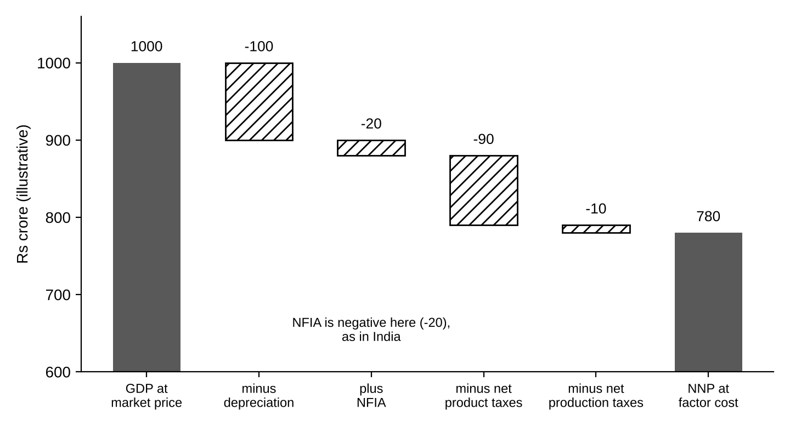
Not all of national income reaches households. The textbook chain is: personal income = national income - undistributed corporate profits - corporate tax + transfer payments to households; disposable income = personal income - personal direct taxes. With undistributed profits 30, corporate tax 20, transfers 60 and personal taxes 50, from the national income of 780: personal income = 780 - 30 - 20 + 60 = 790, and disposable income = 790 - 50 = 740. National disposable income is national income plus net current transfers from the rest of the world, such as remittances. Disposable income is divided between consumption and saving, which connects to the circular flow in Economic Organisation and Systems.
The GDP deflator = (nominal GDP / real GDP) x 100. It covers every good in the economy, unlike the CPI basket (see Inflation).
Growth rates and the deflator. Real growth is approximately nominal growth less deflator inflation. For 2025-26 in India nominal GDP grew 8.9% and real GDP 7.7%, so (1.089 / 1.077 - 1) is about 1.1%: the GDP deflator rose only about 1.1% that year.
Investment and growth. The Incremental Capital-Output Ratio (ICOR) is the extra capital needed to produce one extra unit of output: ICOR = investment rate / growth rate. A 32% investment rate and 8% growth give an ICOR of 4, meaning Rs 4 of capital per Rs 1 of added output. A lower ICOR means capital is used more efficiently. Potential GDP is the output an economy can sustain with all resources fully used without raising inflation; the gap between actual and potential is the output gap.
Exchange rates compare the size of economies in dollars, but a rupee buys more at home than its dollar value suggests, since services and many goods are cheaper in India. Purchasing power parity (PPP) converts incomes using a rate that equalises the price of a common basket across countries, so it compares real living standards better and ranks India higher than the market exchange rate does.
The Indian accounts are compiled by the National Statistics Office (NSO) under the Ministry of Statistics and Programme Implementation (MoSPI). The base year, the year whose prices measure real output, is revised from time to time to reflect changes in the economy. Recent bases include 1993-94, 1999-2000, 2004-05, the 2011-12 series (adopted in 2015, aligning with the UN System of National Accounts 2008, with GDP at market price and sectoral GVA at basic price), and now 2022-23.
| 2011-12 series | Current 2022-23 series | |
|---|---|---|
| Base year | 2011-12 | 2022-23 |
| Headline measure | GDP at market price | GDP at market price |
| Sector measure | GVA at basic price | GVA at basic price |
| Household consumption survey | NSSO 68th round (2011-12) | HCES 2022-23 |
Provisional Estimates for 2025-26 (MoSPI, released 5 June 2026; base 2022-23):
| Item | Figure |
|---|---|
| GDP at constant (2022-23) prices | Rs 3,23,12,034 crore |
| Real GDP growth | 7.7% (2024-25: 7.1%; 2023-24: 7.2%) |
| GDP at current prices | Rs 3,46,35,638 crore |
| Nominal GDP growth | 8.9% |
| Real GVA | Rs 2,94,91,088 crore (growth 7.9%) |
| Nominal GVA | Rs 3,14,86,840 crore (growth 9.1%) |
| Per capita GDP (current prices) | Rs 2,43,803 |
| Per capita net national income (current prices) | Rs 2,08,090 |
The gap between GDP and GVA at current prices is net product taxes: 3,46,35,638 - 3,14,86,840 = Rs 31,48,798 crore, about 9.1% of GDP.
Real GVA growth by sector, 2025-26:
| Sector | Growth |
|---|---|
| Agriculture and allied | 3.0% |
| Mining | 5.2% |
| Manufacturing | 10.7% |
| Electricity, gas, water | 1.7% |
| Construction | 7.4% |
| Trade, hotels, transport | 11.0% |
| Finance, real estate, professional services | 10.4% |
| Public administration, defence and others | 5.0% |
The shares of the primary, secondary and tertiary sectors in GVA are in Sectors and Goods Typology.
GDP leaves out unpaid work, the informal and black economy, environmental damage and the distribution of income, so it is not a measure of well-being. The Human Development Index and related measures (see the human development chapter in the Indian economy part) add health and education to income.
Source: Vivek Singh, Indian Economy (7th ed.), previous-year questions of the UPSC Civil Services Examination; year in brackets.
Q1. Consider the following statements [2019] (i) Purchasing Power Parity (PPP) exchange rates are calculated by comparing the prices of the same basket of goods and services in different countries (ii) In terms of PPP dollars, India is the sixth largest economy in the world
Answer: (a). Statement (i) describes PPP correctly; the key marks (ii) incorrect.
Mains questions
Chapters 7 to 13
Economic growth is a sustained rise in a country’s real output per person; economic development is the wider improvement in people’s health, education and freedom to live a life they value.
An economy can produce more every year and still leave most of its people no better off. This chapter separates the two ideas, explains the main theories of how growth happens, and then covers the measures used to judge whether people’s lives are actually improving, starting with the Human Development Index.
India’s real GDP grew 7.2% in 2023-24, 7.1% in 2024-25 and 7.7% in 2025-26 (provisional estimates, base 2022-23).
Per capita growth. If GDP grows 8% and population grows 1%, per capita GDP grows by 1.08 / 1.01 = 1.069, which is 6.9%, not 7%.
Small differences in the growth rate compound into large differences over time. The rule of 70 gives the approximate years an economy takes to double: 70 divided by the growth rate in per cent.
| Growth rate | Years to double (70 / rate) | Check: output after 10 years |
|---|---|---|
| 3% | about 23 | 1.34 times |
| 7% | 10 | 1.97 times |
Growth comes from adding inputs (more labour, more capital, more land and natural resources) and from using them better (technology, skills, organisation). The second source, which economists call productivity or total factor productivity, is the only one that can raise output per person without limit.
For some decades after the Second World War, growth and development were treated as the same thing, on the assumption that rising GDP would “trickle down” to the poor. By the 1960s and 1970s, several developing countries had high growth together with persistent poverty, unemployment and inequality, and the assumption was dropped.
| Economic growth | Economic development | |
|---|---|---|
| What it is | A quantitative rise in real GDP or per capita income | A qualitative change in the whole society: less poverty, illiteracy, disease and discrimination |
| Measured by | Real GDP, per capita income | Human Development Index and similar indices |
| Dimensions | One (money value of output) | Many (health, education, living standards, freedom) |
| Relationship | Necessary for development, but not sufficient | Wider, and growth is one means of reaching it |
Growth can be jobless (output rises, employment does not), ruthless (the gains go to a few and inequality rises) or rootless (it damages culture and community). Economists differ on which should come first. The Sen view puts spending on health, education and capabilities first, as the base for lasting growth, while the Bhagwati view puts growth first, since the resulting revenue can then pay for social programmes.
The model links growth to saving and to the efficiency of capital. The capital-output ratio is the amount of capital needed for one unit of output; its change counterpart is the Incremental Capital-Output Ratio (ICOR) (see National Income Accounting).
The model implies that a country can raise growth by saving and investing more, or by using capital better, and it is the basis for the emphasis on investment rates in India’s planning period.
The Solow model asks what happens to capital per worker over time. Capital per worker, k, rises with saving and falls with depreciation and with the growth of the workforce, which spreads capital over more workers.
Saving per worker is s x y, where s is the saving rate and y is output per worker. Output per worker has diminishing returns to capital, so saving per worker curves upward ever more slowly, while the break-even line (n + d) x k is straight. They cross at the steady state, where capital per worker stops changing.
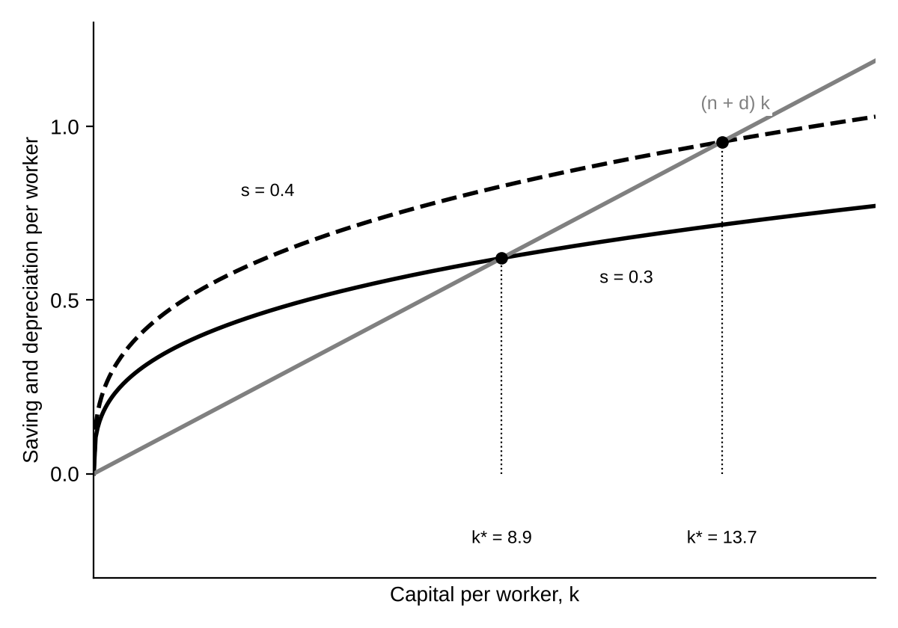
Two conclusions follow. A higher saving rate raises the level of output per worker, but only raises the growth rate for the period of adjustment. And because of diminishing returns, poorer countries with less capital should grow faster and catch up (convergence), unless they differ in saving, institutions or technology. Lasting growth in output per person comes only from technological progress, which the basic model treats as given from outside.
Paul Romer and Robert Lucas (late 1980s) explained technology and skills inside the model. Knowledge and human capital spill over from one firm to the others, so capital does not face falling returns for the economy as a whole. Education, research and development, and innovation therefore raise growth permanently, which gives policy a role (public spending on schooling, research and infrastructure).
| Theory | Source of long-run growth | Policy lesson |
|---|---|---|
| Harrod-Domar | Saving and low ICOR | Raise investment, use capital efficiently |
| Solow | Technology, given from outside | Saving changes the level, not the long-run growth rate |
| Endogenous growth | Knowledge, human capital, innovation, produced within the economy | Invest in education, research and innovation |
In Development as Freedom (1999), Amartya Sen defined development as the process of expanding the real freedoms people enjoy. The older human capital view treats people as inputs, with education and health valued for the output they add; Sen treats people as the end, so a person who cannot work still has full worth.
Sen separates three things: commodities (what a person has, such as a bicycle), functionings (what a person can be or do, such as being literate, well-nourished or free to move) and capabilities (the real opportunity to achieve the functionings a person has reason to value).
Human capital is the skill and health of people, built by spending on education, health and on-the-job training. The causality runs both ways: higher income lets a society invest more in human capital, and more human capital raises income.
A wealthy person fasting for religious reasons has the capability to eat and chooses not to. A starving person in a famine lacks it. Their food intake may be the same, but their freedom is not. This is why development is judged by what people are able to do, not only by what they own.
| Measure | Year and author | Content | Limitation |
|---|---|---|---|
| Basic Needs Approach | ILO, 1976 | Minimum requirements of food, clothing, shelter, water, sanitation, transport, primary education | Lists needs but gives no single index |
| Physical Quality of Life Index (PQLI) | Morris D. Morris, 1979 | Equally weighted infant mortality, life expectancy at age one, basic literacy; scale of 1 to 100 | Leaves out income |
| Dimension | Indicator | Minimum | Maximum |
|---|---|---|---|
| Long and healthy life | Life expectancy at birth | 20 years | 85 years |
| Knowledge | Mean years of schooling (adults aged 25 and over) | 0 | 15 |
| Knowledge | Expected years of schooling (children entering school) | 0 | 18 |
| Decent standard of living | Gross national income (GNI) per capita, PPP dollars | $100 | $75,000 |
Each indicator is converted to an index between 0 and 1:
The education index is the average of the two schooling indices. The income index uses natural logarithms, because an extra dollar means more to a poor person than a rich one:
HDI is the geometric mean of the three indices: the cube root of (health index x education index x income index). Until 2010 the HDI was an arithmetic mean, which let high income make up for poor health or schooling. The geometric mean penalises uneven development.
| Step | Calculation | Index |
|---|---|---|
| Health | (72.00 - 20) / 65 | 0.800 |
| Mean schooling | 6.88 / 15 | 0.459 |
| Expected schooling | 12.95 / 18 | 0.719 |
| Education | (0.459 + 0.719) / 2 | 0.589 |
| Income | (ln 9,046.76 - ln 100) / (ln 75,000 - ln 100) | 0.681 |
| HDI | cube root of (0.800 x 0.589 x 0.681) | 0.684 to 0.685 |
UNDP reports India’s HDI as 0.685, up from 0.676 in 2022, and its rank as 130 out of 193 countries (133 in 2022). The small gap from 0.684 comes from rounding the inputs.
| HDI group | HDI value |
|---|---|
| Very high | 0.800 and above |
| High | 0.700 to 0.799 |
| Medium (India) | 0.550 to 0.699 |
| Low | below 0.550 |
The HDI is an average and hides inequality within a country. UNDP’s companion indices correct for this.
| Index | What it shows | How to read it |
|---|---|---|
| Inequality-adjusted HDI (IHDI) | HDI after discounting each dimension for inequality across the population | Equals HDI if there is no inequality. Loss = 1 - IHDI / HDI. India’s loss is 30.7% (Human Development Report 2025) |
| Gender Development Index (GDI) | Female HDI divided by male HDI | 1 means parity |
| Gender Inequality Index (GII) | Losses from gender gaps in reproductive health (maternal mortality, adolescent births), empowerment (parliament seats, secondary education) and labour market participation | 0 is full equality, 1 the worst |
| Multidimensional Poverty Index (MPI) | Overlapping deprivations in health, education and living standards, in households | Covered in the poverty and inequality chapter |
| Measure | Idea |
|---|---|
| Gross National Happiness (Bhutan, 1972) | Progress is judged by wellbeing, with four pillars: sustainable development, environmental conservation, preservation of culture and good governance |
| Green GDP | GDP minus environmental damage and depletion of natural capital |
| Genuine Progress Indicator (GPI) | Adjusts GDP for inequality, crime, pollution and the value of unpaid household work and volunteering |
The World Bank groups countries by GNI per capita in US dollars, converted by the Atlas method (a three-year average of exchange rates to smooth currency swings). The thresholds for the fiscal year 2026-27, based on 2025 income, are:
| Group | GNI per capita (US$) |
|---|---|
| Low income | 1,175 or less |
| Lower-middle income | 1,176 to 4,635 |
| Upper-middle income | 4,636 to 14,375 |
| High income | above 14,375 |
India remains in the lower-middle-income group. The IMF’s World Economic Outlook divides the world into advanced economies and emerging market and developing economies, using per capita income (at PPP), export diversification and integration into the global financial system. India is in the second group.
The middle-income trap describes a country that escapes low income through low-wage manufacturing but then stalls, because it does not move to high-productivity work built on innovation and skilled labour.
Source: Vivek Singh, Indian Economy (7th ed.), previous-year questions of the UPSC Civil Services Examination; year in brackets.
Q1. Economic growth in country X will necessarily have to occur if [2013]
Answer: (c). Capital formation within the country adds to its productive capacity.
Q2. Increase in absolute and per capita real GNP do not connote a higher level of economic development, if [2018]
Answer: (c). Growth is necessary but not sufficient; development needs falling poverty and unemployment.
Q3. Despite being a high saving economy, capital formation may not result in significant increase in output due to [2018]
Answer: (d). A high ICOR means each unit of capital adds little output (Harrod-Domar).
Income determination explains the level of national output as the point where planned spending equals output; the multiplier is the number of times a change in spending changes national income.
Classical economists believed that a market economy returns by itself to full employment. The Great Depression of the 1930s showed unemployment lasting for years, and John Maynard Keynes (The General Theory of Employment, Interest and Money, 1936) answered that output is decided by total spending, called effective demand, and that spending can fall short of what a fully employed economy would produce. This chapter builds the simple model that follows from that idea.
Households divide disposable income between consumption and saving. The consumption function is
where a is autonomous consumption (spending that does not depend on income), Y is income and b is the marginal propensity to consume.
| Term | Meaning | Formula |
|---|---|---|
| Marginal propensity to consume (MPC) | Share of an extra rupee of income that is spent | change in C / change in Y |
| Marginal propensity to save (MPS) | Share of an extra rupee that is saved | 1 - MPC |
| Average propensity to consume (APC) | Share of total income that is spent | C / Y |
| Average propensity to save (APS) | Share of total income that is saved | S / Y = 1 - APC |
Keynes held that MPC is positive but less than one, so people save part of every extra rupee. This gap between income and consumption is the reason spending can fall short of output.
Planned aggregate expenditure (AE) in an economy with households and firms is
where I is planned investment, taken as given. The economy is in equilibrium when planned spending equals output: Y = AE. If AE is below Y, stocks of unsold goods pile up and firms cut output; if AE is above Y, stocks run down and firms raise output.
An equivalent condition is that planned saving equals planned investment (S = I). At Y = 1,000, saving = 100 = I. This is the same leakages and injections condition met in Economic Organisation and Systems.
When autonomous spending rises, income rises by more than the rise. The extra income is spent in part, which becomes income for someone else, who spends part of it, and so on. The total is a geometric series:
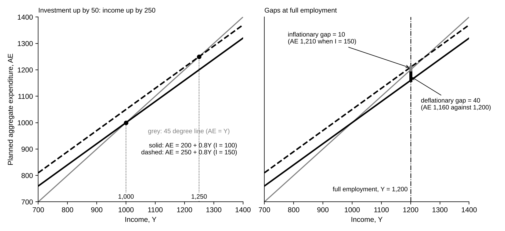
The multiplier works in both directions, so a fall in investment cuts income by a multiple too. A higher MPC means a larger multiplier: with MPC = 0.9 it is 10, with MPC = 0.5 it is 2.
Suppose full-employment output is 1,200.
| Case | Planned spending at Y = 1,200 | Gap |
|---|---|---|
| I = 100 | 200 + 0.8 x 1,200 = 1,160 | Deflationary gap of 40: spending is 40 short of output, so income settles below full employment (at 1,000) |
| I = 150 | 250 + 0.8 x 1,200 = 1,210 | Inflationary gap of 10: spending exceeds what the economy can produce, so prices rise |
The deflationary gap is the shortfall of spending, 40, not the shortfall of output (200). The two are linked by the multiplier: 40 x 5 = 200. Closing the gap needs an extra 40 of spending. The inflationary gap in the second case, 10 x 5 = 50, explains why equilibrium (1,250) would be 50 above capacity. In real terms the economy cannot produce more than 1,200, so the gap shows up as inflation.
| Multiplier | Formula | Value for b = 0.8 |
|---|---|---|
| Investment or government spending | 1 / (1 - b) | 5 |
| Lump-sum tax (a tax rise cuts income) | - b / (1 - b) | -4 |
| Balanced budget (G and T rise equally) | 1 | 1 |
| Spending, with proportional tax at rate t | 1 / (1 - b(1 - t)) | 2.5 for t = 0.25 |
| Spending, with proportional tax and imports (propensity m) | 1 / (1 - b(1 - t) + m) | 2 for t = 0.25 and m = 0.1 |
Taxes that rise with income, and imports, are leakages: they take spending out of the circular flow at each round, and so shrink the multiplier. A country with high taxes and a large import share has a smaller multiplier. Government spending on capital works raises income first by the spending itself, and later by the capacity built.
If every household tries to save more, total saving may not rise. Suppose autonomous consumption falls from 100 to 50. Income falls from 1,000 to (50 + 100) / 0.2 = 750. Consumption at the new level is 50 + 0.8 x 750 = 650, so saving = 750 - 650 = 100, which is the same as before, because it must equal investment. Households tried to save more but only reduced income. Saving is a virtue for an individual and can be a problem for the economy when the economy is below full employment.
So far investment has been a given number. In practice a firm decides on investment by comparing the return it expects from a new machine or plant with the cost of funds. The investment function is I = I0 - d × r, where r is the interest rate, d is how strongly investment responds to the interest rate, and I0 is autonomous investment, set by business expectations (Keynes called the mood behind it “animal spirits”).
| Project (cost Rs 100 each) | MEC | Invested at r = 10%? | Invested at r = 7%? | Invested at r = 5%? |
|---|---|---|---|---|
| A | 15% | Yes | Yes | Yes |
| B | 12% | Yes | Yes | Yes |
| C | 9% | No | Yes | Yes |
| D | 6% | No | No | Yes |
| Total investment | Rs 200 | Rs 300 | Rs 400 |
Ranking projects from the highest to the lowest MEC gives a downward-sloping MEC schedule, so a lower interest rate raises total investment. A change in expected sales or profits shifts the whole schedule, which is why investment moves more than consumption over the cycle. Public capital expenditure (Rs 12.2 lakh crore in the Union Budget 2026-27) is outside this rule, since the government does not decide on the basis of a private rate of return.
The accelerator reverses the direction of the multiplier link: a rise in output raises the need for capital, so net investment rises by a multiple of the change in output. In words: net investment = capital-output ratio (v) × change in output (ΔY), or I = v × ΔY.
| Year | Output | Change in output | Net investment (v = 2) |
|---|---|---|---|
| 1 | 100 | - | - |
| 2 | 110 | 10 | 20 |
| 3 | 120 | 10 | 20 |
| 4 | 125 | 5 | 10 |
| 5 | 125 | 0 | 0 |
Output still rises in year 4, but net investment halves because output grows more slowly. When growth only slows, investment falls, and this is the way a small change in demand produces a large change in investment. The multiplier and the accelerator working together explain how swings in demand build into the cycles covered in the Business Cycles chapter. The accelerator assumes that firms have no spare capacity and that the capital-output ratio is fixed, so it overstates investment when firms hold idle capital.
The consumption function C = a + bY treats current income as the only influence. Later theories add other influences.
| Theory | Author and year | Main idea | Implication |
|---|---|---|---|
| Absolute income | Keynes, 1936 | Consumption depends on current disposable income; MPC between 0 and 1 and falls as income rises | Short-run consumption function with a positive intercept |
| Relative income | Duesenberry, 1949 | Consumption depends on income relative to the household’s own past peak and to others around it | Consumption falls less than income in a recession (ratchet effect) |
| Life-cycle | Modigliani and Brumberg, 1954 | People smooth consumption over their lifetime: they save while working and dissave in retirement | Consumption depends on lifetime resources; the age structure of a country affects its saving rate |
| Permanent income | Friedman, 1957 | Consumption depends on expected long-run (permanent) income; a transitory change in income is mostly saved | Temporary tax cuts or transfers raise consumption less than permanent ones |
| Random walk | Hall, 1978 | If households use all available information, consumption changes only when news about income arrives | Changes in consumption cannot be predicted from past information |
These theories explain why the long-run consumption-income ratio is nearly constant while the short-run function shows a falling average propensity to consume.
| Point | Classical | Keynesian |
|---|---|---|
| Basic law | Say’s law: supply creates its own demand | Effective demand (aggregate demand) determines output |
| Wages and prices | Flexible, so markets clear | Sticky downward, especially wages, in the short run |
| Saving and investment | Equalised by the interest rate | Equalised by changes in income (S = I at equilibrium income) |
| Unemployment | Temporary and voluntary; the labour market clears | Can persist below full employment because of deficient demand |
| Money | Neutral, affects only the price level | Affects output through the interest rate and investment when there is slack |
| Policy | Little role for government; the economy self-corrects | Fiscal and monetary policy can lift demand in a slump |
| Aggregate supply curve | Vertical at full-employment output | Flat when there is unused capacity, upward-sloping nearby |
The two views are placed on the same diagram in the IS-LM and AD-AS chapter, where the shape of the aggregate supply curve decides how much of a demand shift falls on output and how much on prices.
Private final consumption makes up about 56.7% of GDP (2025-26 provisional estimates), which sets a large base for the consumption part of the multiplier. The Economic Survey has noted that fiscal multipliers are larger in recessions than in expansions, which is the argument for counter-cyclical spending in a downturn such as 2020-21 (Economic Survey findings). No single number for India’s multiplier is given here, since published estimates differ by study and period.
The IS-LM model finds the interest rate and income at which the goods market and the money market are both in equilibrium; the AD-AS model adds the price level to show how output and prices respond to demand and supply shocks.
The Keynesian cross of the previous chapter fixed the interest rate and the price level. This chapter lets the interest rate move (IS-LM) and then lets the price level move (AD-AS). Together they explain why fiscal and monetary policy work differently, and why a central bank can run out of room.
The autonomous terms sum to 400 and the multiplier is 5, so every 1 point rise in r lowers income by 100.
| Shifts the IS curve right | Shifts it left |
|---|---|
| Higher government spending, lower taxes | Lower government spending, higher taxes |
| Higher autonomous consumption or investment (better expectations) | Lower autonomous consumption or investment |
| Higher exports | Higher imports (autonomous) |
A steeper or flatter IS depends on how sensitive investment is to the interest rate and on the size of the multiplier.
Keynes gave three motives for holding money:
| Motive | Depends on | Effect |
|---|---|---|
| Transactions | Income | Higher income, more money demanded |
| Precautionary | Income | Money held against emergencies |
| Speculative | Interest rate | Higher rate, less money held (bonds look better); lower rate, more |
An increase in the money supply shifts LM to the right; a fall shifts it to the left. A rise in the price level lowers the real money supply and also shifts LM left.
Economists disagree on what determines the interest rate. The two classic answers differ in what they treat as the cause:
| Classical (loanable funds) | Keynes (liquidity preference) | |
|---|---|---|
| Idea | Interest is the price that makes the supply of saving equal the demand for investment. | Interest is the reward for parting with liquidity: it is fixed in the money market by the demand for money and the supply of money. |
| Supply side | Saving rises as the rate rises (a reward for waiting). | Money supply is set by the central bank. |
| Demand side | Investment falls as the rate rises (fewer projects pay). | Money demand falls as the rate rises (the speculative motive). |
| Nature | A real, long-run explanation (a flow of saving and investment). | A monetary, short-run explanation (a stock of money). |
| Where in the models | The IS curve (goods market). | The LM curve (money market). |
Worked example (loanable funds). Saving S = 50 + 10r and investment I = 150 - 10r, where r is in per cent. Setting S = I gives 50 + 10r = 150 - 10r, so r = 5% and S = I = 100. If firms become more optimistic and investment rises to I = 170 - 10r, then r = 6% and S = I = 110.
In Keynes’s account an increase in the money supply lowers the interest rate (the LM curve shifts right). He added that at a very low rate people hold any extra money instead of buying bonds, which is the liquidity trap (the chapters “Stabilisation Policy and the Policy Mix” and “Monetary Policy and Inflation Targeting”). Later economists combine the two views: the IS-LM model gives the rate and income together.
With IS: Y = 2,000 - 100r and LM: Y = 800 + 100r, equal incomes give 2,000 - 100r = 800 + 100r, so r = 6 and Y = 1,400.
Fiscal expansion. Let government spending rise from 60 to 120. The multiplier is 5, so IS shifts right by 300 to Y = 2,300 - 100r. The new equilibrium is r = 7.5 and Y = 1,550. Income rises by 150, not the 300 the multiplier alone predicts. The interest rate rose from 6 to 7.5, and investment fell from 180 to 150. The lost 150 of income is crowding out: government borrowing pushes up the interest rate and displaces private investment.
Monetary expansion. Let M rise from 400 to 480. LM shifts to Y = 960 + 100r. The new equilibrium is r = 5.2 and Y = 1,480. The interest rate falls, investment rises (to 196) and income rises by 80.
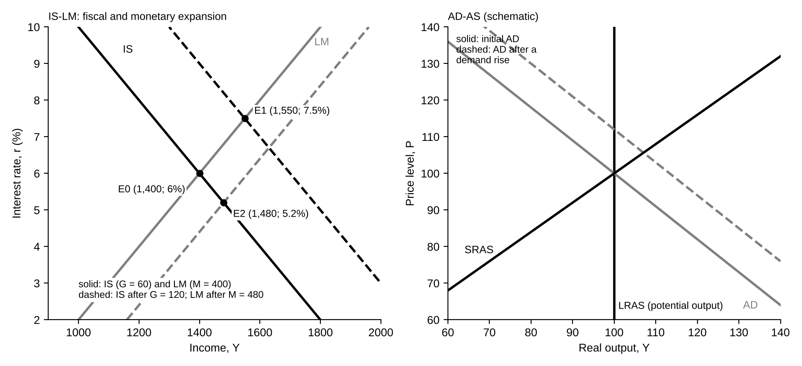
| Fiscal expansion | Monetary expansion | |
|---|---|---|
| Curve that shifts | IS right | LM right |
| Interest rate | Rises | Falls |
| Income | Rises (less than multiplier effect) | Rises |
| Private investment | Crowded out | Crowded in |
The extreme cases.
AD shifts right with any fiscal or monetary expansion, higher autonomous spending or higher exports.
| Curve | Shape | Reason |
|---|---|---|
| Short-run AS (SRAS) | Upward sloping | Wages and other input prices are slow to adjust, so higher prices raise profits and output |
| Long-run AS (LRAS) | Vertical at potential output | In the long run wages and prices adjust and output depends on capital, labour and technology |
SRAS shifts with input costs (oil, wages), productivity and expectations. LRAS shifts with growth in capital, labour and technology, the subject of the growth chapter.
During 2020-21 the repo rate was held at 4% and the government raised spending and borrowing; this is the case for using both policies together when private demand is weak. In recent years the central bank has targeted inflation at 4% (with a band of 2 to 6%), which is an AD-AS judgement: inflation caused by demand is handled by raising the repo rate (an LM shift left), while a supply shock such as a food-price spike is less responsive to the repo rate. The chapters on monetary policy and on fiscal policy take these up with data.
Previous-year question (Vivek Singh, Indian Economy; UPSC prelims)
Q1. Supply of money remaining the same when there is an increase in demand for money, there will be [2013]
Answer: (b). With the money supply fixed, higher money demand raises the interest rate that clears the money market (an upward move along the LM curve logic: the interest rate must rise to hold demand back).
Inflation is a sustained rise in the general price level, which lowers the purchasing power of money.
Inflation means that prices in the economy keep rising over time, so the same rupee buys less than before. This chapter covers what inflation is, why it happens, its effects, how India measures it with price indices, how it is controlled, and the Phillips curve that links it to unemployment. The RBI’s policy response is in the chapter on monetary policy and inflation targeting.
Take a fixed shopping basket that cost Rs 1,000 last year and Rs 1,060 this year. Prices rose by Rs 60 on a base of Rs 1,000, so inflation is 6%. With a price index (the cost of the basket written as a number, with the base year set to 100):
Falling inflation is not falling prices. If inflation drops from 8% to 5%, prices are still rising, only more slowly.
Base effect. The inflation rate depends on last year’s index as well as this year’s, so it can mislead. If prices rose very little last year (a low base), even a small rise this year gives a high inflation rate. If prices rose sharply last year (a high base), the same rise this year gives a lower rate. (Previous-year question, 2011: base effect is the impact of the price levels of the previous year on the calculation of the inflation rate.)
A real episode usually mixes the explanations below.
Demand-pull. When households, businesses, the government and foreign buyers together want more output than the economy can produce, sellers raise prices (“too much money chasing too few goods”). Causes: money supply growing faster than output, tax cuts and higher government spending, a jump in exports or consumer spending. Once the economy is at full capacity, extra demand raises only prices.
Cost-push. Producers’ costs rise, so they charge more and produce less. Causes: crude oil or fertiliser price shocks, wages rising faster than productivity, a weaker rupee that makes imported inputs costlier, monopoly power, natural disasters and supply blockades.
Structural. In developing countries weak supply systems push prices up even without excess demand: farm output cannot expand quickly, storage and logistics are poor, and imports of oil and some electronics are needed at any price. This view comes from Latin American structuralist economists (Prebisch, Noyola, Sunkel). The supply-chain version is also called bottleneck inflation.
Why India’s inflation rises.
| Term | Meaning |
|---|---|
| Low (creeping) inflation | Slow, predictable, single digit a year; people still save and sign long-term contracts |
| Galloping inflation | Double or triple digit a year (20%, 100%, 200%); people hoard goods and avoid lending at low nominal rates |
| Hyperinflation | Prices rising by more than a million percent a year; Germany in the early 1920s (money printed to pay government bills), USSR 1991 after prices were freed |
| Headline inflation | Price rise in the whole CPI basket, food and fuel included; the RBI’s target measure |
| Core inflation | Headline inflation with food and fuel removed, showing the steadier demand-driven part |
| Reflation | Deliberate lifting of prices by the government or central bank to escape a slump |
| Disinflation | Inflation falls but stays positive (8% to 5%) |
| Deflation | The general price level falls (inflation below 0) |
| Stagflation | Slow growth and high unemployment together with high inflation |
| Skewflation | Price rise concentrated in a few items such as pulses or onions |
| Shrinkflation | Price unchanged, pack size reduced |
| Greedflation | Firms raise profit margins by more than their costs rose |
Disinflation is not negative inflation; deflation is. Why deflation is harmful: when prices fall, holding cash earns a positive real return, so people postpone purchases and avoid borrowing (debt must be repaid in more valuable rupees), demand falls further, and unemployment rises.
Economic growth is normally accompanied by mild inflation (previous-year question, 2011: answer inflation). A recession is normally a low-inflation event because demand falls first; if it is triggered by supply factors such as drought or a lockdown, inflation can be high, but only briefly, because job losses then reduce demand.
| Who or what | Effect |
|---|---|
| Debtors and creditors | Debtors gain and creditors lose, because loans are repaid in rupees worth less (unanticipated inflation) |
| Fixed-income earners | Lose purchasing power |
| Savings | Real return on deposits falls; savers shift to land, gold and goods |
| Taxes | Higher nominal incomes push people into higher slabs (bracket creep), raising the real tax burden |
| Government | Inflation acts as a tax on money holders, the inflation tax, when a deficit is financed by printing money |
| External sector | Domestic goods become dearer, so exports fall and imports rise, putting pressure on the currency |
| Growth | Mild inflation can support investment because real borrowing costs are low; high inflation raises uncertainty and cuts investment |
| Wage-price spiral | Higher prices raise wage demands, which raise costs and prices again |
Fisher relation. Nominal interest rate = real interest rate + expected inflation. At 6% inflation a deposit rate of 8% gives a real return of 2%, and savers will not hold deposits yielding below inflation (the interest-rate compensation for expected inflation is often called the inflation premium).
In 1958 A. W. Phillips found, in UK data, that wages rose faster when unemployment was low. Samuelson and Solow later turned this into an inverse link between inflation and unemployment. In the short run, when unemployment falls firms compete for workers, wages rise and are passed into prices, so the curve slopes down.
The 1970s oil shocks, when prices and unemployment rose together (stagflation), broke the stable trade-off. Friedman and Phelps had already explained why: workers care about real wages, so once they expect higher inflation they ask for higher money wages, and unemployment drifts back to its normal level with higher inflation. That level is the natural rate of unemployment, also called NAIRU (non-accelerating inflation rate of unemployment). In the long run the curve is vertical at NAIRU. Policy can hold unemployment below NAIRU only briefly, at the cost of ever-higher inflation, and higher expected inflation shifts the short-run curve upward.
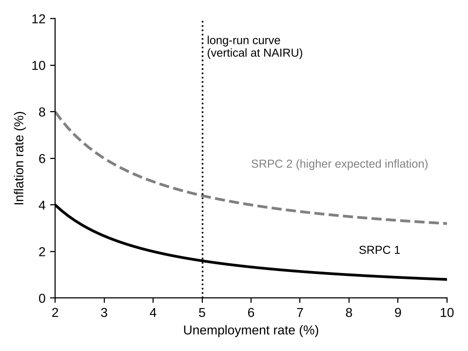
| CPI (Combined) | WPI | |
|---|---|---|
| Measures | Prices paid by households at retail | Prices at the first bulk (wholesale or factory-gate) sale |
| Compiled by | National Statistical Office, MoSPI | Office of the Economic Adviser, DPIIT (Commerce Ministry) |
| Current base year | 2024 = 100, first released February 2026 with January 2026 data | 2022-23 = 100, announced June 2026 |
| Earlier base | 2012 | 2011-12 |
| Covers | Goods and services | Goods only, no services |
| Items | 358 (2012 series: 299 item groups) | 957 (earlier series: 697) |
| Prices include | Retail prices with taxes | Basic prices, excluding taxes and trade and transport margins |
| Used as RBI’s target | Yes | No |
Parts of the CPI. CPI is compiled separately for rural, urban and combined (all-India, with state and UT figures), monthly by the NSO. Weights come from household expenditure in the base year and stay fixed until the base is revised; CPI includes indirect taxes. The Consumer Food Price Index (CFPI) tracks retail food prices, also for rural, urban and combined. In the old 2012 series food and beverages had the largest weight (45.86%).
Parts of the WPI. Commodities fall into three groups: primary articles (agricultural commodities and minerals), fuel and power, and manufactured products. In the 2011-12 series food articles had a weight of 24.4% and about 697 items were covered; weights were based on net traded value (domestic production plus net imports). WPI covers inputs, intermediate and capital goods that consumers do not buy, which CPI leaves out. Services are not traded in wholesale markets, so WPI excludes them.
CPI 2024 series: what changed.
CPI 2012 series (older questions still use it). Weights summed to 100: Food and beverages 45.86, Miscellaneous (services) 28.32, Housing 10.07 (urban only, rural zero), Fuel and light 6.84, Clothing and footwear 6.53, Pan, tobacco and intoxicants 2.38.
WPI 2011-12 weights (older questions still use them). Manufactured products 64.23, Primary articles 22.62, Fuel and power 13.15. The 2022-23 series derives weights from gross value of output, with manufactured products again the largest; its group weights have not been verified, so they are not given.
Producer Price Index (PPI). Launched with the new WPI on 15 June 2026: an Output PPI (prices producers receive), a trial Input PPI for manufacturing, and a quarterly Service PPI for seven sectors (banking, securities transactions, insurance, pension fund management, railways, passenger air, telecom). The WPI is to be discontinued after a five-year transition.
Labour Bureau indices (Ministry of Labour and Employment):
Housing Price Index. Published by the National Housing Bank.
GDP deflator = Nominal GDP / Real GDP x 100. Example: nominal Rs 300 lakh crore and real Rs 250 lakh crore give a deflator of 120.
| GDP deflator | CPI | |
|---|---|---|
| Covers | Everything produced in the country | A fixed basket households buy |
| Imports | Not included | Included if households buy them |
| Weights | Change with the output mix | Fixed until the base year is revised |
| Frequency | Quarterly with GDP | Monthly |
The deflator is computed from nominal and real GDP, which are made by converting current-price and constant-price estimates with price indicators that are generally WPI or CPI, or a mix. A crude oil price spike hits CPI directly but the deflator only through second-round effects.
Headline inflation from weights (illustration). Headline inflation is roughly the sum of each group’s weight times its price rise. With food at 36.75% and food prices up 10%, with everything else unchanged, headline inflation is about 0.3675 x 10 = 3.7%.
The Urjit Patel Committee (January 2014) recommended CPI (Combined) as the nominal anchor because WPI has no services (more than half of GDP), households buy at retail prices and not wholesale prices, and CPI gives a fuller picture of the cost of living. Under Section 45ZA of the RBI Act, 1934, the target is 4% with a band of 2% to 6%, fixed for 1 April 2026 to 31 March 2031. The RBI’s tools are in the monetary policy chapter.
| Approach | Measures |
|---|---|
| Monetary policy (short term) | Higher repo rate and tighter liquidity reduce demand |
| Fiscal policy (short term) | Lower government spending, higher taxes; lower tax on inputs and duties on essential imports |
| Supply side | Higher domestic production, strong supply chain, buffer stock releases (FCI), lower import duties on items such as wheat, pulses and edible oil |
| Demand side (long term) | Regulating purchasing power, food through the PDS, taxation |
| Structural | Farm reforms, food processing, cold chains, supermarkets and direct links between farmers and consumers, renewable energy to cut fuel imports |
Government measures.
| Item | Figure | Date |
|---|---|---|
| CPI inflation | 5.54% (4.83% in August 2026) | September 2026, released 12 October 2026 |
| Food inflation (CFPI) | 7.74% (5.97% in August 2026) | September 2026 |
| Rural / urban CPI | 6.08% / 4.88% | September 2026 |
| Biggest price rises | Onions 108.09%, ginger 62.85%, garlic 54.62% | September 2026, year on year |
| Repo rate | 5.50% (raised from 5.25% on 7 October 2026) | 23 October 2026 |
Headline inflation rose by about 0.7 percentage points in one month, driven mostly by food. This vegetable-led jump is skewflation and lies largely outside the RBI’s direct control.
Previous-year questions (Vivek Singh, Indian Economy; UPSC prelims)
Q1. A rapid increase in the rate of inflation is sometimes attributed to the “base effect”. What is “base effect”? [2011]
Answer: (c).
Q2. Economic growth is usually coupled with [2011]
Answer: (b).
Q3. Which of the following brings out the “Consumer Price Index Number for Industrial Workers”? [2015]
Answer: (c).
Q4. Consider the following statements: [2020]
Which of the statements given above is/are correct?
Answer: (a).
Q5. Consider the following statements: [2013]
Which of the statements given above are correct?
Answer: (a).
Q6. A rise in general level of prices may be caused by [2013]
Answer: (d).
Q7. Which of the following is likely to be the most inflationary in its effect? [2013]
Answer: (d).
Employment economics studies how many people work, how many seek work and cannot find it, and the laws and social security that govern work.
The population is divided into those in the labour force (employed, or unemployed and looking for work) and those not in the labour force (children, the elderly, people keeping house, people not seeking work). An unemployed person is one who has no work at the prevailing wage although able and willing to work; a person who cannot or does not wish to work is not unemployed.
| Measure | Formula |
|---|---|
| Labour force | Employed + Unemployed |
| Labour force participation rate (LFPR) | Labour force / Population of the age group x 100 |
| Worker population ratio (WPR) | Employed / Population of the age group x 100 |
| Unemployment rate (UR) | Unemployed / Labour force x 100 |
| Type | Meaning | Example |
|---|---|---|
| Structural | Jobs exist but workers’ skills do not match what employers need; long lasting | Handloom weavers displaced by power looms; automation |
| Cyclical | Falls in demand for labour in a downturn of the business cycle | A recession |
| Frictional | People moving between jobs or entering the labour force; always present even at full employment | A person who quits and searches for a better job |
| Seasonal | Work only at certain times of the year | Farming, tourism, sugar mills |
| Disguised (hidden) | More people work than needed, so marginal productivity of labour is zero; removing some leaves output unchanged | Surplus family labour on small farms |
| Open | Visible: willing and available for work but not working | People registering at employment exchanges |
| Technological | Caused by new technology replacing labour | Machines replacing manual work |
| Chronic | Long-term unemployment |
Natural rate of unemployment. The sum of frictional and structural unemployment; the NAIRU of the inflation chapter. Cyclical unemployment is the gap above it.
Okun’s law (rule of thumb). In the United States a fall of output below potential by about 2 percentage points is associated with a rise of about 1 percentage point in unemployment; the coefficient differs across countries and periods.
Activity status in surveys.
| Approach | Rule |
|---|---|
| Usual status (principal and subsidiary, ps+ss) | Principal status is the activity on which a person spent the most time in the previous year; subsidiary status is work of at least 30 days in the year |
| Current weekly status (CWS) | Employed if a person worked at least one hour on at least one day in the last seven days |
| Current daily status | Work on each day of the previous week: 1 to 4 hours counts as half a day, more than 4 hours as a full day; the widest measure, capturing all kinds of unemployment |
Periodic Labour Force Survey (PLFS), run by the National Statistics Office (MoSPI). Employment-unemployment surveys of the NSSO were held every five years from 1972; the PLFS replaced them to give annual estimates for rural and urban areas and, earlier, quarterly estimates for urban areas. The first annual report (July 2017 to June 2018) was published in May 2019. A monthly bulletin (current weekly status, age 15 and above) is now also released.
Other sources. Census of India; employment exchange registrations (Directorate General of Employment, Ministry of Labour and Employment); Economic Census (1977, 1980, 1990, 1998, 2005, 2013-14, 2020; establishment based and irregular).
All-India Quarterly Establishment-based Employment Survey (AQEES), Labour Bureau, Ministry of Labour and Employment. A demand-side survey of nine sectors (manufacturing, construction, trade, transport, education, health, accommodation and restaurants, IT/BPO, financial services) with two parts: the Quarterly Employment Survey (QES) for establishments with 10 or more workers (mostly organised), and the Area Frame Establishment Survey (AFES) for those with 9 or fewer (mostly unorganised). The first QES report (April to June 2021) found that nearly 90% of establishments had fewer than 100 workers and that women were 29% of workers.
Latest data.
| Indicator (age 15 and above) | Figure | Source and date |
|---|---|---|
| Unemployment rate, usual status, 2025 | 3.1% (rural 2.4%, urban 4.8%) | PLFS Annual Report 2025 (January to December 2025), MoSPI |
| LFPR, 2025 | 59.3% (male 79.1%, female 40.0%) | same |
| WPR, 2025 | 57.4% (male 76.6%, female 38.8%) | same |
| Employment by status, 2025 | Self-employed 56.2%, regular wage 23.6%, casual labour 20.2% | same |
| Employment by sector, 2025 | Agriculture 43.0%, manufacturing 12.1%, construction 12.0% | same |
| Unemployment rate, current weekly status, September 2026 | 5.0% (rural 4.2%, urban 6.9%) | PLFS monthly bulletin, released 15 October 2026 |
| LFPR / WPR, CWS, September 2026 | 55.5% / 52.7%; urban female LFPR 25.9% | same |
The 2025 annual estimates use a revised sampling design and are not strictly comparable with earlier annual PLFS figures. The usual-status and current-weekly-status rates are different measures and should not be compared. For the earlier year, PLFS 2023-24: LFPR 60.1% (male 78.8%, female 41.7%), unemployment rate 3.2% and WPR 58.2%.
The informal (unorganised) sector is the part of the economy that is not registered, taxed or monitored by the government, or has fewer than 10 workers. Estimates say that over 90% of India’s workforce (about 52 crore, on older figures) is informal, and that the sector contributes more than 30% of GDP. Own-account enterprises (no hired labour; street vendors, household units) are a large part, and manufacturing, construction and trade dominate informal employment.
Why it is large:
Informal units are less productive (little capital, technology and management), so wages stay low and workers cannot upgrade their skills. Inclusive growth needs these workers brought into formal employment.
Labour is on the Concurrent List. Before 2019 the Centre had about 44 labour laws and the states had their own (around 200 in all). The main complaints were:
Twenty-nine central laws were merged into four codes. The codes were enacted in 2019 and 2020 and brought into force on 21 November 2025 by notification; the relevant provisions of the old Acts apply during a transition while new rules and schemes are framed after consultation (KPMG summary of the notification). The provisions below are as enacted; the rules framed under them can change thresholds.
| Code | Laws replaced | Main provisions |
|---|---|---|
| Code on Wages, 2019 | 4: Payment of Wages 1936, Minimum Wages 1948, Payment of Bonus 1965, Equal Remuneration 1976 | Statutory floor wage for all workers, organised or not; minimum wage cannot go below it; minimum wages revised at intervals of at most five years; overtime at not less than twice the normal rate; wages must be paid within two working days of removal, retrenchment or resignation; “wages” include basic pay, dearness allowance and retaining allowance, with exclusions capped at 50% of remuneration; bonus of 8.33% to 20% for employees below a wage ceiling; coverage extended to all establishments and employees; MGNREGA wages outside the Code |
| Occupational Safety, Health and Working Conditions Code, 2020 | 13, including Factories Act 1948 | Employment letter for every employee; 8-hour working day, overtime with consent and double wages; a factory is a unit with 20 workers (with power) or 40 (without); women may work at night with consent and safeguards; state governments may exempt new establishments; covers inter-state migrant workers |
| Code on Social Security, 2020 | 9, including Maternity Benefit Act 1961, Payment of Gratuity Act 1972 | Social security for all workers including the unorganised, gig and platform workers; aggregators contribute 1% to 2% of turnover (capped at 5% of payments to workers); a Social Security Fund; EPFO coverage for establishments with 20 workers; voluntary EPFO and ESIC entry for smaller ones |
| Industrial Relations Code, 2020 | 3: Trade Unions 1926, Industrial Employment (Standing Orders) 1946, Industrial Disputes 1947 | Prior government permission for lay-off, retrenchment and closure only for firms with more than 300 workers (states can raise the limit by notification), with deemed approval if no response; contract labour barred from core activities except a specified list (canteen, security, sanitation); fixed-term employment allowed in all industries; 14 days’ notice for strikes and lockouts in all units; mass casual leave by 50% or more of workers counts as a strike; only a union with the support of more than 51% of workers on the muster roll can negotiate with management |
In favour. Simplifies 29 laws, reduces compliance cost, gives hiring and firing flexibility, extends minimum wages and social security to the informal sector, formalises jobs. Criticism. Tilted towards employers, dilutes bargaining power, and state exemptions and rule-making can weaken workers’ rights.
Minimum wages before the codes. The Minimum Wages Act, 1948 covered scheduled employments (about 429 scheduled employments and 1,915 job categories for unskilled workers on older figures); one in three wage workers was outside its protection; domestic workers were covered in only 18 states and UTs. The Centre announced a non-statutory National Floor Level Minimum Wage (Rs 176 a day in his source), which the statutory floor wage replaces.
A worker is hired for a specified period or project at a fixed pay, on the company’s payroll, and leaves when the term ends with no retrenchment procedure. Unlike contract labour (employees of a contractor who deducts a share), a fixed-term worker gets wages and allowances equal to a permanent worker and PF, gratuity and medical insurance in proportion to service. It gives industry flexibility and encourages formal hiring; the risk is that firms convert regular posts into fixed-term ones.
There were 5.6 crore inter-state migrants in the 2011 Census (mainly from Uttar Pradesh, Bihar, Jharkhand, Rajasthan and Madhya Pradesh) and an estimate of at least 10 crore now, contributing about 10% of GDP. They lack accommodation, identity documents and union representation and get no formal support comparable to farm schemes or MGNREGA. The Inter-State Migrant Workmen Act, 1979 has been replaced by the OSH Code, which defines an inter-state migrant worker as one earning up to Rs 18,000 a month (or a higher notified amount), requires governments to keep a database, gives the same PF, insurance and medical benefits as other workers, requires the employer to pay an annual lump sum for the journey home, and provides for portability of PDS benefits.
EPFO is a statutory body under the Employees’ Provident Funds and Miscellaneous Provisions Act, 1952, under the Ministry of Labour and Employment. It runs the Employees’ Provident Fund (EPF) and the Employees’ Pension Scheme (EPS). Registration is mandatory for establishments with 20 or more workers; membership is compulsory for workers with basic pay up to Rs 15,000 a month and voluntary above it. The employee pays 12% of basic pay plus dearness allowance and the employer pays 12%, of which 3.67% goes to EPF and 8.33% to EPS (1995); the government adds 1.16% for the pension. Employees pay nothing to EPS. EPS pays a pension at age 58. After the Supreme Court judgment of November 2022, members who joined on or after 1 September 2014 with basic pay above Rs 15,000 are not eligible for EPS, and the pensionable salary ceiling stays at Rs 15,000. The EPF interest rate is fixed each year by EPFO with the Finance Ministry. The Code on Social Security repeals the 1952 Act once fully effective.
National Pension System (NPS) is a defined-contribution scheme regulated by the PFRDA (PFRDA Act, 2013); the NPS Trust owns the assets.
| NPS | Old Pension Scheme (OPS) | |
|---|---|---|
| Employee contribution | 10% of basic + DA (employer 14%) | None |
| Pension | Depends on corpus and annuity | 50% of last drawn pay (basic + DA) or average of last ten months, whichever is better |
| Condition | Annuity of at least 40% of corpus | Ten years of service |
| Risk | Market linked | Government bears it; seen as unsustainable with rising life expectancy |
Unified Pension Scheme (UPS). From 1 April 2025 central government employees under NPS can choose UPS (Department of Financial Services FAQs). The assured payout is 50% of the average basic pay of the last 12 months for at least 25 years of service (proportionate for shorter service, minimum 10 years), with a minimum pension of Rs 10,000 a month after 10 years. Family pension is 60% of the payout. Dearness relief applies. The employee pays 10% and the government 10%, with an extra government contribution (about 8.5%) to a pooled corpus. The choice of UPS is final.
Previous-year question (Vivek Singh, Indian Economy; UPSC prelims)
Q1. Disguised unemployment generally means [2013]
Answer: (c).
Previous-year question (UPSC mains)
“Economic growth in the recent past has been led by increase in labour productivity.” Explain this statement. Suggest the growth pattern that will lead to creation of more jobs without compromising labour productivity. [2022]
A business cycle is the recurring rise and fall of actual output around its long-run potential level.
Potential output (potential GDP) is the level of output an economy can produce when its labour and capital are used at normal, high levels of utilisation. It depends on the inputs available (capital, labour, land) and the technology, so it grows slowly. Actual GDP moves above and below it; these swings are the business cycle: during a downturn actual GDP falls below potential, and during an upturn it rises above.
Output gap = (Actual GDP - Potential GDP) / Potential GDP x 100. A negative gap means idle resources and weak demand; a positive gap means overheating, with rising inflation pressure.
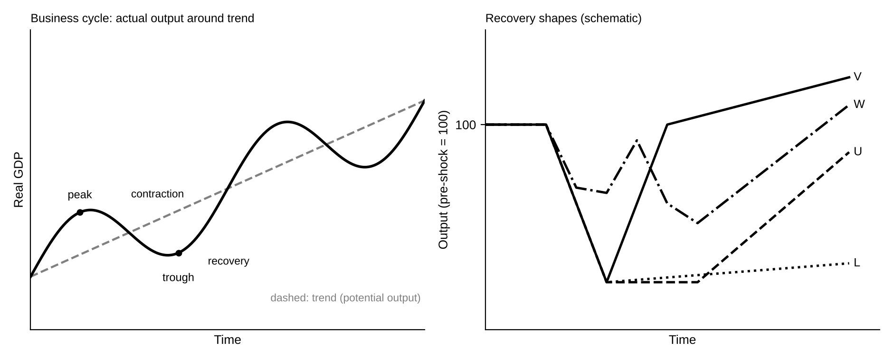
| Phase | Features |
|---|---|
| Expansion (boom) | Output, employment, investment and profits rise; inflation pressure builds as capacity fills |
| Peak | Output at its highest; shortages, high prices, tight credit |
| Contraction (recession) | Output, income and employment fall; demand weakens; firms cut investment |
| Trough | Output at its lowest; unemployment high |
| Recovery | Output and employment begin to rise again |
Recessions are normally low-inflation events because demand falls first and output follows. A recession caused by supply factors (drought, a lockdown) can have high inflation for a short time, but job losses then cut demand and inflation falls.
| Cycle | Length | Main cause |
|---|---|---|
| Kitchin | 3 to 5 years | Inventory changes |
| Juglar | 7 to 11 years | Fixed business investment |
| Kuznets | 15 to 25 years | Construction and infrastructure |
| Kondratiev (long wave) | 45 to 60 years | Major technological changes |
These are the classical names; the exact lengths are conventional, not fixed.
| Theory | Idea |
|---|---|
| Keynesian | Swings in investment and expectations (“animal spirits”) change aggregate demand; the multiplier amplifies them |
| Multiplier-accelerator (Samuelson, Hicks) | A rise in income raises investment through the accelerator, which raises income through the multiplier; the interaction can produce cycles |
| Monetary (Hawtrey, Friedman) | Expansion and contraction of money and credit drive the cycle |
| Schumpeter | Clusters of innovations bring booms; their diffusion and the adjustment that follows bring downturns |
| Real business cycle (Kydland, Prescott) | Technology and productivity shocks cause fluctuations; markets clear and the changes are efficient responses |
| Financial instability (Minsky) | Stable periods encourage borrowing and risk-taking until debt becomes unsustainable |
| Exogenous shocks | War, drought, oil-price shocks and pandemics; most of India’s recessions fall in this class |
| Type | Examples |
|---|---|
| Leading | Stock prices, new orders, building permits, business confidence |
| Coincident | Industrial production, employment, retail sales |
| Lagging | Unemployment duration, inflation, outstanding bank credit |
| Shape | Meaning |
|---|---|
| V | Sharp fall, quick return to the earlier level |
| U | Fall, a long period near the bottom, then recovery |
| L | Fall followed by very slow growth; output does not return to its earlier path |
| W | Recovery interrupted by a second downturn (“double dip”) |
| K | Different parts of the economy recover differently: some rise, others keep falling |
India’s recessions are the years of negative real GDP growth:
| Year | Growth | Cause |
|---|---|---|
| 1957-58 | -1.2% | Drought |
| 1965-66 | -3.66% | Drought and war |
| 1972-73 | -0.32% | Drought and oil crisis |
| 1979-80 | -5.2% | Drought and political instability |
| 2020-21 | -6.6% | Covid-19 |
All five were supply shocks (drought, war, oil, pandemic), unlike the demand-led downturns of industrial countries. The 2020-21 figure has been revised in later estimates and the older ones were measured on earlier base years. Economic Survey 2015-16 put India’s potential growth at 8 to 10%, a figure that is dated.
Stabilisation policy aims to soften recessions and moderate booms. Fiscal policy that works against the cycle is counter-cyclical; policy that amplifies it is pro-cyclical. How fiscal and monetary tools do this, and the policy mix, are in the next chapter. Unemployment over the cycle and the natural rate are in the employment chapter; the link between inflation and unemployment is in the inflation chapter.
Practice question (UPSC mains, 2021; practise writing the answer)
“Do you agree that the Indian economy has recently experienced V-shaped recovery? Give reasons in support of your answer.”
How to approach it: define the V shape (sharp fall, quick return to the pre-shock level), then test the 2020-21 contraction and the rebound against it using real GDP levels and not only growth rates, and note the uneven recovery across sectors (the K-shaped argument). The current growth data are in the growth chapter (real GDP growth of 7.7% in 2025-26 on the 2022-23 base).
Stabilisation policy uses government spending, taxation and the central bank’s interest rate to keep output near potential and inflation low.
Government and the central bank use demand-side tools to keep output near potential, inflation low and employment high. The objectives of fiscal policy are economic growth (stabilising business cycles), a high level of employment, control of inflation, equitable distribution of wealth and welfare (subsidies, income support, health, education). Their priority changes with the state of the economy.
| Fiscal policy | Monetary policy | |
|---|---|---|
| Who | Government (Ministry of Finance; Parliament) | Central bank (RBI) |
| Tools | Government spending, taxes, borrowing | Repo rate, reserve ratios, open market operations, liquidity operations |
| Channel | Directly changes aggregate demand | Changes interest rates, credit and the exchange rate |
| Speed | Slow to legislate, fast to act once spending starts | Fast to decide, slow to affect the economy |
Expansionary fiscal policy. The government raises spending or cuts taxes to raise aggregate demand (building roads and schools creates jobs and wages that circulate through the economy). Putting money into the economy this way is called pump priming. Contractionary fiscal policy cuts spending and raises taxes to reduce demand when inflation is high.
Expansionary monetary policy cuts interest rates and raises liquidity; contractionary monetary policy (tightening) raises rates and absorbs liquidity. The detail is in the monetary policy chapters.
In the IS-LM model of the earlier chapter, fiscal expansion shifts IS right (higher income, higher interest rate) and monetary expansion shifts LM right (higher income, lower interest rate).
| Boom | Recession | Outcome | |
|---|---|---|---|
| Pro-cyclical | Spending rises, taxes fall | Spending falls, taxes rise | Deepens recessions and amplifies expansions |
| Counter-cyclical | Spending falls, taxes rise | Spending rises, taxes fall | Softens recessions and moderates expansions |
Economic Survey 2016-17 noted that India’s fiscal stance has an in-built bias towards higher deficits, because spending rises pro-cyclically in growth surges, while revenue and spending are deployed counter-cyclically in slowdowns. Economic Survey findings summarised there:
If the government borrows by issuing bonds to finance a deficit, these risk-free bonds compete with corporate bonds for savings, and some private borrowers are displaced: this is crowding out. It is strongest in a boom, when resources are fully used.
If resources are unused (a recession), higher government spending raises demand for goods, which pulls in private investment in factories and equipment: crowding in.
Fiscal deficits are therefore inflationary mainly when output is held back by capacity and not by lack of demand. The IS-LM example of the previous chapter (G up by 60 raised income by 150 instead of 300, with the interest rate rising from 6% to 7.5%) shows the size of crowding out when the money supply is fixed.
Do economies need deficits? Keynes argued for small deficits in a crisis; public investment in infrastructure can leave future generations better off if its return exceeds the interest rate. The borrowed funds must still be serviced, and the return should exceed the cost (borrowing Rs 100 at 10% requires more than 10% return). The deficit and debt rules are in the chapters on the budget and FRBM.
Debt sustainability. Debt sustainability depends on the interest rate-growth rate differential (IRGD), the difference between the interest rate on debt and the growth rate. If India’s interest rate on government debt stays below its growth rate (a negative IRGD), growth lowers the debt-to-GDP ratio, so growth-supporting fiscal policy leads to lower, not higher, debt ratios; this was the Economic Survey’s reasoning for counter-cyclical policy during Covid-19. Growth leads to debt sustainability more than the reverse.
When the policy rate approaches zero and demand is still weak, monetary policy has no room left, the situation described as a liquidity trap in the IS-LM chapter, and government must use fiscal tools. In the opposite case, high inflation with strong demand, the repo rate does the main work and fiscal policy can support it by cutting spending.
| Situation | Fiscal | Monetary | Likely result |
|---|---|---|---|
| Deep recession | Expansionary | Expansionary | Strong rise in output; low interest rates avoid crowding out |
| Boom and high inflation | Contractionary | Contractionary | Falling demand and inflation; risk of overshooting into recession |
| Inflation with slow growth (stagflation) | Contractionary or supply measures | Contractionary | Lower inflation at some cost in output |
| Government wants to cut deficits but keep growth | Contractionary | Expansionary | Lower rates offset the fiscal drag; investment supported |
| Government wants growth with inflation under control | Expansionary | Contractionary | Higher interest rates; crowding out; exchange-rate pressures |
No previous-year questions on counter-cyclical policy or the policy mix are included here; deficit and FRBM questions belong to the budget chapters.
Chapters 14 to 23
Money is anything generally accepted as a medium of exchange, a unit of account and a store of value.
In a barter economy one good is exchanged for another, which works only with a double coincidence of wants: each party must want exactly what the other has to offer. A person with surplus rice who wants wheat must find someone with surplus wheat who wants rice. This is slow and costly in a large economy, so an intermediate commodity acceptable to everyone is needed. That commodity must be limited in supply (iron or water, freely available, would not be accepted for hard-earned rice), which is why gold and silver became money.
Gold had its own problems: output of gold coins may not keep pace with output of goods, and carrying physical gold is risky. People deposited gold with a trusted person and exchanged the signed paper slips the person issued. These slips are the origin of currency, and the trusted person in India is the RBI. Once the RBI issues notes against assets such as government securities and foreign currency, and not only gold, the money supply can grow with output. Because the public is too large to deal with the RBI directly, a layer of commercial banks sits between the RBI and the public.
| Function | Meaning |
|---|---|
| Medium of exchange | Money is accepted in payment for goods and services; this is the most important role |
| Unit of account | All values are expressed in one unit (a book costs Rs 300) |
| Store of value | Wealth can be held in money for future use; it does not perish and is cheap to store |
Gold and property can also store value but are not universally accepted. When prices rise steeply, the purchasing power of money falls and the store-of-value function is weakened. Some books add a fourth function, standard of deferred payment (debts are expressed and settled in money).
Properties of good money: general acceptability, durability, portability, divisibility, uniformity and limited supply.
| Form | Description | Example |
|---|---|---|
| Commodity money | Has value as a commodity | Gold and silver coins |
| Representative money | A claim on a commodity | Paper slips redeemable in gold |
| Fiat money | Money by government order, not backed by a commodity | Rupee notes and coins |
| Bank (deposit) money | Demand deposits that can be moved by cheque or electronic transfer | Savings and current account balances |
| Near money | Assets that are close substitutes but not directly spendable | Fixed deposits, treasury bills |
| Digital central bank money | Legal tender in digital form | e-Rupee (CBDC) |
If money supply is increased while output falls or stays constant, prices may rise. If money supply is cut while output rises or stays constant, prices may fall. If money supply stays constant and output falls, prices may rise; if output rises, prices may fall. The RBI therefore sets the growth of money supply broadly in line with expected nominal GDP, that is expected real growth plus the inflation it wants.
Quantity theory of money (Fisher). M x V = P x T, where M is the money stock, V is the velocity of circulation (the number of times a unit of money is spent in a period), P is the price level and T is the volume of transactions; for GDP, M x V = P x Y.
The classical conclusion is that, with V and Y stable, price changes follow money changes and money is neutral in the long run. The Cambridge version is M = k P Y, where k (the share of income people want to hold as money) is the inverse of V. Keynes added that people also hold money for the transactions, precautionary and speculative motives (liquidity preference), so V is not constant; see the IS-LM chapter.
On 8 November 2016 the Central Government demonetised the Rs 500 and Rs 1,000 notes, which were about 86% of the currency in circulation. It acted under the RBI Act, 1934, which allows the Centre, on the recommendation of the Central Board of the RBI, to declare that any series of bank notes shall cease to be legal tender. Effects:
Crypto currencies are privately created digital assets, produced and verified by cryptographic techniques (mining on a blockchain). Their price depends on limited supply and willingness to hold them. They are neither legal tender nor fiat currency, are not issued or controlled by the RBI or government, and so are best treated as assets. Income from transfer of a virtual digital asset is taxed at 30%, with 1% TDS on payments (Finance Act, 2022).
Central Bank Digital Currency (e-Rupee). The e-Rupee is legal tender issued by the RBI in digital form, exchangeable one-to-one with cash; the RBI Act was amended so that a “bank note” includes it. The RBI began pilots for the wholesale and retail segments.
| e-Rupee | Crypto currency | |
|---|---|---|
| Issuer | RBI | Private network |
| Legal tender | Yes | No |
| Value | Fixed at par with the rupee | Fluctuates with demand |
| Interest | None, like cash | None |
How it works: distributed through banks and held in digital wallets on phones; usable person to person and at merchants (QR codes); it is a bearer instrument, so the holder is presumed owner; payment moves the RBI’s liability from payer to payee with no inter-bank settlement. Wallet-to-wallet payments are not recorded in a bank’s core banking system and so give cash-like anonymity.
In the RBI’s Annual Report for 2024-25 the e-Rupee in circulation was about Rs 1,016 crore, and the RBI was exploring cross-border CBDC pilots.
e-RUPI is not a CBDC. It is a person- and purpose-specific digital voucher (QR code or SMS) issued through banks by government agencies and companies on NPCI’s UPI platform; it works without a bank account or internet access for the beneficiary, can be redeemed only at designated centres, cannot be transferred and cannot be converted into cash.
Previous-year questions (Vivek Singh, Indian Economy; UPSC prelims)
Q1. Which one of the following statements correctly describes the meaning of legal tender money? [2018]
Answer: (b).
Q2. With reference to “Bitcoins”, sometimes seen in the news, which of the following statements is/are correct? [2016]
Answer: (b).
Liquidity aggregates are the measures of the stock of money and near-money in the economy, from the narrowest (cash and demand deposits) to the broadest.
Money kept with banks is either in demand form (withdrawable at any time, no fixed maturity; cheques can be drawn on it, so also called cheque-able deposits) or in time (term) form (withdrawable only after a specified period or on notice; no cheques).
| Account | Type | Features |
|---|---|---|
| Current account | Demand | For businesses; no limit on number or value of transactions; most liquid; no interest, with service charges |
| Savings account | Demand | For individuals; limits on transactions; minimum balance; earns interest |
| Fixed deposit (FD) | Term | 7 days to 10 years; premature withdrawal on notice and penalty |
| Recurring deposit (RD) | Term | Small regular instalments (monthly, quarterly or half-yearly); interest as on FDs; 6 months to 10 years |
Accounts for NRIs and persons of Indian origin.
| Account | Currency and form | Tax and repatriation |
|---|---|---|
| FCNR | Any freely convertible foreign currency; term deposits only | Interest and principal non-taxable and freely repatriable |
| NRE | Rupee; current, savings, RD or FD | Interest and principal non-taxable and freely repatriable |
| NRO | Rupee; current, savings, RD or FD | Principal and interest taxable; limited repatriation; Indian income such as rent, dividend and pension goes here |
Old measures (RBI used these until the 1990s reforms; the textbook definitions).
| Measure | Components | Liquidity |
|---|---|---|
| M1 | Currency with the public + demand deposits of the public with banks + “other” deposits with the RBI | Most liquid; narrow money |
| M2 | M1 + savings deposits with post office savings banks | Narrow money |
| M3 | M1 + time deposits of the public with banks | Broad money; most commonly used (“aggregate monetary resources”) |
| M4 | M3 + all deposits with post office savings banks (excluding National Savings Certificates) | Least liquid |
The numbering runs in decreasing order of liquidity. The RBI now mostly uses M1 and M3.
New monetary aggregates (Working Group on Money Supply, 1998) and liquidity aggregates (RBI).
| Aggregate | Components |
|---|---|
| NM1 | Same as M1: currency with the public, demand deposits with the banking system, “other” deposits with the RBI |
| NM2 | NM1 + short-term time deposits of residents (contractual maturity up to one year) |
| NM3 | NM2 + long-term time deposits of residents + call and term funding from financial institutions |
| L1 | NM3 + all deposits with post office savings banks (excluding National Savings Certificates) |
| L2 | L1 + term deposits with term-lending and refinancing institutions + term borrowing by financial institutions + certificates of deposit issued by financial institutions |
| L3 | L2 + public deposits of non-banking financial companies |
NM1 to NM3 capture the money of residents; L1 to L3 are wider measures of the liquid assets in the financial system.
Monetary base = Currency with the public + Currency (vault cash) with banks + Deposits of banks with the RBI (plus “other” deposits with the RBI).
Money supply and monetary base are different. Money supply is the money the public holds (cash and deposits). Monetary base is the stock of central bank money that supports it.
Sources of reserve money (RBI balance sheet, standard classification). Net RBI credit to the government; RBI credit to banks and the commercial sector; net foreign exchange assets of the RBI; government’s currency liabilities to the public; less net non-monetary liabilities of the RBI. Buying foreign exchange or government securities raises reserve money; selling them reduces it. This is the link between the RBI’s open market operations, forex operations and liquidity.
Latest data (RBI weekly statistical supplement). On 30 September 2026 reserve money was Rs 52,78,142 crore, up 8.7% year on year (from Rs 51,07,831 crore on 31 March 2026). Currency in circulation was Rs 43,05,905 crore and bankers’ deposits with the RBI were Rs 8,45,153 crore. On 15 September 2026 currency in circulation had grown 13.2% year on year.
Banks keep only a fraction of deposits as reserves and lend the rest (fractional reserve banking). The lent money is redeposited, and part of it is lent again, so a given monetary base supports a larger money supply.
Two ratios decide how much:
Derivation. Let currency be C, deposits D and reserves R. Money supply M = C + D. Monetary base H = C + R. Then M / H = (C + D) / (C + R); dividing top and bottom by D gives (cdr + 1) / (cdr + rdr).
Second example. cdr = 0.2 and rdr = 0.1: multiplier = 1.2 / 0.3 = 4, so Rs 100 crore of reserve money supports Rs 400 crore of money supply. If rdr rises to 0.2 (a higher CRR), the multiplier falls to 1.2 / 0.4 = 3.
What moves the multiplier:
| Change | Effect on multiplier |
|---|---|
| Higher cdr (public holds more cash, as after a banking panic or in festival seasons) | Falls |
| Higher CRR or SLR, or banks holding more excess reserves | Falls |
| Lower CRR or SLR | Rises |
This is why raising CRR or the SLR contracts the money supply even when the RBI does not change the monetary base. The RBI’s instruments for doing so are in the chapter on the RBI and monetary policy.
Money supply is not the same as liquidity in the banking system: during demonetisation (the chapter “Nature of Money”) bank deposits rose, so banks had abundant liquidity, but money supply fell because cash and deposits could not be freely converted. An increase in money supply with no rise in output raises prices (the chapter “Inflation”); a change in the money supply shifts the LM curve (the chapter “IS-LM and AD-AS”).
No previous-year questions on money-supply measures or the multiplier are included here; questions on CRR and SLR (2014, 2015) belong to the RBI chapter.
The Reserve Bank of India is the country’s central bank: it issues currency, runs monetary policy, regulates banks and the payment system, and manages the foreign exchange reserves.
The Reserve Bank of India (RBI) is the central bank, also called the Monetary Authority of India. It was set up on the recommendation of the Hilton Young Commission under the RBI Act, 1934, and began operations on 1 April 1935. It took over from the Government the work of the Controller of Currency, and from the Imperial Bank of India the management of government accounts and public debt. It started as a shareholders’ bank and was nationalised in 1949, so the Government of India now owns it entirely.
From the beginning the RBI was seen as having a role in development, especially agriculture. During planning, especially in the 1960s, it used finance to catalyse development and helped set up the Deposit Insurance and Credit Guarantee Corporation (DICGC), the Unit Trust of India, IDBI, NABARD and the Discount and Finance House of India. After liberalisation its focus shifted back to the core functions: monetary policy, supervision and regulation of banks, oversight of payments, and development of financial markets.
Objective (Preamble of the Act): to regulate the issue of bank notes and keep reserves with a view to securing monetary stability in India, and generally to operate the currency and credit system to the country’s advantage; to have a modern monetary policy framework, maintain price stability while keeping in mind growth, and maintain macroeconomic and financial stability.
Formulating and carrying out monetary policy to regulate the issue of notes and keep reserves, to secure monetary stability. Instruments and the inflation-targeting framework are in the next chapter.
The objective is to protect depositors, keep banks liquid and solvent, and maintain financial stability. The powers come from the RBI Act, 1934 and the Banking Regulation Act, 1949.
Commercial banks.
Deposit insurance (DICGC). The Deposit Insurance and Credit Guarantee Corporation is a 100% subsidiary of the RBI. It insures deposits up to Rs 5 lakh (principal and interest together) per depositor per bank, whatever the number of accounts in that bank; a depositor with accounts in different banks is covered separately in each. It covers commercial banks including foreign bank branches, and UCBs, state and district cooperative banks, but not deposits of foreign governments, central and state governments, or inter-bank deposits. After the DICGC Act was amended in 2021, if the RBI imposes a moratorium on a bank, depositors get their insured amount within 90 days. The limit was raised from Rs 1 lakh in February 2020; in 2025 the Government was reported to be considering a higher limit, but no change has been confirmed.
Cooperative banks. Dual regulation: the RBI regulates banking functions; the state or central government regulates management.
Financial institutions, NBFCs, primary dealers, credit information companies. The four all-India financial institutions (NABARD, NHB, EXIM Bank, SIDBI) are fully regulated by the RBI; NBFCs, primary dealers and CICs also. Until July 2019 the RBI could supersede only a bank’s board; the amendment of the RBI Act in July 2019 let it supersede the board of an NBFC and appoint an administrator.
The RBI regulates the foreign exchange market under the Foreign Exchange Management Act (FEMA), 1999, which replaced FERA, 1973 with effect from June 2000. FERA controlled scarce foreign exchange; FEMA followed liberalisation after 1991, rising reserves and growing trade and portfolio inflows. The RBI also regulates the government securities market and the money market under the RBI Act, 1934.
Reserves consist of foreign currency assets (about 90% of reserves), SDRs and gold. The RBI is custodian and may invest them in deposits with the BIS and other central banks, deposits with foreign commercial banks, sovereign or sovereign-guaranteed debt, and other instruments approved by its board. The guiding principles are safety, liquidity and returns. Adequacy was traditionally judged by import cover but is now also judged by the shocks the economy faces, the growth potential, capital flows and national security needs.
The RBI manages the current and capital account of the balance of payments (see the external sector part).
It manages public debt and issues new loans on behalf of governments, aiming to minimise borrowing cost, reduce risk and smooth the maturity profile of debt; it earns commission.
The RBI, with the Government, designs, produces and manages the currency, aiming at adequate supply of clean, genuine notes and better security features against counterfeiting. Its Department of Currency Management is in Mumbai, with 19 issue offices; selected bank branches run currency chests, stores of notes and rupee coins held on behalf of the RBI.
The Payment and Settlement Systems Act, 2007 gives the RBI oversight of payment systems; under Section 4 nobody except the RBI can operate a payment system without its authorisation (even licensed banks need specific permission). Authorised operators include the Clearing Corporation of India (financial market infrastructure), the National Payments Corporation of India (NPCI) for retail payments, card networks (Mastercard, Visa), prepaid instrument issuers and cross-border money transfer operators.
NPCI is a not-for-profit company, 51% owned by public sector banks. It runs the National Financial Switch, IMPS, UPI, Aadhaar Enabled Payment System (AEPS), RuPay cards, the National Automated Clearing House, ATM linking and National Electronic Toll Collection (FASTag).
Ensuring credit reaches productive sectors, building institutions for the financial system, and widening access to affordable financial services.
| Priority sector | Examples |
|---|---|
| Agriculture | Loans to farmers and FPOs, crop and machinery loans, food and agro-processing, solar pumps, compressed biogas plants |
| MSME | Loans to micro, small and medium enterprises |
| Export credit, Education, Housing | As defined by the RBI |
| Renewable energy | |
| Social infrastructure | Schools, drinking water, sanitation, health care |
| Others | Distressed persons repaying money-lender loans; start-ups (loans up to Rs 50 crore) |
| Weaker sections | Small and marginal farmers, artisans, village and cottage industries, SC/ST, SHGs, persons with disabilities, minorities |
New models for meeting PSL targets:
Lead Bank Scheme (December 1969). One bank is given lead responsibility for each district and coordinates banks, government and developmental agencies to raise bank finance to priority sectors and rural development; it identifies growth centres, deposit potential and credit gaps. As of June 2017, 25 public sector banks and one private bank held lead responsibility in 706 districts (the scheme covers the whole country).
Kisan Credit Card (KCC). Introduced in 1998-99 to give farmers timely, single-window credit for cultivation, post-harvest expenses, produce marketing, household consumption needs, working capital for allied activities (dairy, fisheries) and investment credit (pump sets, sprayers, dairy animals). Limits depend on operational holding, cropping pattern and scales of finance. Eligible: owner-cultivators, tenant farmers, oral lessees and sharecroppers, SHGs and joint liability groups. Under the Modified Interest Subvention Scheme, short-term farm loans up to Rs 5 lakh (raised from Rs 3 lakh in Budget 2025-26) are available at 7% a year, with a further 3% prompt-repayment incentive, so a prompt repayer pays 4%. The KCC was extended to animal husbandry and fisheries in 2018-19, and from 1 January 2025 the RBI allows collateral-free agricultural loans up to Rs 2 lakh.
The Centre and the RBI work in coordination, but under Section 7 of the RBI Act the Centre can give the RBI written directions in the public interest after consulting the Governor. In a fundamental disagreement, decision-making then passes to the Central Board, and the Governor has no say. Section 7 had never been used in its first 85 years. The RBI is kept at arm’s length because the Centre is the spender and the RBI is the creator of money; at the same time the elected government is answerable to voters, so the RBI is autonomous within limits.
| Governor or economist | View on autonomy |
|---|---|
| Manmohan Singh | A give-and-take; if the finance minister insists, his view prevails and the Governor may not refuse unless willing to quit |
| Bimal Jalan | The RBI is accountable to the government and makes policy within the government’s framework |
| D. Subbarao | Autonomous within the framework of the RBI Act; the existence of Section 7 shows it is not fully autonomous, and its non-use shows responsibility |
| Y. V. Reddy | Total freedom on operational issues; on policy it should consult the Finance Ministry; Section 7 hangs like “the sword of Damocles” |
Sources of RBI income: interest on foreign currency assets (about 90% of reserves, invested in US government bonds and deposits with other central banks); interest on government securities held (including through open market operations); interest on lending to banks at the repo rate; commission for managing government debt; and seigniorage.
Economic Capital Framework (ECF). Section 47 of the RBI Act requires the RBI to transfer its surplus to the Government after providing for contingencies. The ECF decides how much goes to the capital reserve (so that the RBI can fight a crisis) and how much is transferred. The Bimal Jalan Committee (August 2019) recommended a Contingency Risk Buffer of 5.5% to 6.5% of the balance sheet, and harmony between the aims of the Government and the RBI.
Latest transfer. The RBI Board approved a record surplus transfer of about Rs 2.87 lakh crore (reported as Rs 2.86 lakh crore by All India Radio and Rs 2.87 lakh crore elsewhere) to the Centre for 2025-26, in its meeting of about 22 May 2026, with the Contingency Risk Buffer set at 6.5% of the balance sheet under the revised ECF.
Previous-year questions (Vivek Singh, Indian Economy; UPSC prelims)
Q1. In the context of Indian economy, which of the following is/are the purpose/purposes of “Statutory Reserve Requirements”? [2014]
Answer: (b).
Q2. Consider the following statements: [2017]
Answer: (c).
Q3. Which one of the following best describes the term “Merchant Discount Rate” sometimes seen in news? [2018]
Answer: (c).
Monetary policy is the RBI’s control of money supply and interest rates to keep inflation near its target while supporting growth.
| Stance | Also called | Meaning |
|---|---|---|
| Expansionary | Dovish, accommodative, easy money | Increases the money supply and lowers interest rates |
| Contractionary | Hawkish, tight money | Reduces the money supply and raises interest rates |
| Neutral | Can move either way depending on data | |
| Calibrated tightening | A tilt towards tightening, but in measured steps |
Monetary Policy Framework Agreement (February 2015). The Government and the RBI agreed that:
The Government notified the target for the five years to 31 March 2026, and for 1 April 2026 to 31 March 2031 the target remains 4% with the 2% to 6% band (Section 45ZA of the RBI Act).
The LAF is the set of RBI operations that inject liquidity into or absorb it from the banking system: overnight and term repo and reverse repo (fixed and variable rate), the SDF and the MSF. (Outright open market operations, forex swaps and the market stabilisation scheme are other liquidity tools.)
| Instrument | What it is | Rate relation |
|---|---|---|
| Repo rate (policy rate) | Rate at which the RBI lends overnight to banks against government and approved securities (the “repurchase agreement”: banks sell securities and promise to buy them back). Under the LAF the amount is limited to a share of NDTL (0.25%) | Policy rate |
| Reverse repo | Rate at which the RBI absorbs liquidity overnight from banks against eligible government securities | Below repo; earlier repo minus 0.25% |
| Standing Deposit Facility (SDF) | Introduced in April 2022. Banks can park any amount overnight with the RBI without collateral, at their own discretion on all days; a financial stability tool as well as a liquidity tool | Repo minus 0.25% |
| Marginal Standing Facility (MSF) | Introduced 2011. Scheduled banks can borrow extra overnight funds beyond repo by dipping into their SLR securities (up to 2% of NDTL below the SLR requirement) at a penal rate; a safety valve against liquidity shocks | Repo plus 0.25% |
| Bank rate | Rate at which the RBI is prepared to buy debt instruments; dormant as an instrument since the LAF; aligned with the MSF rate and used to calculate penalties on shortfalls in CRR and SLR (Bank Rate plus 3%) | Equal to the MSF rate |
LAF corridor. With the SDF the corridor runs from the SDF rate (floor) to the MSF rate (ceiling) with the repo rate in the middle, and the weighted average call money rate is meant to stay inside it.
Term operations. Long Term Repo Operation (LTRO): the RBI lends to banks for a fixed longer term, at or above the repo rate (auction decides the rate). Targeted LTRO (TLTRO) gives funds for specific sectors through banks. Variable rate reverse repo (VRRR) auctions absorb liquidity for fixed periods, with bids between the reverse repo and repo rates. The aim of term repo is to develop the inter-bank term money market and give market-based benchmarks.
| Instrument | Meaning | Details |
|---|---|---|
| Cash Reserve Ratio (CRR) | Share of NDTL that scheduled commercial banks keep as cash with the RBI, on a fortnightly average | Section 42(1) of the RBI Act: set by the RBI with no floor or ceiling; banks earn no interest on it |
| Statutory Liquidity Ratio (SLR) | Share of NDTL kept by banks themselves, daily, in safe liquid assets: government securities, gold and cash | Under the Banking Regulation Act, 1949 (Section 24); ceiling 40%; excess CRR balances count towards SLR |
NDTL (net demand and time liabilities) is the public’s demand plus time deposits (banks’ liabilities). Both ratios let the RBI control how much banks can lend, and keep depositors’ money safe and liquid. All commercial and cooperative banks, scheduled or not, must maintain CRR and SLR; for scheduled banks CRR comes under the RBI Act and for non-scheduled banks under the Banking Regulation Act.
Current position. CRR is 3% of NDTL. From the reporting fortnight starting 16 October 2026 the RBI raised the minimum daily CRR balance banks must hold from 90% to 99% of the required amount, citing current liquidity conditions; the CRR itself did not change. SLR is 18% of NDTL.
Open Market Operations (OMO): the RBI buys or sells government securities in the secondary market to inject or absorb durable liquidity. High inflation: it sells securities, taking money out. Wanting more money: it buys securities and pays for them. Outright OMOs are permanent, without any promise to reverse; LAF OMOs are repos with a stated date and price of resale.
Sterilisation and the Market Stabilisation Scheme (MSS). When foreign investors bring in dollars, the RBI buys them and issues rupees, which raises the monetary base and can cause inflation and appreciation of the rupee. Sterilisation offsets the inflow by reducing the domestic component of the monetary base, classically by selling securities. Because reverse repos used up the RBI’s stock of securities, cost the RBI profit and weakened the LAF as a day-to-day tool, the RBI introduced the MSS in 2004: it issues treasury bills and dated securities for liquidity absorption and keeps the proceeds in a separate MSS cash account that can only be used to redeem those securities. The interest on these bonds is paid from the Government’s budget, an expenditure called the carrying cost.
Qualitative tools (standard). Moral suasion, selective credit controls and margin requirements direct credit to or away from particular uses.
Link between deposit and lending rates. If a bank pays 8% on Rs 1 lakh of deposits and must keep 20% as non-earning reserves, it can lend Rs 80,000; to earn Rs 8,000 it must charge 10% on that Rs 80,000, and operating costs and profit push the rate higher. Lending rates therefore depend on the cost of deposits, the cost of reserves, operating costs and profit.
Path of a repo change. Repo rate (and the corridor) leads to the call money rate in the money market, which affects bond yields and deposit rates, which in turn affect lending rates. Transmission has two stages: first through the money market to the bond and bank loan markets; second from the financial markets to spending by households and firms, and so to demand, inflation and growth.
Benchmark lending rates.
| Regime | Introduced | How the rate is set | Weakness |
|---|---|---|---|
| Benchmark Prime Lending Rate (BPLR) | Earlier | Bank’s own prime rate | Opaque; many loans below it |
| Base Rate | July 2010 | Minimum rate below which banks cannot lend; based on average cost of funds, CRR and SLR cost, operating cost, return on net worth | Average cost of funds responds slowly |
| MCLR | 1 April 2016 | Marginal cost of funds, cost of CRR and SLR, operating costs, tenor premium; reviewed monthly; each bank has its own | Transmission still weak: banks reluctant to cut deposit rates first; the Government’s small savings rates are high |
| External benchmark lending rate (EBLR) | 1 October 2019 | New floating-rate personal, retail and MSME loans must be linked to an external benchmark: repo rate, 3-month or 6-month T-bill yield, or another rate published by Financial Benchmarks India | Rate reset at least once in three months |
“Interest rate” in a question without further detail means either the deposit rate (what banks pay the public) or the lending rate (what banks charge).
On 7 October 2026 the MPC (63rd meeting) raised the repo rate by 25 basis points from 5.25% to 5.50%, the SDF to 5.25% and the MSF and Bank Rate to 5.75%, and changed the stance from neutral to “calibrated tightening”. It projected GDP growth of 7.1% and CPI inflation of 5.2% for 2026-27 (about 6.0% in the third quarter), against a rise in headline CPI to 4.8% in August 2026 driven by food and fuel. It said rate cuts are off the table in the near term. The next meeting is on 2 to 4 December 2026. Inflation data are in the inflation chapter; headline CPI was 5.54% in September 2026.
A vegetable-price spike is a supply shock (the chapter “IS-LM and AD-AS”); raising the repo rate cannot restore supply, which is why the MPC looks at core and expected inflation as well.
Nominal interest rate = inflation + real interest rate. People keep money in deposits only if the nominal rate beats inflation: at 6% inflation, an 8% deposit rate gives a real return of 2%; if inflation falls to 0%, the same 2% real return needs only a 2% deposit rate; at -2% (deflation), a 0% rate still gives 2%.
In a deep recession, prices fall and demand is weak. The central bank cuts the repo rate; banks cut deposit and lending rates; but if demand still does not revive, the repo rate can be cut only until it reaches about zero, since neither the repo rate nor deposit and lending rates can practically fall below zero. At that point the central bank is in a liquidity trap: it cannot stimulate the economy further by lowering the rate, and people hold money in savings (demand) deposits rather than lock it into fixed deposits or bonds at a very low yield, expecting rates to rise later. It is a ‘trap’ because investors hoard cash because they expect weakness, and so the weakness continues, and the rate cannot go below zero. The way out is fiscal policy (government spending and tax cuts; the chapter “Stabilisation Policy and the Policy Mix”).
Previous-year questions (Vivek Singh, Indian Economy; UPSC prelims)
Q1. If the interest rate is decreased in an economy, it will [2014]
Answer: (c).
Q2. With reference to Indian economy, consider the following: [2015]
Which of the above is/are component/components of Monetary Policy?
Answer: (c).
Q3. When the Reserve Bank of India reduces the Statutory Liquidity Ratio by 50 basis points, which of the following is likely to happen? [2015]
Answer: (c).
Q4. What is/are the purpose/purposes of the “Marginal Cost of Funds based Lending Rate (MCLR)” announced by the RBI? [2016]
Answer: (c).
Practice question : What is the inflation targeting framework of the Reserve Bank of India?
Banking architecture is the structure of banks and other financial institutions through which savings are collected and lent in India, and the regulators that oversee them.
Early banking. Modern banking began in the 18th century with the English agency houses in Calcutta and Bombay. In the first half of the 19th century came the three presidency banks: Bank of Bengal (1806), Bank of Bombay (1840), Bank of Madras (1843). Limited liability (1860) brought private and foreign banks; joint stock banks arrived in the early 1900s. In 1921 the three presidency banks merged into the Imperial Bank of India, which also performed some central-bank functions until the RBI began in 1935.
After independence. India had over 600 commercial banks in 1947, but they were seen as biased towards trade and large firms. The Imperial Bank was nationalised and became the State Bank of India (SBI) in 1955 (State Bank of India Act, 1955). Social control over banks followed. On 19 July 1969 the Government nationalised the 14 banks with deposits above Rs 50 crore (Banking Companies (Acquisition and Transfer of Undertakings) Act, 1970); the aims were to control the “commanding heights” of the economy, expand branches and channel credit by plan priorities. In April 1980 it nationalised six more banks with deposits above Rs 200 crore, raising the public sector share of deposits to 92%. The priority sector target rose from 33.3% to 40%.
Why performance fell (1969-91). Banks became a captive source of funds for the fiscal deficit: CRR rose from 2% (1960) to 15% and SLR from 25% to 38.5% by 1991, so more than half of savings went to the RBI or government securities, and 40% of the rest went to priority sectors. Interest rates were administered, lending was directed and concessional, and competition was absent. Branches multiplied, but banks were unprofitable, inefficient and unsound.
| Committee | Year | Main recommendations |
|---|---|---|
| Narasimhan Committee I (Committee on the Financial System) | 1991 | SLR to fall to 25% and be a prudential tool, not a budget-financing tool; deregulate interest rates; RBI to use OMO more than CRR; market-related rates on SLR securities; phase out directed credit; level playing field for public, private and foreign banks; an Asset Reconstruction Company; a few large international banks, 8 to 10 national banks; end dual control by RBI and the Finance Ministry |
| Narasimhan Committee II (Banking Sector Reforms) | 1998 | Greater autonomy for PSBs; Government equity in nationalised banks down to 33%; stronger banks through mergers; higher capital adequacy norms; RBI should not own banks (it transferred its stakes in SBI, NHB and NABARD to the Government) |
| Nachiket Mor Committee (small businesses and low-income households) | 2013-14 | Every resident above 18 should have a full-service bank account; Aadhaar as the driver; a payment access point within a 15-minute walk; suitable products for low-income households |
| P. J. Nayak Committee (governance of bank boards) | 2014 | A Bank Investment Company to hold the Government’s stakes and appoint boards (Government stake below 50%); until then a Banks Board Bureau, which was replaced from 1 July 2022 by the Financial Services Institutions Bureau (FSIB) |
The FSIB recommends whole-time directors and non-executive chairpersons for public sector banks, financial institutions and public sector insurers, and advises the Government on appointments, appraisal, codes of conduct, training and business strategy.
Financial institutions are banks and non-banking financial institutions (NBFIs). A bank accepts demand deposits and issues cheques drawn on itself; an NBFI does not.
| Category | Types |
|---|---|
| Commercial banks | Scheduled (public sector, private, foreign, small finance, payments, RRBs) and non-scheduled |
| Cooperative banks | Urban (primary) cooperative banks; rural cooperative credit |
| NBFIs | All-India financial institutions (AIFIs), NBFCs, primary dealers, credit information companies |
Scheduled and non-scheduled banks. A scheduled bank is one included in the Second Schedule of the RBI Act, 1934. It must be a corporation (or cooperative society) and meet the capital condition. (The RBI Act requires paid-up capital and reserves of at least Rs 5 lakh.) Scheduled banks keep their reserves with the RBI under the RBI Act; non-scheduled banks keep them under the Banking Regulation Act, 1949, and can carry out more limited operations (they cannot deal in foreign exchange).
| Type | Features |
|---|---|
| Public sector banks (PSBs) | Government holds more than 51%: SBI, and banks nationalised in 1969 and 1980 (Punjab National Bank, Bank of India and others). Dual regulation (Centre and RBI); reduced RBI powers (the chapter “The Reserve Bank of India”) |
| Private banks | Owned by private individuals: ICICI Bank, Axis Bank |
| Foreign banks | Established in India, owned by foreign entities: Citibank |
| Regional Rural Banks (RRBs) | Set up 1975 under the RRB Act, 1976 for credit to small and marginal farmers, agricultural labourers and artisans; owned by the Centre, the state and the sponsor bank in the ratio 50:15:35; 75% of lending to priority sectors; supervised by NABARD |
| Local Area Banks (LABs) | 1996 scheme for local banks over two or three contiguous districts to mobilise rural savings locally; only four exist, all non-scheduled (for example Coastal Local Area Bank, Vijayawada) |
| Small finance banks (SFBs) | Licences granted to 10 applicants in September 2015; basic banking for unserved and underserved sections (small business units, small and marginal farmers, micro and small industries); no restriction on area; 75% of credit to priority sectors; at least 50% of loans up to Rs 25 lakh |
| Payments banks | Licences to 11 applicants in August 2015; deposits up to Rs 2 lakh per customer; only savings and current accounts; cannot lend or issue credit cards; target migrant labour and low-income households with low-cost savings and remittance |
SFBs and payments banks are differentiated (niche) banks, not universal banks.
Recent consolidation. The number of public sector banks was reduced to 12 through the amalgamations of 2019-20. The Finance Ministry approved “One State, One RRB” mergers in 2025, reported as reducing the number of RRBs from 43 to 28.
Cooperative banks operate on cooperative principles (service to members); they pay higher deposit rates than commercial banks. The banking laws were extended to cooperatives in 1966, which created dual control: the RBI regulates banking functions (and amalgamation and liquidation) under the Banking Regulation Act, and the Registrar of Cooperative Societies (state) or the Central Registrar (multi-state) regulates registration, management, administration and recruitment. The RBI can supersede the boards of UCBs, StCBs and DCCBs in public interest, but its approval is not required for appointing their chairman or CEO.
| Segment | Structure | Regulation |
|---|---|---|
| Urban cooperative banks (primary cooperative banks) | Urban and semi-urban; scheduled or non-scheduled; single-state or multi-state | Single-state: state RCS; multi-state: Multi-State Cooperative Societies Act, 2002 and CRCS; banking functions: RBI |
| Short-term rural credit | Three tiers: State Cooperative Banks (state), District Central Cooperative Banks (district), Primary Agricultural Credit Societies (PACS) (village) | StCBs and DCCBs: dual regulation by state and RBI; supervised by NABARD. PACS are outside the Banking Regulation Act and not regulated by the RBI |
| Long-term rural credit | SCARDBs and PCARDBs | Outside the Banking Regulation Act; NABARD conducts voluntary inspection |
With the RBI’s approval cooperative banks can issue equity shares, bonds and unsecured debentures of maturity of at least 10 years.
The four AIFIs regulated by the RBI:
| Institution | Established | Role |
|---|---|---|
| NABARD | 1982 (NABARD Act, 1981) | Credit for agriculture, small-scale and cottage industries, handicrafts and rural activities; coordinates and supervises RRBs and rural cooperative banks (RBI delegated supervision, retaining regulation); gives refinance and does not lend to individuals; policy advice; training and research |
| NHB | 1988 (NHB Act, 1987) | Principal agency to promote housing finance institutions; refinance only |
| EXIM Bank | 1982 (EXIM Bank Act, 1981) | Finance for exporters and importers; coordinates export-import finance; lends to overseas institutions and governments so buyers can import Indian goods; direct and refinance |
| SIDBI | 1990 (SIDBI Act, 1989) | Principal institution for MSME promotion and financing; mainly refinance |
MUDRA (Micro Units Development and Refinance Agency Ltd) is a non-banking finance company set up as a subsidiary of SIDBI to refinance lenders to non-corporate micro units, with loans up to Rs 10 lakh: Shishu up to Rs 50,000, Kishor Rs 50,000 to Rs 5 lakh, Tarun Rs 5 lakh to Rs 10 lakh. It refinances microfinance institutions, NBFCs, SFBs, scheduled banks and RRBs and does not lend directly.
NaBFID (National Bank for Financing Infrastructure and Development) is a DFI set up with Rs 20,000 crore; the Government holds 100% and plans to cut its stake to 26%.
Primary dealers (PDs) are RBI-registered entities licensed to buy and sell government securities; they buy directly from the Government in the primary market and resell in the secondary market. Seven standalone PDs and thirteen banks did this departmentally in June 2015.
Credit Information Companies (CICs) aggregate data from lenders on borrowers’ repayment records and tell lenders whether a borrower is creditworthy. They are regulated under the Credit Information Companies (Regulation) Act, 2005; the four are TransUnion CIBIL, Equifax, Experian and CRIF High Mark.
The case for: banks’ balance sheets in India are below 70% of GDP and private credit about 50% of GDP, far below China, Japan, the US and Korea, and PSBs are burdened with NPAs, so deep-pocketed corporates could fund growth. The case against: inter-connected lending (the owner is also a borrower, so depositors’ money can flow to group companies), which the RBI can detect only afterwards and can hardly act on without triggering a run; evergreening; contagion from the group’s non-bank entities; and deposit-taking from the public makes banks riskier than NBFCs. The prudent course is to keep borrowers and lenders separate and strengthen supervision of conglomerates first.
The FSDC was set up in December 2010 as the apex forum for financial stability, inter-regulatory coordination and financial sector development. It is not a statutory body: it was created by gazette notification. The Chairman is the Finance Minister; members are the heads of the RBI, SEBI, PFRDA, IRDAI and IBBI, the Chief Economic Adviser and secretaries of the finance, information technology and corporate affairs ministries. Without affecting the regulators’ autonomy it handles financial stability, financial sector development, inter-regulatory coordination, financial literacy and inclusion, macro-prudential supervision (including large financial conglomerates), and India’s interface with bodies such as FATF and the Financial Stability Board.
Each segment of the financial system has its own regulator, set up under its own law. The Financial Stability and Development Council above is the forum that coordinates them.
| Regulator | Law | Headquarters | Regulates |
|---|---|---|---|
| Reserve Bank of India (RBI) | RBI Act 1934; began work 1 April 1935 | Mumbai | Banks, NBFCs, payment systems, money and forex markets |
| Securities and Exchange Board of India (SEBI) | Set up 1988; statutory body under the SEBI Act 1992 | Mumbai | Stock exchanges, intermediaries, mutual funds, listed companies |
| Insurance Regulatory and Development Authority of India (IRDAI) | IRDA Act 1999 | Hyderabad | Insurance companies and intermediaries |
| Pension Fund Regulatory and Development Authority (PFRDA) | PFRDA Act 2013 | New Delhi | National Pension System and pension funds |
| International Financial Services Centres Authority (IFSCA) | IFSCA Act 2019 | Gandhinagar (GIFT City) | Financial services in the International Financial Services Centres |
| Insolvency and Bankruptcy Board of India (IBBI) | Insolvency and Bankruptcy Code 2016 | New Delhi | Insolvency professionals, agencies and information utilities |
| National Bank for Agriculture and Rural Development (NABARD) | NABARD Act 1981; set up 1982 | Mumbai | Regulation and supervision of cooperative banks and regional rural banks |
Previous-year questions (Vivek Singh, Indian Economy; UPSC prelims)
Q1. The term “Core Banking Solutions” is sometimes seen in the news. Which of the following statements best describes this term? [2016]
Answer: (a).
Q2. Pradhan Mantri MUDRA Yojana is aimed at [2016]
Answer: (a).
Q3. What is the purpose of setting up of Small Finance Banks (SFBs) in India? [2017]
Answer: (d).
Capital adequacy is the cushion of own funds a bank holds against loan losses, and the NPA and insolvency framework is the set of rules and tools by which bad loans are identified, recovered or written down.
A bank lends mostly other people’s money (deposits), so a loss on loans must be absorbed by the bank’s own funds (capital), not by depositors. The Capital Adequacy Ratio (CAR), also called the Capital to Risk-weighted Assets Ratio (CRAR), is the capital a bank must hold as a percentage of its risk-weighted assets (RWA). A safer asset (a government security) gets a low risk weight; a risky loan gets a high one.
A worked case: a bank with capital of 1 against risk-weighted assets of 2.5 has CAR = 1/2.5 = 0.4 (40%); if risk-weighted assets rise to 3.5 (more or riskier lending), CAR falls to 1/3.5 = 0.3 (about 29%). Riskier lending therefore consumes capital.
| Accord | Year | Main idea |
|---|---|---|
| Basel I | 1988 | Minimum capital for credit risk only (8% of RWA) |
| Basel II | 2004 | Three pillars: (1) minimum capital, now covering credit, market and operational risk; (2) supervisory review; (3) market discipline through disclosure |
| Basel III | 2010 (after the 2008 crisis) | More and better-quality capital, a capital conservation buffer, a countercyclical buffer, a leverage ratio and two liquidity standards (LCR and NSFR) |
The Basel Committee on Banking Supervision sits at the Bank for International Settlements (BIS), Basel; its norms are not law, and each country’s regulator adopts them. In India the RBI requires more than the Basel minimum. The Indian requirement is 11.5% (Tier 1 of 7% + Tier 2 of 2% + capital conservation buffer (CCB) of 2.5%). The CCB is built in good times and may be drawn down in stress.
Raising capital. Public sector banks raise capital from the Government through budgetary support and recapitalisation bonds, and from the market (QIPs, share sales); the recapitalisation programme of 2017 onwards used both.
Who sets CAR? The RBI, not the bank (see the 2018 question in Revision).
PCA is the RBI’s early-warning framework. When a bank’s financial health crosses defined triggers, the RBI places it under PCA to force it to repair its balance sheet.
Some institutions are so large and interconnected that their failure would damage the whole system (“too big to fail”); they face tougher rules.
A loan is an asset for the bank (the borrower’s repayment promise earns interest). The RBI classifies loans by performance to bring transparency and consistency.
Recent position. RBI’s Financial Stability Report (June 2026) puts the scheduled commercial banks’ gross NPA ratio at 1.8% in March 2026, with a projection of only a modest rise to 1.9% by March 2028 under baseline stress (RBI Financial Stability Report). This is a multi-decade low, against about 11% at the peak in 2017-18.
(Securitisation and Reconstruction of Financial Assets and Enforcement of Security Interest Act.) Earlier, a lender had to go to court to enforce its security, which took years and let NPAs grow. The Narasimhan Committees I and II recommended a law letting lenders act without the court. The Act provides three processes:
Security terms: a secured creditor (a bank or institution) holds a security interest (a right, title or interest, such as a mortgage) over a secured asset (physical, such as a house, or financial, such as shares).
A credit boom in the 2000s, the 2008 global crisis and domestic problems in 2009-14 produced large NPAs. When the RBI’s stricter supervision (the 2015 asset quality review) began exposing them after 2013, the RBI announced several resolution schemes and the IBC was enacted in 2016. Not every default can go to the NCLT, so the Economic Survey 2017 proposed a centralised public sector asset reconstruction company.
In 2021 the Government created the National Asset Reconstruction Company Ltd (NARCL), the ‘bad bank’: 51% owned by public sector banks and institutions, 49% by private lenders. A second entity, the India Debt Resolution Company Ltd (IDRCL), a non-government company, manages and resolves the loans. NARCL buys the stressed loans; IDRCL tries to sell or recover them. A bad bank does not lend or take deposits.
Payment structure: if SBI sells a Rs 1,000 crore NPA at an agreed Rs 300 crore, NARCL pays 15% (Rs 45 crore) in cash and 85% (Rs 255 crore) in security receipts, backed by a Government guarantee, redeemable only as the bad bank recovers money. The guarantee covers any shortfall. Moving the loan to a bad bank cleans the bank’s balance sheet and frees capital for lending, but it does not by itself reduce the total NPAs in the economy; the recovery must still happen.
Procedure (Corporate Insolvency Resolution Process, CIRP) 1. A financial creditor, operational creditor or the corporate debtor may apply to the National Company Law Tribunal (NCLT) on a default of more than Rs 1 crore (an operational creditor first gives a 10-day demand notice). 2. On admission, the NCLT appoints an interim insolvency professional; claims are invited by public announcement. 3. A Committee of Creditors (CoC), made up only of financial creditors, is formed; the professional is confirmed as Resolution Professional (RP), who runs the firm in the meantime and stops asset-stripping. 4. Resolution applicants submit plans; the CoC approves one by a 66% vote by value (Section 30(4) of the IBC; counted on the voting share of all creditors). 5. The NCLT approves the plan and it is implemented. If no plan is approved, the firm goes into liquidation.
Timelines. 180 days, with an extension of 90 days in complex cases, and an overall limit of 330 days including legal delays. The NCLT cannot examine the commercial merit of the CoC’s decision but may review whether all stakeholders, including operational creditors, were treated fairly.
Four institutional pillars 1. Insolvency Professionals, regulated by Insolvency Professional Agencies. 2. Information Utilities, electronic databases of lending records that remove disputes over facts. 3. Adjudicating authorities: the NCLT for companies (appeal to NCLAT); the Debt Recovery Tribunal (DRT) for individuals (appeal to DRAT). 4. Insolvency and Bankruptcy Board of India (IBBI), the regulator over professionals, agencies and information utilities.
Worker protection: workers’ dues for up to 24 months get priority in liquidation, and a bankrupt person is barred from public office.
Financial service providers. The IBC at first did not cover banks, NBFCs and insurers. After the IL&FS and DHFL crises, the Government notified Section 227 on 15 November 2019: NBFCs (including HFCs) with assets above Rs 500 crore can be taken to the NCLT, only on the RBI’s application. DHFL was the first. A comprehensive resolution law for financial firms was meant to follow the FRDI Bill (2017), withdrawn in 2018 over the controversial bail-in clause (depositors’ money might be used to rescue a bank).
Pre-packaged insolvency (2021). The 2021 amendment created the Pre-Packaged Insolvency Resolution Process (PIRP) for MSMEs with default below Rs 1 crore.
| Pre-pack (PIRP) | Normal CIRP |
|---|---|
| Only the corporate debtor can start it | Debtor or creditors can start it |
| The owner submits the plan | Open bidding; anyone can submit a plan |
| Existing management stays | Management passes to the Resolution Professional |
| Default below Rs 1 crore | Default above Rs 1 crore |
| To be completed in 120 days | 180 days |
If the plan does not fully pay operational creditors, an open bidding (the Swiss challenge) can be held, and a rival bidder may take the firm.
Achievements and challenges. Credible threat of loss of control has changed debtor behaviour; many debtors settle at an early stage. Weaknesses: only about 15% of admitted cases ended in resolution (the rest in liquidation); too few NCLT benches, causing delay; cross-border insolvency not implemented. Creditor recoveries relative to claims have remained modest in recent years (a CARE Ratings note for Q3 FY26 puts the realisation rate near 32%; secondary).
Reform pending. The IBC (Amendment) Bill, 2025 proposes a Creditor-Initiated Insolvency Resolution Process (CIIRP) outside the court, group insolvency and a cross-border framework.
Q1. Consider the following statements: [2018]
Which of the statements given above is/are correct?
Answer: (a). The RBI decides CAR, not each bank.
A financial market is the place, physical or electronic, where buyers and sellers trade financial instruments such as shares, bonds and short-term paper.
| Equity security (share) | Debt security (bond) | |
|---|---|---|
| What it is | Part ownership of the company | Money lent to the issuer |
| Return | Dividend plus capital gain; not fixed | Fixed interest (coupon) plus principal at maturity |
| Control | Voting rights | None |
| Position in the balance sheet | Shareholders’ funds | A liability (debt) |
The entity that sells the security is the issuer. A company raises money by owner’s money (equity), a bank loan, or bonds sold to the public; each is a liability on its balance sheet.
Bond price and interest rate move in opposite directions. Example: a Rs 100 bond pays 10% (Rs 10 a year). If bank rates rise to 12%, nobody will pay Rs 100 for it; a buyer who pays Rs 80 earns 10/80 = 12.5% (the yield), which beats 12%. So when interest rates rise, bond prices fall; when rates fall, bond prices rise. This is why a rate-hike by the RBI lowers the value of banks’ bond holdings.
| Market | Instruments | Maturity |
|---|---|---|
| Money market | Call/notice money, repos, T-bills, CMBs, commercial paper, certificates of deposit | Up to one year; high liquidity, low risk |
| Capital market | Shares, bonds, debentures, G-secs | More than one year |
The capital market has two parts. The primary market is where securities are created and sold for the first time (issuer to investor, as in an IPO). The secondary market is where already-issued securities are traded between investors, with no money going to the issuer (stock exchanges). The chapter “Capital Markets” deals with equity markets; this chapter covers the money, government securities and bond markets.
Participants in the money market are banks, financial institutions, the central bank and highly rated corporates.
| Type | Features |
|---|---|
| Treasury bills (T-bills) | Short-term, below one year (91, 182 and 364 days); zero-coupon, issued at a discount and redeemed at face value (a 91-day Rs 100 bill issued at Rs 98.20 earns Rs 1.80) |
| Cash Management Bills (CMBs) | Introduced in 2010; like T-bills but for less than 91 days; meet temporary cash-flow mismatches of the Centre |
| Dated securities | Long term, 5 to 40 years; fixed-rate, floating-rate (linked to T-bill yields), inflation-indexed (principal adjusted by CPI or WPI), special securities (oil, fertiliser and food bonds issued in lieu of cash subsidy), bank recapitalisation bonds (2018) and Sovereign Gold Bonds |
| State Development Loans (SDLs) | Long-term bonds of State Governments, one year or more |
Primary market. G-secs are sold in auctions held by the RBI on its E-Kuber core banking platform. Members are commercial banks, scheduled urban cooperative banks, primary dealers, insurance companies and provident funds that hold current and securities accounts with the RBI.
Secondary market. Trading is on the RBI’s NDS-OM (Negotiated Dealing System, Order Matching) platform; T-bills, dated securities and SDLs also trade on the BSE and NSE. The RBI manages the market and acts as the Government’s debt manager. (The RBI is also a market participant through open market operations; the chapter “The Reserve Bank of India”.)
Retail Direct Scheme (November 2021). Individual investors can open a Retail Direct Gilt (RDG) account with the RBI, buy T-bills, dated securities, SDLs and Sovereign Gold Bonds directly in the primary and secondary market; they cannot bid competitively (they use the non-competitive window). G-secs have guaranteed settlement, which assures small investors.
G-secs in global bond indices. Inclusion in a global bond index lets foreign investors buy Indian G-secs more easily, widens the investor base, eases pressure on the domestic borrowing market and lowers the yield. The conditions: no prior SEBI registration burden and no cap on non-resident holdings. In March 2020 the RBI created the Fully Accessible Route (FAR), with no investment ceiling for non-residents in specified G-secs. A risk is exchange-rate and capital-flow volatility if foreign investors leave. JP Morgan’s GBI-EM index began including Indian bonds on 28 June 2024, with the weight rising to its 10% cap by March 2025; Bloomberg’s emerging-market index followed from January 2025 and FTSE Russell’s in 2025.
A deep corporate bond market supplies long-term finance for infrastructure, reduces dependence on bank credit and on volatile foreign capital, and gives a stable source of funds when equity markets are falling.
Why it has been slow in India:
Measures: the FPI limit in corporate bonds was raised to 15% of the outstanding stock (from 9%); an investor charter with grievance redressal; and a backstop facility announced in the Budget 2021-22 to buy investment-grade corporate bonds in both stressed and normal times (a backstop is a secondary source of funds when the primary source falls short). Investment grade securities carry better credit ratings and lower risk than junk grade.
Recent position. The 10-year G-sec yield is the benchmark rate; it moves with the repo rate, inflation, Government borrowing and foreign flows. The yield changes every day, so no level is worth memorising; the repo rate is 5.50% from 7 October 2026 (the chapter “Monetary Policy and Inflation Targeting”).
The capital market is the market for long-term funds, where companies and governments raise money by selling shares and bonds and where investors later trade them.
The capital market is where long-term funds (more than one year) are raised and traded through equity and debt securities (the chapter “Financial Markets and Government Securities” gives the basic division into primary and secondary markets). It channels household savings into firms and the Government, gives investors a way to exit, and prices the risk of businesses.
A company sells new securities to investors for the first time (money goes to the issuer).
| Route | Meaning |
|---|---|
| Initial Public Offering (IPO) | An unlisted company offers shares to the public for the first time and gets listed |
| Follow-on Public Offer (FPO) | An already listed company issues more shares to the public |
| Offer for Sale (OFS) | Existing shareholders (for example promoters or the Government) sell their shares; the company gets no money. The Government has used OFS for disinvestment (the chapter “The Union Budget”) |
| Rights issue | New shares offered first to existing shareholders in proportion to their holding |
| Private placement / QIP | Shares sold to a small group; a Qualified Institutional Placement is a placement to institutional buyers by a listed company |
| Bonus issue | Free additional shares to existing shareholders out of reserves |
Anchor investor (introduced by SEBI in 2009): an institutional investor that is invited to subscribe before the IPO opens, which builds confidence and demand for the issue. Issue price may be fixed by book building, in which a price band is announced and bids decide the final price.
Underwriters and merchant bankers manage the issue; SEBI requires a draft offer document and disclosure of risks.
A company that wants to list files a draft offer document with SEBI, fixes a price band through book building (investors bid within the band; the highest price at which the whole issue can be sold becomes the issue price) and keeps the issue open for three working days. SEBI’s rules for a profit-making company set out who may buy what share of the issue:
| Investor category | Share of issue | Who |
|---|---|---|
| Qualified Institutional Buyers (QIBs) | Not more than 50% | Mutual funds, insurers, banks, FPIs |
| Non-Institutional Investors (NIIs) | Not less than 15% | Wealthy individuals and firms applying for more than Rs 2 lakh |
| Retail Individual Investors (RIIs) | Not less than 35% | Individuals applying for up to Rs 2 lakh |
Shares are allotted and then listed on the exchange within three working days of the issue closing (T+3, in force since December 2023). After listing, a company must keep at least 25% of its shares with the public (minimum public shareholding). Small companies can list on the SME platforms of the exchanges (BSE SME and NSE Emerge).
Investors trade existing securities on stock exchanges without the issuer’s involvement. India’s main exchanges are the Bombay Stock Exchange (BSE), established in 1875 in Mumbai, and the National Stock Exchange (NSE) (1992; began trading in 1994). Their benchmark indices are the Sensex (30 BSE shares) and the Nifty 50 (NSE). An index measures the movement of a basket of representative shares.
Trading, clearing and settlement are electronic. Shares are held in dematerialised form in a depository (NSDL and CDSL, the two depositories in India), with the broker and a depository participant in between; clearing corporations guarantee settlement. Settlement is on a T+1 cycle for equities (since January 2023).
The Securities and Exchange Board of India (SEBI) was set up in 1988 and received statutory powers in April 1992 (the SEBI Act, 1992) as an independent statutory regulator of stock exchanges and the major capital-market players. The Capital Issues Control Act was repealed in May 1992, ending government permission and price control over new issues; companies could now price their own issues. Reforms of the early 1990s also opened the market to portfolio investment and let Indian firms raise equity abroad through GDRs.
SEBI’s three aims are to protect investors, develop the securities market and regulate it. It frames regulations (for example on insider trading and takeovers), registers intermediaries, and can investigate and impose penalties. Its orders are appealed to the Securities Appellate Tribunal (SAT).
| Rule | What it says |
|---|---|
| Takeover Code (SEBI SAST Regulations, 2011) | An acquirer who crosses 25% of the voting rights, or takes control of a listed company, must make an open offer to buy at least 26% more from the public, so that small shareholders get an exit at a fair price. |
| Insider trading (SEBI PIT Regulations, 2015) | No one may trade on unpublished price sensitive information (UPSI): facts not yet public that would move the price, such as results or a merger. Company insiders cannot trade in a closed “trading window”. |
| Circuit breakers | Trading is halted market-wide if the Sensex or Nifty moves by 10%, 15% or 20% in a day. Individual shares have daily price bands (2%, 5%, 10% or 20%). |
| Market capitalisation classes | Market capitalisation = share price × number of shares. By SEBI’s classification the top 100 listed companies are large cap, the 101st to 250th mid cap and the rest small cap. |
| Investor complaints | Investors complain online to SEBI through SCORES; the exchanges also run an Investor Protection Fund. |
The Forward Markets Commission, which regulated commodity futures, was merged into SEBI in September 2015, so SEBI now regulates commodity derivatives as well.
A mutual fund is set up as a trust with four parties: the sponsor (who creates it), the trustees (who protect investors’ interests), the asset management company (AMC) (which manages the money and charges a fee) and the custodian (which holds the securities). SEBI regulates mutual funds under the SEBI (Mutual Funds) Regulations, 1996, and the industry body is AMFI.
| Term | Meaning |
|---|---|
| SIP (Systematic Investment Plan) | A fixed amount invested every month, so more units are bought when the price is low. |
| Open-ended / closed-ended | Open-ended funds sell and redeem units at NAV at any time; closed-ended funds have a fixed term and are bought and sold on the exchange. |
| Expense ratio | The yearly fee, as a per cent of assets, that the AMC deducts to run the fund. Direct plans have a lower ratio than regular plans, which pay a distributor. |
| Exit load | A charge if units are sold before a set period. |
| ELSS (Equity Linked Savings Scheme) | An equity fund with a 3-year lock-in, which qualifies for a tax deduction under Section 80C in the old tax regime. |
| Categories | Since 2017 SEBI groups schemes into equity, debt, hybrid, solution-oriented and other, so that each scheme name means the same thing across fund houses. |
| Type | What it is | Where traded | Example |
|---|---|---|---|
| Forward | Agreement to buy or sell an asset at a fixed price on a future date; customised | Over the counter (OTC) | An importer books US$1 million at Rs 88.50 for delivery in three months and pays Rs 8.85 crore whatever the spot rate then |
| Future | Standardised forward with a fixed lot size and expiry, settled daily through a clearing corporation | Exchange | Buy an index future at 25,000; if the index closes at 25,300 the buyer gains 300 points per unit |
| Option | Right, not obligation, to buy (call) or sell (put) at a strike price by an expiry; the buyer pays a premium | Exchange or OTC | Call with strike 25,000 bought for a premium of 150: break-even 25,000 + 150 = 25,150; the most the buyer can lose is the 150 |
| Swap | Agreement to exchange payment streams, such as fixed for floating interest | OTC | Pay fixed 6% and receive floating 6.5% on Rs 100 crore for a year: net receipt 0.5% of 100 crore = Rs 0.5 crore |
Futures and options on stock indices and shares are traded on the National Stock Exchange (NSE) and BSE. SEBI regulates exchange-traded derivatives; the RBI regulates OTC interest-rate and currency derivatives.
In October 2024 SEBI announced six measures to curb speculation in index options:
A SEBI study found that 91% of individual traders in the equity derivatives segment lost money in 2024-25, with total losses of about Rs 1.05 lakh crore, up 41% on the year before. The NSE chief executive said in July 2025 that Brazil’s B3 had overtaken the NSE in the number of contracts traded, and that Indian volumes are inflated by small contract sizes.
Financial inclusion is the delivery of affordable financial services such as accounts, credit, insurance, pensions and payments to every section of society, especially the poor and the excluded.
| Year | Step |
|---|---|
| 1956 | Nationalisation of life insurance (LIC) |
| 1969 and 1980 | Bank nationalisation |
| 1972 | General insurance nationalised |
| 1975 | Regional Rural Banks (RRBs) set up to bring rural areas into the mainstream |
| 2013-14 | Nachiket Mor Committee: universal bank account, payment access point within a 15-minute walk (the chapter “Banking Architecture”) |
| Aug 2014 | Pradhan Mantri Jan Dhan Yojana (PMJDY) |
| 2015 | Licences for payments banks (11) and small finance banks (10) |
| 2019-24 | National Strategy for Financial Inclusion (NSFI) |
Launched in August 2014 “to end financial untouchability”: every household, and every adult without a bank account, to have a basic account. The accounts carry a RuPay debit card with accident insurance cover, access to overdraft facility, and direct transfer of benefits; they are zero-balance accounts. There were about 41.75 crore accounts by January 2021.
Current position. As of 19 August 2026 PMJDY accounts stood at about 59.09 crore, with deposits of about Rs 3.17 lakh crore; women hold 55.7% of accounts and about 77.8% are in rural and semi-urban areas (official data as reported).
JAM trinity. Jan Dhan accounts, Aadhaar and mobile numbers together let the Government shift subsidies to Direct Benefit Transfer (DBT), which ends leakages. A June 2026 fact-sheet reports over Rs 51 lakh crore transferred to about 176 crore beneficiary entries (cumulative).
The RBI’s NSFI sets the vision and objectives for expanding and sustaining inclusion through coordinated action of all stakeholders. Six strategic pillars:
(The strategy period 2019-24 has ended.)
Unified Payments Interface (UPI) lets money move between bank accounts instantly using a mobile app and a virtual address. UPI transactions rose from about 2 crore in FY 2016-17 to over 24,162 crore in FY 2025-26 (official fact-sheet, June 2026). The e-Rupee and payment systems in general are in the chapter “The Reserve Bank of India”; the RBI’s regulation of payment systems is under the Payment and Settlement Systems Act, 2007.
Fintech is the use of technology to deliver financial services: payments, lending, insurance, investing and data sharing. UPI, covered above, is one part of it; the wider technology base is covered in the Services and Digital chapter. Two rules shape fintech in India.
Account Aggregator (AA) framework. An AA is an RBI-regulated non-banking financial company (NBFC-AA, Directions of 2 September 2016) that moves a person’s financial data from one institution to another only with that person’s consent. The AA does not store or read the data. Banks and other holders of data are Financial Information Providers (FIPs); lenders and other users are Financial Information Users (FIUs). As of 31 March 2026 (Sahamati, reported by the Department of Financial Services) there were 17 AAs, 179 FIPs and 989 FIUs; over 2.88 billion accounts were enabled and 284.6 million were linked.
Digital lending. The RBI’s Digital Lending Directions of 8 May 2025 apply to banks, cooperative banks, NBFCs, housing finance companies and all-India financial institutions. The main rules:
The first Banking Ombudsman Scheme started in 1995. By 2021 there were three separate schemes (banks, 2006; NBFCs, 2018; digital transactions, 2019), which confused customers. On 12 November 2021 the RBI merged them into the RBI Integrated Ombudsman Scheme, 2021 (“One Nation, One Ombudsman”).
| Feature | Rule |
|---|---|
| Merged schemes | Banking Ombudsman Scheme 2006, Ombudsman Scheme for NBFCs 2018, Ombudsman Scheme for Digital Transactions 2019. |
| Step one | The customer must first complain to the bank or NBFC. The Ombudsman can be approached if there is no reply within 30 days, or if the customer is not satisfied with the reply. |
| Time limit | Within one year of the entity’s reply (or one year and 30 days from the first complaint, if there was no reply). |
| Compensation | Up to Rs 20 lakh for the customer’s actual financial loss, and up to Rs 1 lakh for loss of time, expenses, harassment and mental anguish. |
| Appeal | Within 30 days to the Appellate Authority, the Executive Director of the RBI in charge of the consumer protection department. |
Other grievance routes: the Insurance Ombudsman for insurance (Insurance Ombudsman Rules, 2017), SEBI’s SCORES portal for securities, the Banking Codes and Standards Board of India (BCSBI, which sets voluntary codes of fair practice for banks) and the consumer commissions under the Consumer Protection Act, 2019.
Q1. Consider the following statements: [2017]
Which of the statements given above is/are correct?
Answer: (c).
Financial products are the instruments through which households protect against risk, save and hold wealth, such as insurance, small savings schemes and gold-linked schemes.
| Type | Covers |
|---|---|
| Life insurance | A fixed sum on the death of the insured (or at maturity, for endowment policies) |
| General (non-life) insurance | Losses other than life: fire, marine, motor, home, health, crop |
History. Life insurance was nationalised in 1956 (the Life Insurance Corporation, LIC) and general insurance in 1972 (General Insurance Business (Nationalisation) Act, 1972, effective 1 January 1973). The sector was opened to private companies in 2000 after the IRDA Act, 1999; the Insurance Regulatory and Development Authority (IRDA) became a statutory body in April 2000. Its aims are competition, consumer choice and lower premiums while ensuring the financial security of the market. LIC still holds the largest share of the life market.
Foreign investment limit. 26% (2000) to 49% in February 2015 (automatic route) and to 74% in 2021. Following the Sabka Bima Sabki Raksha (Amendment of Insurance Laws) Act, 2025 (passed by the Lok Sabha on 16 December 2025 and the Rajya Sabha on 17 December 2025; PRS summary), the limit is 100% of paid-up equity. 100% FDI in insurance intermediaries was allowed in February 2020. Foreign investment is meant to bring capital, professional management, technology, and competition.
Penetration and density. Insurance penetration = premium as a percentage of GDP (Economic Survey 2020-21: life 2.82%, non-life 0.94%). Insurance density = premium per head in US dollars (life US$ 58.0, non-life US$ 19). Both are low compared with developed and comparable developing countries, due to low financial awareness, poor understanding of products and low perceived benefits, and purchases made only on reactive pressure such as a lender’s demand. Insurers also hold long-term funds that finance long-gestation infrastructure.
Brokers represent the customer and are licensed to place policies with any insurer.
Government social-security insurance schemes: Pradhan Mantri Jeevan Jyoti Bima Yojana (life cover, Rs 2 lakh) and Pradhan Mantri Suraksha Bima Yojana (accident cover, Rs 2 lakh) were launched in 2015 with very low premiums, and PM Fasal Bima Yojana gives crop insurance (the chapter “Agriculture”). Ayushman Bharat PM-JAY gives health cover (the chapter “Education and Health”).
Government-run small savings schemes include PPF, Kisan Vikas Patra, Sukanya Samriddhi Yojana, National Savings Certificate and post office deposits. Their collections go to the National Small Savings Fund (NSSF) in the public account, which lends to the Centre and States. Rates are reset by the Government every quarter, linked to G-sec yields. Banks complain that high small-savings rates stop deposit rates from falling (the chapter “Monetary Policy and Inflation Targeting”). The Budget treats these collections as public account liabilities (the chapter “The Union Budget”).
Pensions. NPS, UPS and Atal Pension Yojana are in the chapter “Employment, Unemployment and Labour Law”.
Households hold large amounts of idle gold, and India imports most of its gold, which widens the current account deficit (the chapter “Balance of Payments”). Two schemes were launched in November 2015 to tackle this.
Both aim to bring idle household gold into the economy and cut dependence on gold imports. They do not aim to promote FDI in the gold sector. The Government has stopped issuing new SGBs; existing bonds run to maturity.
Q1. What is/are the purpose/purposes of Government’s ‘Sovereign Gold Bond Scheme’ and ‘Gold Monetization Scheme’? [2016]
Select the correct answer using the code given below.
Answer: (c).
Chapters 24 to 29
A tax is a compulsory payment to the government for which the payer gets no specific, direct return; tax theory explains how taxes are designed, who bears them and what makes a tax system good.
A tax is a compulsory payment to the government for which the payer gets no specific, direct return. It is also a tool for redistributing wealth: tax collected from richer people funds spending on poverty programmes, education and health, so it can reduce inequality.
| Purpose | Meaning |
|---|---|
| Revenue | Funds public goods, defence, administration and transfers (public goods cannot be sold to individual users, so they are paid for by taxation) |
| Redistribution | Taxes on the better-off finance spending that benefits the poor |
| Stabilisation | Taxes rise and fall with the cycle (automatic stabilisers); rates can be changed to manage demand |
| Discouraging harm | ‘Sin’ taxes on tobacco and alcohol (demerit goods) |
| Promoting activities | Exemptions and concessions for chosen sectors (see tax expenditure below) |
Adam Smith (The Wealth of Nations, 1776) set out four canons of taxation: equality (each pays in proportion to ability), certainty (the amount, date and manner are known to the payer), convenience (collected when and how it is easiest to pay) and economy (the cost of collection is small compared with the revenue). Later writers added more. The characteristics of a good tax system are as follows.
| Characteristic | Meaning |
|---|---|
| Fairness | Low burden on low incomes, higher on high incomes |
| Efficiency | Does not discourage saving, investment and work |
| Flexibility | Revenue can be changed with need and the cycle (a tax should be elastic and buoyant) |
| Simplicity | Easy to understand and comply with |
| Type | Rule | Example |
|---|---|---|
| Progressive | The tax percentage rises as income rises | Income tax slabs |
| Proportional | The tax percentage is the same at every income | A flat rate; every system becomes proportional above its top slab (RAS) |
| Regressive | The tax percentage falls as income rises | A fixed amount per unit, which takes more of a poor person’s income |
| Direct tax | Indirect tax | |
|---|---|---|
| Who pays | The person on whom it is levied pays the government directly | Collected by an intermediary (such as a shop) from the person who finally bears it |
| Impact and incidence | Impact (the point where the tax is first levied) and incidence (who finally bears the burden) fall on the same person | Impact is on one person (seller) and incidence on another (consumer) |
| Examples | Income tax, corporate tax, property tax | GST, customs duty, excise duty |
All indirect taxes are regressive. Bread with a tax of Rs 5 costs a person earning Rs 10 lakh the same Rs 5 as a person earning Rs 1 lakh; as a share of income it is 0.0005% for the first and 0.005% for the second, so the poorer person bears ten times the burden. This is a tendency: governments soften it by taxing essentials at low rates and luxuries at high rates (see Goods and Services Tax).
A tax is not always borne by the person who pays it to the government. When a tax is imposed, buyers and sellers share the burden, and the less elastic side bears more (in the tax incidence example of Demand, Supply and Elasticity, with elasticity of demand 0.67 and of supply 1.33, buyers carried two-thirds of a Rs 3 tax). A tax on goods with inelastic demand (petrol, salt) raises revenue but is paid mostly by buyers. A tax also creates a deadweight loss: trades that would have taken place do not.
| Term | Meaning |
|---|---|
| Tax base | The thing taxed (income, sales, property value); its size and growth decide revenue |
| Tax rate | The percentage applied to the base |
| Tax-GDP ratio | Tax revenue as a percentage of GDP; the usual measure of how much of the economy the state collects |
| Tax buoyancy | % change in tax revenue / % change in nominal GDP; above 1 is good for the economy, because tax collection grows faster than the economy. It includes the effect of rate changes |
| Tax elasticity | Response of tax revenue to GDP growth alone, with rates and exemptions held unchanged (automatic growth of revenue). Some books instead define it as % change in revenue / % change in the tax rate |
India’s recent position. A Business Standard analysis of the Centre’s tax-GDP ratio (before devolution to states) reported 11.5% in April-September 2024 with buoyancy of 1.3, and 10.8% in April-September 2025 with buoyancy of 0.32, so the fall in tax buoyancy, not the size of the economy, weighed on the Centre’s finances. (Half-year figures only; full-year figures are in the next chapter.)
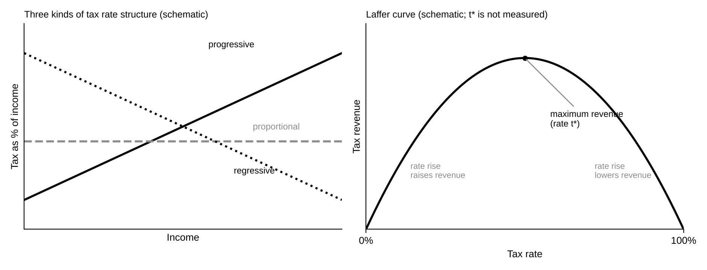
Arthur Laffer’s curve shows the relationship between tax rates and revenue. At a zero rate, revenue is zero. As the rate rises, revenue first rises, reaches a maximum at some rate, and then falls because high rates discourage work, saving and investment, or push activity into evasion and the informal economy. At 100% the revenue is again zero. Governments therefore try not to go beyond the revenue-maximising rate. The curve is a concept; there is no agreed estimate of where India stands on it.
A tax on sales at every stage, with no credit for tax paid earlier, taxes the same value again and again (a cascading or “tax on tax” effect). A value added tax (VAT) taxes only the value added at each stage. Example, with VAT at 10%:
| Seller A | Seller B (buys from A) | |
|---|---|---|
| Cost of inputs | 0 | Rs 110 (A’s price including VAT) |
| Value added | Rs 100 | Rs 200 |
| Sale price (before VAT) | Rs 100 | Rs 300 |
| VAT charged at 10% | Rs 10 | Rs 30 |
| VAT paid to government | Rs 10 | Rs 30 less Rs 10 credit = Rs 20 |
| Consumer pays | Rs 330 |
Total tax paid to the government: Rs 10 + Rs 20 = Rs 30 = 10% of the final price of Rs 300. B shows the receipt for the Rs 10 tax it paid to A, and the government credits it. This is the input tax credit mechanism: it removes the cascading effect and prevents evasion, because every seller in the chain asks for a receipt from the one before. VAT is a multi-point, destination-based tax on final consumption, borne ultimately by the consumer. Before 2017 the Centre levied excise duty and service tax, and the States levied VAT on sales within the State, while CST applied to sales between States (see Taxation Architecture and Goods and Services Tax).
Q1. Which of the following is not a feature of “Value Added Tax”? [UPSC 2011]
Answer: (d).
Q2. Consider the following statements: [UPSC 2017]
Which of the statements given above is/are correct?
Answer: (d).
The Union Budget is the Government of India’s annual statement of estimated receipts and expenditure, which Parliament must approve before any tax is levied or any money is spent.
A budget is an estimate of income and expenditure for a future period. The Government’s estimate of receipts and expenditure for each financial year (1 April to 31 March) is the budget of the Government of India. Two constitutional rules govern it:
Parliament gives the first authority through the Finance Bill (taxes and receipts) and the second through the Appropriation Bill (expenditure). The word ‘budget’ does not appear in the Constitution; Article 112 requires the President to lay an Annual Financial Statement before both Houses for every financial year. The Budget Division of the Department of Economic Affairs, Ministry of Finance, prepares it, and it is presented in the Lok Sabha by the Finance Minister on the first working day of February (the 2026-27 Budget was presented on 1 February 2026).
Every Annual Financial Statement gives three sets of figures. The Budget of February 2026 for 2026-27 gives:
| Figure | Year | Name |
|---|---|---|
| Next year | 2026-27 | Budget Estimate (BE) |
| Current year | 2025-26 | Revised Estimate (RE), together with the Budget Estimate of that year |
| Last completed year | 2024-25 | Actuals |
| Kind | What it is |
|---|---|
| Full Budget | Estimates of receipts and expenditure for the whole year |
| Interim Budget | A complete statement of accounts, presented in an election year, covering only part of the year; the new government then presents the full Budget. It is an unwritten convention, not a constitutional duty |
| Vote on Account | When the Budget has not been passed in time, the Lok Sabha may grant money in advance for part of the year (Article 116). It deals only with the expenditure side and is normally taken for two months, at one-sixth of the estimated annual expenditure |
| Kind | Idea |
|---|---|
| Zero-based budget | Begins from zero for every activity instead of adding a percentage to last year’s spending; unnecessary spending is identified and removed |
| Outcome budget | Converts outlays into outcomes by fixing targets for each scheme (for example, an LPG subsidy of Rs 20,000 crore with a target of cylinders for 9 crore households) |
| Gender budget | A statement published with the Budget since 2005-06. Part A lists schemes with 100% allocation for women (for example Beti Bachao Beti Padhao, Ujjwala); Part B lists schemes allocating at least 30% to women (for example PM POSHAN) |
Documents: the Budget speech, the Annual Financial Statement, the Demands for Grants, the Appropriation Bill and the Finance Bill.
| Stage | What happens |
|---|---|
| 1. Presentation | The Finance Minister presents the Budget in the Lok Sabha with a speech; it is then laid in the Rajya Sabha. No discussion takes place that day |
| 2. General discussion | Held in both Houses a day or more later, on the Budget as a whole and the tax policy in the speech; the Houses then adjourn for a fixed number of days |
| 3. Departmental committees | The Demands for Grants of the ministries are examined by the 24 Departmentally Related Standing Committees (about five ministries each), which report within a fixed period |
| 4. Voting on demands | The Lok Sabha discusses and votes on demands ministry-wise. On the last allotted day the Speaker puts all remaining demands to the vote together, which is called the guillotine. The Rajya Sabha holds only a general discussion and does not vote on demands |
| 5. Appropriation Bill | After voting, the Appropriation Bill (Article 114) authorises withdrawal from the Consolidated Fund |
| 6. Finance Bill | Introduced on the day of the Budget (Article 110) but taken up after the Appropriation Bill; Parliament has to pass it within 75 days |
The Appropriation Bill and the Finance Bill are Money Bills: the Rajya Sabha may only make recommendations, and the Lok Sabha may accept or reject them; either way the Bill is deemed passed by both Houses. If the Lok Sabha defeats the Budget, the Government loses the confidence of the House and the Council of Ministers must resign.
Provisional collection of taxes. Fresh duties or changes in existing duties named in the Finance Bill take effect from the end of the day the Bill is introduced, by a declaration under the Provisional Collection of Taxes Act (Act of 1931, replaced by the Provisional Collection of Taxes Act, 2023). The Act limits this to 75 days; if Parliament does not pass the Bill in that period, the provisional authority lapses.
Which route changes which tax.
| Tax | How the rate changes |
|---|---|
| Direct taxes | Amendment of the Act through the Finance Act |
| Customs and Central Excise | The Act sets a ceiling rate. Rates within the ceiling are changed by notification; a rate above the ceiling needs an amendment through the Finance Act |
| GST | The GST Council decides and a gazette notification is issued |
Under Article 112 some expenditure is charged on the Consolidated Fund: Parliament may discuss it but cannot vote on it, which protects the independence of the offices concerned. Everything else is votable and comes to the Lok Sabha as Demands for Grants (Article 113), which can be reduced or refused through cut motions (policy cut, economy cut and token cut).
| Charged (not voted) | Votable (Demands for Grants) |
|---|---|
| Emoluments of the President; salaries and pensions of Supreme Court and High Court judges; salary of the Comptroller and Auditor General; interest and debt-servicing charges; sums needed to satisfy court decrees | Expenditure of the ministries on defence, health, education, roads and so on |
| Grant | When |
|---|---|
| Supplementary Demand for Grants | The amount authorised for a service is not enough, or a new service not contemplated in the Budget arises. Passed before the end of the financial year |
| Demand for Excess Grants | Money has already been spent on a service beyond the grant. Presented after the year ends, after the CAG brings the excess to notice in the Appropriation Accounts and the Public Accounts Committee examines it |
The accounts of the Government of India are kept in three parts. Each State has its own three funds, and so does a Union Territory with a legislature.
| Consolidated Fund of India (Art. 266(1)) | Contingency Fund of India (Art. 267) | Public Account of India (Art. 266(2)) | |
|---|---|---|---|
| What goes in | All revenues from taxes and other receipts; all loans raised by government securities and treasury bills, and loans from foreign governments and international institutions | A fixed advance (an imprest) placed at the disposal of the President | Public money received other than for the Consolidated Fund: small savings, provident funds, security and earnest-money deposits |
| What comes out | All government expenditure, including repayment of debt and loans to States; nothing can be withdrawn without authorisation by Parliament | Unforeseen expenses, for instance relief for natural calamities, pending Parliament’s approval; the fund is then repaid from the Consolidated Fund | Refund of deposits; no parliamentary vote needed, since the Government acts as banker or trustee |
| Size | Rs 30,000 crore (raised from Rs 500 crore in 2021-22); held by the Finance Secretary on behalf of the President |
Article 112 requires the Budget to separate expenditure on revenue account from other expenditure, so the Budget has a Revenue Budget and a Capital Budget.
| Test | Receipts | Expenditure | |
|---|---|---|---|
| Revenue | Does not create a liability or reduce an asset (receipts), or does not create an asset or reduce a liability (expenditure) | Tax revenue (direct and indirect taxes) and non-tax revenue (interest on loans to States, dividends and profits of public sector enterprises and the RBI, fees and fines, cash grants from foreign countries) | Running government: salaries, pensions, subsidies, interest payments, grants to States and local bodies |
| Capital | Creates a liability or reduces an asset (receipts), or creates an asset or reduces a liability (expenditure) | Market borrowing (treasury bills, dated securities), borrowing from the RBI and banks, foreign loans, small savings and provident funds, recovery of loans, disinvestment | Land, buildings, machinery, shares; loans and advances to States, public sector enterprises and others |
Revenue receipts are non-redeemable: they cannot be claimed back from the government.
Capital receipts that are not borrowing (recovery of loans and disinvestment receipts) are called non-debt capital receipts. They matter in the next chapter, because the fiscal deficit counts every receipt except borrowing.
Worked classification. The Centre earns Rs 50,000 crore from selling its stake in a company: a non-debt capital receipt (it reduces an asset). It receives Rs 25,000 crore as dividend from the RBI: a non-tax revenue receipt. It gives a State Rs 40,000 crore to build solar parks: revenue expenditure in the accounts, since the asset belongs to the State; but it is counted as capital in the effective measures (next chapter).
| Item | Position |
|---|---|
| Who decides | Since the 2019 policy, the Department of Investment and Public Asset Management (DIPAM) in the Ministry of Finance is the nodal department. DIPAM and NITI Aayog jointly identify the enterprises, and the Cabinet Committee on Economic Affairs approves. An inter-ministerial ‘Alternative Mechanism’ decides the quantum, mode, price and buyer, so that each transaction does not need repeated approval |
| Policy | Covers existing central public sector enterprises, public sector banks and insurance companies. Four strategic sectors: atomic energy, space and defence; transport and telecommunications; power, petroleum, coal and other minerals; banking, insurance and financial services. In these sectors a bare minimum of public enterprises remains and the rest are privatised, merged, made subsidiaries or closed; in non-strategic sectors enterprises are privatised or closed |
| Reasons given | The Government’s core competence is not selling fuel or steel; the proceeds fund infrastructure, health and education; buyers bring management, technology and investment; a profitable enterprise may be profitable only because it is a protected monopoly (for example, Coal India fixes prices on cost plus margin, so it is profitable without being efficient) |
| Accounting | Non-debt capital receipt |
| Amount | Rs 33,837 crore (2025-26 RE) and Rs 80,000 crore (2026-27 BE) |
All figures in Rs crore; source: PRS Legislative Research, Union Budget Analysis 2026-27.
| Item | 2025-26 RE | 2026-27 BE |
|---|---|---|
| Gross tax revenue | 40,77,772 | 44,04,086 |
| Devolution to States | 13,92,971 | 15,26,255 |
| Centre’s net tax revenue | 26,74,661 | 28,66,922 |
| Non-tax revenue | 6,67,662 | 6,66,228 |
| Revenue receipts | 33,42,323 | 35,33,150 |
| Non-debt capital receipts (including disinvestment) | 64,027 | 1,18,397 |
| Total receipts excluding borrowing | 34,06,350 | 36,51,547 |
| Revenue expenditure | 38,69,087 | 41,25,494 |
| Capital expenditure (capital outlay 9,43,042 and loans and advances 2,78,780 in 2026-27) | 10,95,755 | 12,21,821 |
| Total expenditure | 49,64,842 | 53,47,315 |
| Interest payments | 12,74,338 | 14,03,972 |
| Subsidies | 4,69,505 | 4,54,773 |
| Revenue deficit | 5,26,764 (1.5% of GDP) | 5,92,344 (1.5% of GDP) |
| Fiscal deficit (= borrowing) | 15,58,492 (4.4% of GDP) | 16,95,768 (4.3% of GDP) |
Revenue receipts are the sum of net tax and non-tax revenue, and total expenditure less total receipts excluding borrowing equals the borrowing; the figures above satisfy both identities (revenue receipts, revenue expenditure and total receipts are worked out from the PRS figures).
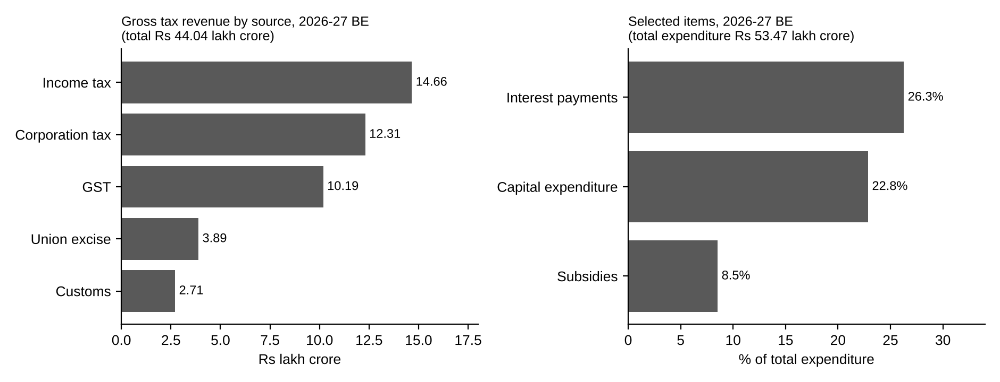
What the numbers show:
Q1. Which of the following statements appropriately describes the “fiscal stimulus”? [UPSC 2011]
Answer: (b).
Q2. The authorization for the withdrawal of funds from the Consolidated Fund of India must come from [UPSC 2011]
Answer: (b).
Q3. All revenues received by the Union Government by way of taxes and other receipts for the conduct of Government business are credited to the [UPSC 2011]
Answer: (c).
Q4. When the annual Union Budget is not passed by the Lok Sabha, [UPSC 2011]
Answer: (d).
Q5. With reference to the Union Government, consider the following statements: [UPSC 2015]
Which of the statements given above is/are correct?
Answer: (c).
Q6. Which of the following is/are included in the capital budget of the Government of India? [UPSC 2016]
Select the correct answer using the code given below.
Answer: (d).
Q7. With reference to the expenditure made by an organization or a company, which of the following statements is/are correct? [UPSC 2022]
Select the correct answer using the code given below:
Answer: (a).
Mains. The public expenditure management is a challenge to the Government of India in the context of budget making during the post-liberalisation period. Clarify it. [UPSC 2019]. Distinguish between capital budget and revenue budget. Explain the components of both these budgets. [UPSC 2021]
A fiscal deficit is the amount the government must borrow in a year because its spending exceeds its receipts other than borrowing; the FRBM Act is the law that limits deficits and debt.
A government runs a deficit when it spends more than it collects. The Budget measures this in several ways, each answering a different question.
| Measure | Formula | Question it answers |
|---|---|---|
| Revenue deficit | Revenue expenditure − Revenue receipts | Is the government borrowing to meet its day-to-day costs? |
| Fiscal deficit | Total expenditure − Total receipts excluding borrowing = (Revenue expenditure + Capital expenditure) − (Revenue receipts + Non-debt capital receipts) | How much must the government borrow in the year? |
| Primary deficit | Fiscal deficit − Interest payments (net interest liabilities) | What would the deficit be without interest on past debt? |
| Effective revenue deficit | Revenue deficit − Grants given to States for creating capital assets | How large is the revenue deficit once grants that build assets are set aside? |
| Effective capital expenditure | Capital expenditure + Grants given to States for creating capital assets | How much does the Centre really spend on investment? |
Why the fiscal deficit equals borrowing. If total expenditure is Rs 17 lakh crore and receipts excluding borrowing are Rs 13 lakh crore, the government must borrow Rs 4 lakh crore, and that is the fiscal deficit. Borrowing is itself a capital receipt, so total receipts including borrowing become 13 + 4 = 17, equal to expenditure; that is why borrowing is left out of the definition. Fiscal deficit = borrowing from home + borrowing from the RBI + borrowing from abroad.
Revenue deficit is part of the fiscal deficit. Fiscal deficit = Revenue deficit + Capital expenditure − Non-debt capital receipts. A revenue deficit means current spending (salaries, pensions, interest, subsidies) exceeds current receipts, so the government uses other sectors’ savings to pay for consumption. Since most revenue expenditure is committed and cannot be cut, a government facing a revenue deficit tends to cut capital and welfare spending, which lowers future growth. A large share of revenue deficit in the fiscal deficit means that much of the borrowing finances consumption, not investment.
Why effective measures exist. Grants to States for MGNREGA works, rural roads or school buildings are revenue expenditure for the Centre, because the asset is owned by the State; yet they create assets. The effective measures correct for this.
| 2025-26 RE | 2026-27 BE | |
|---|---|---|
| Revenue deficit | 5,26,764 (1.5% of GDP) | 5,92,344 (1.5% of GDP) |
| Fiscal deficit | 15,58,492 (4.4% of GDP) | 16,95,768 (4.3% of GDP) |
| Interest payments | 12,74,338 | 14,03,972 |
| Primary deficit (= fiscal deficit − interest) | 2,84,154 (0.8% of GDP) | 2,91,796 (0.7% of GDP) |
| Revenue deficit as share of fiscal deficit | 33.8% | 34.9% |
The primary deficit of Rs 2,91,796 crore is small beside interest of Rs 14,03,972 crore: most of the borrowing in 2026-27 is needed to pay interest on earlier debt. The revenue deficit is about a third of the fiscal deficit, so about a third of borrowing finances current spending.
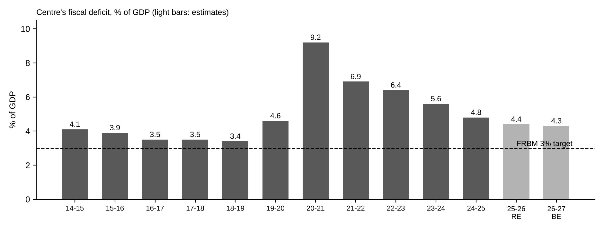
Source for the figure: 2014-15 to 2022-23, standard compilations; 2023-24 (5.6%), CGA provisional figure reported in the Economic Survey 2023-24 coverage; 2024-25 actual (4.8%), 2025-26 RE and 2026-27 BE, PRS Legislative Research. Earlier years in the series may have been revised in later accounts.
Before 1997 the Government issued ad hoc Treasury Bills to the RBI, which printed currency in return. This is direct monetisation of the deficit (a primary-market transaction between the Government and the RBI). It was stopped by an agreement between the Government and the RBI in 1997, which replaced it with Ways and Means Advances (WMA), short advances for temporary mismatches between receipts and payments. The RBI would deal in government securities only in the secondary market through open market operations, as a liquidity instrument and not to support government borrowing. The FRBM Act later prohibited direct monetisation, with exceptions for emergencies.
| When it may be needed | Effects |
|---|---|
| When banks have little liquidity, government borrowing from banks would push up interest rates and hurt investment; a one-time exception can help. If banks are flush with liquidity the Government should first borrow from them | Raises aggregate demand and growth; raises the Government’s debt; raises money supply and inflation; may depress the rupee and prompt capital flight; the RBI appears to lose control over monetary policy; once used, it tempts later governments to use it as an easy route |
Background. By 2000 the gross fiscal deficit had reached about 6% of GDP. In a multi-party system where elections shape spending, a law binding present and future governments was thought likely to hold deficits down. A committee under E. A. S. Sharma (2000) recommended draft legislation, and the Fiscal Responsibility and Budget Management Act was enacted in 2003 and took effect in July 2004.
Objectives: inter-generational equity and long-term macroeconomic stability, through sufficient revenue surplus, removal of fiscal obstacles to monetary policy and effective debt management by limiting deficits and borrowing.
| Feature | Provision (as printed in Vivek Singh) |
|---|---|
| Fiscal deficit | Limit to 3% of GDP by 31 March 2021 |
| Debt | General government debt (Centre plus States) not above 60% of GDP, and Central debt not above 40% of GDP, by 2024-25 |
| Guarantees | No additional guarantees from the Consolidated Fund above 0.5% of GDP in a year |
| Annual targets | The Centre prescribes annual targets to reduce the deficit while above the limit |
| Escape clause | The annual target can be exceeded for national security, war, national calamity, collapse of agriculture, structural reforms with unanticipated fiscal implications, or a fall in real output growth of a quarter of at least 3 percentage points below its average of the previous four quarters. The deviation cannot exceed 0.5% of GDP in a year |
| Upswing | If real growth of a quarter is at least 3 percentage points above its previous four-quarter average, the fiscal deficit must be cut by at least 0.25% of GDP that year |
| RBI | The Centre may not borrow from the RBI except through advances for temporary mismatches. The RBI may subscribe to primary issues of government securities under the escape clause, and may buy and sell government securities in the secondary market |
| Transparency | Half-yearly review of receipts and expenditure placed before Parliament; the CAG may review compliance; disclosures with the Budget |
| Statements laid with the Budget | Medium Term Fiscal Policy Statement, Fiscal Policy Strategy Statement, Macroeconomic Framework Statement; the Medium-Term Expenditure Framework Statement is laid in the session after the Budget |
Every State has also fixed a fiscal deficit limit of 3% in its own law.
| Year | Event |
|---|---|
| 2016-17 | N. K. Singh Committee (FRBM Review Committee) recommended a shift from annual deficit targets to a debt anchor: general government debt of 60% of GDP by 2023, made up of 40% for the Centre and 20% for the States; a Central fiscal deficit of 2.5% of GDP and revenue deficit of 0.8% of GDP by 2023; and an independent Fiscal Council |
| 2020-21 | Covid-19 pushed the Centre’s fiscal deficit to 9.2% of GDP. The FRBM Act was not amended; the Government stated it would retain flexibility and aim for a fiscal deficit below 4.5% of GDP by 2025-26 |
| 2025-26 | Revised estimate 4.4% of GDP, below the 4.5% goal |
| 2026-27 | Budget Estimate 4.3% of GDP. The Government states a debt anchor: Central debt (outstanding liabilities) of 55.6% of GDP in 2026-27, to come down to around 50% ± 1% of GDP by March 2031 |
The Medium Term Fiscal Policy Statement has not given three-year rolling deficit targets since 2021-22 (PRS). The 16th Finance Commission recommends a Central fiscal deficit of 3.5% of GDP by 2030-31, a State limit of 3% of GSDP, and a projected combined Centre-State debt falling from 77.3% of GDP in 2026-27 to 73.1% in 2030-31.
Constitutional position. Article 292: the Centre may borrow on the security of the Consolidated Fund within limits Parliament sets. Article 293: States may borrow only within India (from internal sources). A State needs the Centre’s consent to borrow if it owes the Centre a loan or if the Centre has guaranteed a loan to it; since almost every State has such dues, States seek permission, except when they breach their own FRBM limit. For external funds, since the Twelfth Finance Commission, the Centre borrows from multilateral and bilateral agencies and lends on a back-to-back basis to the General Category States (from 1 April 2005), passing on the interest and exchange-rate risk.
States’ borrowing limit. In 2023-24 the Centre allowed States a fiscal deficit of 3.5% of GSDP, of which 0.5% was tied to power-sector reforms; in addition Rs 1.3 lakh crore of 50-year interest-free loans was set for capital investment (Scheme of Financial Assistance to States for Capital Investment).
| Component | What it is |
|---|---|
| 1. Internal debt | Domestic market borrowing: treasury bills and dated securities |
| 2. External debt | Loans from other governments and multilateral agencies such as the World Bank and ADB (and foreign portfolio investors’ purchases of government securities) |
| 3. Public account liabilities | National Small Savings Schemes, PPF and similar |
| 4. Off-budget liabilities | Liabilities of enterprises owned or controlled by the Centre that the Government has to service from its own budget |
Internal plus external debt is public debt, contracted against the Consolidated Fund. At 31 December 2022 the Centre’s total debt was Rs 144.5 lakh crore: internal 122.6, external 8.6, public account liabilities 11.9, extra-budgetary resources 1.39. Public debt of Rs 131.2 lakh crore was about 90% of the total. Public debt is mainly at fixed interest rates (floating internal debt was 1.7% of GDP in the Economic Survey 2022-23), which insulates interest payments from rate changes.
Debt-to-GDP, per cent
| 2014-15 | 2016-17 | 2018-19 | 2019-20 | 2020-21 | 2021-22 | 2022-23 | |
|---|---|---|---|---|---|---|---|
| Centre | 51.4 | 49.6 | 45.9 | 47.8 | 59.3 | 57.0 | 56.0 |
| States | 22.0 | 25.1 | 25.2 | 26.3 | 31.1 | 28.7 | 29.5 |
Current position: Central debt 55.6% of GDP in the 2026-27 Budget Estimate. Evidence cited by the Economic Survey is that in India higher GDP growth lowers the debt-to-GDP ratio, and not the reverse (see the chapter on stabilisation policy for the interest rate-growth differential).
External debt is the debt that residents (government and private sector) owe to non-residents. India’s external debt was US$ 762.8 billion at the end of March 2026, or 20.8% of GDP, up from 19.8% a year earlier (RBI). By its structure (September 2022: US$ 610.5 billion, 19.2% of GDP):
| Sovereign (Government) | Non-sovereign | |
|---|---|---|
| Includes | Bilateral and multilateral loans; foreign portfolio investment in government securities (State governments’ external debt is also in the Centre’s name) | Commercial borrowings (ECB), foreign investment in corporate bonds, NRI deposits |
| Share in Sept 2022 | US$ 124.5 billion (3.9% of GDP) | US$ 486 billion (15.3% of GDP) |
Commercial borrowings were the largest component, followed by non-resident deposits; short-term debt was 21.6%; by currency, US dollar 55.5% and rupee 30%, the rest in SDR, yen and euro. The rupee-denominated part is FPI holdings of rupee bonds, masala bonds and some NRI deposits. All external debt is expressed in US dollars, so a stronger dollar lowers the dollar value of debt raised in euros (if US$ 1 = Euro 0.8 a Euro 1 loan is US$ 1.25; if the dollar strengthens to US$ 1 = Euro 1, it is US$ 1).
| For | Against |
|---|---|
| The Government overstates GDP and revenue and understates spending; revenue targets set too high push tax officials to unwarranted methods; off-budget financing (for example the Food Corporation of India borrowing from the National Small Savings Fund for the food subsidy) hides the true deficit | The NSO, RBI and many agencies already give forecasts, so a council’s forecast is not more credible; forcing the Ministry to use another agency’s numbers dilutes its accountability |
| Countries with independent fiscal councils tend to forecast more accurately and keep to fiscal rules; non-binding forecasts discipline lawmakers through ‘comply or explain’ | The existing Fiscal Policy Strategy Statement seldom gets in-depth debate in Parliament; the problem is a lack of demand for accountability, which a new body does not cure |
| The CAG audits after spending is done and does not forecast or test sustainability. About 50 countries have fiscal councils |
Q1. Consider the following statements: [UPSC 2018]
Which of the statements given above is/are correct?
Answer: (c).
Q2. Consider the following statements: [UPSC 2019]
Which of the statements given above is/are correct?
Answer: (d).
Q3. With reference to the Indian economy, consider the following statements: [UPSC 2022]
Which of the statements given above is/are correct?
Answer: (c).
Mains (UPSC 2013). What were the reasons for the introduction of the Fiscal Responsibility and Budget Management (FRBM) Act, 2003? Discuss critically its salient features and their effectiveness. [200 words, 10 marks]
The taxation architecture is the set of taxes, rates and rules through which the Union and the States raise revenue, and the constitutional division of who may levy and who keeps each tax.
The Constitution divides taxing power between the Union and the States (Seventh Schedule), and Articles 268 to 272 and 246A, 269A decide who collects and who keeps the proceeds.
| Levied by | Main taxes |
|---|---|
| Union | Income tax on non-agricultural income, corporation tax, customs duty, Central excise (now mainly on petroleum products), CGST, IGST (Article 269A) |
| States | Land revenue, State excise on alcohol for human consumption, stamp duty (on property transactions), SGST, agricultural income tax, professional tax (capped at Rs 2,500 a year), electricity duty, motor vehicle taxes |
| Local bodies | Property tax on land and buildings, under State laws |
| Both (Article 246A) | GST, levied concurrently by Parliament and State legislatures |
How the proceeds are shared:
| Article | Levied | Collected | Proceeds |
|---|---|---|---|
| 268 | Union | States | States keep them (for example, certain stamp duties) |
| 269 | Union | Union | Assigned to the States where levied (taxes on inter-State consignment of goods) |
| 269A | Union | Union | IGST on inter-State supply, apportioned by the GST Council |
| 270 | Union | Union | Shared with States through the Finance Commission (the divisible pool) |
| 271 | Union | Union | Surcharges, kept by the Union |
The next chapters on GST and the Finance Commission explain GST and the divisible pool in detail. Taxes can be classified as direct and indirect, progressive and regressive, specific and ad valorem, and origin and destination based (see Tax Theory).
India has two regimes for individuals. The new regime is the default; the old regime allows exemptions and deductions (Section 80C savings in PPF, EPF and similar, health insurance, house rent allowance, home-loan interest). The new regime allows almost none of them but has lower rates and a standard deduction of Rs 75,000 for salaried taxpayers.
| Income slab (Rs lakh) | Rate: new regime, FY 2025-26 | Rate: old regime |
|---|---|---|
| Up to 2.5 | Nil | Nil |
| 2.5 to 4 | Nil | 5% |
| 4 to 5 | 5% | 5% |
| 5 to 8 | 5% | 20% |
| 8 to 10 | 10% | 20% |
| 10 to 12 | 10% | 30% |
| 12 to 16 | 15% | 30% |
| 16 to 20 | 20% | 30% |
| 20 to 24 | 25% | 30% |
| Above 24 | 30% | 30% |
Rebate under Section 87A: new regime Rs 60,000, which makes tax nil up to Rs 12 lakh of income; old regime Rs 12,500, nil up to Rs 5 lakh. The rebate does not apply to income taxed at special rates such as capital gains. Surcharge on high incomes is at most 25% in the new regime and 37% in the old regime (above Rs 5 crore), and a 4% health and education cess applies to all. The Budget 2026-27 left the slabs unchanged.
With the rebate. Taxable income Rs 12 lakh: slab tax = 20,000 + 40,000 = Rs 60,000, fully rebated, so tax is nil. A salaried person earning up to Rs 12.75 lakh pays no tax.
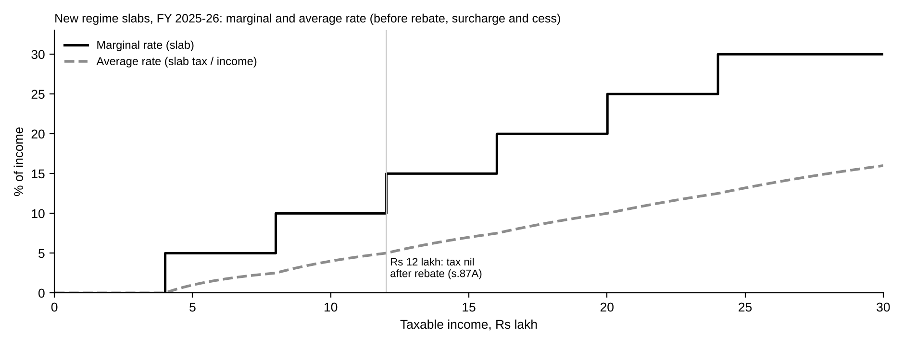
Parliament passed the Income-tax Act, 2025 on 11 and 12 August 2025, the President assented on 21 August 2025, and it came into force on 1 April 2026, repealing the Income-tax Act, 1961. It has 536 sections, 23 chapters and 16 schedules (the 1961 Act had over 800 sections) and replaces the separate ‘assessment year’ and ‘previous year’ with a single tax year. Tax rates and slabs carry over; years that began before 1 April 2026 stay under the 1961 Act.
| Regime | Base rate | Surcharge | Cess | Effective rate |
|---|---|---|---|---|
| Concessional (Section 115BAA, from 2019): no exemptions or incentives claimed | 22% | 10% | 4% | 22 × 1.10 × 1.04 = 25.17% |
| Old (exemptions claimed) | 30% | 12% | 4% | 30 × 1.12 × 1.04 = 34.94% |
| New manufacturing companies (Section 115BAB, set up after 1 October 2019; the benefit lapsed for those not starting production by 31 March 2024) | 15% | 10% | 4% | 15 × 1.10 × 1.04 = 17.16% |
| Foreign company | 40% | plus surcharge |
Companies on the 25.17% rate are not subject to MAT.
The Budget 2026-27 changed MAT (PRS summary): the rate is cut from 15% to 14%, MAT credit accumulates no longer from 1 April 2026, and set-off is capped at 25% of tax liability, for the new regime only. An Alternate Minimum Tax at 15% applies in the same way to LLPs and other non-corporate entities.
| Tax | Position |
|---|---|
| Capital gains | Tax on the profit from selling an asset bought at a lower cost: shares, bonds, gold, art, property |
| Rates (Budget 2024) | Listed equity and equity mutual funds: short-term (held up to 12 months) 20%; long-term (over 12 months) 12.5% on gains above Rs 1.25 lakh a year. Unlisted shares and real estate: long-term after 24 months, 12.5% without indexation (short-term gains at slab rates) |
| Dividend | The Dividend Distribution Tax paid by companies was abolished by the Finance Act, 2020 (effective 1 April 2020); dividend is now taxed in the hands of the shareholder at the applicable rate, with tax deducted at source on dividends above Rs 5,000 a year |
| Securities Transaction Tax (STT) | Paid by both buyer and seller on securities traded on Indian exchanges (shares, bonds, mutual funds); for example 0.1% each on equity delivery. The Budget 2026-27 raised STT on options premium from 0.1% to 0.15%, on exercised options from 0.125% to 0.15%, and on futures from 0.02% to 0.05% |
| Buyback tax | Budget 2026-27: all share buybacks are taxed as capital gains, with an additional tax on promoters (effective rate 22% for companies and 30% for non-corporate promoters) |
| TDS and TCS | Tax deducted at source when income is paid (rent, salary, dividend); tax collected at source by the seller at the time of sale of specified goods. The Budget 2026-27 cut TCS on education or medical remittances above Rs 10 lakh from 5% to 2%, and on overseas tour packages to 2% |
The Equalisation Levy (‘Google tax’). Before 2016 a foreign company paid Indian income tax only if it had a physical presence in India. A company registered in the US earning revenue from Indian advertisers escaped the Income Tax Act. The levy, introduced by the Finance Act, 2016 outside the income tax law, charged 6% on the payment made to a non-resident for online advertising services (deducted by the payer, on revenue and not profit); from 1 April 2020 a 2% levy applied to e-commerce operators supplying goods or services to Indian residents. The 2% levy was abolished with effect from 1 August 2024 and the 6% levy with effect from 1 April 2025, as India moved to the international tax agreement below.
Global minimum corporate tax (OECD two pillars). Companies shift profits (not business) to low-tax countries. If a US company with a 20% home tax moves profits to a country with 5% tax, a 15% minimum lets the home government collect the 10% difference.
| Pillar | Idea |
|---|---|
| Pillar One | Re-allocate taxing rights over the largest multinational (including digital) firms to the market countries where they earn profits, whether or not they have a physical presence |
| Pillar Two | A floor of 15% on corporate tax that countries can use to protect their tax base |
Transfer pricing and BEPS. Trade between related companies (a parent and its subsidiary) must be priced at the market rate, called the arm’s length principle. If a Japanese parent charges its Indian subsidiary a high price for components, the Indian profit and tax fall and Japanese profit rises. Such profit shifting is Base Erosion and Profit Shifting (BEPS). An Advance Pricing Agreement (APA) fixes the price for such transactions in advance, usually for several years, between the taxpayer and the tax authority; it gives certainty, reduces disputes and is binding on both. India signed the Multilateral Instrument against BEPS in June 2017 and ratified it in June 2019.
Anti-avoidance rules.
| Term | Meaning |
|---|---|
| GAAR (General Anti-Avoidance Rule) | In force from 1 April 2017 (Shome Committee); lets the tax authority treat an arrangement whose main purpose is a tax benefit and which lacks commercial substance as an impermissible avoidance arrangement |
| Place of Effective Management (PoEM) | A foreign company is an Indian tax resident if its key management decisions are in substance made in India |
| DTAA | Double Taxation Avoidance Agreements between countries |
| Angel tax | Tax on share premium received by unlisted start-ups above fair value (introduced in 2012); abolished in Budget 2024-25 |
Tax evasion and black money. Evasion is illegal non-payment; avoidance is using loopholes. Related issues are black money, tax havens, money laundering, hawala and shell companies. Agencies: the Enforcement Directorate (investigates the Foreign Exchange Management Act and the Prevention of Money Laundering Act), the Financial Intelligence Unit (2004), and internationally the Financial Action Task Force (Paris), which keeps a grey list and a black list.
| Reform | Content |
|---|---|
| Faceless assessment | Cases are picked by computer and handled electronically; no face-to-face meetings |
| Faceless appeal | Appeals are allotted at random to an officer anywhere in the country, whose identity is unknown to the taxpayer; decisions are team-based and reviewed |
| Taxpayers’ Charter | A two-way document: the Government commits to fair, courteous treatment, treating the taxpayer as honest, timely decisions, privacy, an appeal mechanism and lower compliance cost; the taxpayer commits to being honest and compliant, keeping records and responding and paying in time |
Committees on tax reform: Raja Chelliah (1991, indirect tax reform), Kelkar (2002, direct tax), Partha Sarathi Shome (2013, tax administration), Arvind Subramanian (2015, GST) and Akhilesh Ranjan (2018, Direct Tax Code). The Tobin tax is a small tax on each conversion from one currency to another, proposed by James Tobin.
Land revenue is levied under State laws, usually per acre or hectare on a classification of land and the cash value of its average yield. Property tax is levied by urban local bodies on real property in proportion to its assessed value and pays for local roads, parks and schools.
Before 1 July 2017 the Centre levied excise duty (on manufacture, when goods left the factory), service tax and the Central Sales Tax (CST, on sales from one State to another, collected and kept by the origin State) and the States levied VAT (on sales within the State), entry tax (on movement of goods into the State), entertainment tax, luxury tax and stamp duty. Customs duty (on imports and exports) is a Union tax.
The system cascaded. With central excise at 12.5% and State VAT at 10%, VAT was charged on the price already including excise:
| Step | Amount |
|---|---|
| Value of goods | 100 |
| Excise duty 12.5% | 12.5 |
| VAT 10% on (100 + 12.5) | 11.25 |
| Invoice price | 123.75 |
Total tax of Rs 23.75 on Rs 100 is an effective rate of 23.75%, because VAT is paid on the excise. Credit also did not cross State borders; VAT rates ranged from 1% to 20% and exemptions varied, so a good cost different amounts in different States and India was a fragmented market. The Goods and Services Tax chapter explains how GST replaced this system.
What stayed outside GST. Alcohol for human consumption (State excise), five petroleum products (crude oil, natural gas, petrol, diesel, aviation turbine fuel: central excise and State VAT), electricity (State duty), and stamp duty on land and buildings.
Q1. Under which of the following circumstances may “capital gains” arise? [UPSC 2012]
Select the correct answer using the codes given below:
Answer: (b).
Q2. Which one of the following effects of creation of black money in India has been the main cause of worry to the Government of India? [UPSC 2021]
Answer: (d).
The Goods and Services Tax is a single, destination-based tax on the supply of goods and services, charged at every stage on the value added, with credit for the tax paid on inputs.
Before 1 July 2017 the Centre levied excise duty and service tax and the States levied VAT, entertainment tax, entry tax and others on the same goods. Tax was charged on tax, credit stopped at State borders, rates and exemptions differed across States, and India was a set of separate markets (see Taxation Architecture for the cascading example).
| Position | |
|---|---|
| Constitutional basis | 101st Constitution Amendment Act, 2016 (September 2016): Article 246A (concurrent power to levy GST), Article 269A (IGST on inter-State supply collected by the Centre and apportioned), Article 279A (GST Council), Article 366(12A) (definition: tax on supply of goods or services or both, except alcohol for human consumption) |
| Laws | Central GST Act; a State GST Act in every State; Integrated GST Act (inter-State supply); Union Territory GST Act; GST (Compensation to States) Act, 2017 |
| Start | 1 July 2017 |
| Taxes subsumed | 17 Central and State taxes (and several cesses): Central excise duty, additional excise duty, service tax, VAT, entertainment tax, entry tax, purchase tax, luxury tax, central sales tax and others |
| Not subsumed | Basic customs duty; alcohol for human consumption (State excise); petroleum products (central excise and State VAT) until the Council decides; electricity duty; stamp duty and land transactions |
Article 279A(5) allows the Council to bring the five petroleum products (crude oil, natural gas, petrol, diesel, aviation turbine fuel) under GST from a date it recommends; only alcohol is excluded by the Constitution itself.
Dual GST.
| Transaction | Tax | Goes to |
|---|---|---|
| Within a State | CGST + SGST (Union Territories: UTGST) | Centre gets CGST; the State gets SGST |
| Between States | IGST (equal to CGST + SGST), levied by the Centre | Shared between the Centre and the consuming State |
| Imports | Customs duty, then IGST on top (imports are inter-State supplies) | |
| Exports and supplies to SEZs | Zero-rated: tax paid in the chain is refunded, so effectively no tax is exported |
Input tax credit (worked example; GST 18%).
| Seller A | Seller B (buys from A) | |
|---|---|---|
| Cost of inputs | 0 | Rs 118 |
| Value added | Rs 100 | Rs 200 |
| Sale price (before tax) | Rs 100 | Rs 300 |
| GST at 18% | Rs 18 (CGST 9 + SGST 9) | Rs 54 |
| Credit for tax paid to A | Rs 18 | |
| GST paid to government | Rs 18 | Rs 36 (CGST 18 + SGST 18) |
| Invoice | Rs 118 | Rs 354 |
Total GST collected is Rs 18 + Rs 36 = Rs 54 = 18% of the final price of Rs 300. Credit is available throughout India at each stage of value addition (under VAT it was available only within the State), so cascading is removed.
Destination principle. The State share of the tax goes to the State where the good is consumed. A tractor made in Pune and sold in Patna earned Maharashtra the tax under the old origin-based CST; under GST the State tax accrues to Bihar. Consuming States with large populations (Uttar Pradesh, Bihar, Rajasthan, West Bengal) gain; producing States such as Gujarat and Maharashtra feared loss, which is why compensation was needed.
Rules on using credit.
| Credit | Can pay |
|---|---|
| IGST | IGST first, then CGST, then SGST |
| CGST | CGST, then IGST; never SGST |
| SGST | SGST, then IGST; never CGST |
Other features.
| Feature | Detail |
|---|---|
| Composition levy | Optional, for small taxpayers: 1% of turnover for traders and manufacturers with turnover up to Rs 1.5 crore; 6% for small service providers with turnover up to Rs 50 lakh; no input tax credit |
| Registration threshold | Rs 40 lakh of turnover (older rule) |
| E-way bill | Mandatory electronic document for moving goods worth more than Rs 50,000; replaced the physical way bill; tracks movement and checks evasion |
| E-invoicing | Businesses above a notified turnover generate standard electronic invoices on a portal and get an invoice reference number and QR code |
| Reverse charge | The buyer, not the supplier, pays the tax on notified supplies (for example goods transport agency, legal services, sponsorship) and supplies from unregistered persons; paid in cash and creditable afterwards |
| GSTN | The not-for-profit company that runs the GST portal; the GSTIN is a 15-character number: 2-digit State code + 10-character PAN + 3 more characters. Issued through the tax administration |
| Anti-profiteering | The National Anti-Profiteering Authority ensured tax cuts reached consumers; closed in December 2022 and its work passed to the Competition Commission of India |
| Detail | |
|---|---|
| Members | The Union Finance Minister (Chairperson); the Union Minister of State in charge of Revenue or Finance; the Minister in charge of Finance or Taxation (or another Minister nominated) of each State. The States choose one of their ministers as Vice-Chairperson |
| Recommends on | Taxes, cesses and surcharges to be subsumed; goods and services to be exempted; IGST; the turnover threshold for exemption; the rates, including floor rates and bands; special rates for a limited time to raise resources after a calamity; any other matter |
| Quorum | 50% of the members |
| Decisions | By at least three-fourths of the weighted votes of members present and voting: the Centre has one-third of the votes and all States together two-thirds |
Neither side can pass a measure alone: the Centre’s 33.33% is short of 75%, and so is the States’ 66.67%. The Centre therefore has a veto, and it needs 41.67% more, equal to 62.5% of the States’ weight (about 20 States), to carry a proposal.
Supreme Court, May 2022. The Council’s recommendations are recommendatory and not binding on the Union and the States; Parliament and State legislatures have simultaneous power to legislate on GST. The recommendations bind the Government for secondary legislation (changes in rates and rules) but have only persuasive value for amending the Acts themselves.
Until 21 September 2025: a four-rate structure of 5%, 12%, 18% and 28% plus exempt (0%), gold at 3% and compensation cesses on top of certain goods, making the effective structure six or seven slabs, which was criticised as complicated.
From 22 September 2025 (GST Council meeting of 3 September 2025): the 12% and 28% slabs were abolished, leaving two main rates, 5% and 18%, with a special rate of 40% on luxury and ‘sin’ goods, besides exempt goods.
| Moved to | Examples |
|---|---|
| 18% from 28% | Small petrol cars (under 1,200 cc), small diesel cars (under 1,500 cc), motorcycles under 350 cc, three-wheelers, cement, air conditioners, televisions above 32 inches |
| 5% from 18% | Hair oil, shampoo, soap, toothpaste, biscuits, chocolates, packaged mineral water, footwear priced above Rs 2,500 |
| Nil | Individual health and life insurance premiums (previously 18%), paneer and chapati/roti, most education items, certain life-saving drugs |
| 40% | Tobacco and pan masala, carbonated and caffeinated drinks, large cars, yachts and personal aircraft, casinos and horse racing |
The compensation cess was scrapped from 22 September 2025 on most goods; it stays on pan masala, cigarettes, chewing tobacco and similar goods until the loan and interest obligations are discharged.
States feared losing revenue and the freedom to levy their own taxes. The Centre measured the growth of State indirect-tax revenue over 2012-13 to 2015-16 (average 14% a year) and promised, under the GST (Compensation to States) Act, 2017, that if State indirect-tax revenue grew less than 14% a year over the base year 2015-16, it would make up the shortfall for five years (1 July 2017 to 30 June 2022). The money came from a compensation cess on luxury and demerit goods, collected in the Consolidated Fund of India, moved to the GST Compensation Fund in the Public Account and then to the States.
In the Covid-19 shock (2020-21) the shortfall was too large for the cess. After a dispute in November 2020, the Centre borrowed the shortfall and lent it to the States back-to-back, with the States to repay principal and interest later. The cess was continued beyond June 2022, to 31 March 2026, only to repay those loans, as the Centre refused the States’ demand to extend the compensation itself.
| Benefits | |
|---|---|
| Business | One return for the whole country instead of separate VAT and excise returns; common rate structure; credit across the value chain; lower cost for manufacturers and exporters; compliance online |
| Government | Cooperative federalism (indirect-tax decisions taken jointly); one tax is easier to administer; no entry-tax check posts; invoice matching makes evasion harder; wider tax base (small firms that were outside the net registered); lower collection cost |
| Consumer | One transparent tax; lower overall burden on most goods through removal of cascading |
| Formalisation | Large buyers want credit, so they pull their informal suppliers into the tax net; textiles and clothing, long outside the net, now register. Many small manufacturers registered because the exemption threshold fell from Rs 1.5 crore (earlier) to Rs 40 lakh |
| Challenges | |
|---|---|
| Rate structure | Many rates and cesses (before the 2025 reform); the principle is that lower rates on more items increase compliance |
| Items outside GST | Alcohol, petroleum, electricity, real estate; tax on power embedded in costs cannot be claimed back as credit |
| Small business | Threshold limits can be exploited to underreport; four crore small firms without computers face higher costs of accountants and filing |
| Inverted duty structure | The rate on inputs is higher than on the product (inputs at 18%, product at 12%): credit piles up unused, working capital is blocked, refunds must be sought, and imports of the finished good become cheaper than making it at home |
Exports. Exports are zero-rated (GST/IGST paid in the chain is refunded). Taxes outside GST (VAT on fuel used in transport, mandi tax, electricity duty) stayed embedded in export prices. RoDTEP (Remission of Duties or Taxes on Exported Products) refunds them as credits in the exporter’s customs ledger, usable to pay basic customs duty; it replaced the Merchandise Exports from India Scheme in 2020 after the WTO ruled MEIS non-compliant, and applies to all exports from 1 January 2021.
| September 2025 | September 2026 | |
|---|---|---|
| Gross GST | Rs 1.77 lakh crore | Rs 2.04 lakh crore (+14.7%) |
| Domestic | Rs 1.25 lakh crore | Rs 1.38 lakh crore (+10.1%) |
| Imports | Rs 52,031 crore | Rs 65,525 crore (+25.9%) |
| Refunds | Rs 27,848 crore | Rs 27,001 crore (-3%) |
| Net GST | Rs 1.77 lakh crore (+18.1%) |
April-September 2026: gross Rs 12.46 lakh crore (+11.6% over Rs 11.17 lakh crore), net Rs 10.66 lakh crore (+10.4%). Import-linked collections grew faster than domestic ones. (Provisional figures.)
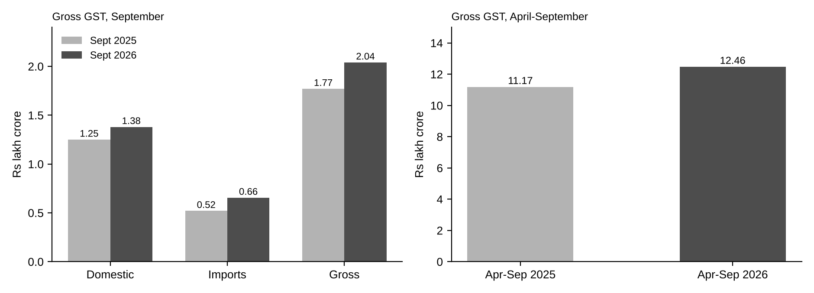
Q1. What is/are the most likely advantages of implementing ‘Goods and Services Tax (GST)’? [UPSC 2017]
Select the correct answer using the code given below:
Answer: (a).
Mains. Enumerate the indirect taxes which have been subsumed in the GST in India. Also comment on the revenue implications of the GST introduced in India since July 2017. [UPSC 2019]. Explain the rationale behind the Goods and Services Tax (Compensation to States) Act of 2017. How has Covid-19 impacted the GST Compensation Fund and created new federal tensions? [UPSC 2020]
Fiscal federalism is the division of taxing and spending powers between the Union and the States, and the Finance Commission is the constitutional body that decides how the Centre’s tax revenue is shared.
The Constitution divides both taxing powers and spending responsibilities between the Union and the States, and gives limited financial powers to local governments through the 73rd and 74th Amendments. Two gaps follow:
The Finance Commission (Article 280) is the constitutional body that addresses both. Its aim is to narrow the development gap between States; it does not reward the best-performing State with the biggest share, however well it governs.
Because cesses and surcharges are outside the pool, a rise in them shrinks what is shared. The headline share is 41% of the pool, but the effective transfer as a share of gross tax revenue is lower: a Bank of Baroda analysis puts it at 32.1% on average in 2021-26 (34.0% in 2016-20, 27.9% in 2011-15). In the Budget Estimate for 2026-27 devolution is Rs 15,26,255 crore against gross tax revenue of Rs 44,04,086 crore, or 34.7% (computed from PRS figures).
| Detail | |
|---|---|
| Article | 280: appointed by the President every five years, or earlier if the President thinks necessary; a quasi-judicial body |
| Members | A chairman and four other members. The chairman must have experience of public affairs. The others are chosen from persons who are or are qualified to be High Court judges; have special knowledge of government finance and accounts; have wide experience in financial matters and administration; or have special knowledge of economics |
| Powers | Those of a civil court: summon witnesses, call for public records |
| Report | Submitted to the President, who lays it before Parliament with an explanatory memorandum on action taken (Article 281) |
| Nature | Recommendations are advisory, not binding; the Government must justify rejecting them. By convention the tax devolution recommendations are accepted |
Functions.
| 14th FC (2015-20) | 15th FC (2021-26) | 16th FC (2026-31) | |
|---|---|---|---|
| Chair | Y. V. Reddy | N. K. Singh | Arvind Panagariya |
| Share of States | 42% (up from 32%) | 41% (1 point set aside for the new Union Territories of Jammu and Kashmir and Ladakh) | 41% |
Horizontal devolution: weights
| Criterion (what it measures) | 15th FC | 16th FC |
|---|---|---|
| Income distance (gap of the State’s per capita GSDP from the average of the top States; helps poorer States) | 45% | 42.5% |
| Population (2011 Census) | 15% | 17.5% |
| Demographic performance (15th FC: reward for lower fertility; 16th FC: population growth between 1971 and 2011) | 12.5% | 10% |
| Area (higher cost of services over large areas) | 15% | 10% |
| Forest and ecology (16th FC adds open forest and gain in cover 2015-23) | 10% | 10% |
| Contribution to GDP (new; average nominal GSDP 2018-19 to 2023-24 excluding 2020-21) | none | 10% |
| Tax and fiscal effort | 2.5% | dropped |
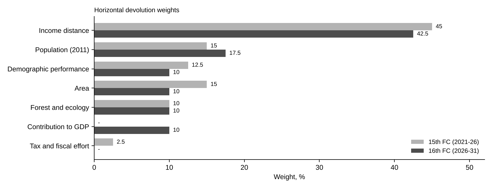
Southern States feared the shift from the 1971 to the 2011 Census would penalise them for family planning; the 15th FC answered with the demographic performance criterion. The 14th FC had used both the 1971 Census (17.5%) and the 2011 Census (10%) and introduced forest cover (7.5%).
State shares under the 16th FC (per cent of the pool): Uttar Pradesh 17.62, Bihar 9.95 and Madhya Pradesh 7.35 are the largest; Sikkim 0.34, Goa 0.37 and Nagaland 0.48 the smallest. Rajasthan receives 5.93% (6.03% under the 15th FC).
| Grant | Content |
|---|---|
| Revenue deficit grants | For States that still have a revenue deficit after devolution, so that fiscal capacity gaps are filled without rewarding weak revenue effort or excess spending. Given to 17 States in 2021-22, falling to 6 in 2025-26; about Rs 2.9 lakh crore over five years |
| Local body grants | Rs 4,36,361 crore over five years. For Panchayats, 60% for national priorities (drinking water, rainwater harvesting, sanitation) and 40% untied; given to all three tiers. The rural-urban ratio moves from 67.5:32.5 to 65:35; among States, 90% weight on population and 10% on area |
| Disaster management grants | Centre and States contribute 75:25 (90:10 for the north-eastern States). The State Disaster Risk Management Fund is split 80% to the State Disaster Response Fund and 20% to the State Disaster Mitigation Fund |
| Sector-specific grants | Mostly performance-linked: health, school education, higher education, agricultural reforms (land leasing, water use, exports, oilseeds and pulses), maintenance of PMGSY roads, judiciary, statistics, Aspirational Districts and Blocks; for the power sector an incentive that opens extra borrowing, not a grant |
| State-specific grants | Tied grants to all 28 States on six themes: social needs; governance and administrative infrastructure; water, drainage and sanitation; culture and monuments; high-cost physical infrastructure; tourism |
| Defence | A dedicated modernisation fund for defence and internal security, funded from the Consolidated Fund, disinvestment proceeds and monetisation of surplus defence land |
| Item | Recommendation |
|---|---|
| Total grants-in-aid | Rs 9,47,409 crore for 2026-31 (revenue deficit, sector-specific and State-specific grants are discontinued) |
| Local bodies | Rs 7,91,493 crore: rural Rs 4,35,236 crore and urban Rs 3,56,257 crore; 80% basic and 20% performance; basic grants half untied, half tied to sanitation, solid waste and water; Rs 56,100 crore for 22 cities of 10 to 40 lakh population, tied to wastewater management; a one-time Rs 10,000 crore urbanisation premium for merging peri-urban villages. Entry conditions: constituted local bodies, published accounts, timely State Finance Commissions |
| Disaster management | Rs 2,04,401 crore corpus for State disaster funds (Centre’s share Rs 1,55,916 crore); Centre and State share 75:25, and 90:10 for north-eastern and Himalayan States |
| Fiscal rules | Centre’s fiscal deficit 3.5% of GDP by 2030-31; States 3% of GSDP; stop off-budget borrowing and bring it into budgets; include all off-budget borrowing in fiscal deficit and debt; combined Centre-State debt projected to fall from 77.3% of GDP (2026-27) to 73.1% (2030-31) |
| Power | States to privatise distribution companies; a special vehicle may take over their debt, repaid through capital investment assistance usable only after privatisation |
| Subsidies and enterprises | Rationalise subsidies with clear exclusion criteria for cash transfers; review and close 308 inactive State enterprises; State disinvestment policies; loss-making enterprises (losses in three of four years) go to the Cabinet |
| Cesses and surcharges | Remain outside the divisible pool |
| Channel | Nature |
|---|---|
| Article 275 grants | Statutory, recommended by the Finance Commission, charged on the Consolidated Fund |
| Article 282 grants | Discretionary, for any public purpose; the route for Centrally Sponsored Schemes. The Centre’s discretion can introduce political bias |
| Other | Special assistance, Additional Central Assistance, assistance from the National Disaster Response Fund, 50-year interest-free capital investment loans |
Centrally Sponsored Schemes (CSS) and Central Sector Schemes (CS).
| Centrally Sponsored | Central Sector | |
|---|---|---|
| Funding | Shared: 50:50, 70:30, 75:25 or 90:10 between Centre and States | 100% by the Centre |
| Implementation | State governments | Central agency |
| Subject | State List or concurrent subjects the Centre wants to encourage | Union List |
| Examples | PMGSY, MGNREGA | Namami Gange, Sagarmala, Pradhan Mantri Fasal Bima Yojana |
Until 2013-14 CSS funds also went directly to State agencies; since 2014-15 all transfers, including for CSS, are routed through the State Consolidated Funds. A sub-group of Chief Ministers under NITI Aayog recommended no more than about 30 CSS, in three groups: the core of the core (social protection and inclusion, the first charge on funds, such as MGNREGA), core schemes of the national development agenda (such as PMGSY) and optional schemes that States may choose, funded as a lump sum.
Article 293 allows States to borrow only in India and requires Centre’s consent where a State owes the Centre a loan or the Centre has guaranteed one. All States have such dues, so the Centre sets an annual net borrowing ceiling for each (3% of GSDP, with an additional 0.5% linked to power-sector reforms in 2023-24). In March 2022 the Finance Ministry decided that off-budget borrowing by State enterprises that is serviced from the State budget or backed by a State guarantee counts against the ceiling. States have also written 3% deficit limits into their own FRBM laws. See Deficits, Debt and the FRBM Act for the constitutional rules.
No previous-year questions on the Finance Commission or Centre-State transfers are included here (the one UPSC question on the FRBM Act, is under Deficits, Debt and the FRBM Act).
Chapters 30 to 35
Trade theory explains why countries trade, who gains and loses, and what tariffs and trade blocs do to welfare.
Countries trade because they differ in what they can produce cheaply, because production at scale lowers cost, and because consumers value variety. Trade lets a country consume outside its own production possibility frontier (PPF).
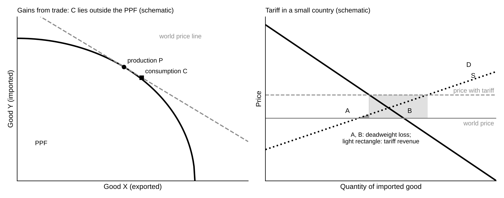
The left panel shows a small country facing a world price ratio. Without trade it consumes on its PPF. With trade it produces at P, where the PPF touches the world price line, and exchanges along that line to consume at C, which lies outside the frontier.
Absolute advantage (Adam Smith). A country has an absolute advantage in a good if it produces it with fewer resources than another country. Each country should export the good in which it is more productive.
| Opportunity cost of 1 cloth | Opportunity cost of 1 wine | |
|---|---|---|
| Country A | 0.5 wine | 2 cloth |
| Country B | 1 wine | 1 cloth |
A is better at both goods (absolute advantage in both), but cloth costs A only 0.5 wine against B’s 1 wine, so A has the comparative advantage in cloth; B has it in wine. Any exchange rate between 1 wine = 1 cloth and 1 wine = 2 cloth makes both better off. The ratio actually settled on, the terms of trade, is fixed by relative demand.
Assumptions of the Ricardian model: one factor (labour), constant costs, full employment, no transport costs, immobile factors between countries. Its weakness is that it says nothing about why costs differ.
| Theory | Idea |
|---|---|
| Heckscher-Ohlin | A country exports the good that uses intensively the factor it has in abundance (labour-rich countries export labour-intensive goods; capital-rich countries, capital-intensive goods) |
| Stolper-Samuelson (extension) | Trade raises the real return of the abundant factor and lowers that of the scarce factor, so it creates winners and losers inside a country |
| Leontief paradox | Leontief’s test found US exports to be less capital-intensive than its imports, contrary to Heckscher-Ohlin |
| Product life cycle (Vernon) | A new product is made at home, then exported, then production moves to cheaper countries as it becomes standard |
| New trade theory (Krugman) | Economies of scale and product differentiation create intra-industry trade between similar countries, even without cost differences |
| Gravity model | Trade between two countries rises with the size (GDP) of both and falls with the distance between them; distance stands in for all trade costs, including language, currency and policy |
The gravity idea is used in assessing India’s free trade agreements: they increased trade with the partner countries more than would otherwise have happened, but mostly imports, because India’s own tariffs were higher and fell by more.
The terms of trade compare what a country gets for its exports with what it pays for imports.
The Prebisch-Singer hypothesis holds that the prices of primary commodities fall relative to manufactured goods over time, so developing countries that export primary goods lose; it was the argument for import substitution.
| Argument for protection | Comment |
|---|---|
| Infant industry (Mill-Bastable test) | Protect a new industry until it can compete; it works only if protection is temporary and the industry later covers its costs |
| Terms of trade (optimal tariff) | A large country can lower the world price of its imports by cutting demand, but partners retaliate |
| National security | Keeping capacity in defence, food and energy |
| Anti-dumping | Removing the effect of sales abroad below the home price |
| Employment | Saves jobs in the protected industry at a cost to consumers and to export industries |
Dumping is exporting at a price below the domestic price or the cost of production. The WTO-compliant remedies against dumping, subsidy and import surges are in the chapter on Trade Policy.
| Stage | Features |
|---|---|
| Preferential trade area | Lower tariffs on some goods among members |
| Free trade area (FTA) | Members remove tariffs among themselves and keep their own tariff on outsiders |
| Customs union | An FTA with a common external tariff |
| Common market | A customs union with free movement of labour and capital |
| Economic union | A common market with common macroeconomic and exchange rate policy (the European Union is the example; adding a single currency makes it a monetary union) |
Jacob Viner distinguished trade creation (cheaper imports from a partner replace dearer domestic production) from trade diversion (imports shift from a cheaper outsider to a dearer partner because of the preference). A customs union is welfare-improving only if creation exceeds diversion.
No previous-year questions on trade theory are included here. For the UPSC mains question on protectionism and currency manipulation (2018), see the chapter on Balance of Payments.
The balance of payments is the record of all transactions between residents and non-residents in a year, split into the current account and the capital and financial account.
The balance of payments (BoP) is a systematic record of all economic transactions between the residents of a country and the rest of the world over a period, usually a financial year. It is prepared by the RBI, in the format of the IMF’s BoP manual. A transaction is recorded only if one party is a resident and the other a non-resident; a transfer between two residents never appears.
Inflows of foreign exchange are credits (+); outflows are debits (−). Because every transaction is recorded twice (double entry), the BoP always balances in an accounting sense:
Current account + capital and financial account + errors and omissions = 0 (with reserves counted in the financial account).
When people speak of a BoP “surplus” or “deficit” they mean the overall balance of the autonomous transactions, which is financed by a change in the foreign exchange reserves.
| Account | What it holds | Test |
|---|---|---|
| Current account | Goods (visible trade); services (invisibles: software, travel, transport, business services); primary income (income on factors: interest, dividends, compensation of employees); secondary income (transfers: remittances, gifts, grants) | The transaction does not change the assets or liabilities of residents against non-residents |
| Capital account | Capital transfers and the acquisition or disposal of non-produced, non-financial assets | Small in size |
| Financial account | FDI, portfolio investment (FPI), other investment (loans, ECBs, trade credit, NRI deposits), and reserve assets | The transaction does change assets or liabilities |
| Errors and omissions | Statistical residual | Balances the books |
The older Indian format called everything outside the current account the “capital account”. Under the current IMF format the capital account is narrow and FDI, FPI, loans and reserves sit in the financial account. For examinations that use the older wording, “capital account” still means these investment and loan items.
Illustration of the test. Buying shares abroad changes assets: financial account. The dividend received on those shares is income: current account. Taking a foreign loan creates a liability: financial account. Paying interest on it does not reduce the liability: current account. A gift or grant creates no future obligation: current account.
Remittances. A person who has gone abroad for more than a year with the intention of staying is a non-resident. Money he sends to his family in India is a transfer between a non-resident and a resident, and appears in secondary income. What his foreign employer pays him is between two non-residents and is not recorded. A resident who works abroad for a short time and is paid by a foreign firm creates an entry under primary income (the payment is for work done, not a gift).
Balance of trade versus balance of payments. The balance of trade is exports minus imports of goods only. The current account adds services, primary income and transfers. The BoP is wider still, and includes capital flows.
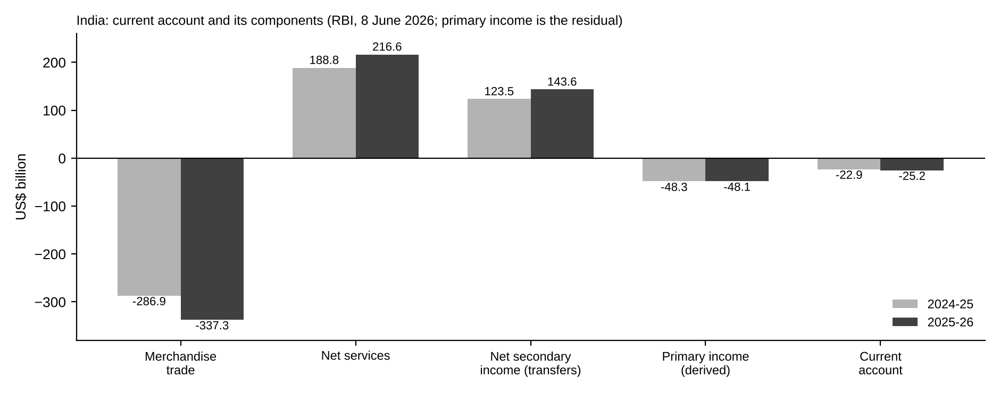
| (US$ bn) | 2024-25 | 2025-26 |
|---|---|---|
| Current account | −22.9 (0.6% of GDP) | −25.2 (0.6% of GDP) |
| Merchandise trade deficit | 286.9 | 337.3 |
| Net services receipts | 188.8 | 216.6 |
| Net secondary income (mostly remittances) | 123.5 | 143.6 |
| Net FDI (inflow) | 1.0 | 6.9 |
| Net FPI | +3.6 | −16.4 (outflow) |
| Reserves, BoP basis | −5.0 | −23.6 (a fall) |
Source: RBI, “Developments in India’s Balance of Payments during the Fourth Quarter of 2025-26”, 8 June 2026 (preliminary).
Reading the table:
External debt: US$762.8 bn at end-March 2026, 20.8% of GDP.
Causes of a persistent deficit: a high import bill (crude oil, gold, electronics), a loss of competitiveness (inflation above that of trading partners), weak global demand, a fall in remittances or capital inflows, and a fall in the exchange rate that raises the cost of imports.
Correction:
| Policy | Action | Comment |
|---|---|---|
| Expenditure-reducing | Tight fiscal and monetary policy lowers domestic demand and so imports | Costs growth and jobs |
| Expenditure-switching | Devaluation or depreciation, tariffs and export subsidies move demand from imports to domestic goods | Works only if demand for exports and imports is elastic |
| Capital-account measures | Attract FDI, NRI deposits, ECBs; allow Masala bonds | Adds liabilities; flows can reverse |
| Direct controls | Import curbs, exchange control | Distorts the economy |
| Borrowing | IMF facilities, bilateral swap lines, foreign loans | Conditionality; debt burden |
Marshall-Lerner condition. A depreciation improves the trade balance only if the sum of the price elasticities of demand for exports and imports exceeds one. In the short run both are low, so the balance first worsens and then improves: the J-curve. A devaluation also does not “necessarily” improve the trade balance, as the 2021 question below tests. In India’s case high-value imports (crude oil, gold, electronics) are inelastic, and imported inputs raise export costs, which weakens the effect.
Currency crisis protection. Services earnings and remittances reduce the risk of a currency crisis because they are stable foreign exchange inflows that do not have to be repaid. Dependence on short-term foreign borrowing raises the risk; capital flight following a tight US monetary policy raises the cost of existing foreign-currency loans.
Foreign exchange reserves expressed in months of imports: with reserves of about US$600 bn and monthly imports of about US$60 bn, reserves cover ten months of imports. The reserves stood at US$726.0 bn on 9 October 2026 (see the chapter on Forex, NEER, REER and Convertibility).
Previous-year questions (Vivek Singh, Indian Economy, 2.31 UPSC prelims)
Q1. Consider the following actions which the Government can take: [UPSC 2011]
Which of the above action/actions can help in reducing the current account deficit?
Answer: (d).
Q2. The balance of payments of a country is a systematic record of [UPSC 2013]
Answer: (a).
Q3. Which of the following constitute Capital Account? [UPSC 2013]
Answer: (b).
Q4. With reference to Balance of Payments, which of the following constitutes/constitute the Current Account? [UPSC 2014]
Answer: (c).
Q5. In the context of India, which of the following factors is/are contributor/contributors to reducing the risk of a currency crisis? [UPSC 2019]
Answer: (b).
Q6. The effect of devaluation of a currency is that it necessarily [UPSC 2021]
Answer: (a).
Mains (UPSC 2018): How would the recent phenomena of protectionism and currency manipulations in world trade affect macroeconomic stability of India?
The exchange rate is the price of one currency in another; effective exchange rates, reserves and convertibility describe how the rupee is priced, defended and opened to capital.
The rupee is demanded by foreigners buying Indian goods, services and assets, and supplied by Indians buying imports and foreign assets. FDI and FPI inflows push the rupee up; imports, outflows of foreign investors and a higher oil bill push it down.
A currency depreciates against another when its inflation is persistently higher. Illustration: if a burger costs Rs 20 in India and $1 in the US, and $1 = Rs 40, Americans buy Indian burgers. When Indian prices rise to Rs 30, exports slow, the demand for rupees falls and the rupee slides towards Rs 50 to the dollar, which restores competitiveness. This is the purchasing power parity (PPP) idea: over the long run the exchange rate moves to offset the inflation difference.
| System | Meaning | Example |
|---|---|---|
| Gold standard | Currencies fixed to gold and thus to each other | Before 1914; collapsed in the Great Depression |
| Fixed (pegged) rate | The central bank holds the rate at a fixed level, buying or selling as required | Bretton Woods system, 1944 to 1971-73 |
| Fixed and adjustable | A peg that is changed when the BoP requires | India, 1947 to 1993 |
| Free (clean) float | The market decides; the central bank does not intervene | US, Japan, euro area |
| Managed (dirty) float | The market decides, with central bank intervention to curb volatility | India since 1993 |
| Currency board | The domestic currency is fully backed by a foreign currency at a fixed rate | Hong Kong |
India’s history. In 1947 the rupee stood at about Rs 1 = $1. Adverse BoP and higher inflation than trading partners led to repeated devaluation, to about Rs 31 by 1993. After the 1991 crisis and reforms, the rupee was made market-determined in 1993 and since then has been a managed float. The RBI intervenes largely through public sector banks, aiming to contain volatility and not to hold a band.
The impossible trinity (Mundell-Fleming trilemma). A country cannot have all three of a fixed exchange rate, free capital mobility and an independent monetary policy; it can have any two.
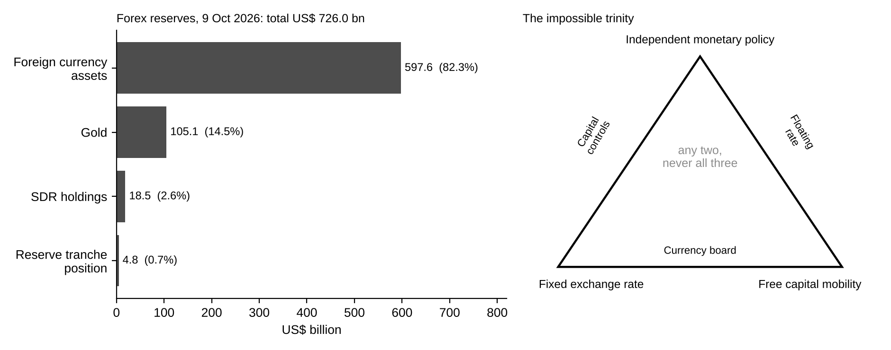
A bilateral exchange rate shows only the rupee against one currency. India trades with many countries, so the RBI publishes effective indices.
A rising REER is a real appreciation: the rupee has become dearer in real terms, Indian exports less competitive and imports cheaper. A falling REER is a real depreciation and improves competitiveness. A REER of 107 against the base of 100 means about 7% real appreciation since the base year; it is not by itself proof that the currency is overvalued.
The RBI publishes the 40-currency and 6-currency trade-weighted indices, with base 2015-16 = 100. REER values for the rupee reported in the press in 2026: 91.26 in June 2026, after a fall from 108.03 to 89.08; the RBI reads a REER below 100 as an undervalued rupee, and attributes the weakness to high crude oil prices, a stronger dollar, geopolitical tension and FPI outflows rather than to domestic deterioration.
Reserves are the external assets controlled by the RBI:
| Component (9 October 2026) | US$ bn | Share |
|---|---|---|
| Foreign currency assets | 597.6 | 82.3% |
| Gold | 105.1 | 14.5% |
| SDRs held | 18.5 | 2.6% |
| Reserve tranche position with the IMF | 4.8 | 0.7% |
| Total | 726.0 |
The reserves fell US$8.6 bn in that week and US$12.95 bn in the week before, but stood US$34.9 bn above their end-March 2026 level and US$28.2 bn above a year earlier. Foreign currency assets include the effect of valuation changes in non-dollar holdings.
Uses: meeting BoP gaps, intervening to calm the rupee, and giving confidence to creditors. The RTP is the part of India’s IMF quota (usually 25%) which it can draw without conditions; the question on “Gold Tranche” in the chapter on International Organisations tests the same idea.
Currency swap between two firms. Two firms in different countries borrow in their own market (where each is cheaper) and exchange the principal and then the interest, swapping back at maturity at the original rate. It hedges currency risk or gets cheaper funds.
Currency swap between central banks. One central bank exchanges its currency for that of another at a fixed rate, for a stated amount; a reversal at the same rate follows. It is an open line of credit: India can draw dollars or yen as needed, paying interest, and the other bank can take rupees. No exchange rate risk arises, since the terms are set in advance. The 2018 India-Japan swap was worth US$75 bn; in July 2020 India gave Sri Lanka a US$400 mn swap; the RBI also offers a framework of up to US$2 bn to SAARC central banks (2019-22 framework).
RBI forex swap (buy/sell). The RBI buys dollars from banks for rupees now and agrees to sell them back later at a higher rate (the premium, discovered in an auction). It injects rupee liquidity without buying government securities, as the RBI did in March 2019 when it had exhausted its open market operation space; the reverse (sell/buy) takes rupees out and gives dollars.
Current account convertibility. The rupee can be exchanged freely at the market rate for any current account transaction (imports, services, travel, remittances, interest). India accepted it as an obligation under Article VIII of the IMF in August 1994.
Capital account convertibility. Free exchange of the rupee for capital transactions. It is partial in India, through limits on ECBs, on foreign investment in government and corporate bonds, and on resident capital transactions. It is attractive because it raises inflows, but exposes a country to sudden reversals; it is meant to follow stable inflation, a low current account deficit and fiscal deficit, low external debt and a healthy financial sector.
Steps towards it:
Internationalisation of the rupee. An international currency is one freely available to non-residents for cross-border settlement. The sequence is current account transactions first, then capital transactions between residents and non-residents, and last use between two non-residents. The benefits flow only to a currency that is the preeminent reserve currency: immunity from BoP crises because deficits are paid in one’s own currency, seigniorage, less need for reserves, no currency risk for domestic firms. The preconditions are the size of the economy and share of world GDP, globally dominant firms and strength in security; regulation alone cannot achieve it.
Previous-year questions (Vivek Singh, Indian Economy, 2.31; UPSC prelims)
Q1. Convertibility of rupee implies [UPSC 2015]
Answer: (c).
Q2. Which one of the following is not the most likely measure the Government/RBI takes to stop the slide of the Indian rupee? [UPSC 2019]
Answer: (d).
Q3. If another global financial crisis happens in the near future, which of the following actions/policies are most likely to give some immunity to India? [UPSC 2020]
Answer: (a).
Q4. With reference to the Indian economy, consider the following statements: [UPSC 2022]
Answer: (b).
Trade policy is the set of tariffs, export incentives, trade remedies and agreements through which a government manages its exports and imports.
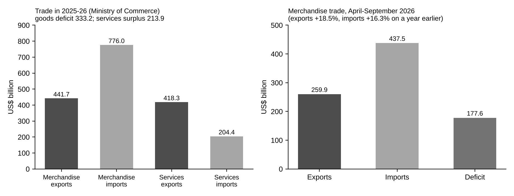
| US$ bn, 2025-26 | Exports | Imports | Balance |
|---|---|---|---|
| Merchandise | 441.74 (+0.9%) | 776.03 | −333.24 |
| Services | 418.31 (+7.9%) | 204.42 | +213.89 |
| Total | 860.05 | 980.45 | −119.30 |
Source: Ministry of Commerce, as reported by India Briefing (April 2026). Exports excluding petroleum were US$387.9 bn (+3.6%). China, the UAE, Russia, the US and Saudi Arabia were the main import sources.
April-September 2026: merchandise exports US$259.89 bn (+18.5%), imports US$437.53 bn (+16.3%), a deficit of US$177.6 bn (computed). In September 2026 exports rose 23% to US$44.4 bn, imports 8% to US$74.61 bn and the deficit narrowed to US$30.21 bn.
Services exports (software, business services, travel, transport) now almost match goods exports and are the main offset to the goods deficit.
The Directorate General of Foreign Trade (DGFT), under the Ministry of Commerce and Industry, administers the Foreign Trade Policy (FTP) under the Foreign Trade (Development and Regulation) Act, 1992. The policy lists what may be exported and imported, the incentives and the procedures. Three principles govern the incentives:
Zero rating under GST. Exports are zero rated: the exporter pays GST on inputs and on the export, and claims a full refund, so that no tax is exported.
RoDTEP (Remission of Duties and Taxes on Exported Products). Before GST, the Merchandise Exports from India Scheme (MEIS) gave exporters duty credit scrips worth a percentage of export value. The WTO ruled the scheme inconsistent with its rules, and in 2020 it was replaced by RoDTEP, available for all exports from 1 January 2021. It refunds the taxes still outside GST that are embedded in the product (VAT on fuel used in transport, mandi tax, electricity duty, petroleum taxes), credited to the exporter’s ledger with Customs and usable to pay basic customs duty on imports.
Export Promotion Mission. The Union Cabinet approved it on 12 November 2025, with an outlay of Rs 25,060 crore over six years, in two parts: Niryat Protsahan (export credit, interest equalisation, tools such as export credit cards for e-commerce exporters) and Niryat Disha (quality, market development, branding and infrastructure). It merges schemes such as the Interest Equalisation Scheme and the Market Access Initiative and is run by the DGFT through a digital platform.
Export finance. The Export-Import Bank of India (EXIM Bank) was set up in 1982 under the EXIM Bank of India Act to finance exporters and importers and lend to overseas institutions.
Logistics. Ports carry about 90% of EXIM trade by volume; logistics costs reduce competitiveness (see the chapters on Infrastructure).
The Foreign Trade Policy (FTP) 2023 came into force on 1 April 2023. Earlier policies ran for five years; this one has no end date and is updated by notification as needed (DGFT continues to amend it). Its target is US$ 2 trillion of exports (goods and services) by 2030. It moves from incentives to remission and entitlements that comply with WTO rules.
| Pillar or feature | What it does |
|---|---|
| Four pillars | (1) Incentive to remission; (2) export promotion through collaboration with States, districts and Indian missions; (3) ease of doing business, lower transaction cost and e-initiatives; (4) emerging areas such as e-commerce, developing districts as export hubs and streamlining SCOMET (controls on dual-use items). |
| Districts as Export Hubs | Each district prepares a District Export Action Plan. |
| Towns of Export Excellence (TEE) | Towns with a cluster of exporters get priority for support; four were added in 2023, bringing the total to 43. |
| Status holders | One-star to five-star export houses, on export performance; thresholds were lowered in 2023. |
| EPCG (Export Promotion of Capital Goods) | Import of capital goods at zero customs duty, against an export obligation of six times the duty saved over six years. |
| Advance Authorisation | Duty-free import of inputs that are physically incorporated in the export product. |
| RoDTEP and RoSCTL | Refund of embedded central, State and local duties and taxes not otherwise rebated; RoSCTL does this for apparel and made-ups. |
Tariff barriers: customs duties, and WTO-compliant remedies against unfair trade:
| Remedy | Trigger | Scope |
|---|---|---|
| Anti-dumping duty | Goods exported at a price below the exporter’s home price or cost | Country-specific; restores fair competition and is not protection as such |
| Countervailing duty (CVD) | The exporting government subsidises its exporters | Country-specific; also called anti-subsidy duty |
| Safeguard duty | A surge of imports of a product, whatever the source | Temporary, applies to all sources, to avert injury to domestic industry |
In India anti-dumping and countervailing investigations are done by the Directorate General of Trade Remedies (DGTR).
Non-tariff barriers: subsidies, public procurement preferences for domestic firms, technical barriers (standards such as zero pesticide residue), quotas, and sanitary and phytosanitary measures. Over 30% of products and 70% of global trade are affected by technical non-tariff measures.
Pakistan. India gave Pakistan Most Favoured Nation status in 1996 as a WTO member; it withdrew it in February 2019 after the Pulwama attack, using the security exception in Article XXI of GATT.
India has made FTAs a key part of trade policy since 2003-04. Its older FTAs are mostly in goods, with Asian partners: SAFTA (2004), the ASEAN agreement (2010), and bilateral agreements with Sri Lanka, Thailand, Singapore, Korea, Malaysia and Japan. A recent wave is in the table:
| Agreement | Status |
|---|---|
| UAE CEPA | In force May 2022; tariffs removed on about 80% of products; zero duty for about 90% of India’s exports to the UAE |
| Australia ECTA | In force December 2022; Australia gives preferential access on 100% of tariff lines, India on over 70% |
| EFTA TEPA (Switzerland, Norway, Iceland, Liechtenstein) | In force October 2025 |
| Oman CEPA | In force 1 June 2026 |
| UK CETA | In force 15 July 2026, with a Social Security Agreement |
| New Zealand | Signed April 2026; in force 20 October 2026 |
| European Union | Negotiations concluded 27 January 2026; signature expected in December 2026, and entry into force possibly early 2027 |
| United States | An interim framework announced 6 February 2026 cut the US tariff on Indian goods to 18% and removed a 25% penalty tied to Russian oil; a bilateral trade agreement is still under negotiation |
| Under negotiation | Canada, Chile, Peru, GCC, Israel, Maldives, SACU, Mercosur expansion; Korea and Australia upgrades |
Source for the table: India Briefing FTA tracker, updated 22 October 2026. United States tariffs: the US Supreme Court struck down tariffs imposed under the International Emergency Economic Powers Act in February 2026; a 10% global tariff under Section 122 followed for 150 days; on 24 July 2026 the US replaced it with a 10% Section 301 duty on 60 economies, including India. Steel, aluminium and certain auto parts remain under separate US Section 232 tariffs of 25% to 50%.
What the FTAs did. India’s FTAs raised trade with partners more than otherwise, but mostly imports, because India’s tariffs were higher and fell more.
RCEP. The Regional Comprehensive Economic Partnership, between ASEAN and its six FTA partners, was built on the ASEAN+1 agreements. India withdrew in November 2019, citing:
The cost of staying out: Indian exporters face higher tariffs than RCEP members, and investors who serve the whole region may prefer other locations. India can rejoin later.
Information Technology Agreement (ITA). India joined the ITA in 1996 (effective 1 July 1997), bound itself to zero duty on 217 IT products by 1 January 2005, and later declined to join the expanded ITA-II; critics say the first agreement mainly benefited China. India raised tariffs on mobile phones and parts, arguing that the new goods are outside ITA-I.
International trade runs on a gap in trust and time: the exporter wants payment before shipping, and the importer wants goods before paying. Banks and agencies bridge it with a few standard tools.
| Factoring | Forfaiting | |
|---|---|---|
| Receivables | Short-term (usually up to six months), many invoices, domestic or export | Medium-term (six months to several years), a few large export bills |
| Recourse | With or without recourse | Always without recourse |
| Services | Finance, ledger keeping, collection, credit protection | Finance and risk transfer only |
| Typical goods | Consumer and industrial goods, services | Capital goods, projects |
No previous-year questions on India’s trade policy, SEZs or FTAs are included here. The UPSC 2017 question on the Agreement on Agriculture is in the chapter on International Organisations and the WTO.
Foreign investment is the purchase of Indian capital instruments by non-residents: direct investment of 10% or more brings control and long-term capital, portfolio investment brings volatile funds.
It is divided into two kinds by a 10% threshold (the Arvind Mayaram committee rule):
| Test | |
|---|---|
| FDI | Investment in an unlisted Indian company, or in 10% or more of the paid-up equity of a listed company |
| FPI | Investment in less than 10% of the equity of a listed company; FPIs may also hold government and corporate bonds, which count as debt |
Rules:
Routes for FDI.
| FDI | FPI | |
|---|---|---|
| Entry | Mostly primary market; new shares issued | Mostly secondary market; ownership changes, no new capital to the company |
| Capital use | Builds factories, machines | None directly |
| Control | Board seats, active management | Minority stake, no management role |
| Aim | Profit from the business | Capital gain on the share price |
| Sector | Specific sector | Any sector offering gains |
| Horizon | Long term; stable; can be locked in | Short term; no lock-in; can leave at once |
| Effect on the rupee | Stable | Volatile: sudden outflows depress the rupee |
| Forms | Purchase of shares, joint venture, subsidiary | Purchase of shares or bonds |
The 2011 UPSC question below asks the same difference: FII adds capital availability in general, while FDI targets specific sectors.
| Instrument | Meaning |
|---|---|
| ADR / GDR | A depository receipt issued abroad by an overseas depository bank against shares of an Indian company held by a domestic custodian; ADRs trade in the US, GDRs elsewhere. Saves the cost of a direct listing |
| External commercial borrowing (ECB) | Commercial loans from non-residents to residents: bank loans, bonds, debentures, trade credit, foreign currency convertible bonds (FCCB), financial leases; in foreign currency or rupees |
| Masala bond | An ECB issued abroad but denominated in rupees: the investor bears the currency risk (a dollar bond leaves it with the borrower). Illustration: a bond of Rs 70 sold at $1 = Rs 70; if the rupee falls to Rs 80 the issuer repays Rs 70, which is only $0.875, so the investor loses |
| NRI deposits | Deposits in Indian banks by non-resident Indians |
The 2022 UPSC question below tests the risk of ECBs: a tight US monetary policy leads to capital flight, which raises the cost of servicing existing ECBs, while a fall in the rupee raises (not lowers) the currency risk on ECBs.
FDI classification. In the 2021 UPSC question below, the keyed answer counts FCCBs, conditional FII investment and GDRs as capable of being FDI, and NRI deposits as not.
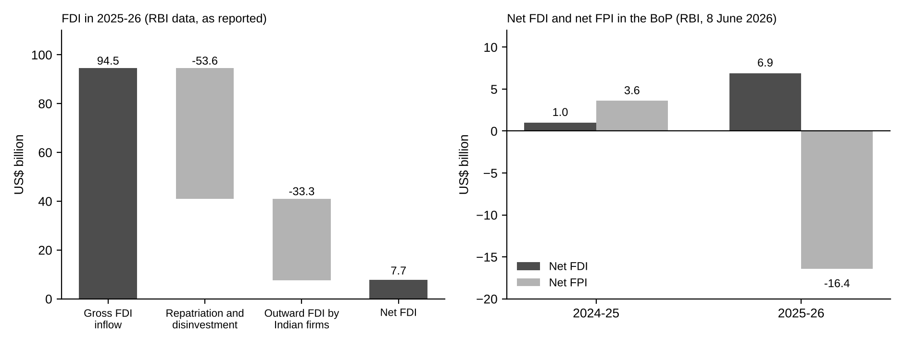
| US$ bn | 2024-25 | 2025-26 |
|---|---|---|
| Gross FDI inflow | 80.6 | 94.5 |
| Repatriation and disinvestment by foreign investors | 53.6 | |
| Outward FDI by Indian companies | 33.3 | |
| Net FDI (RBI BoP release, 8 June 2026) | 1.0 | 6.9 |
| Net FDI (as reported by a business newspaper from RBI data) | 1.0 | 7.7 |
| Net FPI | +3.6 | −16.4 |
Gross FDI is high, but net FDI is small because foreign investors take profits and exit through repatriation and Indian firms invest abroad. Net FDI was US$10.2 bn in 2023-24 and US$28 bn in 2022-23. The services sector led equity inflows in 2025-26.
FPI turned into an outflow of US$16.4 bn in 2025-26, with US$13.1 bn leaving in March 2026 alone (equity mostly). In April-June 2026 net FDI was US$6.1 bn and net FPI an outflow of US$9.6 bn (RBI, 1 September 2026).
Older figures: FDI inflow US$44.9 bn in 2017-18, US$44.4 bn in 2018-19, US$50 bn in 2019-20, US$59.6 bn in 2020-21 and US$58.8 bn in 2021-22; the main source countries were Singapore, Mauritius and the US, and the largest recipient States Karnataka, Maharashtra and Delhi (older data, not updated here).
Insurance. The sector was nationalised in 1972 and opened to private firms in 2000 (IRDA Act 1999) with an FDI cap of 26%. The cap went to 49% (automatic route) in February 2015 and to 74% in 2021. The Sabka Bima Sabki Raksha (Amendment of Insurance Laws) Act, 2025 (presidential assent 20 December 2025; commencement notified 5 February 2026; FDI policy amended 9 February 2026) raised it to 100%, and made these changes:
Insurance penetration (premium as a percentage of GDP) in 2020-21 was 2.82% for life and 0.94% for non-life; insurance density (premium per head, US$) US$58 and US$19. The Life Insurance Corporation held about 75% of the market (older data).
E-commerce. 100% FDI is allowed in the marketplace model (a platform linking buyers and sellers), none in the inventory model. The December 2019 rules say that a vendor in which the e-commerce company has a stake cannot sell on its portal; a vendor buying 25% or more of its inventory from a group company is treated as controlled and barred; no seller may be required to sell exclusively on the platform; and the platform may not influence prices through special incentives.
Land-border countries (Press Note 3, 2020). The 2020 rule requires government approval for any investment from, or with beneficial ownership in, countries sharing a land border with India. In March 2026 the government eased it: investors with non-controlling beneficial ownership of up to 10% may use the automatic route, in capital goods, electronic capital goods and components, polysilicon and ingot-wafers for solar cells; proposals are to be decided in 60 days; Indian citizens or entities must keep majority ownership and control; semiconductors stay restricted.
Other: food processing up to 100%; retail and defence have their own sector-specific caps.
GIFT (Gujarat International Finance Tec-City) has two zones: a domestic zone, where rupee transactions occur, and a Special Economic Zone that is India’s first International Financial Services Centre (IFSC), set up under the SEZ Act 2005. An IFSC offers financial services to non-residents and residents in any currency except the rupee, as an offshore centre on Indian soil (comparable to London or Singapore). Units are treated as non-residents; investment into them by Indians is ODI under the RBI rules. Resident individuals may invest up to US$250,000 per year under the LRS in the IFSC. The India International Exchange (India INX), a BSE subsidiary, lets foreign companies list shares, bonds and derivatives with tax concessions. The International Financial Services Centres Authority (IFSCA), set up in April 2020 under the IFSCA Act 2019 and headquartered at GIFT City, is the unified regulator of financial products, services and institutions in the IFSC; before it, the RBI, SEBI, PFRDA and IRDAI regulated these.
Previous-year questions (Vivek Singh, Indian Economy, 2.31 and 4.15; UPSC prelims)
Q1. Both Foreign Direct Investment (FDI) and Foreign Institutional Investor (FII) are related to investment in a country. Which of the following statements best represents an important difference between the two? [UPSC 2011]
Answer: (b).
Q2. With reference to ‘IFC Masala Bonds’, sometimes seen in the news, which of the statements given below is/are correct? [UPSC 2016]
Answer: (c).
Q3. Consider the following: [UPSC 2021]
Which of the above can be included in Foreign Direct Investments?
Answer: (a).
Q4. Consider the following statements: [UPSC 2022]
Answer: (a).
The IMF, the World Bank group and the World Trade Organization are the institutions that govern international money, development finance and trade.
In July 1944 representatives of 44 Allied nations met at Bretton Woods, New Hampshire, to rebuild the international economic order after the collapse of the gold standard, the Great Depression and the protectionism of the inter-war years. They proposed three institutions:
The IMF and the World Bank are the Bretton Woods twins. The ITO was never created (see GATT below).
| Purpose | International monetary cooperation; help with BoP problems; exchange rate stability; balanced trade; fewer limits on convertibility; surveillance of members’ policies and financial risks; technical assistance (training of officials in banking, finance and BoP); policy advice |
| Founded | 1944 (Bretton Woods); the Articles of Agreement came into force in December 1945. Headquarters: Washington, DC |
| Head | Managing Director (by convention a European), selected for five years: Kristalina Georgieva. First Deputy Managing Director: Dan Katz (announced October 2025) |
| Governance | Board of Governors is the highest body (each member’s finance minister or central bank governor); the Executive Board of 24 directors does the day-to-day work |
| Reports | World Economic Outlook, Global Financial Stability Report, Fiscal Monitor |
Quota. Each member is given a quota, in SDRs, calculated from a formula with these weights: GDP 50%, openness 30%, economic variability 15%, international reserves 5%. The quota is reviewed every five years and decides four things: (1) the subscription, or the maximum financial resources the member must provide; (2) voting power; (3) its share in SDR allocations; (4) the access to financing. A member pays up to 25% of the quota in SDRs or major currencies (dollar, euro, yen, pound, renminbi) and the rest in its own currency. A member can borrow up to 145% of its quota annually and 435% cumulatively, with higher access in exceptional cases.
Voting. Votes are the basic votes (equal for all) plus one vote for each SDR 100,000 of quota. Major decisions need an 85% majority, so a member with more than 15% of the votes (the US) has a veto. India’s share in the quota is 2.75% and its voting power 2.63% (sources differ slightly; some give 2.76%).
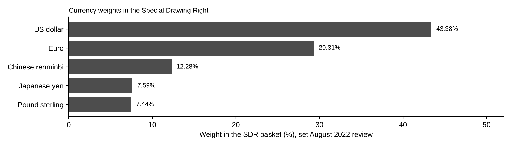
Lending. Short-term, conditional, non-concessional loans for policy reform, not for projects: Stand-by Arrangements, the Extended Fund Facility, Flexible Credit Line, Precautionary and Liquidity Line, Stand-by Credit Facility, Extended Credit Facility, Rapid Credit Facility and Rapid Financing Instrument (the last two give quick emergency help). The credit facilities for low-income countries are concessional.
India and the IMF. India is a founder member and a net lender; the RBI follows the IMF’s Special Data Dissemination Standard; the IMF’s regional training institute is in Delhi; India accepted current account convertibility under its commitments; national income accounting moved to market prices in 2015. India has argued for open, merit-based selection of the heads, more basic votes, more resources and a double majority for major decisions.
The World Bank is the IBRD and the IDA; the World Bank Group has five institutions. Membership of the Bank is conditional on membership of the IMF. Headquarters: Washington, DC. By convention the President is from the US, and votes depend on share capital (one share of US$1 lakh carries one vote, plus basic votes).
| Institution | Role |
|---|---|
| IBRD (1944) | Lends at interest to middle-income and creditworthy poorer countries; raises most of its funds in the capital markets (AAA-rated since 1959) |
| IDA (1960) | Interest-free credits and grants to the poorest countries; funded by contributions of governments plus IBRD and IFC |
| IFC | Largest development institution focused on the private sector; investment, mobilising capital, advice |
| MIGA (1988) | Political risk insurance (guarantees) to foreign investors in developing countries |
| ICSID | Conciliation and arbitration of investment disputes between investors and States. India is not a member (it objects to foreign tribunals bypassing domestic courts, lack of appeal and perceived pro-investor bias) |
World Bank lending is long-term (25 to 30 years), usually concessional, for both policy reform and projects; the IMF lends only for policy reform, short term. The reports are the World Development Report, Global Economic Prospects, International Debt Statistics, a remittances and migration report; the Ease of Doing Business report was published until it was discontinued after data irregularities.
| Asian Infrastructure Investment Bank (AIIB) | New Development Bank (NDB, BRICS bank) | |
|---|---|---|
| Set up | 2016, Beijing | 2015, Shanghai |
| Purpose | Infrastructure in Asia: energy, transport, telecoms, rural and agricultural infrastructure, water and sanitation, urban development; sovereign and non-sovereign financing | Infrastructure and sustainable development in BRICS and other emerging economies; loans, guarantees, equity |
| Membership | Open to members of the IBRD or the Asian Development Bank | All UN members may join; BRICS share of votes never below 55% |
| Capital and votes | China holds the largest vote, 27.5%; India 7.9% (older data) | Initial subscribed capital US$50 bn, US$10 bn from each of the five founders; votes equal subscribed shares; Bangladesh, UAE, Uruguay and Egypt later admitted |
GATT 1947. Fifteen countries began tariff talks in December 1945; the General Agreement on Tariffs and Trade was signed by 23 countries in Geneva on 30 October 1947, with 45,000 tariff concessions covering US$10 billion of trade, and applied provisionally from 1948. The ITO charter (Havana, concluded March 1948) was never ratified, mainly because of opposition in the US Congress, and in 1950 the US dropped it. GATT, intended as a stop-gap, ran world trade for nearly fifty years, through rounds named for the place where the round began.
Uruguay Round (September 1986 to April 1994), the eighth round: extended the system to services and intellectual property and the sensitive area of agriculture, and created a new institution with a dispute settlement system and a Trade Policy Review Mechanism. It was signed at Marrakesh on 15 April 1994 by ministers from 123 countries and took effect on 1 January 1995, when the World Trade Organization (WTO) was born, with about 60 agreements: the WTO Agreement, GATT 1994, GATS, TRIPS, the Trade Policy Review Mechanism, dispute settlement and the Agreement on Agriculture.
Why a WTO replaced GATT: GATT was provisional; services were outside it; globalisation; and dispute settlement had no fixed timetable, so rulings could be blocked.
Principles of the WTO:
| Principle | Meaning |
|---|---|
| Non-discrimination: Most Favoured Nation (MFN) | A trade concession given to one member must be given to all. Exceptions: FTAs; the security exception (GATT Article XXI; India used it against Pakistan in 2019); special and differential treatment and the Generalised System of Preferences (GSP) for developing countries |
| National Treatment | Once imported goods have cleared the border, they must be treated like domestic goods (the customs duty is not a breach) |
| Freer trade, gradually | Progressive liberalisation; developing countries get longer to comply |
| Binding commitments | Tariffs are bound as ceilings; they can be raised only after negotiation and compensation |
| Transparency | Members publish rules and notify them; Trade Policy Review Mechanism reviews each |
| Single undertaking | All agreements are one package, accepted as a whole |
Decisions are by consensus; where it fails, a vote with one country, one vote (unlike the IMF and World Bank).
Structure: the Ministerial Conference (the supreme body, meets every two years; appoints the Director-General), the General Council (day-to-day), the Dispute Settlement Body (with panels and an Appellate Body), the Trade Policy Review Body, and Councils for Goods, Services and Intellectual Property. The Director-General is Ngozi Okonjo-Iweala (since 2021, the first woman and first African). The Appellate Body has been unable to function since 2019 because members have blocked appointments, so losing parties can “appeal into the void”.
Goods and related.
| Agreement | Content |
|---|---|
| GATT 1994 | Rules for trade in goods |
| SPS (Sanitary and Phytosanitary) | Food safety and animal and plant health standards; allowed if scientific and not arbitrary; may exceed international standards with scientific justification |
| TBT | Technical standards must not be a disguised barrier |
| Agreement on Agriculture (AoA) | Disciplines on farm subsidies (below) |
| Information Technology Agreement (ITA) | A plurilateral agreement: zero duty on a list of IT goods (see Trade Policy) |
| TRIMs | Bans investment measures that distort trade: local content requirements, export obligations, domestic employment requirements, technology transfer. It covers goods, not services, and is not a regulation of foreign investment as such; developing countries have limited exemptions |
Agreement on Agriculture: the boxes.
| Box | Content | Status |
|---|---|---|
| Green | No or minimal trade distortion: research, infrastructure such as irrigation, public stockholding for food security, domestic food aid, direct payments not linked to production | Allowed |
| Blue | Payments on fixed area or number of livestock, with production limits | Allowed |
| Development measures and de minimis | Investment and input subsidies to low-income farmers; support below 10% of the value of production for a developing country (5% for a developed one) | Allowed |
| Amber | All other support, measured by the Aggregate Measurement of Support (AMS): price support is output × (administered price − external reference price) | Capped and to be reduced |
India’s worry is that its price support (MSP-based procurement by the FCI, distributed through the public distribution system) could breach the 10% cap. At Bali (December 2013) members agreed a peace clause: no member would challenge a developing country for breaching the cap in food security programmes. Intended to last until December 2017, it was replaced after Indian bargaining by an open-ended commitment: until a permanent solution on public stockholding is found, no member can challenge, but only for programmes that existed at that time. Foodgrains from public stocks may not be exported.
Services: GATS. Effective 1 January 1995. It does not require deregulation or privatisation; services supplied by the government and not commercially are excluded; each member decides which sectors to open and to what extent in its schedule; governments must regulate reasonably and publish rules. Further liberalisation is part of the Doha agenda.
Intellectual property: TRIPS. Effective 1 January 1995; India’s deadline was 1 January 2005. It sets minimum standards, builds on the Paris Convention (industrial property) and the Berne Convention (copyright), requires enforcement with deterrent penalties, and includes technology transfer provisions for least developed countries. India amended the Patents Act 1970 in 2002 (compulsory licensing, section 84) and 2005 (product patents for drugs, which the 1970 Act did not permit).
| Right | Protects | Term and Indian law |
|---|---|---|
| Copyright | The expression of ideas (books, songs, films, software); automatic | 60 years after the author’s death or publication; Copyright Act 1957 |
| Patent | Inventions (the idea); must be registered | 20 years from filing; Patents Act 1970 |
| Trademark | Names, logos, signs | Indefinite, renewable; Trade Marks Act 1999 |
| Trade secret | Confidential business information | As long as it is secret; no registration; must be secret, commercially valuable and protected |
| Geographical indication (GI) | Products whose quality comes from their place of origin (Basmati, Banglar Rasogolla) | Ten years, renewable; GI Act 1999, in force from 15 September 2003 |
| Industrial design | Ornamental or aesthetic features | Ten years from registration; Designs Act 2000 |
Generic drugs and compulsory licences. A generic drug has the same active ingredient as the branded one and is sold after the patent expires. Under a voluntary licence the patentee permits others. A compulsory licence lets the government permit others to produce the drug without the owner’s consent, on payment of royalty: on application by a manufacturer after failed negotiation (section 84 of the Patents Act) or in a national emergency or extreme urgency (section 92). “Evergreening” is extending patents by minor changes without improving efficacy; the Indian law is designed to prevent it. The National IPR Policy (DPIIT, May 2016) has seven objectives (awareness, generation of IPR, strong laws, modern administration, commercialisation, enforcement, human capital).
Doha Development Agenda (launched in Doha in November 2001; deadline 1 January 2005 missed): lower trade barriers with a focus on development and special and differential treatment; agriculture, services, intellectual property and trade facilitation. It has not concluded.
| Conference | Outcome |
|---|---|
| MC12, Geneva, June 2022 | Agreement on fisheries subsidies (bans support for illegal, unreported and unregulated fishing, for fishing of overfished stocks and for fishing on the unregulated high seas; comes into force when two-thirds accept it); moratorium on customs duties on electronic transmissions continued until MC13; TRIPS waiver for Covid-19 vaccines (compulsory licensing); statement on food security (World Food Programme purchases exempt from export restrictions); a commitment to WTO reform |
| MC13, Abu Dhabi, 2024 | Held in Abu Dhabi |
| MC14, Yaoundé, Cameroon, March 2026 | Ended on 30 March 2026 without agreement; talks to resume in Geneva. No deal on extending the e-commerce moratorium (the US wanted a long extension, Brazil about two years; India had resisted, then showed openness); the draft declaration on WTO reform deferred substance to MC15; no convergence on dispute settlement; India proposed a 25-year transition for developing countries on fisheries subsidies; China’s Investment Facilitation for Development initiative, which India opposes, was not adopted |
India has argued in the reform debate for preserving the core values of the multilateral system, resolving the dispute settlement impasse, safeguarding development concerns and transparency.
Besides the global bodies above, India belongs to several regional and plurilateral groupings. The table lists the founding facts and the current position as of October 2026.
| Grouping | Founded and base | Members | Current position |
|---|---|---|---|
| SAARC (South Asian Association for Regional Cooperation) | 1985, Dhaka; secretariat in Kathmandu | 8 | SAFTA signed 2004, in force 1 January 2006; intra-regional trade about 5% of members’ trade; the 18th summit (Kathmandu, 2014) was the last, the 19th (Pakistan, 2016) was cancelled; South Asian Development Fund in Thimphu |
| BIMSTEC (Bay of Bengal Initiative for Multi-Sectoral Technical and Economic Cooperation) | 1997 as BIST-EC; renamed 2004; secretariat in Dhaka from 2014 | 7 | Seven priority sectors since 2022; 6th summit in Bangkok, 2025; free trade agreement framework signed, negotiations continue |
| ASEAN (Association of Southeast Asian Nations) | 1967, Bangkok; secretariat in Jakarta | 11 (Timor-Leste joined on 26 October 2025) | ASEAN+3 from 1997; East Asia Summit from 2005; RCEP has 15 members and India left the talks in 2019 |
| SCO (Shanghai Cooperation Organisation) | 2001; successor to the Shanghai Five of 1996; secretariat in Beijing | 10 (India and Pakistan 2017, Iran 2023, Belarus 2024) | Security, economic and cultural cooperation; 2026 summit at Bishkek |
| BRICS | Five founders: Brazil, Russia, India, China, South Africa | Founders plus Egypt, Ethiopia, Iran, the UAE (2024) and Indonesia (2025); 10 partner countries | India chairs in 2026; 18th summit at New Delhi on 12 to 13 September 2026, theme “Building for Resilience, Innovation, Cooperation and Sustainability”; no common currency, work is on payment interoperability and local-currency settlement |
| New Development Bank (NDB) | Agreement 2014; operational 2015; Shanghai | BRICS members and others admitted later | Authorised capital US$100 bn, initial subscribed US$50 bn; president Dilma Rousseff since March 2023; lends increasingly in local currencies |
| Asian Infrastructure Investment Bank (AIIB) | Opened January 2016; Beijing | 111 members (January 2026) | Authorised capital US$100 bn; share of capital: China about 29.8%, India second at about 8.4% (the multilateral banks section above gives voting shares from an older source) |
| G20 | Finance-ministers forum from 1999; leaders’ summits from 2008 | 19 countries plus the European Union and the African Union | Presidency: South Africa 2025 (Johannesburg summit); United States 2026 (summit at Doral, Miami, 14 to 15 December 2026) |
Of these, SAARC is dormant, BIMSTEC is the active South Asia and Bay of Bengal forum, and BRICS, SCO, NDB and AIIB link India with large non-Western economies. The G20 sets the agenda of the largest economies; India held the presidency in 2023.
Previous-year questions (Vivek Singh, Indian Economy, 13.17; UPSC prelims)
Q1. The terms ‘Agreement on Agriculture’, ‘Agreement on the Application of Sanitary and Phytosanitary Measures’ and ‘Peace Clause’ appear in the news frequently in the context of the affairs of the: [UPSC 2017]
Answer: (c).
Q2. “Gold Tranche” (Reserve Tranche) refers to [UPSC 2020]
Answer: (d).
Q3. With reference to Trade-Related Investment Measures (TRIMS), which of the following statements is/are correct? [UPSC 2020]
Answer: (c).
Q4. “Rapid Financing Instrument” and “Rapid Credit Facility” are related to the provisions of lending by which one of the following? [UPSC 2022]
Answer: (b).
Mains (UPSC 2013): Food Subsidy Bill is expected to eliminate hunger and malnutrition in India. Critically discuss various apprehensions in its effective implementation along with the concerns it has generated in WTO.
Mains (UPSC, World Economy): How would the recent phenomena of protectionism and currency manipulations in world trade affect macroeconomic stability of India? How has globalisation led to a reduction of employment in the formal sector of the Indian economy; is increased informalisation detrimental to the development of the country?
Chapters 36 to 47
The Indian economy moved from a colonial inheritance through a controlled mixed economy to the reforms of 1991, and from agriculture directly to services.
The Indian economy at independence was a colonial economy: its structure had been shaped, since the 1750s, to serve British industry. India exported food, raw cotton, jute, oilseeds and minerals and imported British manufactures, from machinery to railway engines.
India’s leaders wanted rapid growth within a democracy. Nehru was drawn to socialism but not to the Soviet model, where the state owned all factories and farms and private property did not exist. The path chosen was a mixed economy: a strong public sector, a private sector inside the plan, private property and democracy. The Directive Principles and the Industrial Policy Resolutions reflected it. The Planning Commission was set up in 1950 (see the chapter on Planning and NITI Aayog).
| Policy | Content |
|---|---|
| Industrial Policy Resolution (IPR) 1948 | First industrial policy (April 1948); began the mixed economy. Four groups: state monopolies (arms and ammunition, atomic energy, railways); basic industries (coal, iron and steel, shipbuilding, aircraft, telecommunications, mineral oils), under the Centre, but existing private firms could continue; regulated industries (automobiles, heavy machinery, chemicals, fertilisers, sugar, paper, cement, textiles); private industries (all others, including cooperatives) |
| Industries (Development and Regulation) Act 1951 | Industrial licensing: controlled entry, expansion, technology, output mix, location and import content. The legal base of the Licence Raj |
| IPR 1956 | After Parliament accepted a “socialist pattern of society” (December 1954). Schedule A: 17 industries exclusive to the state (iron and steel, mining, machine tools, heavy electrical plant). Schedule B: industries where the state takes the lead and private firms supplement. Schedule C: open to the private sector |
Why a large public sector? The “big push” argument: early industrialisation needs many industries to appear together, and no private entrepreneur will build an aluminium plant unless another builds the aircraft factory. The state’s “commanding heights” supplied the skeleton around which a market economy could grow. HAL and IDPL, for example, seeded the aerospace and drug industries.
The 1956-57 balance of payments crisis, at the start of the Second Plan, brought stringent import and foreign exchange controls.
| Feature | What it did | Result |
|---|---|---|
| Industrial licensing | Aimed at planned investment, curbing monopoly, regional balance and protecting small producers. First-come-first-served allowed big houses to pre-empt capacity with multiple early applications | Delays, rent-seeking and barriers to entry; competition and growth suffered |
| MRTP Act 1969 | Business groups above an asset limit (Rs 20 crore) were treated as monopolies and could not expand freely. Limit raised fivefold to Rs 100 crore in the mid-1980s; the Act was scrapped in September 1991 | Lost economies of scale. Replaced by the competition law, now the Competition Commission of India (2002) |
| Reservation for small-scale industry | First SSI definition 1955; 47 items reserved in 1967; over 800 by March 1987 | Small units lacked capital and technology; after 1991 imports of the same goods flooded in. De-reserved fully by April 2015 |
| Import substitution (ISI) | Heavy tariffs and quotas protected domestic industry | Deepened the industrial base and reduced dependence, but bred inefficiency; India missed the export-oriented route taken by East Asia |
| Nationalisation | 14 major banks 1969; insurance 1972; coal 1973; sick textile mills taken over | State ownership of finance and basic industry |
| FERA 1973 | Restricted foreign investment and foreign firms | One of the hardest destinations for foreign capital. Replaced by FEMA in 1999 |
Between 1950 and 1990 India’s growth averaged under 4% a year, while other developing countries grew over 5%. Public enterprises, expected to generate savings, became consumers of the community’s savings.
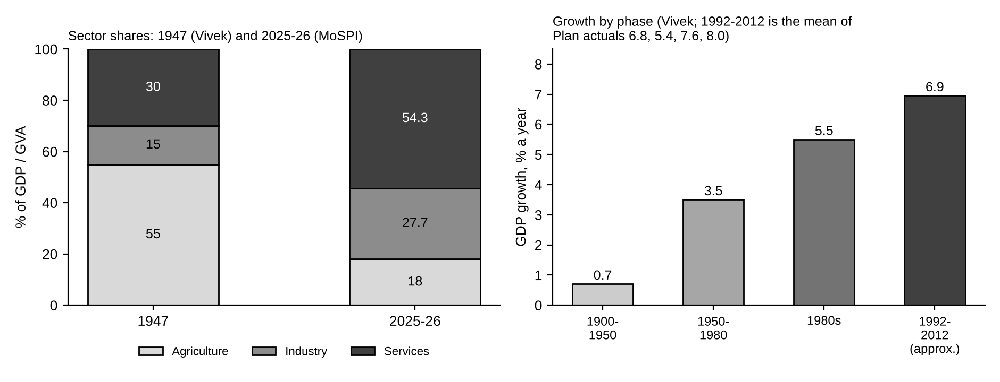
| Period | Growth (% a year) | Savings / investment (% GDP) |
|---|---|---|
| 1900-1950 | 0.7 | |
| 1950-1965 | 3.5 | 11 / 14 |
| 1965-1980 | 3.5 | 20 / 22 (by 1980) |
| 1980s | 5.5 |
Source: Vivek Singh, Indian Economy; savings and investment figures for 1950, 1965 and 1980.
Poverty fell in the Indira Gandhi years mainly because the Green Revolution raised farm output (most of the poor were in rural India), not because of anti-poverty programmes, which were too recent.
Background. By 1990-91 the fiscal deficit was 8.4% of GDP, the current account deficit 3.1%, inflation 17%, and exports covered only about 55% of imports. The Gulf War (Iraq’s invasion of Kuwait, August 1990) raised oil prices and cut Gulf remittances and exports. Short-term debt was about US$6 bn, of which US$2 bn was rolled over overnight; NRI deposits of over US$10 bn were being withdrawn; by June 1991 reserves were about US$1 bn, not enough for a fortnight of imports. India pledged 67 tonnes of gold to the Union Bank of Switzerland and the Bank of England to raise over US$600 million, and its credit rating was downgraded. The IMF’s support came with conditions.
Political chronology. V.P. Singh (1989-90), Chandra Sekhar (1990-91, with Yashwant Sinha as Finance Minister; the March 1991 budget was never presented), then P.V. Narasimha Rao (Prime Minister from 21 June 1991) with Dr Manmohan Singh as Finance Minister, who presented the budget on 24 July 1991.
The reforms moved in three directions: dismantle licences and controls, reduce the bias to state ownership, and abandon the inward-looking trade policy.
| Area | Measures |
|---|---|
| Fiscal stabilisation | Export subsidies abolished (1991-92); fertiliser subsidy partly restructured (1992-93); budget support to loss-making PSUs phased out |
| Industrial policy | Licensing abolished except for a short list (environment, safety and security reasons); MRTP controls removed; public sector reservation pruned; power, hydrocarbons, air transport and telecom opened to the private sector |
| Foreign investment | Automatic approval for foreign equity up to 51% in 34 industries (earlier ceiling generally 40%); FERA replaced by FEMA (1999) |
| Trade and exchange rate | Quantitative restrictions on raw materials and capital goods removed; customs duty lowered from an average of about 200% to 65%; rupee devalued in July 1991 (about 24%); market-determined exchange rate from March 1993; current account convertibility, capital account partial |
| Tax reforms | Top personal income tax rate 56% to 40%; corporate rate for listed companies 51.75% to 46% |
| Public sector | Limited disinvestment with the government retaining 51% and control; PSUs to finance investment from internal resources or markets; sick units restructured or closed |
| Financial sector | New private banks licensed; SEBI given statutory powers (April 1992); portfolio investment opened and GDR issues allowed; Capital Issues Control Act repealed (May 1992) |
Today only a handful of industries need an industrial licence (tobacco, alcoholic drinks, hazardous chemicals, industrial explosives, and defence aerospace and warships), and reservation for the public sector is limited to atomic energy and railway operations. Two kinds of disinvestment are distinguished: token (minority sale, public ownership kept) and strategic (51% or more sold, with transfer of management); DIPAM is the nodal department.
Short-term results: inflation fell from a peak of 17% (August 1991) to about 8.5% in 2.5 years; reserves rose from about US$1.2 bn (June 1991) to over US$15 bn in 1994; growth recovered from 1.1% (1991-92) to 4% (1992-93); the fiscal deficit fell from 8.4% to 5.7% (1992-93); exports more than doubled between 1990-91 and 1993-94.
Economies normally move from agriculture to manufacturing and then to services. India moved from agriculture directly to services.
| Share of GVA (current prices) | 1947 | 2022-23 | 2025-26 (PE) |
|---|---|---|---|
| Agriculture, forestry, fishing | 55% | 16% | 18.0% |
| Industry (mining, manufacturing, utilities, construction) | 15% | 30% | 27.7% |
| Services | 30% | 54% | 54.3% |
Sources: 1947 and 2022-23 from Vivek Singh (2022-23 shares are in the old series, with a 43% / 25% / 32% labour force split). 2025-26: MoSPI provisional estimates, 5 June 2026, new GDP series with base year 2022-23 (agriculture 56.65, industry 87.36, services 170.85 lakh crore of GVA of 314.87 lakh crore; shares computed from the published sector values). Within industry in 2025-26, manufacturing was 14.8% and construction 8.4% of GVA.
Why manufacturing lagged. Manufacturing needs:
Services such as software, education and banking can start on a rented floor.
Why services leapt. Entrepreneurial energy, held back by licensing, the MRTP Act, FERA and reservation, was released by the 1991 opening, which coincided with the internet and telecom revolution.
Employment. In the Periodic Labour Force Survey for calendar year 2025, agriculture still employed about 43.0% of workers and manufacturing 12.1%; the unemployment rate was 3.1% and the labour force participation rate 59.3%. The sectors’ share of output and of jobs diverge sharply: agriculture is about 18% of GVA but 43% of employment.
The new GDP series. MoSPI released a new series with base year 2022-23 in February 2026. It uses better data on the informal sector (ASUSE and PLFS) and dropped the single-deflator method. Real growth for 2025-26 is 7.7% (GVA 7.9%), with nominal GDP of Rs 346.36 lakh crore. Provisional sector growth in 2025-26: agriculture 3.0%, manufacturing 10.7%, construction 7.4%, trade, hotels and transport 11.0%, financial, real estate and professional services 10.4%.
Previous-year questions (Vivek Singh, Indian Economy, 6.7)
Q1. Which of the following has/have occurred in India after its liberalization of economic policies in 1991? [UPSC 2017]
Select the correct answer using the codes given below.
Answer: (b).
Mains (UPSC 2014): Normally countries shift from agriculture to industry and then later to services, but India shifted directly from agriculture to services. What are the reasons for the huge growth of services vis-a-vis industry in the country? Can India become a developed country without a strong industrial base?
Planning is the deliberate direction of resources towards national goals; India planned through the Planning Commission and Five Year Plans until 2014 and now through NITI Aayog.
Two kinds of planning are distinguished. Imperative planning is centralised, with the state controlling all aspects (socialist countries). Indicative planning sets broad principles, supports the private sector and directs it to areas, without controlling it. Indian planning was imperative in the public sector and indicative for the private one; from the early 1990s (Eighth Plan, 1992-97) the emphasis shifted to indicative planning. Plans also carried a twenty-year perspective plan.
| Plan | Year | By | Focus |
|---|---|---|---|
| Visvesvaraya Plan | 1934 | Sir M. Visvesvaraya | Ten-year plan to double national income |
| National Planning Committee | 1938 | Indian National Congress (Subhas Chandra Bose, President; Jawaharlal Nehru, Chairman) | Heavy industry, state-led basic industries |
| Bombay Plan | 1944 | J.R.D. Tata, G.D. Birla and other industrialists | Rs 10,000 crore, 15 years; state presence in core sectors without displacing the private sector |
| Gandhian Plan | 1944 | Sriman Narayan Agarwal | Agriculture and village and cottage industries |
| People’s Plan | 1945 | M.N. Roy (Post-war Reconstruction Committee of Indian Trade Unions) | Priority to agriculture; consumer goods; transport and communication |
| Sarvodaya Plan | 1950 | Jayaprakash Narayan | Small and cottage industry with agriculture; land reform; freedom from foreign technology |
The Planning Commission was set up by an executive resolution of the Government of India on 15 March 1950, after the Advisory Planning Board of 1946 (chaired by K.C. Neogy). It was extra-constitutional and non-statutory; its mandate drew on the Directive Principles, especially Article 39(b) and (c). The Prime Minister was Chairman (Nehru was the first), with a full-time Deputy Chairman of Cabinet rank, full-time expert members and some Union ministers.
Its functions: assess the material, capital and human resources and find ways to add to scarce ones; draw up a plan for their balanced use; define stages and priorities; identify factors retarding development; specify the conditions and the machinery for successful implementation; appraise progress periodically and recommend adjustments.
The National Development Council (NDC), formed on 6 August 1952 by executive resolution, brought the states in: the Prime Minister (Chairman), Union Cabinet ministers, all Chief Ministers, Administrators of Union Territories and Planning Commission members. It approved the Five Year Plans.
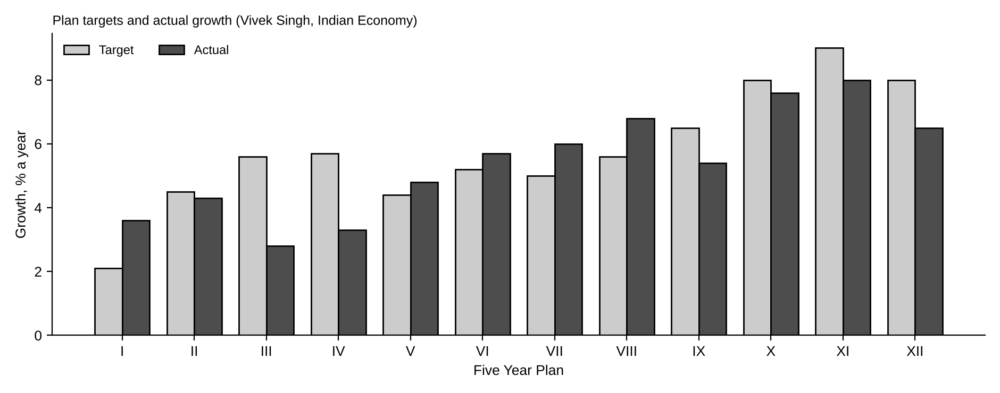
| Plan | Period | Target / actual growth (%) | Features |
|---|---|---|---|
| First | 1951-56 | 2.1 / 3.6 | Harrod-Domar model. Agriculture, irrigation (Bhakra, Hirakud), power, transport, price stability, refugee rehabilitation; good harvests in the last two years. Successful |
| Second | 1956-61 | 4.5 / 4.3 | Mahalanobis plan: heavy and basic industry in the public sector, import-substituting, financed by foreign loans; steel plants at Bhilai, Durgapur and Rourkela. Forex shortage forced pruning; prices rose. Moderately successful |
| Third | 1961-66 | 5.6 / 2.8 | “Self-reliant and self-generating” economy, agriculture given top priority. Failed: wars of 1962 and 1965, drought of 1965-66 |
| Plan holiday | 1966-69 | Three Annual Plans | Rupee devaluation and inflationary recession; new agricultural strategy (high-yielding seeds, fertiliser, irrigation) |
| Fourth | 1969-74 | 5.7 / 3.3 | “Growth with stability and progressive self-reliance”; Gadgil formula for state assistance; considered a failure |
| Fifth | 1974-79 | 4.4 / 4.8 | Garibi Hatao and self-reliance; prepared under D.P. Dhar amid oil-price inflation. Ended a year early by the Janata government |
| Rolling Plan | 1978-80 | Janata government’s plan emphasising employment, critical of the Nehru model | |
| Sixth | 1980-85 | 5.2 / 5.7 | Poverty and unemployment reduction, modernisation |
| Seventh | 1985-90 | 5.0 / 6.0 | “Food, work and productivity”. Very successful |
| Annual Plans | 1990-92 | Political uncertainty; the 1991 crisis | |
| Eighth | 1992-97 | 5.6 / 6.8 | Launched with the 1991 reforms; indicative planning |
| Ninth | 1997-2002 | 6.5 / 5.4 | “Growth with social justice and equality”; reliance on the private sector and FDI; the state as facilitator |
| Tenth | 2002-07 | 8.0 / 7.6 | Eleven monitorable targets besides growth (literacy, mortality, drinking water, gender gaps) |
| Eleventh | 2007-12 | 9.0 / 8.0 | “Towards faster and more inclusive growth” |
| Twelfth | 2012-17 | 8.0 / 6.5 | “Faster, sustainable and more inclusive growth”. The last Plan |
Source: Vivek Singh, Indian Economy. Some compilations give slightly different actuals for a few Plans (for example 6.7% for the Twelfth).
Harrod-Domar. Growth is g = s / ICOR, where s is the savings rate and ICOR the incremental capital-output ratio (capital needed for one unit of extra output). With savings of 20% of GDP and an ICOR of 4, growth is 5%. With capital scarce, the First Plan stressed mobilising savings and putting them into high-multiplier assets such as dams and canals.
The Mahalanobis strategy. The Second Plan used a four-sector model: capital goods (K), factory consumer goods, household and cottage consumer goods, and services and agriculture. The axiom: to make consumer goods in the future, India must first build machines that make machines. A larger share of investment in capital goods lowers output at the start (long gestation) but yields more output, including consumer goods, in the long run. Small and cottage industries were to supply consumer goods and jobs.
Results of the model. It deepened capital goods industries (machine tools, heavy electricals, steel), but growth was slow, agriculture and consumer industry were starved, primary education was neglected for higher technical education (the first IITs and IIMs date from this period), and the public sector failed to generate surpluses. Poverty showed no trend, falling in good farm years and rising in bad ones.
The Gadgil formula. From the Fourth Plan, central plan assistance to states was distributed by formula, ending discretion: population carried the largest weight (60%), the rest going to per capita income, tax effort and special problems. A revised version (the Gadgil-Mukherjee formula, 1991) gave population 60%, income distance 25%, fiscal performance 7.5% and special problems 7.5%.
On 15 August 2014 the Prime Minister announced the end of the Planning Commission. The Union Cabinet created NITI Aayog (National Institution for Transforming India) by resolution on 1 January 2015. No Thirteenth Plan was prepared.
Objectives:
| Organ | Composition |
|---|---|
| Chairperson | Prime Minister |
| Vice-Chairperson | Appointed by the Prime Minister, Cabinet rank. Predecessors: Arvind Panagariya, Rajiv Kumar, Suman Bery. Ashok Kumar Lahiri was appointed on 25 April 2026 |
| Governing Council | Prime Minister, Chief Ministers of all states and Union Territories (with legislatures), Lieutenant Governors of the other Union Territories. Absorbs the old NDC |
| Regional Councils | Formed for specific regional issues (for example the North-East) |
| Full-time members | Experts of Minister of State rank |
| Ex-officio members | Up to four Union ministers nominated by the Prime Minister |
| CEO | Secretary-rank officer appointed for a fixed tenure |
| Hubs | Team India Hub (state-Centre interface); Knowledge and Innovation Hub |
Planning horizons. A 15-year Vision, a 7-year Strategy (Strategy for New India @ 75) and a 3-year Action Agenda (2017-20) replaced the five-year cycle. The current long-term goal is Viksit Bharat @2047. The 11th Governing Council meeting, held on 11 June 2026, had the theme “Inclusive Human Development for Viksit Bharat @2047”, built on four pillars: foundational human capital and future-ready skills; productive employment, entrepreneurship and decentralised growth; health, nutrition and well-being; equity and dignity for all.
| Planning Commission (1950-2014) | NITI Aayog (2015-) | |
|---|---|---|
| Role | Advisory, but allocated funds to ministries and states | Think tank; no power to allocate funds (Ministry of Finance does) |
| States | Limited role; annual plans needed approval; some voice in the NDC | Chief Ministers sit in the Governing Council |
| Approach | Top-down | Bottom-up |
| Horizon | Rigid five-year plans | 15-7-3 framework |
Cooperative and competitive federalism. NITI works with states through working groups, and also ranks them on published indices to spur competition.
| Initiative | What it does |
|---|---|
| Aspirational Districts Programme (January 2018) | 112 most backward districts. The 3Cs: convergence of schemes, collaboration among Centre, state and district officers, competition through monthly ranking. Weights: health and nutrition 30%, education 30%, agriculture and water 20%, financial inclusion and skill 10%, basic infrastructure 10% |
| Aspirational Blocks Programme (January 2023) | 500 blocks in 329 districts of 27 states and 4 Union Territories |
| SDG India Index | States ranked on the 17 Sustainable Development Goals; score 0-100: Aspirant below 50, Performer 50-64, Front-runner 65-99, Achiever 100 |
| Health Index, School Education Quality Index (SEQI), Composite Water Management Index, Export Preparedness Index, India Innovation Index, Digital Transformation Index | Outcome indices of states |
| Poshan Abhiyan, Atal Innovation Mission | Nutrition mission; innovation and start-up support |
Previous-year questions (Vivek Singh, Indian Economy, 6.6 and 7.1; RAS notes): no previous-year questions are printed for this topic in either source.
Agriculture is the sector of crops, livestock and fisheries that employs about 43% of India’s workers; its policy centres on land, prices, food security, inputs, markets and risk.
Agriculture was 55% of India’s GDP in 1947 and is now about 18.0% of GVA (2025-26, MoSPI provisional estimates), yet it still employs about 43% of the workforce (PLFS, calendar 2025). The gap between a fifth of output and two-fifths of jobs is the central fact of Indian agriculture: income per worker is low, and shifting workers to other sectors is a main route to higher farm incomes. Real growth in agriculture, livestock, forestry and fishing was 3.0% in 2025-26. Earlier years: -0.2% (2014-15), 6.8% (2016-17), 2.1% (2018-19), 4.1% (2020-21), 3.3% (2022-23).
A World Bank finding: GDP growth originating in agriculture is at least twice as effective in reducing poverty as growth originating elsewhere.
Land holdings (Agriculture Census 2015-16, the 10th census; the 11th began in July 2022). The Agriculture Census is quinquennial (first in 1970-71). An operational holding is land operated by one person alone or with others, whatever the ownership, size or location.
| Category | Holdings (crore) | Share of holdings | Area (crore ha) |
|---|---|---|---|
| Marginal (below 1 ha) | 10.03 | 67.6% | 3.80 |
| Small (1-2 ha) | 2.58 | 18.8% | 3.64 |
| Semi-medium (2-4 ha) | 1.40 | 9.3% | 3.72 |
| Medium (4-10 ha) | 0.56 | 3.7% | 3.14 |
| Large (above 10 ha) | 0.08 | 0.5% | 1.42 |
| Total | 14.65 | 100% | 15.78 (the rows add to 15.72; the difference is rounding) |
The average holding is 1.08 ha (1.15 ha in 2010-11). Holdings rose 5.86% since 2010-11 while operated area fell 1.11%. Small and marginal farmers are 86% of holders but operate about 47% of the area. About half the cropped area is irrigated. 73.2% of rural women work in farming but only 12.8% own land.
Colonial land systems. Before 1765 zamindars were revenue collectors for the Mughal state, which owned the land. After Plassey (1757) and the grant of the Diwani of Bengal, Bihar and Orissa (1765), the Company tried Warren Hastings’ five-year auctions of revenue collection, which made revenue unstable.
| System | Introduced | Features |
|---|---|---|
| Permanent Settlement | Lord Cornwallis, 1793, Bengal, Bihar, Orissa | Revenue fixed permanently from past records; zamindars became hereditary, transferable owners and collected revenue from peasants |
| Ryotwari | Thomas Munro and Alexander Reed, 1820, Madras and Bombay | Settlement directly with the cultivator (ryot), who held a patta; revenue revised every 20-30 years, state could raise it |
| Mahalwari | Ganga valley, North-West Provinces, parts of central India and Punjab | Village (mahal) collectively liable for revenue |
In all three, the British recorded the rights of owners and left tenants, sharecroppers and lessees unrecorded.
After independence. Land is a state subject, so implementation varied widely. The reforms:
Cooperative farming (pooling small holdings) was proposed but did not spread because societies were captured by the better-off.
Fragmentation comes from inheritance, population growth, the decline of joint families and debt. It wastes land, blocks machinery and raises disguised unemployment.
Land acquisition. “Land” is a state subject, but acquisition is on the Concurrent List. The Land Acquisition Act 1894 gave low compensation and no rehabilitation. The right to property stopped being a Fundamental Right with the 44th Amendment (1978) and is now a constitutional right under Article 300A, exercised through the power of eminent domain. The Right to Fair Compensation and Transparency in Land Acquisition, Rehabilitation and Resettlement Act 2013 (in force 1 January 2014):
Land leasing and records. Restrictive tenancy laws pushed leasing underground and left tenants without credit or insurance. The NITI Aayog Model Agricultural Land Leasing Act 2016 lets owners lease without losing title, lets tenants get credit and insurance, sets no ceiling and moves disputes to local tribunals; about 18% of holdings and 13% of cultivable area are leased. Land pooling (owners surrender 30-40% of land for infrastructure and get back developed plots; used in Delhi, Gujarat and Maharashtra) and digitised land records (creating online mortgage charges and cleaner credit) respond to acquisition costs and weak records.
Foodgrain output grew only 2.8% a year in 1951-66, below population growth, so India imported grain from the mid-1950s (PL-480, 1956). The wars and the droughts of 1965 and 1966 cut output by 19%. Food aid was used as leverage (US shipments were once held up for 48 hours), and India resolved to be self-sufficient.
Green Revolution. The package of high-yielding varieties (HYV), fertiliser, pesticides, irrigation and mechanisation, started by Norman Borlaug’s wheat in Mexico; M.S. Swaminathan is its Indian father. Phase I (1966-72): 18,000 tonnes of HYV wheat seed for irrigated Punjab, Haryana and western Uttar Pradesh. Phase II (1973-80): spread to rice and to Andhra Pradesh, coastal Karnataka and Tamil Nadu through tube wells. Phase III (1981-90): eastern states (West Bengal, Bihar, Assam, Odisha). Output rose from 74 million tonnes (1966-67) to 105 (1971-72), when imports fell to nearly zero.
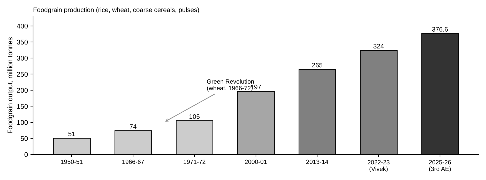
The Third Advance Estimates for 2025-26 put foodgrain output at 376.56 million tonnes, a record and 5.3% above 357.73 in 2024-25: rice 154.02, wheat 120.66, maize 55.09 (record), groundnut 13.07, rapeseed and mustard 13.77, oilseeds 43.06, sugarcane 500.06 (record) and cotton 29.02 million bales. India is the largest producer of milk and the second largest of rice, wheat, sugarcane and fruit and vegetables.
Costs of the Green Revolution: groundwater depletion, land degradation, pollution, loss of crop diversity, regional disparity (it favoured irrigated areas and larger farmers) and dependence on private seed and chemical suppliers.
White Revolution (Operation Flood). Verghese Kurien and Tribhuvandas Patel built the cooperative at Anand (Amul, 1949). The NDDB was formed in 1965; Operation Flood, financed by a World Bank loan from 1969, copied the three-tier structure: village dairy cooperative society, district union (processing), state federation (marketing). Milk output rose from 20 to 100 million tonnes in 40 years; it was 210 million tonnes in 2020-21, the world’s largest.
Pink Revolution means modernising meat and poultry processing; India has been the largest exporter of buffalo meat.
Current MSPs. For kharif 2026-27 (approved 13 May 2026, 14 crops): common paddy Rs 2,441 a quintal (up Rs 72), Grade A Rs 2,461, medium-staple cotton Rs 8,267, tur Rs 8,450. The government states a margin of at least 50% over the all-India weighted average cost for every crop and a payout of about Rs 2.60 lakh crore. For rabi marketing season 2027-28 (approved at the end of September 2026): wheat Rs 2,610 (up Rs 25), barley Rs 2,286, gram Rs 5,958, lentil Rs 7,390, rapeseed and mustard Rs 6,613, safflower Rs 7,215.
MSP for minor forest produce is set separately by the Ministry of Tribal Affairs (TRIFED is the nodal agency; Centre-state funding 75:25; states may vary the price by 10%).
PM-AASHA (2018) supports remunerative prices through three parts: the Price Support Scheme (physical procurement of pulses, oilseeds, copra by NAFED and FCI), the Price Deficiency Payment Scheme (the difference between MSP and the modal sale price is paid to registered farmers; no physical procurement) and a pilot of private procurement and stockists (service charge up to 15% of MSP).
Problems with MSP. Cost-plus pricing ignores demand; it can cause surpluses and price crashes; it tilts cropping towards wheat and rice and strains soil and water in Punjab and Haryana; it sets a floor that feeds inflation; and procurement of all 25 crops everywhere is fiscally and administratively impossible. The remedy usually argued is crop-neutral income support.
Public Distribution System. Began in the Second World War (1942); extended in the food crisis of the 1960s. Revamped PDS (June 1992, 1,775 blocks), Targeted PDS (June 1997, focused on the poor), Antyodaya Anna Yojana (December 2000, poorest families, 35 kg a month).
National Food Security Act 2013. Covers up to 75% of the rural and 50% of the urban population (about 81 crore people on the 2011 Census base; some sources give 84 crore). Entitlements: Antyodaya households 35 kg a family a month; priority households 5 kg a person a month, at Rs 3 (rice), Rs 2 (wheat) and Re 1 (coarse grain) a kg; meals for pregnant and lactating women (with Rs 6,000 maternity benefit), children aged 6 months to 6 years (Anganwadi) and 6 to 14 years (mid-day meal). The eldest woman aged 18 or more is the head of the household for the ration card; each state has a grievance system and a State Food Commission. One Nation One Ration Card (ONORC) makes ration portable for migrants through Aadhaar and electronic point-of-sale devices.
Free grain. Under the Pradhan Mantri Garib Kalyan Anna Yojana, begun in the COVID emergency, foodgrain under the NFSA has been supplied free; the Union government extended it for five years from 1 January 2024, so it runs to December 2028.
Shanta Kumar Committee (2014-15) on restructuring FCI recommended:
Fertiliser. Nutrient ratio N:P:K should be about 4:2:1. Urea is price-controlled; DAP, MoP and complex fertilisers have market-set prices with a fixed subsidy per kg of nutrient.
PM-KISAN (from 1 December 2018). A Central Sector scheme, 100% central funding: Rs 6,000 a year in three instalments of Rs 2,000 to eligible landholding families (husband, wife and minor children), paid by DBT; states identify beneficiaries; government employees, pensioners and similar categories are excluded. It is crop-neutral, so it distorts the market less than MSP or input subsidies. The 23rd instalment (20 June 2026) released over Rs 18,880 crore to over 9.44 crore farmers, with over Rs 4.46 lakh crore paid out since 2019 across 23 instalments.
Other support. Other subsidies are electricity, irrigation, credit and insurance, which critics say favour larger farmers. The Part on Public Finance and Taxation treats subsidies as a whole.
Extension. The National Mission on Agricultural Extension and Technology (12th Plan) has four sub-missions: extension, seed and planting material (strengthening the Protection of Plant Varieties and Farmers’ Rights Authority), mechanisation (custom hiring centres; subsidy of 40% to individuals and 80% to groups) and plant protection. Farm mechanisation is about 40% in India, against about 60% in China (Economic Survey 2019-20). Krishi Vigyan Kendras (ICAR; over 700) test technology, train farmers and produce inputs.
Farmer Producer Organisations (FPOs). A company, cooperative or trust owned by farmers, to give scale in inputs, processing and marketing and to bring credit. Promoted by SFAC (equity grant matching farmers’ equity up to Rs 10 lakh), NCDC and NABARD (credit guarantee fund; loans up to Rs 25,000 a member for share capital); about 700-1,000 members are needed to be viable; income from agricultural activity is tax-exempt. The central scheme “Formation and Promotion of 10,000 FPOs” has an outlay of Rs 6,865 crore.
Credit. The target for 2023-24 was Rs 20 lakh crore. Small and marginal farmers (86% of holders) get only about 15% of subsidised institutional loans while large farmers get 79%, that credit leaks into agri-business, and that most tractors are financed through NBFCs. The priority sector target for agriculture is 18% of credit (8% for small and marginal farmers; see the Part on Money, Banking and the Financial System).
Markets. State APMC Acts make the mandi the only place for first sale, through licensed commission agents. Faults: licence costs and corruption, cartelisation of traders, varying market fees that cascade, and no integration across mandis. e-NAM (April 2016, run by SFAC) is an online trading portal linking existing mandis; less than 5% of wholesale farm trade had moved online on older data and inter-state trade is small. The Model APMC Act 2003 and the Model Agricultural Produce and Livestock Marketing (Promotion and Facilitation) Act 2017 (private markets, direct sale, single licence, market fee capped at 2% for fruit and vegetables and 1% for foodgrain) and the Model Contract Farming and Services Act 2018 (a state authority, registration of agreements, no transfer of land, pre-agreed price) are advisory because agriculture and markets are state subjects. The three central farm laws of 2020 were repealed in 2021.
Contract farming is production under an agreement between a buyer and farmers. It gives a market and inputs but risks side-selling and unequal bargaining; it has worked in poultry but little elsewhere because of tiny holdings, which FPOs can aggregate.
Agriculture clusters are concentrations of producers, processors, traders and institutions with horizontal links (farmer groups) and vertical links (suppliers to retailers); mega food parks are examples.
Agriculture Infrastructure Fund (2020-33). Rs 1 lakh crore of loans for post-harvest and community assets (PACS, FPOs, start-ups and others), with 3% interest subvention up to Rs 2 crore for seven years and credit guarantee under CGTMSE. Animal Husbandry Infrastructure Development Fund: 90% loan, 10% margin, 3% subvention, for dairy, meat and feed plants.
Pradhan Mantri Fasal Bima Yojana (PMFBY), from kharif 2016. Farmers pay a fixed premium: 2% (kharif food grains and oilseeds), 1.5% (rabi), 5% (annual commercial and horticultural crops); the rest is shared equally by the Centre and the state, with no cap on the sum insured (the 2020 revision capped the Centre’s share where premium rates exceed 30% for unirrigated areas and 25% for irrigated areas). Covered: prevented sowing, standing-crop losses from non-preventable risks, post-harvest losses (up to two weeks, for cyclone and unseasonal rain), and localised calamities. The sum insured is the threshold yield (average of the last seven years) times MSP; losses are assessed by crop-cutting experiments, with satellites and drones, and one insurer is chosen for each district. The scheme is voluntary.
Doubling farmers’ income. The goal was to double real income by 2022-23 from 2015-16 (Dalwai Committee). Sources of growth:
The Ministry was renamed Agriculture and Farmers Welfare in 2015. Farm growth has stayed around 3% since the 1990s, while non-agricultural growth rose above 8%.
Agriculture Export Policy 2018. Aimed to double exports from US$30+ billion (2017-18) to US$60 billion by 2022. Main ideas: a stable trade policy (processed and organic products free of export curbs), logistics, clusters, value-added exports, an information portal, a response to sanitary and phytosanitary and technical barriers, sea protocols for perishables and mutual recognition of standards. Logistics cost 14-15% of export value, against 8-9% in developed countries.
India and China (2018-19). Farmland 158 million ha against 120 million; irrigation 48% against 41%; agricultural output US$407 billion (17% of GDP) against US$1,367 billion (8%); research and extension spending US$1.4 billion against US$7.8 billion; fertiliser 166 kg a hectare against 503; farm labour 43% against 26%. China consolidated its input subsidies into a per-hectare payment; India spent about US$3 billion on PM-KISAN against about US$27 billion on fertiliser, power, irrigation, insurance and credit subsidies.
Previous-year questions (Vivek Singh, Indian Economy, 5.7, 9 and 10.18)
Q1. The Fair and Remunerative Price (FRP) of sugarcane is approved by the [UPSC 2015]
Answer: (a).
Q2. In India, markets in agricultural products are regulated under the [UPSC 2015]
Answer: (b).
Q3. With reference to ‘Pradhan Mantri Fasal Bima Yojana’, consider the following statements: [UPSC 2016]
Answer: (b).
Q4. The nation-wide ‘Soil Health Card Scheme’ aims at [UPSC 2017]
Answer: (b).
Q5. What is/are the advantage/advantages of implementing the ‘National Agriculture Market’ scheme? [UPSC 2017]
Answer: (c).
Q6. In India, which of the following can be considered as public investment in agriculture? [UPSC 2020]
Answer: (c).
Q7. Which of the following factors/policies were affecting the price of rice in India in the recent past? [UPSC 2020]
Answer: (d).
Q8. With reference to the provisions made under the National Food Security Act, 2013, consider the following statements: [UPSC 2018]
Answer: (b).
Q9. The economic cost of food grains to the Food Corporation of India is Minimum Support Price and bonus (if any) paid to the farmers plus [UPSC 2019]
Answer: (c).
Q10. With reference to chemical fertilizers in India, consider the following statements: [UPSC 2020]
Answer: (b).
Mains: How did land reforms in some parts of the country help to improve the socio-economic conditions of marginal and small farmers? [UPSC 2021]. What do you mean by Minimum Support Price (MSP)? How will MSP rescue the farmers from the low-income trap? [UPSC 2018]. What are the main constraints in transport and marketing of agricultural produce in India? [UPSC 2020]. What are the salient features of the National Food Security Act, 2013? How has the Food Security Bill helped in eliminating hunger and malnutrition in India? [UPSC 2021]. What are the major challenges of the Public Distribution System in India? How can it be made effective and transparent? [UPSC 2022].
Industry covers manufacturing, mining and utilities; its policy covers Make in India, production-linked incentives, small enterprises, the public sector and the business environment.
Manufacturing was 14.8% of GVA in 2025-26 (MoSPI provisional estimates), and industry as a whole 27.7%, against services at 54.3%. Manufacturing has stagnated at around 15-16% of GDP in the three decades since 1991. The argument for manufacturing is jobs: about 12 million people enter the workforce each year, many low-skilled migrants from rural areas, and only low- and semi-skilled manufacturing can absorb them at scale. Services employ more skilled workers. In the 2025 PLFS manufacturing gave 12.1% of employment.
For the history of industrial policy (IPR 1948 and 1956, licensing, MRTP, the 1991 reforms), see the chapter on the Evolution of the Indian Economy.
Launched in September 2014 to make India a global manufacturing, design and innovation hub; it addresses regulation, infrastructure, skills, technology, finance and exit. It now covers 27 sectors (15 manufacturing, coordinated by the Department for Promotion of Industry and Internal Trade, DPIIT; 12 service sectors, by the Department of Commerce). Its original targets: manufacturing growth of 12-14% a year; manufacturing’s share of GDP to 25% (by 2022, later extended to 2025); 100 million additional manufacturing jobs by 2022. These were not met: the share is about 15%.
Its four pillars: new mindset, new sectors, new infrastructure, new processes. Instruments: FDI relaxation, innovation and R&D, infrastructure, and ease of doing business. Sector initiatives: FAME India for electric vehicles; UDAN in civil aviation; mega food parks; 100% automatic FDI in marketplace e-commerce; Sagarmala (ports); Bharatmala and expressways; industrial corridors; two defence industrial corridors (Uttar Pradesh and Tamil Nadu).
A view on strategy: Make in India should not mean import substitution behind tariffs, which failed before, nor subsidised exports on an undervalued exchange rate; it should mean openness that lets Indian firms compete and foreign firms create jobs here.
Production Linked Incentive (PLI) schemes. Cash incentive of 4% to 6% on incremental sales of goods made in India over a base year, for five years, tied to minimum investment in plant and machinery. Illustration: sales rising from Rs 1 lakh to Rs 1.2 lakh earn 4% on Rs 20,000, that is Rs 800. The pharmaceutical scheme targets key starting materials, intermediates and active pharmaceutical ingredients (53 APIs covering 41 products), to cut import dependence on China. 14 sectors with an outlay of Rs 1.97 lakh crore: mobile phones and specified electronic components; pharmaceutical key starting materials and APIs; medical devices; automobiles and auto components; pharmaceutical drugs; specialty steel; telecom and networking products; electronic and technology products; white goods (air conditioners and LEDs); food products; textiles (man-made fibre and technical textiles); high-efficiency solar modules; advanced chemistry cell batteries; drones and components.
Results reported to Parliament (as of 30 September 2025, per a December 2025 reply): cumulative incentive paid Rs 23,946 crore; investment about Rs 2 lakh crore; incremental production and sales over Rs 18.7 lakh crore; over 12.6 lakh jobs. Mobile phone output rose from Rs 18,000 crore (2014-15) to Rs 5.45 lakh crore (2024-25). Economic Survey 2024-25 noted that 99% of smartphones sold are made in India but the electronics base remains assembly-heavy (India has about 4% of the global electronics market).
Industry 4.0 builds on factory automation (the Third Industrial Revolution) with end-to-end digitisation: connected machines, big data, AI and robotics in “smart factories”. Most Indian manufacturing is still at the electrification and early automation stage. Labour will need continuous re-skilling.
MSMEs contribute about 30% of GDP, 45% of manufacturing output and 40% of exports, and the sector has around 6.34 crore units (about 90% informal) employing over 11 crore workers. They are labour-intensive, need little capital and complement large firms as ancillary suppliers. The primary responsibility for promoting them lies with state governments.
Definition. The MSMED Act 2006 introduced the concept of an “enterprise” covering both manufacturing and services. Since July 2020 one composite test applies: investment and turnover must both be within the limit, and the same limits apply to manufacturing and services. Export turnover is excluded from the turnover limit. The limits were raised from 1 April 2025 (notification of 21 March 2025):
| Category | Investment in plant and machinery or equipment (before 2025) | Investment (from 1 April 2025) | Turnover (before 2025) | Turnover (from 1 April 2025) |
|---|---|---|---|---|
| Micro | up to Rs 1 crore | up to Rs 2.5 crore | up to Rs 5 crore | up to Rs 10 crore |
| Small | up to Rs 10 crore | up to Rs 25 crore | up to Rs 50 crore | up to Rs 100 crore |
| Medium | up to Rs 50 crore | up to Rs 125 crore | up to Rs 250 crore | up to Rs 500 crore |
Problems: credit (only about 16% of small firms have timely finance), informality (about 86% of manufacturing MSMEs unregistered), outdated technology, skills, delayed payments, marketing, and “MSME dwarfism” (firms staying small to keep benefits).
Support measures:
The Index of Core Industries is compiled monthly by the Office of the Economic Adviser (DPIIT), with a lag of about 20 days.
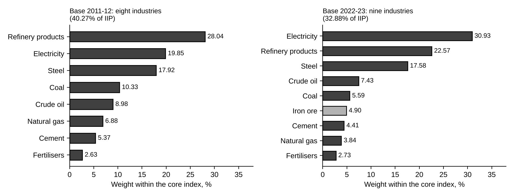
| Base 2011-12 | Base 2022-23 (first release July 2026) | |
|---|---|---|
| Industries | Eight: refinery products, electricity, steel, coal, crude oil, natural gas, cement, fertilisers | Nine: iron ore added |
| Share in IIP | 40.27% | 32.88% |
| Largest weight | Refinery products 28.04% | Electricity 30.93% |
| Smallest weight | Fertilisers 2.63% | Fertilisers 2.73% |
Source: weights of the old series; Office of the Economic Adviser release for the new series.
Central public sector enterprises (CPSEs) have graded autonomy: Maharatna (listed; Navratna; average annual net profit above Rs 5,000 crore, net worth above Rs 15,000 crore, turnover above Rs 25,000 crore over three years; may invest up to Rs 5,000 crore without Cabinet approval), Navratna (investment up to Rs 1,000 crore) and Miniratna (Category I and II, based on continuous profit).
DIPAM (Department of Investment and Public Asset Management, in the Finance Ministry) is the nodal department. The Strategic Disinvestment Policy (2021), under Atmanirbhar Bharat, keeps only a bare minimum of PSUs in four strategic areas (atomic energy, space and defence; transport and telecom; power, petroleum, coal and other minerals; banking, insurance and financial services) and sells or closes the rest. Only atomic energy and railway operations are now reserved for the public sector.
The National Monetisation Pipeline (August 2021) leases the operating rights of brownfield public assets (highways, transmission lines, pipelines) for a fixed period; the government keeps ownership. It is treated with infrastructure in the chapter on Infrastructure.
Start-up definition (DPIIT): incorporated for up to ten years; turnover not above Rs 100 crore in any year; working on innovation or a scalable model with high job potential. Startup India rests on three pillars: simplification and handholding, funding support and incentives, and industry-academia partnership and incubation. Measures: three tax-free years out of the first ten; self-certification; Fund of Funds; Startup India Seed Fund Scheme; priority-sector lending; Stand-Up India (loans to SC/ST and women entrepreneurs); the Atal Innovation Mission; DPIIT state rankings. By 31 March 2026 DPIIT had recognised over 2.23 lakh start-ups, of which a record 55,200 in 2025-26, creating over 23 lakh direct jobs; Maharashtra, Karnataka, Uttar Pradesh, Delhi and Gujarat lead. A Fund of Funds 2.0 of Rs 10,000 crore, for deep-tech, early-stage and tech-driven manufacturing start-ups, took effect from April 2026.
Skilling. The National Policy for Skill Development and Entrepreneurship 2015 replaced the 2009 policy; the National Skill Development Mission was launched on 15 July 2015 (Ministry of Skill Development and Entrepreneurship). Schemes: Pradhan Mantri Kaushal Vikas Yojana, Pradhan Mantri Kaushal Kendras, Jan Shikshan Sansthan, SANKALP, STRIVE, the National Apprenticeship Promotion Scheme, Future Skills PRIME (IT upskilling with NASSCOM), ASEEM portal (skilled worker and employer mapping) and DigiSaksham.
Ease of doing business. The World Bank’s Doing Business report was discontinued and is replaced by B-READY. India’s states are ranked through the Business Reforms Action Plan (BRAP), run by DPIIT. The National Single Window System (NSWS) is a digital portal for investor approvals; the National Land Bank Portal integrates state land banks (about 5 lakh hectares mapped). The four labour codes are described in the chapter on Employment, Unemployment and Labour Law.
E-commerce is buying and selling goods or services over an electronic network. It lowers marketing costs and helps MSME exporters (handicrafts, handlooms, jewellery), but network effects favour the largest platforms.
Textiles are the largest employer after agriculture (4.5 crore direct jobs), about 2.3% of GDP and 12% of export earnings, and 11% of manufacturing GVA. Weaknesses: fragmented, small units, cotton dependence, old machinery (Bangladesh averages 500 machines per unit, India 100) and little FDI. Schemes: PM MITRA mega textile parks (development support of 30% of project cost, up to Rs 500 crore for a greenfield park and Rs 300 crore for a brownfield park; a PPP master-developer model), the Jute Packaging Materials Act (mandatory jute packing for foodgrains and sugar), SAMARTH (skills), the PM Paridhan Rozgar Protsahan Yojana (employer’s EPF contribution for three years) and the Amended Technology Upgradation Fund Scheme. Food processing is treated in the chapter on Farming Systems and the Food Economy.
Announced in 2020 after the COVID shock, with five pillars: economy (a quantum jump), infrastructure, system (technology-driven), demography and demand. It differs from the self-sufficiency of the planning era: private sector welcomed, no licensing, participation in global supply chains and exports, foreign capital welcomed and MSMEs backed by credit guarantees, not reservation. Measures announced: commercial coal mining; the new MSME definition; no global tenders for government purchases up to Rs 200 crore; labour reforms; the National Land Bank; private participation in space; the Strategic Disinvestment Policy; 74% FDI in defence under the automatic route; corporatisation of the Ordnance Factory Board; GST on aircraft maintenance cut from 18% to 5%; electricity distribution reform. The Prime Minister described the shift as “from command and control to plug and play”. RBI steps in 2020 included repo rate cut from 5% to 4%, CRR from 4% to 3%, a six-month moratorium on loan instalments and targeted long-term repo operations.
Previous-year questions (Vivek Singh, 7.15; RAS)
Q1. With reference to foreign-owned e-commerce firms operating in India, which of the following statements is/are correct? [UPSC 2022]
Answer: (b).
Mains. Faster economic growth requires increased share of the manufacturing sector in GDP, particularly of MSMEs. Comment on the present policies of the Government in this regard. [UPSC 2023]. “Success of Make in India programme depends on the success of Skill India programme and radical labour reforms.” Discuss with logical arguments. [UPSC 2015]. Examine the impact of liberalization on companies owned by Indians. Are they competing with the MNCs satisfactorily? [UPSC 2013]. Define micro, small and medium enterprises on the basis of investment and annual turnover in India. [RAS Mains]. What are the key measures pertaining to industry and infrastructure under the Atmanirbhar Bharat Abhiyan in India? [RAS Mains]
The services sector, and the digital public infrastructure through which India delivers payments, identity and data to its people and exports technology to the world.
Services are the largest sector of the Indian economy. In 2025-26 (MoSPI provisional estimates, new series with base 2022-23) services contributed Rs 170.85 lakh crore, or 54.3% of current-price GVA, against 18.0% for agriculture and 27.7% for industry. The fastest-growing activities in that year were trade, hotels, transport and communication (11.0%) and financial services, real estate and professional services (10.4%), both above the 7.9% growth of total GVA.
| Group | Examples | Growth 2025-26 |
|---|---|---|
| Trade, hotels, transport, communication | Retail, tourism, aviation, telecom | 11.0% |
| Financial, real estate, professional | Banking, insurance, IT, consulting | 10.4% |
| Public administration, defence, other | Government services | 5.0% |
Services lead GVA but not jobs: in the PLFS calendar-year 2025 agriculture still held about 43% of employment and manufacturing about 12.1%. This gap, a services-led growth without a manufacturing-led jobs transition, is the central debate on the Indian pattern. The structural shift itself is traced in the chapter on the evolution of the Indian economy.
India runs a surplus on services trade that offsets part of the merchandise deficit (see the chapters on the balance of payments and external sector). Services exports were US$387.5 billion in 2024-25 and are estimated at roughly US$400 billion in 2025-26 on partial-year data. India is the seventh-largest services exporter, and fifth in digitally delivered services (Economic Survey 2025-26, as reported). Software services exports alone were US$221.4 billion in 2025-26 (+8.2%) in the RBI survey; the United States and Europe are the main destinations, and about 92% of delivery is off-site.
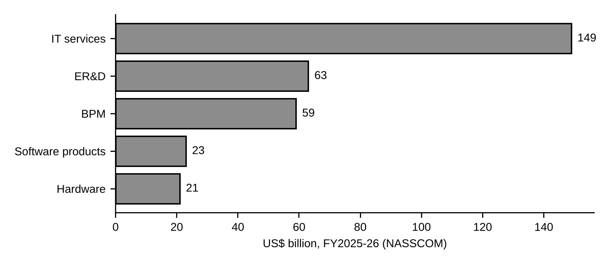
NASSCOM puts FY2025-26 technology industry revenue at US$315 billion (+6.1%), with exports of US$246 billion and about 59.5 lakh employees. AI-related revenue is estimated at US$10–12 billion.
Global Capability Centres (GCCs) are in-house centres set up in India by multinational firms for engineering, analytics and operations. About 2,100 GCCs employ over 2.3 million people, with revenue near US$100 billion (NASSCOM-Zinnov, 2026). Their growth moves India from cost arbitrage towards capability and R&D work.
UPI launched on 25 August 2016. Volume rose from 1.78 crore transactions (Rs 7,000 crore) in 2016-17 to over 24,162 crore transactions worth nearly Rs 314 lakh crore in 2025-26. In September 2026 it handled 24.07 billion transactions worth Rs 29.37 lakh crore, up 23% in volume and 18% in value year on year. UPI is said to account for nearly half of the world’s real-time payment volume and is live in 11 countries including the UAE, France, Singapore, Sri Lanka, Nepal and Bhutan. Payments-system regulation is covered in the chapter on the Reserve Bank of India.
| Indicator (TRAI, June 2026) | Value |
|---|---|
| Total telephone subscribers | 1.348 billion |
| Wireless (mobile and FWA) | 1.300 billion |
| Broadband subscribers | 1.087 billion |
| Overall tele-density | 94.31% |
India is one of the cheapest mobile-data markets; 5G roll-out and fixed wireless access (FWA) are the current growth drivers. Spectrum is auctioned; the regulator is TRAI, the licensor the Department of Telecommunications.
No previous-year questions on services and digital are included here.
How a society measures deprivation, who is left behind by growth, and how the quality of human life, jobs and opportunity is judged beyond income alone.
| Expert group | Year | Note |
|---|---|---|
| Expert Group | 1962 | First official line |
| Y. K. Alagh Working Group | 1977 | Calorie-norm line |
| D. T. Lakdawala | 1989 (report 1993) | State-specific price indices |
| Suresh Tendulkar | 2005 (report 2009) | Mixed reference period; Rs 27 rural, Rs 33 urban per day (2011-12) |
| C. Rangarajan | 2012 (report 2014) | Rs 32 rural, Rs 47 urban per day (2011-12) |
| All-India headcount ratio | Value |
|---|---|
| 1973-74 (Lakdawala) | 54.9% |
| 1993-94 | 36.0% |
| 2004-05 | 27.5% |
| 2011-12 (Tendulkar) | 21.9% (about 27 crore) |
| 2011-12 (Rangarajan) | 29.5% (about 36.3 crore) |
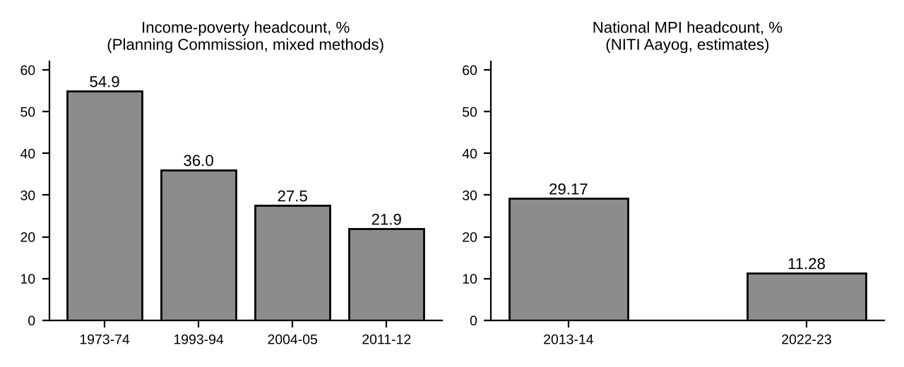
The series are not strictly comparable across methods. Both committees’ estimates were never formally adopted by the NDA government, which tasked NITI Aayog with a new line; no official line has replaced them. Poverty in India is now tracked through three sets of data:
Poverty is also measured by deprivations in health, education and living standards. NITI Aayog’s National Multidimensional Poverty Index (based on the Alkire-Foster method, aligned with the global MPI of UNDP and OPHI) uses 12 indicators across three equally weighted dimensions: health (nutrition, child and adolescent mortality, maternal health), education (years of schooling, school attendance) and standard of living (cooking fuel, sanitation, drinking water, electricity, housing, assets, bank account). The headcount ratio is estimated to have fallen from 29.17% in 2013-14 to 11.28% in 2022-23, taking about 24.8 crore people out of multidimensional poverty over nine years; Uttar Pradesh, Bihar and Madhya Pradesh account for the largest numbers. In the baseline (NFHS-5, 2019-21) the highest deprivations were in cooking fuel and housing.
The government approach has three strands: growth-oriented (trickle-down, since the First Plan), poverty-alleviation programmes such as employment-generation works (since the Third Plan; “Garibi Hatao” was the 1971 slogan) and provision of minimum basic amenities (PDS, ICDS, housing; since the Fifth Plan). The Economic Survey tradition argues that poverty is capability deprivation, so the answer is public provision of health, education, water, sanitation and housing (Universal Basic Services) rather than a Universal Basic Income; the counter-view favours cash transfers because of their simplicity and low leakage. Food-security schemes are covered in the chapter on Agriculture, and employment and labour law in the chapter on Employment, Unemployment and Labour Law.
The demographic dividend is the extra growth that comes from a rising ratio of working-age (20–59) to non-working-age population (WA/NWA). It is expected to peak around 2041, when working-age population is about 59% (WA/NWA = 1.43). The elderly (60+) rise to about 16% by 2041. Peninsular states (Kerala, Tamil Nadu, Karnataka, Andhra Pradesh, West Bengal) peak early and age, while the hinterland states (Bihar, Uttar Pradesh, Madhya Pradesh, Rajasthan) stay young: “two Indias”. A dividend turns into jobs only when education, skills and employment keep pace; see the chapter on education and health.
Labour force = employed + unemployed (not employed but seeking work); unemployment rate = unemployed ÷ labour force × 100.
| Type | Meaning |
|---|---|
| Structural | Skills mismatch or technology shift; jobs exist but workers lack the skills |
| Cyclical | Fall in aggregate demand during a downturn |
| Frictional | Between jobs; always present, even at full employment |
| Seasonal | Farming, tourism, sugar mills |
| Disguised | Surplus labour with zero marginal productivity, typically in agriculture |
| Open | Visible; workers seek work but find none |
| Underemployment | Employed below capacity (skills, hours or pay); the larger problem than open unemployment |
Data sources: Census, the NSO’s Periodic Labour Force Survey (PLFS) (annual statistics, quarterly for urban areas; the first annual report covered July 2017–June 2018) and the Labour Bureau’s AQEES (All-India Quarterly Establishment-based Employment Survey), with a Quarterly Employment Survey for establishments of 10 or more workers and an Area Frame Establishment Survey for those with 9 or fewer. Economic Censuses (1977, 1980, 1990, 1998, 2005, 2013-14, 2020) are establishment-based.
PLFS calendar-year 2025 figures (as reported): unemployment rate 3.1%, labour force participation rate 59.3%; agriculture still employs about 43% of workers and manufacturing about 12.1%.
The informal sector is not registered, taxed or monitored; it holds more than 90% of the workforce and produces over 30% of output. Reasons include rigid labour law applying only to formal firms (an incentive to subcontract), a lack of formal jobs and low wages that keep informal units competitive. Own-account enterprises (no hired labour) are a large part. The labour codes of 2025 are covered in the chapter on Employment, Unemployment and Labour Law.
The Human Development Index (UNDP) combines life expectancy, expected and mean years of schooling, and gross national income per capita (log). India’s HDI was reported at 0.685 and rank 130 of 193 in the 2025 report (medium human development) (UNDP, Human Development Report 2025). Related indices: the Gender Development Index, Gender Inequality Index and global MPI.
The 17 Sustainable Development Goals (adopted 2015, target year 2030) cover no poverty, zero hunger, health, education, gender equality, water and sanitation, clean energy, decent work, industry and infrastructure, reduced inequality, sustainable cities, responsible consumption, climate action, life below water, life on land, peace and institutions, and partnerships. NITI Aayog’s SDG India Index and Dashboard measures progress for states and UTs; localisation rests on cooperative and competitive federalism. Environmental goals are in the chapter on environment and sustainable development.
Q1. Which of the following can aid in furthering the Government’s objective of inclusive growth? [UPSC 2011]
Answer: (d).
Q2. In a given year in India, official poverty lines are higher in some States than in others because [UPSC 2019]
Answer: (b).
Mains: inclusive growth meeting inclusiveness and sustainability together (2019); intra- and inter-generational equity in inclusive growth (2020); is inclusive growth possible under a market economy, and the significance of financial inclusion (2022); growth led by labour productivity and a job-creating growth pattern (2022).
How the size, age and location of a population change over time, and how towns and cities, migration and the census record and shape that change.
The Census of India, held every ten years, is conducted by the Registrar General and Census Commissioner under the Census Act 1948. The 2011 Census counted 121.08 crore people (decadal growth 17.64%, density 382 per sq. km, sex ratio 943, literacy 74.04%). Census 2027 is India’s first digital census and the first to count caste since independence (the 16th census, and the 8th after independence). It runs in two phases: houselisting from 1 April to 30 September 2026 (each state completes a 30-day window, with self-enumeration opening 15 days earlier) and population enumeration in February 2027.
Interim demographic data come from the Sample Registration System (SRS). SRS 2023 reports a crude birth rate of 18.4, crude death rate of 6.4, total fertility rate of 1.9 (below the replacement level of 2.1; Bihar 2.8, Delhi 1.2), infant mortality rate of 25 per 1,000 live births and a sex ratio at birth of 917. NFHS (National Family Health Survey) is the other major source. The concepts of TFR, population momentum and the demographic dividend are in the chapter on poverty, inequality and human development.
| Category | Definition (Census of India) |
|---|---|
| Statutory town | Place governed by an urban local body: municipal corporation, municipality, cantonment board or notified town area committee (4,041 in 2011) |
| Census town | Administratively rural but with population ≥ 5,000, ≥ 75% of male main workers in non-agriculture and density ≥ 400 per sq. km (3,894 in 2011, up from 1,362 in 2001) |
| Outgrowth | Village or part of one contiguous to a town with urban features (railway colony, university campus, port); 981 in 2011 |
| Urban agglomeration | A town with adjoining outgrowths, or contiguous towns; must include at least one statutory town and have a population of at least 20,000 |
Towns are graded: Class I (1 lakh and above), II (50,000–99,999), III (20,000–49,999), IV (10,000–19,999), V (5,000–9,999), VI (below 5,000). A million-plus city has 10 lakh or more (53 in 2011, up from 35 in 2001); a mega city has 1 crore or more (Greater Mumbai, Delhi and Kolkata).
| Metric | Census 2001 | Census 2011 |
|---|---|---|
| Urban population | 286.1 million | 377.1 million |
| Level of urbanisation | 27.81% | 31.16% |
| Decadal urban growth | 31.47% | 31.80% |
| Decadal rural growth | 18.09% | 12.18% |
| Urban sex ratio | 900 | 926 |
2011 was the first census when the absolute increase in urban population (91.0 million) exceeded the rural increase (90.5 million). Goa (62.17%), Mizoram, Tamil Nadu, Kerala and Maharashtra were the most urbanised states; Himachal Pradesh (10.03%) and Bihar (11.29%) among the least. Delhi (97.5%) and Chandigarh lead the UTs. Maharashtra has the largest absolute urban population, followed by Uttar Pradesh.
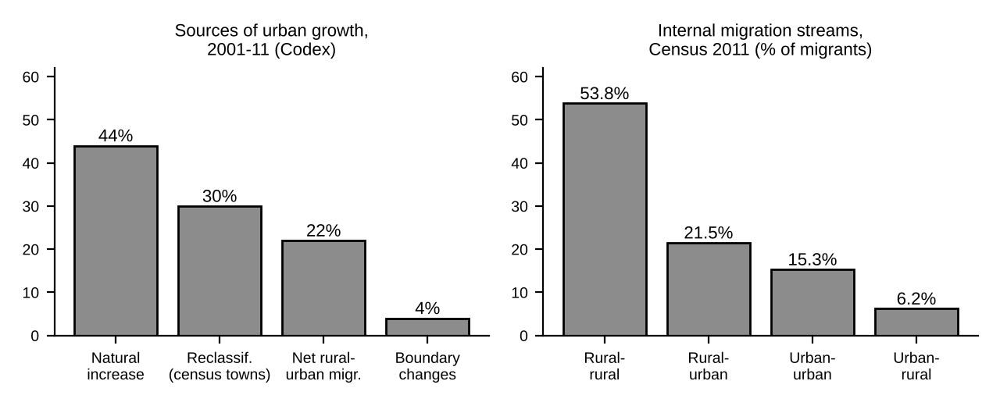
Urban growth is driven by natural increase, reclassification of rural areas as census towns, and migration; the Indian pattern is top-heavy, with over 70% of urban people in Class I cities while small and medium towns lack funds and jobs. Census 2011 counted 65.5 million slum dwellers; a slum is notified, recognised or identified (a compact area of at least 300 people or 60–70 households in poor, congested housing without water and sanitation).
Everett Lee’s push-pull model (1966): migration depends on factors at origin (push: agricultural distress, disguised unemployment), destination (pull: wages, jobs, services), intervening obstacles (distance, cost) and personal factors. Ravenstein’s laws (1885): most migrants move short distances; step migration; every stream creates a counter-stream; women migrate more over short distances, men over long.
Harris-Todaro model (1970): a rural worker migrates if the expected urban wage exceeds the rural wage. Expected urban wage = Wu × Pe, where Pe = Eu / Lu (probability of an urban job). Creating urban jobs without raising rural productivity can draw in more migrants than jobs, raising urban unemployment (the Todaro paradox).
Census 2011 recorded 455.7 million internal migrants (37.6% of the population; 314.5 million, 30.6% in 2001). Rural-to-rural migration is the largest stream, driven mostly by marriage among women; rural-to-urban migration is dominated by men moving for work. Economic Survey 2016-17, using railway travel data, estimated about 9 million inter-state movements a year, with Uttar Pradesh, Bihar, Rajasthan, Madhya Pradesh and West Bengal as main sources.
| Scheme | Launch | Purpose |
|---|---|---|
| Smart Cities Mission | June 2015 | 100 cities chosen by City Challenge; SPVs and Integrated Command and Control Centres |
| AMRUT (2.0 from Oct 2021) | 2015 | Universal tap connections in all statutory towns; sewage management; water bodies |
| PMAY-Urban | June 2015 | “Housing for All”: in-situ slum redevelopment, credit-linked subsidy, affordable housing in partnership, beneficiary-led construction |
| Swachh Bharat Mission-Urban 2.0 | Oct 2021 | Garbage-free cities |
| One Nation One Ration Card | Aug 2019 | Portability of NFSA entitlements for migrants |
| e-Shram | Aug 2021 | National database of unorganised workers |
| Affordable Rental Housing Complexes | July 2020 | Rental housing for urban migrants |
Urban local bodies’ finances are touched on in the chapter on Fiscal Federalism and the Finance Commission.
No previous-year questions on urbanisation or demography are included here.
The two social sectors that build human capital: how a country schools its people and keeps them healthy, and what the state spends and regulates to do so.
Education is on the Concurrent List (since the 42nd Amendment, 1976). Article 21A (86th Amendment, 2002) makes elementary education a fundamental right, operationalised by the Right to Education Act 2009, in force from 1 April 2010.
| Indicator | Value |
|---|---|
| Literacy, Census 2011 | 74% overall; 82% male; 65% female |
| GER, primary (UDISE+ 2024-25) | 90.9% |
| GER, upper primary | 90.3% |
| GER, secondary | 78.7% (NER 47.5%; dropout 11.5%) |
| GER, higher secondary | 58.4% |
| GER, higher education | 27% (AISHE 2019-20) |
| Total school enrolment, 2024-25 | 24.69 crore; girls 48.5% |
| Public expenditure on education | about 3% of GDP in the notes (target 6%) |
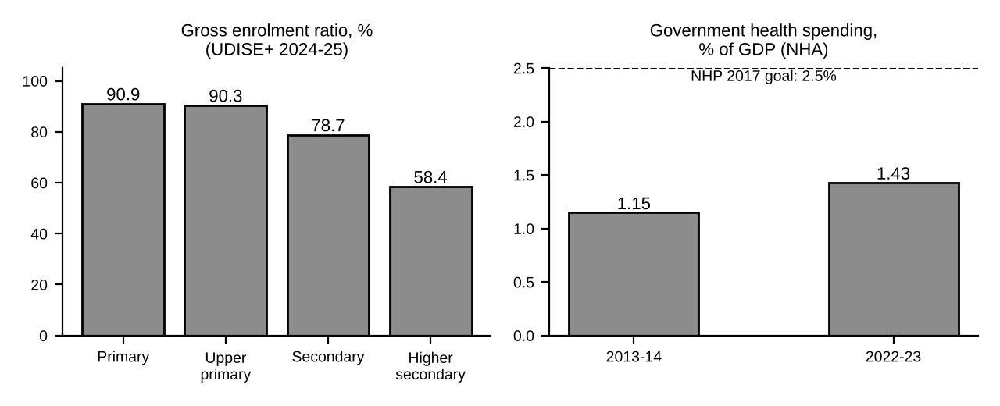
UDISE+ (Unified District Information System for Education Plus) is the Ministry of Education’s school database; AISHE (All India Survey on Higher Education) covers higher education; ASER (Annual Status of Education Report, run by Pratham) assesses learning outcomes in rural districts. The problem is quality as much as access.
NEP 2020 replaced the National Policy on Education 1986. It was drafted by a committee under K. Kasturirangan and is aligned with SDG 4.
Criticisms: centralisation against state autonomy; privatisation and commercialisation; vague implementation roadmap; limited consultation; overlap with the RTE Act; the digital divide; a funding gap against the 6% goal.
Health is a State subject; the Centre funds centrally sponsored schemes (the National Health Mission, merging the rural and urban missions). The National Health Accounts (NHA) for 2022-23 (released May 2026) show:
Older figures (2.1% of GDP total public health, doctor availability 0.7 per 1,000 against the WHO’s 1 per 1,000, institutional delivery 86% in NFHS-5, stunting 35.5%, wasting 19.3%, underweight 32.1%) come from different years. SRS 2023 shows IMR 25 and TFR 1.9 (see the chapter on urbanisation and demography).
Launched on the National Health Policy 2017, it shifts from a segmented to a need-based system with two arms. Funding is 60:40 between the Centre and states with legislatures, 90:10 for the north-eastern and Himalayan states, and 100% central for UTs without a legislature.
The Ayushman Bharat Digital Mission (September 2021; National Health Authority) provides a voluntary Unique Health ID (ABHA), a Healthcare Professionals Registry, a Healthcare Facilities Registry and a sandbox for health-tech firms. Concerns: data protection (see the chapter on services and digital for the DPDP Act), digital exclusion and system failures.
No previous-year questions on education and health are included here.
The pattern of religion, language, caste and tribe that makes up Indian society, and the constitutional design through which a diverse population is held together and disadvantage is corrected.
Multiculturalism has two senses: descriptive (the fact of cultural, linguistic, ethnic and religious diversity) and normative (policies and principles that secure equal treatment and recognition of diverse groups).
| Thinker | Idea |
|---|---|
| Will Kymlicka (Multicultural Citizenship, 1995) | Liberal multiculturalism: individual autonomy needs a secure cultural context. Three group-differentiated rights: self-government (for national minorities), polyethnic (exemptions for immigrant groups, e.g. religious dress) and special representation. Permits external protections but not internal restrictions on a group’s own members |
| Bhikhu Parekh (Rethinking Multiculturalism) | Pluralist and dialogical: rejects liberal monism; culture shapes identity; intercultural dialogue on mutual respect |
| Charles Taylor (The Politics of Recognition, 1992) | Misrecognition harms identity; the “politics of difference” protects authenticity against assimilation |
Two integration models: the melting pot (assimilation; the early United States) and the salad bowl or mosaic (cultural pluralism; Canada’s Multiculturalism Act 1988, the United Kingdom, India). The mosaic risks fragmentation; the melting pot enforces the majority’s culture.
India follows principled distance (Rajeev Bhargava): the state neither separates from religion as in strict American separation or French laïcité, nor identifies with one religion. It intervenes when practices violate dignity or rights (abolition of untouchability, temple entry, the 2019 ban on instant triple talaq) while protecting minority cultural institutions. The ethos is sarva dharma sambhava (equal respect to all faiths) rather than dharma nirpekshta (indifference).
| Article | Guarantee |
|---|---|
| 14 | Equality before law |
| 15(1) | No discrimination on religion, race, caste, sex, place of birth |
| 25 | Freedom of conscience; profess, practise, propagate religion (subject to public order, morality, health) |
| 26 | Religious denominations manage their own affairs |
| 27 | No compulsory taxes for promoting a religion |
| 28 | No compulsory religious instruction in wholly State-funded schools |
| 29 | Minorities conserve language, script, culture |
| 30 | Minorities establish and administer educational institutions of their choice |
| Fifth and Sixth Schedules | Tribal areas; autonomous district councils in Assam, Meghalaya, Tripura, Mizoram (Sixth) |
| Religion (Census 2011) | Share |
|---|---|
| Hindus | 79.80% |
| Muslims | 14.23% |
| Christians | 2.30% |
| Sikhs | 1.72% |
| Buddhists | 0.70% |
| Jains | 0.37% |
| Others / not stated | 0.66% / 0.24% |
Language families: Indo-Aryan 78.05% of speakers, Dravidian 19.64%, Austro-Asiatic 1.11%, Tibeto-Burman 1.01%. The Eighth Schedule lists 22 languages: 14 in 1950; Sindhi added by the 21st Amendment (1967); Konkani, Manipuri and Nepali by the 71st (1992); Bodo, Dogri, Maithili and Santhali by the 92nd (2003).
Classical languages (11): Tamil (2004), Sanskrit (2005), Kannada and Telugu (2008), Malayalam (2013), Odia (2014), and Marathi, Pali, Prakrit, Assamese and Bengali (October 2024). The criteria are early texts or recorded history of 1,500–2,000 years, a body of ancient literature valued as heritage, and an original literary tradition.
| Category | Quota | Anchor |
|---|---|---|
| Scheduled Castes | 15% | Arts 15(4), 16(4), 330, 332; National Commission for SCs (Art. 338) |
| Scheduled Tribes | 7.5% | Same; Fifth and Sixth Schedules; NCST (Art. 338A) |
| Other Backward Classes | 27% | Mandal Commission (1980; implemented 1990); Indra Sawhney v. Union of India (1992): upheld 27%, set the 50% cap and the creamy layer; National Commission for Backward Classes made constitutional by the 102nd Amendment (Art. 338B) |
| Economically Weaker Sections | 10% | 103rd Amendment 2019 (Arts 15(6), 16(6)); family income below Rs 8 lakh; upheld in Janhit Abhiyan v. Union of India (2022), holding that the 50% cap is not immutable |
The Census 2027 caste enumeration (see the chapter on urbanisation and demography) will give the first caste count since 1931 for all castes.
The Constitution and later laws single out groups that are disadvantaged by caste, tribe, religion, disability, age or gender. The table gives the legal basis and the main support for each.
| Group | Basis and main support |
|---|---|
| Scheduled Castes (SC) | Listed under Article 341; reservation in education and public posts (Affirmative Action section above); Prevention of Atrocities Act 1989 |
| Scheduled Tribes (ST) | Listed under Article 342; reservation; Fifth and Sixth Schedules for tribal areas; Forest Rights Act 2006; Dharti Aaba Janjatiya Gram Utkarsh Abhiyan (DAJGUA) for tribal villages |
| Other Backward Classes (OBC) | Reservation in central posts and education; creamy layer excluded; the Mandal Commission recommended 27% |
| Religious minorities | Protected under Articles 29 and 30 (language, culture, educational institutions); National Commission for Minorities |
| Persons with disabilities | Rights of Persons with Disabilities (RPwD) Act 2016: 21 disabilities recognised, 4% of posts reserved, at least 5% of higher-education seats, free education from age 6 to 18 |
| Senior citizens | Maintenance and Welfare of Parents and Senior Citizens Act 2007; pension through the National Social Assistance Programme |
| Transgender persons | Transgender Persons (Protection of Rights) Act 2019; recognised as a third gender by the Supreme Court in 2014 (NALSA case) |
DAJGUA was launched on 2 October 2024 with an outlay of over Rs 79,150 crore, covering about 63,000 tribal-majority villages and over 5 crore people in 549 districts, with 25 interventions by 17 ministries.
No previous-year questions on social structure are included here.
How economic growth is reconciled with limits set by the environment: sustainable development, climate change and the international and Indian response to it.
The term was first used in 1980 by the IUCN and entered mainstream policy through Our Common Future (1987), the Brundtland Report of the World Commission on Environment and Development: development that meets the needs of the present without compromising the ability of future generations to meet their own. The 2015 Sustainable Development Goals (17 goals, target year 2030) carry the idea forward; they are listed in the chapter on poverty, inequality and human development. Climate change threatens most of them: economic output (Pakistan floods 2022), food security (the 2022 South Asian heatwave and wheat export curbs), water (Aral Sea), health (European heatwave 2022), ecosystems (coral bleaching, Amazon) and migration (Bangladesh).
By sector the notes give electricity and heat 25%, agriculture and forestry 24%, industry 21%, transport 14%; by country China 28%, the United States 16%, the EU 10%, India 4% (an old, rounded split; India’s per capita emissions are well below the world average).
IPCC (WMO and UNEP, 1988; Geneva) assesses scientific evidence but does not do research; its Sixth Assessment found warming of about 1.1°C since 1850; the seventh cycle began in 2023.
| Instrument | Key points |
|---|---|
| Rio “sisters” (1992) | UNFCCC (climate), CBD (biodiversity), UNCCD (desertification) |
| UNFCCC (entered into force 1994) | Parent treaty; COP meets annually; principle of common but differentiated responsibilities (CBDR) |
| Kyoto Protocol (COP-3, 1997) | Binding targets for Annex I countries; phases 2008–12 and 2013–20; market mechanisms: emissions trading, Clean Development Mechanism (the only one open to developing countries) and Joint Implementation |
| Bali (COP-13, 2007), Cancun (COP-16, 2010) | Bali Action Plan; Green Climate Fund, Adaptation Fund |
| Warsaw (COP-19, 2013) | Warsaw Framework for REDD+; the US$100 billion a year by 2020 goal (set earlier, at Copenhagen 2009 and Cancun 2010) |
| Paris Agreement (COP-21, 2015) | Replaced Kyoto; keep warming well below 2°C, pursue 1.5°C; voluntary Nationally Determined Contributions every five years; Article 6 on carbon markets |
| COP-28 Dubai (2023) | Loss and Damage fund operationalised |
| COP-29 Baku (2024) | New finance goal of US$300 billion a year by 2035; Article 6 carbon-market rules |
Financing bodies: the Global Environment Facility (1991), Green Climate Fund (2010; the largest), Least Developed Countries Fund and Special Climate Change Fund. The International Solar Alliance (2015; initiative of India and France, headquartered in Gurugram) follows “One Sun, One World, One Grid”.
Carbon pricing tools: a carbon credit is a permit to emit one tonne of CO2e; carbon trading is its sale; cap and trade sets a falling ceiling and lets low emitters sell credits; a carbon tax charges per tonne emitted (the notes cite a Rs 400 per tonne tax on coal, the old Clean Energy Cess rate). Carbon capture, green and blue carbon, and geo-engineering are further options.
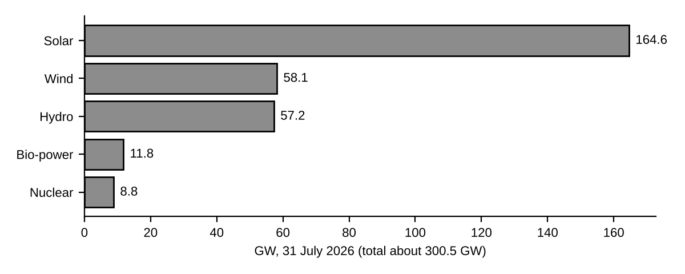
India’s non-fossil capacity crossed 300 GW on 31 July 2026 (over 54% of about 552 GW installed, over 60% of the 500 GW goal): solar 164.6 GW, wind 58.1, hydro 57.2, bio-power 11.8, nuclear 8.8.
Other measures: National Green Hydrogen Mission (5 million tonnes a year by 2030), the biofuel policy (20% ethanol blending), electric-vehicle schemes (FAME, now PM E-DRIVE), energy conservation building code (Bureau of Energy Efficiency), Green Term Ahead Market, the Green Credit Programme and the Carbon Credit Trading Scheme under the Energy Conservation (Amendment) Act 2022. Energy supply and power are covered in the chapter on infrastructure.
Constitutional basis. Article 48A (Directive Principle: the State shall protect and improve the environment), Article 51A(g) (Fundamental Duty of every citizen) and Article 21 (the Supreme Court reads the right to life to include a clean environment).
| Law or body | Year | Main content |
|---|---|---|
| Wild Life (Protection) Act | 1972 | Protected areas, schedules of protected species |
| Water (Prevention and Control of Pollution) Act | 1974 | Pollution control boards; consent to discharge |
| Forest (Conservation) Act | 1980 | Prior central approval to use forest land for other purposes; renamed Van (Sanrakshan Evam Samvardhan) Adhiniyam in 2023 |
| Air (Prevention and Control of Pollution) Act | 1981 | Air quality standards; pollution control boards |
| Environment (Protection) Act | 1986 | Umbrella law; powers of the Centre to set standards |
| Biological Diversity Act | 2002 | National Biodiversity Authority; access and benefit sharing |
| Forest Rights Act | 2006 | Recognises rights of forest-dwelling communities |
| National Green Tribunal (NGT) Act | 2010 | Specialised tribunal for environmental cases |
| Commission for Air Quality Management (CAQM) Act | 2021 | Air quality in Delhi-NCR and adjoining areas |
Environmental Impact Assessment (EIA) 2006. Projects in listed categories need prior environmental clearance, with public consultation for most.
National Clean Air Programme (NCAP). Launched in 2019 to cut particulate matter (PM) in 131 non-attainment cities by 40% by 2025-26. PM10 fell in 88 of the 131 cities in 2022-23 against 2017-18, while more than 80% of the cities still exceed the National Ambient Air Quality Standards (August 2026). Progress is tracked on the PRANA portal. NCAP is a scheme, not a law.
India State of Forest Report (ISFR) 2023 (18th report, December 2024):
| Item | Area (sq km) | Share of geographic area |
|---|---|---|
| Forest cover | 7,15,343 | 21.76% |
| Tree cover | 1,12,014 | 3.41% |
| Total forest and tree cover | 8,27,357 | 25.17% |
The total rose by 1,445 sq km since 2021; mangroves cover 4,992 sq km. The National Forest Policy 1988 sets a target of one-third of the area under forest and tree cover.
Biodiversity treaties and species programmes:
| Instrument | Year | Point |
|---|---|---|
| Ramsar Convention | 1971 | Wetlands of international importance |
| CITES | 1973 | Trade in endangered species |
| Convention on Biological Diversity | 1992 | Conservation, sustainable use, benefit sharing; Nagoya Protocol on access and benefit sharing |
| Kunming-Montreal Global Biodiversity Framework | 2022 | Protect 30% of land and sea by 2030 |
| Project Tiger | 1973 | Tiger reserves |
| Project Elephant | 1992 | Elephant range and corridors |
India had 103 Ramsar sites as of 15 October 2026 (Sukhna and Sauj were the latest additions). Rajasthan has five: Keoladeo (listed 1981, on the Montreux Record of sites facing change), Sambhar (1990), Khichan, and Menar and Siliserh (both 2025).
No previous-year questions with options are included here. Mains questions asked: “Discuss in brief India’s updated NDC submitted to the UNFCCC” and “Define sustainable development”.
How farms are watered, cropped and organised, and how food moves from field to consumer through processing, storage, regulation and trade.
Irrigation is the artificial application of water to land, a substitute or supplement for rain and basic infrastructure for production. Sources: tube wells (about 46% of irrigated area; the deep-water-table Indo-Gangetic plain and deltas), canals (24%; first in the 1950s–60s, then overtaken by wells in the 1970s; concentrated in Uttar Pradesh, Haryana and Punjab), wells (17%) and tanks (12%; the peninsula, especially Andhra Pradesh, Telangana and Tamil Nadu). The percentages are on an older statistical basis.
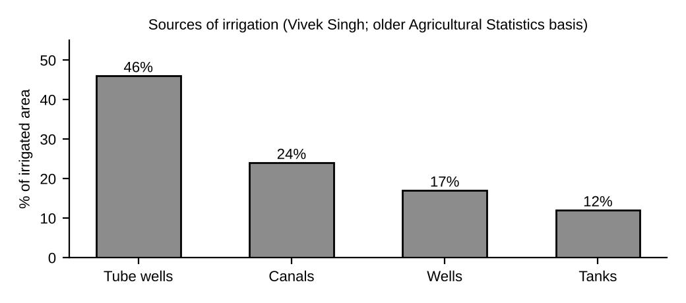
The Indira Gandhi Canal (649 km, from Harike barrage to the Thar in Rajasthan) is the longest canal in India.
| Method | Features and use |
|---|---|
| Surface / flood: basin, furrow, border strip | Basin for paddy and wheat; furrow for cotton, sugarcane, vegetables |
| Drip / micro | 2–20 litres an hour at the root; row crops, orchards, vines; high capital cost; Meghalaya’s 200-year-old bamboo drip system |
| Sprinkler | Uneven land and sandy soils; less water wasted |
PM Krishi Sinchayee Yojana (PMKSY), launched 1 July 2015: Har Khet Ko Pani (extend irrigation), Per Drop More Crop (micro-irrigation), watershed development and AIBP. About 24.6 million hectares of irrigation potential created or restored since 2016-17 and 110.9 lakh hectares brought under micro-irrigation (about 8% of net sown area); the 2021–26 outlay was Rs 93,068.56 crore and the 2026-27 Budget allocated Rs 6,587 crore. Per Drop More Crop has formed part of PM-RKVY since 2022-23.
Livestock gives income, employment in the lean season, protein, a social-security asset, draught power and dung, and is more equitably distributed than land; it is largely women-led. Challenges: weak veterinary and extension services, poor market links, no insurance or credit, and degraded pasture.
| System | Core idea |
|---|---|
| Organic farming | No synthetic chemicals; manures, rotation, biocontrol. Certified under NPOP (third-party, Commerce Ministry, APEDA; export and domestic) or PGS-India (peer-based, Agriculture Ministry; domestic only); FSSAI “Jaivik Bharat” logo. Sikkim: first fully organic State (2016) |
| Zero Budget Natural Farming | No purchased inputs: Bijamrit, Jivamrit, mulching, Waaphasa; no external fertiliser even organic, no tillage; contrasts with organic farming |
| Integrated Farming System | Crops with livestock, fish, etc.; waste of one enterprise feeds another; ICAR has 60 models; suited to small farms |
| Agroecology | Ecological and social principles; bottom-up, local knowledge |
| Conservation agriculture | Minimum soil disturbance, permanent soil cover, crop diversification |
| Protected cultivation | Polyhouses, shade nets, plastic mulch for horticulture; high capital cost |
| Permaculture / smart & precision farming | Design philosophy; AI, IoT, drones; small holdings (over half below 1 ha) limit uptake |
Challenges to organic farming: weak supply chains, no yield-loss subsidy during conversion, scarce inputs, and brand authenticity.
A supply chain moves goods from supplier to customer; upstream is raw-material extraction, downstream is processing and sale. Backward and forward integration are vertical; acquiring a rival is horizontal.
The food processing industry employs about 74% of its workers in the unorganised segment (about 25 lakh units) but the organised segment adds 72% of value; 100% FDI is allowed under the automatic route, and loans to food processing and cold chains count as priority sector lending. Constraints: perishability, weak cold chain (about 25% farm-level wastage cited), low technology, skills, fragmented retail, APMC rules and multiple clearances.
Schemes: SAMPADA (umbrella; Mega Food Parks, cold chain, agro-processing clusters; Rs 6,000 crore), PM Formalisation of Micro Food Processing Enterprises (PMFME) (2020-21 to 2024-25, Rs 10,000 crore, 60:40, 35% credit-linked subsidy up to Rs 10 lakh, One District One Product), Operation Greens (tomato, onion, potato; Budget 2018-19; Rs 500 crore) and Kisan Rail (50% transport subsidy). The Price Stabilisation Fund (2014-15) finances buffer stocks of onion, potato and pulses through NAFED and SFAC.
Q1. Consider the following statements: (i) The Food Safety and Standards Act, 2006 replaced the Prevention of Food Adulteration Act, 1954. (ii) The Food Safety and Standards Authority of India (FSSAI) is under the charge of Director General of Health Services in the Union Ministry of Health and Family Welfare. Which is/are correct? [UPSC 2018]
Answer: (a).
Q2. With reference to organic farming in India: (i) NPOP is operated under the guidelines of the Union Ministry of Rural Development. (ii) APEDA functions as the Secretariat for the implementation of NPOP. (iii) Sikkim has become India’s first fully organic State. Which is/are correct? [UPSC 2018]
Answer: (b).
Mains: crops and cropping patterns, millets (2018); Sikkim organic State (2018); National Horticulture Mission (2018); Integrated Farming System (2019, 2022); the rice-wheat system (2020); crop diversification (2021); micro-irrigation and the water crisis (2021); supermarkets in the supply chain (2018); food processing policy, challenges and scope (2019, 2020, 2022); upstream and downstream bottlenecks in marketing of agricultural products (2022).
The roads, rails, ports, airports, power and logistics on which every other sector depends, and the ways in which the state and private capital finance and run them.
Infrastructure (roads, railways, ports, airports, power, telecom, water, logistics) is basic capital for growth. After independence the state built it; after 1991 it sought private capital to fill the gap, but the capital-intensive, long-gestation nature of projects keeps the public sector central. Public capital expenditure rose from about Rs 2 lakh crore (2014-15) to Rs 12.2 lakh crore in the 2026-27 Union Budget (Rs 11.2 lakh crore in 2025-26 BE).
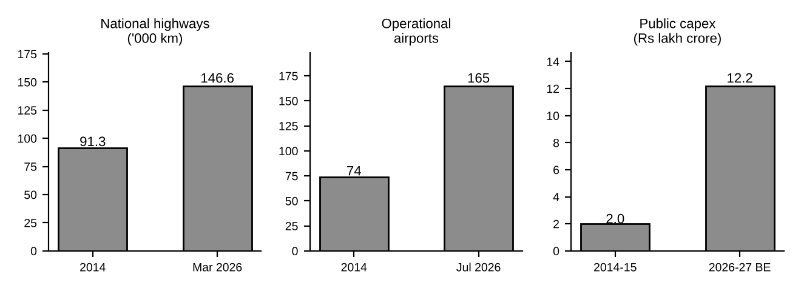
| Model | Description |
|---|---|
| EPC | Lowest-cost contractor builds, government maintains (not PPP) |
| BOT-Toll | Private party builds and tolls; picks bid for maximum revenue share or minimum VGF; bears traffic risk |
| BOT-Annuity | Private party gets fixed annual payment; no traffic risk |
| Hybrid Annuity Model (2016) | 40% of cost paid during construction by progress, 60% as annuities after completion; the private partner bears construction and maintenance risk but only part of financing risk |
| TOT (Toll-Operate-Transfer) | NHAI leases built highways (about 30 years) for an upfront payment, recycling funds into new roads |
The National Highways Development Programme (1998; 55,792 km planned) was folded into Bharatmala Pariyojana (economic corridors, inter-corridor and feeder routes, border and coastal roads, expressways). The national highway network has grown from 91,287 km (2014) to about 1,46,572 km (March 2026) with 45,516 km at four lanes or more; 22,590 km of Bharatmala roads were complete by March 2026. Roads carry about 69% of freight and 90% of passengers.
Indian Railways links markets and carries bulk goods for energy, steel and agriculture; a multiplier above 5 is estimated of railway investment on output (backward linkage 3.3, forward linkage 2.5) and calls rail six times more energy-efficient than roads. 100% FDI is allowed in rail infrastructure (automatic route) but not in train operations and safety. Reforms: the Bibek Debroy Committee (separation of infrastructure and train operations; independent regulator) and the Rail Development Authority (approved 2017). Station redevelopment models: PPP, collaboration with foreign governments and the Swiss Challenge; the 2022 decision moved the Mumbai, New Delhi and Ahmedabad stations to EPC.
Dedicated Freight Corridors (DFCCIL, a 100% Railways SPV): Eastern (Ludhiana–Sonnagar–Kolkata, 1,835 km) and Western (Delhi–Rewari–Vadodara–Mumbai, 1,483 km), with 100 km/h freight speed against an average of 26 km/h now. The 2026-27 Budget announced new DFCs and seven high-speed rail corridors (Mumbai–Pune, Pune–Hyderabad, Hyderabad–Bengaluru, Hyderabad–Chennai, Chennai–Bengaluru, Delhi–Varanasi, Varanasi–Siliguri). Electrification of the network stands at 99.6% (July 2026). Railway capital outlay rose from Rs 32,000 crore (2014) to Rs 2.78 lakh crore (2026-27). Mumbai–Ahmedabad is the first bullet-train corridor.
Industrial corridors: Delhi–Mumbai (DMIC), Bangalore–Mumbai, Chennai–Bangalore, Visakhapatnam–Chennai and Amritsar–Kolkata; a National Industrial Corridor Development Authority integrates them. SEZs are covered in the chapter on trade policy.
India has 13 major ports (central) and about 187 minor ports, and a 7,500 km coastline. Sagarmala (500+ projects under four pillars: port modernisation, connectivity, port-led industrialisation including 14 Coastal Economic Zones, and coastal community development) aims to cut logistics cost. Relative transport cost by road : rail : water = 18 : 6 : 1. The first port PPP was a JNPT terminal (BOT, 30 years). The Major Port Authorities Act 2021 replaced the 1963 Major Port Trusts Act, set a board for each major port and allowed tariff-setting by concessionaires. Major port capacity rose from 873 to 1,728 million tonnes a year (2014 to 2026); 111 national waterways are designated, 32 operational.
The Airports Authority of India (1995) manages airports; AERA (2009) regulates tariffs at major airports (over 35 lakh passengers a year). Airport PPPs began in 2005-06 with Delhi (GMR) and Mumbai (GVK) on a revenue-share model (Delhi shared 45.99% with the government); Bangalore and Hyderabad followed, and six AAI airports were leased in 2019 on a highest per-passenger-fee basis. The UDAN / Regional Connectivity Scheme (April 2017) caps fares (Rs 2,500 for about one hour or 500 km) and pays airlines VGF from a regional connectivity fund (Centre:state 80:20), with competitive bidding on minimum VGF. Operational airports have risen from 74 (2014) to 165 (July 2026).
Logistics cost is estimated at about 13% of GDP (against about 8% in developed economies); the National Logistics Policy 2022 targets single-digit cost and a top-25 rank in the Logistics Performance Index by 2030 through a Comprehensive Logistics Action Plan (eight areas) and the Unified Logistics Interface Platform. Multimodal Logistics Parks (35 planned; Jogighopa in Assam first) allow hub-and-spoke freight with aggregation, warehousing and customs.
Urban missions (Smart Cities, AMRUT, PMAY-U) are in the chapter on urbanisation and demography. Smart Cities used an SPV per city with 50:50 State/ULB equity and area-based development (retrofit, redevelopment, greenfield); AMRUT adopted a project approach for water, sewerage, drainage, transport and green space. Value Capture Finance taps land value gains created by public investment: additional Floor Area Ratio premiums, land pooling, transferable development rights, change-of-land-use fees.
Financing vehicles: InvITs and REITs are SEBI-regulated trusts that pool money to invest in infrastructure and real estate (at least 80% in revenue-generating assets). The National Investment and Infrastructure Fund (NIIF, 2015) is a quasi-sovereign wealth fund with a 49% government stake. The 2026-27 Budget added an Infrastructure Risk Guarantee Fund for lenders.
Q1. Consider the following statements: [UPSC 2019]
Answer: (a).
Mains: investment as capital formation and the design of a concession agreement (2020); infrastructure investment and inclusive growth (2021); PPP and railway station redevelopment (2022); India meeting 50 per cent of energy needs from renewables by 2030 (2022).
One page per chapter, 47 chapters: core idea, definitions, formulas, key numbers, comparisons and quick recall.
| Item | Value |
|---|---|
| Wheat given up per extra lakh tonne of steel (A to E) | 2, 4, 6, 8: cost rises, so the PPF is concave |
| Leakages: S 200 + T 300 + M 150 | Rs 650 crore |
| Injections: I 250 + G 300 + X 100 | Rs 650 crore (balanced) |
| After I falls to 200 and G to 250 | Injections 550, Rs 100 crore below leakages: output and employment fall |
Dates: Robbins definition 1932; state-led planning with licence-quota-permit raj 1947 to 1991; LPG reforms from 1991.
| Market | Command | Mixed | |
|---|---|---|---|
| Ownership | Private | State | Both |
| Who decides | Buyers and sellers, through prices | Central planning authority | Market decides most; state steers some |
| Fails on | Public goods, inequality, externalities | Calculation (Mises) | India |
| Three central questions | Decision |
|---|---|
| What | Consumer vs capital goods; civil vs defence |
| How | Labour-intensive or capital-intensive technique |
| For whom | Rent (land), wages (labour), interest (capital), profit (enterprise) |
an economy with no external sector: neither exports nor imports.
opportunity cost rises, because resources are not equally good at both jobs.
both fall.
price follows marginal utility and scarcity: water is abundant (marginal utility near zero), diamonds are scarce.
the "commanding heights" (heavy industry, banking, utilities), under the licence-quota-permit raj.
| Share of nominal GVA | 2022-23 | 2023-24 | 2024-25 (first revised) | 2025-26 (prov.) |
|---|---|---|---|---|
| Primary | 22.1% | 21.5% | 21.4% | 19.9% |
| Secondary | 26.0% | 26.1% | 25.8% | 25.8% |
| Tertiary | 51.9% | 52.4% | 52.8% | 54.3% |
MoSPI provisional estimates, base 2022-23, released 5 June 2026.
| Primary | Secondary | Tertiary | |
|---|---|---|---|
| Share of GVA, 2025-26 | 19.9% | 25.8% | 54.3% |
| Share of workers, 2025 (PLFS) | 43.3% | 24.8% | 31.8% |
Within primary in 2025-26: agriculture, livestock, forestry and fishing 18.0%; mining 1.9%. Hardin 1968; Jensen and Miller 2008 (Giffen behaviour for rice, Hunan, China).
| Rival | Non-rival | |
|---|---|---|
| Excludable | Private: food, clothes, a train seat | Club: cinema, paid toll highway |
| Non-excludable | Common pool: high-seas fish, groundwater | Public: defence, street lights, clean air |
intermediate.
Rs 380 crore (500 − 120).
a public good, e.g. national defence or street lights.
Rs 200, the final good (value added 100 + 50 + 50).
54.3% of GVA against 31.8% of workers.
| Price | Qd | Qs | Result | Price | Qd | TR | Ed | |
|---|---|---|---|---|---|---|---|---|
| 25 | 50 | 80 | Surplus 30 | 10 | 80 | 800 | 0.25 | |
| 20 | 60 | 60 | Equilibrium | 20 | 60 | 1,200 | 0.67 | |
| 15 | 70 | 40 | Shortage 30 | 25 | 50 | 1,250 | 1.00 | |
| 40 | 20 | 800 | 4.00 |
| Shift | New equilibrium | Shift | New equilibrium |
|---|---|---|---|
| Demand up (Qd = 130 − 2P) | P 25, Q 80 | Supply up (Qs = 4P + 4) | P 16, Q 68 |
| Demand down (Qd = 70 − 2P) | P 15, Q 40 | Supply down (Qs = 4P − 44) | P 24, Q 52 |
Arc Ed, price 20 to 25: 18.2 / 22.2 = 0.82. Rs 3 tax on sellers: P = 22, Q = 56; buyers bear Rs 2, sellers Rs 1 (Es 1.33, Ed 0.67). Es at P = 20 = 1.33. Engel's law (1857): CPI food weight 45.86% (2012 series) to 36.75% (2024 series).
| Movement along curve | Shift of curve | |
|---|---|---|
| Cause | Own price | Any other determinant |
| Name | Expansion / contraction | Increase / decrease |
| Ed | Price rises | Price falls | Ey / Exy | |
|---|---|---|---|---|
| Elastic (above 1) | Revenue falls | Revenue rises | Ey above 1 | Luxury |
| Unit elastic (1) | No change | No change | Ey 0 to 1 | Necessity |
| Inelastic (below 1) | Revenue rises | Revenue falls | Ey below 0 | Inferior |
| Exy positive: substitutes; negative: complements; zero: unrelated | Ceiling below equilibrium: shortage. Floor (MSP) above: surplus | |||
P* = 20, Q* = 60.
it rises.
2/3 (Rs 2 of a Rs 3 tax).
Ey = 30 / 20 = 1.5; a luxury.
procure the surplus (and store it).
| Example | Result |
|---|---|
| Income Rs 18, Px Rs 4, Py Rs 2 | 3 units of X + 3 of Y; MU per rupee 4 for both; TU = 90 (2X+5Y and 4X+1Y give 84) |
| U = x·y, M Rs 120, Px = Py = Rs 4 | x = y = 15; U = 225; MRS = 1 = Px/Py |
| Px rises Rs 4 to Rs 6 | x falls 15 to 10: substitution effect 2.75, income effect 2.25 |
| Oranges (utils) | MU 20, 16, 12, 8, 4, 0, −4; TU peaks at 60 on the 6th orange |
| 1 acre, 1 to 8 workers | TP peaks at 70 (7 workers); Stage II = workers 5 to 7 |
| TC = 60 + 30q − 9q² + q³ | Min AVC Rs 9.75 (q = 4.5); min ATC about Rs 21.7 (q near 5.5) |
| Good | Substitution effect | Income effect | Net effect of a price rise |
|---|---|---|---|
| Normal | less bought | less bought | less bought |
| Inferior | less bought | more bought | less bought |
| Giffen | less bought | more bought, stronger | more bought |
| Stage | MP, AP, TP | Firm operates? |
|---|---|---|
| I | MP rises then equals AP at peak; AP rising | No |
| II | MP positive but below AP; AP falling; TP rising | Yes |
| III | MP negative; TP falls | No |
| Output after doubling all inputs (100 at start) | Returns to scale |
|---|---|
| 250 | Increasing |
| 200 | Constant |
| 160 | Decreasing |
MU = 0 (the sixth orange in the example).
MUx/Px = MUy/Py with all income spent; equivalently MRS = Px/Py.
when the income effect of a price rise outweighs the substitution effect, so demand slopes upward.
at ATC's minimum (about Rs 21.7 in the example).
returns to scale vary all inputs together (long run); the law varies one input with others fixed (short run).
| Price | Output (MC = price) | Result |
|---|---|---|
| Rs 40 | 7 units | Profit Rs 108 (TR 280, TC 172) |
| Rs 22 | 6 units | Zero economic profit (P = ATC) |
| Rs 10 | 5 units | Loss Rs 60 = fixed cost |
| Demand P = 20 − q, MC = Rs 4 | Monopoly | Competition |
|---|---|---|
| Quantity | 8 | 16 |
| Price | Rs 12 | Rs 4 |
| Consumer surplus | 32 | 128 |
| Producer profit | 64 | 0 |
| Deadweight loss | 32 | 0 |
Monopoly: MR = 20 − 2q = 4. Game example (Rs crore, A first): both high 10,10; A high, B low 2,14; A low, B high 14,2; both low 5,5 (Nash equilibrium). Competition Act, 2002 replaced the MRTP Act, 1969.
| Perfect comp. | Monopolistic comp. | Oligopoly | Monopoly | |
|---|---|---|---|---|
| Sellers | Very many | Many | Few | One |
| Product | Identical | Differentiated | Either | No close substitute |
| Entry | Free | Free or easy | Barriers | Blocked |
| Price control | None | Some | Considerable; depends on rivals | Large |
| Competition Act, 2002 | Covers |
|---|---|
| Section 3 | Anti-competitive agreements (cartels, bid rigging) |
| Section 4 | Abuse of dominant position (dominance itself is not an offence) |
| Sections 5 and 6 | Regulation of combinations (mergers) above thresholds |
when price falls below minimum AVC (Rs 9.75 in the example).
q = 8, P = Rs 12 (competition: q = 16, P = Rs 4).
each firm gains by cutting price, so both end at (5, 5) instead of (10, 10).
4 × 625 = 2,500.
Section 4.
| 2025-26 provisional (MoSPI, 5 June 2026; base 2022-23) | Figure |
|---|---|
| GDP, constant prices | Rs 3,23,12,034 crore; growth 7.7% (2024-25: 7.1%; 2023-24: 7.2%) |
| GDP, current prices | Rs 3,46,35,638 crore; growth 8.9% |
| GVA real / nominal | Rs 2,94,91,088 crore (7.9%) / Rs 3,14,86,840 crore (9.1%) |
| Per capita GDP / NNI (current) | Rs 2,43,803 / Rs 2,08,090 |
| GDP − GVA (net product taxes) | Rs 31,48,798 crore, about 9.1% of GDP |
| Share of GDP, current prices | PFCE 56.7; GFCE 10.7; GFCF 31.9; exports 22.2; imports −24.4 (sum 97.1; rest 2.9 stocks, valuables, discrepancy) |
| Implied GDP deflator rise | about 1.1% (1.089 / 1.077 − 1) |
| Real GVA growth 2025-26 | % | % | |
|---|---|---|---|
| Agriculture and allied | 3.0 | Construction | 7.4 |
| Mining | 5.2 | Trade, hotels, transport | 11.0 |
| Manufacturing | 10.7 | Finance, real estate, prof. services | 10.4 |
| Electricity, gas, water | 1.7 | Public admin, defence, others | 5.0 |
Illustrative chain (GDP 1,000; depreciation 100; NFIA −20; product taxes net 90; production taxes net 10): NDP 900, NNP 880, GVA basic 910, GVA factor cost 900, NNP factor cost 780; personal income 790, disposable 740. Bases: 1993-94, 1999-2000, 2004-05, 2011-12 (adopted 2015), 2022-23.
| Included | Excluded |
|---|---|
| Output sold in markets; own-consumption (imputed); imputed rent; government services at cost; change in inventories | Second-hand goods (the sale); transfer payments; financial transactions; unpaid household work; illegal activity |
no, pensions and subsidies are transfers.
Rs 880 (1,000 − 100 − 20).
120.
7.7%.
no; they are transfers and appear in the current account of the balance of payments.
| HDI goalposts | Minimum | Maximum | HDI group | Value | |
|---|---|---|---|---|---|
| Life expectancy | 20 years | 85 years | Very high | 0.800 and above | |
| Mean schooling | 0 | 15 | High | 0.700 to 0.799 | |
| Expected schooling | 0 | 18 | Medium (India) | 0.550 to 0.699 | |
| GNI per capita (PPP) | $100 | $75,000 | Low | below 0.550 |
| India, Human Development Report 2025 (2023 data) | Value |
|---|---|
| HDI / rank | 0.685 (2022: 0.676) / 130 of 193 (2022: 133) |
| Inputs | Life expectancy 72.00; mean schooling 6.88; expected 12.95; GNI per capita $9,046.76 (2021 PPP) |
| Indices | Health 0.800; mean schooling 0.459; expected 0.719; education 0.589; income 0.681 |
| Inequality loss (IHDI) | 30.7% |
| World Bank, FY 2026-27 (GNI per capita, US$) | Low | Lower-middle | Upper-middle | High |
|---|---|---|---|---|
| Atlas method; India: lower-middle | 1,175 or less | 1,176 to 4,635 | 4,636 to 14,375 | above 14,375 |
India real GDP growth: 7.2% (2023-24), 7.1% (2024-25), 7.7% (2025-26 prov.). Solow example: s = 0.3, n + d = 0.07 gives k = 8.87, y = 2.07; s = 0.4 gives k = 13.66, y = 2.39 (+15.5%). ICOR 4 (36% / 9%) vs 6 (36% / 6%).
| Index | What it shows |
|---|---|
| IHDI | HDI discounted for inequality; equals HDI if no inequality |
| GDI | Female HDI / male HDI; 1 = parity |
| GII | Gender gaps in reproductive health, empowerment, labour market; 0 = equality, 1 = worst |
| MPI; GNH (Bhutan, 1972) | Overlapping deprivations; wellbeing in four pillars |
geometric mean (arithmetic mean until 2010).
0.685; rank 130 of 193.
1.08 / 1.01 = 6.9%.
Solow.
lower-middle (US$1,176 to 4,635 in FY 2026-27).
| Example | Result |
|---|---|
| MPC 0.8 | multiplier 5; I from 100 to 150 raises Y by 250 (1,000 to 1,250); with MPC 0.9: 10, with 0.5: 2 |
| Full employment Y = 1,200 | I = 100: spending 1,160, deflationary gap 40. I = 150: spending 1,210, inflationary gap 10 |
| b = 0.8, t = 0.25, m = 0.1 | multipliers 5; −4; 1; 2.5 (with t); 2 (with t and m) |
| a = 100, I = G = T = 100 | Y = 1,100; G up 50: +250; T up 50: −200; both: +50 |
| Paradox of thrift | autonomous C falls 100 to 50: Y falls 1,000 to 750; saving stays 100 |
| Machine Rs 1,000, yield Rs 120 | MEC = 12%: buy at r = 10%, not at 14% |
| Accelerator, v = 2 | output 100, 110, 120, 125, 125: net investment 20, 20, 10, 0 |
| Consumption theory | Author, year | Idea |
|---|---|---|
| Absolute income | Keynes, 1936 | Depends on current disposable income |
| Relative income | Duesenberry, 1949 | Relative to own past peak and others (ratchet) |
| Life-cycle | Modigliani and Brumberg, 1954 | Smooth consumption over lifetime |
| Permanent income | Friedman, 1957 | Expected long-run income; transitory change mostly saved |
| Random walk | Hall, 1978 | Changes only on news about income |
| Classical | Keynesian | |
|---|---|---|
| Output decided by | Supply (Say's law) | Effective demand |
| S and I equalised by | Interest rate | Income |
| AS curve | Vertical at full employment | Flat with unused capacity |
1,000.
1 / 0.2 = 5.
1.
a deflationary gap of 40 (output shortfall 200).
Friedman, 1957.
| Policy change | New curve | New r | New Y | Effect |
|---|---|---|---|---|
| G from 60 to 120 (fiscal) | IS: Y = 2,300 − 100r | 7.5 | 1,550 | Y +150, not +300; I falls 180 to 150: crowding out 150 |
| M from 400 to 480 (monetary) | LM: Y = 960 + 100r | 5.2 | 1,480 | Y +80; I rises to 196 |
India: repo rate held at 4% during 2020-21 with higher government spending and borrowing (both policies together); inflation target 4% with a 2% to 6% band.
| Fiscal expansion | Monetary expansion | |
|---|---|---|
| Curve that shifts | IS right | LM right |
| Interest rate | Rises | Falls |
| Income | Rises, less than multiplier effect | Rises |
| Private investment | Crowded out | Crowded in |
| Extreme case | Result |
|---|---|
| Liquidity trap (flat LM) | Monetary policy ineffective; fiscal fully effective |
| Vertical IS | Monetary changes rate, not income; fiscal fully effective |
| Vertical LM (classical) | Fiscal only raises the rate (complete crowding out); monetary fully effective |
| Shock | Result |
|---|---|
| AD rises | Output and prices both rise (demand-pull) |
| AD falls | Output and prices fall (recession) |
| SRAS falls (oil) | Output falls, prices rise: stagflation |
a lower interest rate raises investment and, through the multiplier, income.
r = 6, Y = 1,400.
the rate rises from 6 to 7.5 and crowds out private investment (180 to 150).
classical: saving = investment; Keynes: demand for and supply of money.
in a liquidity trap (flat LM).
falling output with rising prices; SRAS shifts left (e.g. an oil price rise).
| CPI (Combined) | WPI | |
|---|---|---|
| Compiled by | NSO, MoSPI | Office of the Economic Adviser, DPIIT |
| Base year | 2024 = 100 (first released Feb 2026); earlier 2012 | 2022-23 = 100 (June 2026); earlier 2011-12 |
| Covers; items | Goods and services; 358 | Goods only; 957 (earlier 697) |
| RBI target | Yes | No |
| CPI weights | 2012 series | 2024 series |
|---|---|---|
| Food and beverages | 45.86% | 36.75% |
| Housing | 10.07% (urban only) | 17.66%; rural house-rent index added |
| Groups | 6 | 12 divisions (COICOP 2018); weights from HCES 2023-24 |
| India, September 2026 (released 12 Oct 2026) | Figure |
|---|---|
| CPI inflation | 5.54% (August 2026: 4.83%) |
| Food inflation (CFPI) | 7.74% (August: 5.97%); rural 6.08%, urban 4.88% |
| Repo rate | 5.50% (raised from 5.25% on 7 October 2026) |
Target (Section 45ZA, RBI Act, 1934; Urjit Patel Committee, Jan 2014): 4% with a 2% to 6% band for 1 April 2026 to 31 March 2031. WPI 2011-12 weights: manufactured 64.23, primary 22.62, fuel and power 13.15. CPI-IW base 2016 (DA); CPI-AL and CPI-RL base 2019 (Aug 2025). Operation Greens: Budget 2018-19, Rs 500 crore.
| Approach | Measures |
|---|---|
| Monetary (short term) | Higher repo rate, tighter liquidity |
| Fiscal (short term) | Lower spending, higher taxes, lower duties on essential imports |
| Supply side | Buffer stock releases (FCI), lower import duties on wheat, pulses, edible oil |
| Structural | Cold chains, food processing, farm reforms, renewable energy |
5%.
CPI (Combined); 4% with a 2% to 6% band (2026-31).
it has no services and records wholesale, not retail, prices (Urjit Patel Committee, 2014).
fell from 45.86% to 36.75%.
vertical at NAIRU.
| PLFS 2025 (age 15+, usual status) | Figure |
|---|---|
| Unemployment rate | 3.1% (rural 2.4%, urban 4.8%) |
| LFPR / WPR | 59.3% (male 79.1, female 40.0) / 57.4% (male 76.6, female 38.8) |
| Status | Self-employed 56.2%, regular wage 23.6%, casual 20.2% |
| Sector | Agriculture 43.0%, manufacturing 12.1%, construction 12.0% |
| CWS, September 2026 (bulletin, 15 Oct 2026) | Unemployment 5.0% (rural 4.2, urban 6.9); LFPR 55.5%, WPR 52.7% |
| Provident fund and pension | Rule |
|---|---|
| EPF / EPS (EPFO, 1952 Act) | Employer and employee 12% each; employer: 3.67% EPF + 8.33% EPS; mandatory at 20+ workers; basic pay up to Rs 15,000 |
| NPS (PFRDA, 2013) | Employee 10%, government 14% (from 1 April 2019); join from 1 Jan 2004; at least 40% annuity, up to 60% lump sum |
| UPS (from 1 April 2025) | 50% of average last 12 months' basic for 25+ years; minimum Rs 10,000 after 10 years; family pension 60% |
Informal sector: over 90% of workforce, over 30% of GDP. Informal workers also covered under the Code on Social Security. Inter-state migrants: 5.6 crore (2011 Census); OSH Code defines them as earning up to Rs 18,000 a month.
| Labour code (2019-20) | Laws merged | Key provisions |
|---|---|---|
| Wages | 4 | Statutory floor wage; minimum wages revised within 5 years; overtime at least 2×; bonus 8.33% to 20% |
| Occupational Safety, Health and Working Conditions | 13 | 8-hour day; factory = 20 workers (with power) or 40; women at night with consent; migrant workers covered |
| Social Security | 9 | Gig and platform workers; aggregators 1% to 2% of turnover (cap 5% of payments to workers); EPFO at 20 workers |
| Industrial Relations | 3 | Permission for lay-off only above 300 workers; fixed-term employment; 14 days' strike notice; union needs over 51% support |
unemployed / labour force × 100 (4.76% in the example).
more workers than needed; marginal productivity zero, so output is unchanged if some leave.
3.1%.
29 (4 + 13 + 9 + 3).
3.67% to EPF and 8.33% to EPS.
| India's recessions (negative real growth) | Growth | Cause |
|---|---|---|
| 1957-58 | −1.2% | Drought |
| 1965-66 | −3.66% | Drought and war |
| 1972-73 | −0.32% | Drought and oil crisis |
| 1979-80 | −5.2% | Drought and political instability |
| 2020-21 | −6.6% | Covid-19 |
Source-book figures: older years on earlier base years; the 2020-21 figure has been revised. Leading indicators: stock prices, new orders, building permits; lagging: unemployment duration, inflation, bank credit. Slowdown example: GDP 100, 108, 112, 115 → growth 8%, 3.7%, 2.7%: still a slowdown, not a recession.
| Cycle | Length | Cause |
|---|---|---|
| Kitchin | 3 to 5 years | Inventory changes |
| Juglar | 7 to 11 years | Fixed business investment |
| Kuznets | 15 to 25 years | Construction and infrastructure |
| Kondratiev | 45 to 60 years | Major technological changes |
| Theory | Idea |
|---|---|
| Keynesian | Investment and expectations swing demand; multiplier amplifies |
| Multiplier-accelerator (Samuelson, Hicks) | Income raises investment, investment raises income |
| Monetary (Hawtrey, Friedman) | Money and credit drive the cycle |
| Schumpeter | Clusters of innovations bring booms |
| Real business cycle (Kydland, Prescott) | Technology shocks; markets clear |
| Minsky | Stable periods encourage borrowing until debt is unsustainable |
| Recovery shape | Meaning |
|---|---|
| V | Sharp fall, quick return |
| U | Long period near the bottom |
| L | Very slow growth; not back to earlier path |
| W | Double dip |
| K | Some parts rise, others keep falling |
two consecutive quarters of negative real GDP growth.
−5%.
the Juglar cycle, 7 to 11 years.
supply shocks (drought, war, oil, pandemic).
different parts of the economy recover differently: some rise, others keep falling.
IS-LM example: G up by 60 raised income by 150 instead of 300 (rate 6% to 7.5%). 2020-21: repo rate held at 4%, spending and borrowing expanded, path to fiscal deficit below 4.5% of GDP by 2025-26. 2026: inflation target 4% (2% to 6% band, 1 April 2026 to 31 March 2031); repo rate raised from 5.25% to 5.50% on 7 October 2026 with CPI inflation at 5.54% in September 2026. FRBM Act: Centre may not borrow from the RBI except through ways and means advances.
| Fiscal policy | Monetary policy | |
|---|---|---|
| Who | Government (Finance Ministry, Parliament) | RBI |
| Tools | Spending, taxes, borrowing | Repo rate, reserve ratios, OMOs, liquidity operations |
| Channel | Directly changes aggregate demand | Interest rates, credit, exchange rate |
| Speed | Slow to legislate, fast once spending starts | Fast to decide, slow to affect |
| Situation | Fiscal | Monetary | Result |
|---|---|---|---|
| Deep recession | Expansionary | Expansionary | Strong rise in output; no crowding out |
| Boom, high inflation | Contractionary | Contractionary | Demand and inflation fall; risk of overshooting |
| Stagflation | Contractionary or supply measures | Contractionary | Lower inflation at some cost in output |
| Cut deficit, keep growth | Contractionary | Expansionary | Lower rates offset the fiscal drag |
| Growth with inflation control | Expansionary | Contractionary | Higher rates; crowding out; exchange-rate pressure |
| Cycle stage | Pro-cyclical | Counter-cyclical |
|---|---|---|
| Boom | Spending up, taxes down | Spending down, taxes up |
| Recession | Spending down, taxes up | Spending up, taxes down |
raise spending and cut taxes.
in a boom, when resources are fully used.
in a liquidity trap, when the policy rate nears zero and demand is weak.
expansionary fiscal and expansionary monetary.
when the interest rate on debt is below the growth rate (negative IRGD).
| Item | Value |
|---|---|
| Demonetisation | 8 November 2016; Rs 500 and Rs 1,000 notes, about 86% of currency in circulation; RBI Act, 1934 |
| e-Rupee in circulation, RBI Annual Report 2024-25 | about Rs 1,016 crore |
| Form | Description | Example |
|---|---|---|
| Commodity | Value as a commodity | Gold, silver coins |
| Representative | Claim on a commodity | Slips redeemable in gold |
| Fiat | By order, not commodity-backed | Rupee notes and coins |
| Bank (deposit) | Demand deposits moved by cheque or electronic transfer | Savings and current balances |
| Near money | Close substitutes, not directly spendable | FDs, treasury bills |
| e-Rupee | Crypto currency | |
|---|---|---|
| Issuer | RBI | Private network |
| Legal tender | Yes | No |
| Value | Fixed at par | Fluctuates |
| Demonetisation effect | Result |
|---|---|
| Liquidity | Cash fell; deposits rose; market rates fell |
| Money supply | Fell in the short run |
| GDP | Demand shock and supply shock (cash is an input) |
medium of exchange, unit of account, store of value.
the Re 1 note and all coins; all other notes are issued by the RBI.
Rs 1.
about 86%.
e-RUPI is a purpose-specific voucher, not a CBDC, and cannot be converted into cash.
| Reserve money (RBI weekly supplement) | Figure |
|---|---|
| 30 September 2026 | Rs 52,78,142 crore, up 8.7% year on year (31 March 2026: Rs 51,07,831 crore) |
| Currency in circulation / bankers' deposits with RBI | Rs 43,05,905 crore / Rs 8,45,153 crore |
| 15 September 2026 | Currency in circulation up 13.2% year on year |
| NRI account | Form | Tax and repatriation |
|---|---|---|
| FCNR | Foreign currency; term only | Non-taxable; freely repatriable |
| NRE | Rupee; current, savings, RD, FD | Non-taxable; freely repatriable |
| NRO | Rupee; Indian income (rent, dividend, pension) | Taxable; limited repatriation |
| Old | Components |
|---|---|
| M1 | Currency with public + demand deposits + "other" deposits with RBI (narrow) |
| M2 | M1 + post office savings bank savings deposits |
| M3 | M1 + time deposits (broad; most used) |
| M4 | M3 + all post office savings deposits (excl. NSC) |
| New | Components |
|---|---|
| NM1 | = M1 |
| NM2 | NM1 + short-term time deposits (up to one year) |
| NM3 | NM2 + long-term time deposits + call and term funding from FIs |
| L1 / L2 / L3 | NM3 + post office deposits / + FI term deposits, borrowings, CDs / + NBFC public deposits |
| Change | Multiplier |
|---|---|
| Higher cdr | Falls |
| Higher CRR or SLR, more excess reserves | Falls |
| Lower CRR or SLR | Rises |
no; cash held by producers of money (RBI, government, banks) is excluded.
M3.
1.2 / 0.3 = 4.
lowers it (and reserve money); government spending restores it.
Rs 52,78,142 crore, up 8.7%.
| Priority sector lending (PSL) targets | Target |
|---|---|
| Commercial banks incl. foreign | 40% of adjusted net bank credit |
| RRBs; small finance banks | 75%; 75% |
| Urban cooperative banks | 40% (to rise to 75% in phases) |
| District weights (from 2021-22) | 125% in low-PSL districts (below Rs 6,000 per capita); 90% in high (above Rs 25,000) |
Co-lending (Nov 2020): NBFC keeps at least 20% of each loan; on-lending counts up to 5% of PSL. Lead Bank Scheme: December 1969. KCC: 1998-99; loans up to Rs 5 lakh (Budget 2025-26) at 7%, prompt repayer pays 4%. Reserves: about 90% foreign currency assets, plus SDRs and gold. 2025-26 surplus transfer: about Rs 2.87 lakh crore (May 2026), buffer 6.5%. Governor, October 2026: Sanjay Malhotra.
| Governor or economist | View on autonomy |
|---|---|
| Manmohan Singh | Finance minister's view prevails unless Governor will quit |
| Bimal Jalan | Accountable to government; policy within its framework |
| D. Subbarao | Autonomous within the Act; Section 7 shows it is not fully autonomous, non-use shows responsibility |
| Y. V. Reddy | Free on operations; consult on policy; Section 7 is the "sword of Damocles" |
| Priority sector | Examples |
|---|---|
| Agriculture | Farmers, FPOs, crop and machinery loans, solar pumps |
| MSME, export credit, education, housing, renewable energy | As defined by the RBI |
| Social infrastructure; weaker sections | Schools, water, health; small and marginal farmers, artisans, SC/ST, SHGs, minorities |
1 April 1935; 1949.
Rs 5 lakh per depositor per bank.
90 days.
the Centre to give the RBI written directions in the public interest.
40% of adjusted net bank credit.
| Lending-rate regime | Introduced | How set |
|---|---|---|
| Base Rate | July 2010 | Minimum rate; average cost of funds |
| MCLR | 1 April 2016 | Marginal cost of funds; reviewed monthly |
| EBLR | 1 October 2019 | External benchmark (repo, 3- or 6-month T-bill); reset at least every 3 months |
7 October 2026 (MPC, 63rd meeting): repo raised 5.25% to 5.50%; stance neutral → "calibrated tightening"; projections GDP 7.1%, CPI 5.2% for 2026-27; next meeting 2 to 4 December 2026 (news reports; RBI statement not opened). CRR 3%; from fortnight starting 16 October 2026 minimum daily CRR balance raised from 90% to 99% of requirement. SLR 18%.
| Instrument | What it is |
|---|---|
| Repo | RBI lends overnight against securities; policy rate |
| Reverse repo | RBI absorbs liquidity overnight; below repo |
| SDF (April 2022) | Banks park any amount overnight without collateral |
| MSF (2011) | Extra overnight borrowing against SLR securities (up to 2% of NDTL) at penal rate |
| Bank rate | Aligned with MSF; penalty on CRR and SLR shortfalls |
| Stance | Meaning |
|---|---|
| Expansionary (dovish) | More money, lower rates |
| Contractionary (hawkish) | Less money, higher rates |
| Neutral / calibrated tightening | Either way on data / measured tilt to tightening |
4% with a 2% to 6% band.
inflation above 6% or below 2% for three consecutive quarters.
six (3 RBI, 3 Government); the Governor.
5.25% and 5.75%.
EBLR, 1 October 2019.
| Committee | Year | Main points |
|---|---|---|
| Narasimhan I | 1991 | SLR down to 25%; deregulate rates; ARC; level playing field |
| Narasimhan II | 1998 | PSB autonomy; Government equity down to 33%; mergers; RBI not to own banks |
| Nachiket Mor | 2013-14 | Full-service account for every resident above 18; payment access within 15 minutes' walk |
| P. J. Nayak | 2014 | Bank Investment Company; Banks Board Bureau, replaced by FSIB from 1 July 2022 |
CRR rose 2% (1960) to 15% and SLR 25% to 38.5% by 1991. MUDRA (SIDBI subsidiary, refinance only): Shishu up to Rs 50,000; Kishor Rs 50,000 to Rs 5 lakh; Tarun Rs 5 lakh to Rs 10 lakh. NaBFID: Rs 20,000 crore. P2P platforms: escrow, aggregate Rs 50 lakh per lender (2017 guidelines). First DFI: IFCI, 1948.
| AIFI | Established | Role |
|---|---|---|
| NABARD | 1982 (Act 1981) | Agriculture, rural credit; refinance; supervises RRBs and rural cooperatives |
| NHB | 1988 (Act 1987) | Housing finance; refinance |
| EXIM Bank | 1982 (Act 1981) | Exporters and importers |
| SIDBI | 1990 (Act 1989) | MSME promotion and finance; mainly refinance |
| Regulator | Law | HQ |
|---|---|---|
| RBI | RBI Act 1934 | Mumbai |
| SEBI | SEBI Act 1992 (set up 1988) | Mumbai |
| IRDAI | IRDA Act 1999 | Hyderabad |
| PFRDA | PFRDA Act 2013 | New Delhi |
| IFSCA | IFSCA Act 2019 | Gandhinagar |
| IBBI | IBC 2016 | New Delhi |
19 July 1969; deposits above Rs 50 crore.
Centre : state : sponsor bank = 50 : 15 : 35.
no; it cannot lend or issue credit cards (deposits up to Rs 2 lakh per customer).
P. J. Nayak Committee, 2014.
the Finance Minister; it is non-statutory.
| Basel | Year | Main idea |
|---|---|---|
| I | 1988 | Capital for credit risk (8% of RWA) |
| II | 2004 | Three pillars: minimum capital, supervisory review, market discipline |
| III | 2010 | Quality capital, CCB, countercyclical buffer, leverage ratio, LCR and NSFR |
| June 2019 resolution circular | Rule |
|---|---|
| Review | Starts within 30 days of default |
| Inter-creditor agreement | 75% by value and 60% by number binds all |
| Plan | Within 180 days; extra provisions 20% (+15% if not within 365 days) |
GNPA of scheduled commercial banks: 1.8% in March 2026 (FSR, June 2026); about 11% peak 2017-18. Section 35AA, BR Act (2017); Supreme Court 2 April 2019: RBI can direct banks to IBC only for specific defaults with Central authorisation.
| Pre-pack (PIRP, 2021) | Normal CIRP |
|---|---|
| Only debtor starts it | Debtor or creditors |
| Owner submits plan; management stays | Open bidding; RP runs the firm |
| Default below Rs 1 crore; 120 days | Default above Rs 1 crore; 180 days |
| CIRP step | Detail |
|---|---|
| Trigger | Default above Rs 1 crore; application to NCLT (operational creditor: 10-day notice) |
| CoC | Financial creditors only; approves plan by 66% vote by value |
| Time | 180 days + 90 extension; overall limit 330 days |
| Failure | Liquidation; workers' dues for 24 months get priority |
| Pillars | IPs, information utilities, NCLT/DRT, IBBI |
| NBFCs (Section 227, 15 Nov 2019) | Assets above Rs 500 crore; only on RBI application; DHFL first |
the RBI, not the bank.
more than 90 days.
60 days.
15% cash (Rs 45 crore) and 85% security receipts (Rs 255 crore).
financial creditors only.
| Money market instrument | Maturity or feature |
|---|---|
| Call money / notice money | 1 day / 2 to 14 days; unsecured, banks and primary dealers |
| Certificate of Deposit | Up to one year; tradable, issued by scheduled commercial banks |
| Commercial Paper | 7 days to one year; unsecured promissory note |
| Repo / reverse repo, TREPS | Secured against government securities |
T-bill example: 91-day Rs 100 bill issued at Rs 98.20 earns Rs 1.80. FPI limit in corporate bonds raised to 15% of outstanding stock (from 9%). Repo rate 5.50% from 7 October 2026.
| G-sec type | Features |
|---|---|
| Treasury bills | Below one year (91, 182, 364 days); zero-coupon, issued at a discount |
| Cash Management Bills | From 2010; under 91 days; temporary cash mismatches of the Centre |
| Dated securities | 5 to 40 years; fixed, floating, inflation-indexed, special, recapitalisation bonds, SGBs |
| State Development Loans | State Governments' long-term bonds, one year or more |
| Market | Instruments | Maturity |
|---|---|---|
| Money market | Call/notice money, repos, T-bills, CMBs, CP, CDs | Up to one year |
| Capital market | Shares, bonds, debentures, G-secs | More than one year |
they fall.
200.
7 days to one year.
treasury bills (91, 182, 364 days).
non-residents to invest in specified G-secs with no investment ceiling (March 2020).
| Type | Where | Example |
|---|---|---|
| Forward | OTC; customised | US$1 million at Rs 88.50 in 3 months: Rs 8.85 crore regardless of spot |
| Future | Exchange; standardised, daily settlement | Buy at 25,000; closes 25,300: gain 300 points per unit |
| Option | Exchange or OTC; premium | Call strike 25,000, premium 150: break-even 25,150; max loss 150 |
| Swap | OTC | Pay fixed 6%, receive floating 6.5% on Rs 100 crore: net Rs 0.5 crore |
| SEBI measures on index options (Oct 2024) | Detail |
|---|---|
| Contract size | Minimum Rs 15 lakh |
| Weekly expiry | One benchmark index per exchange (from 20 Nov 2024) |
| Premium; expiry-day margin | Collected upfront; extra 2% extreme-loss margin on short options |
SEBI study: 91% of individual equity-derivatives traders lost money in 2024-25; losses about Rs 1.05 lakh crore, up 41%. BSE (Mumbai) and NSE (began trading 1994) are the exchanges; indices Sensex and Nifty 50.
the selling shareholders (promoters or Government), not the company.
April 1992; the Capital Issues Control Act (May 1992).
25,150.
the RBI (SEBI covers exchange-traded derivatives).
NSDL and CDSL.
| Milestone | Year |
|---|---|
| LIC nationalised / general insurance nationalised | 1956 / 1972 |
| Bank nationalisation / RRBs | 1969 and 1980 / 1975 |
| Nachiket Mor Committee | 2013-14 |
| PMJDY launched; payments banks (11) and SFB (10) licences | August 2014; 2015 |
| Current position | Figure |
|---|---|
| PMJDY accounts, 19 August 2026 | about 59.09 crore; deposits about Rs 3.17 lakh crore; women 55.7%; rural and semi-urban 77.8% (to Jan 2021: 41.75 crore) |
| DBT (June 2026 fact-sheet) | over Rs 51 lakh crore to about 176 crore beneficiary entries (cumulative) |
| UPI transactions | about 2 crore (FY 2016-17) to over 24,162 crore (FY 2025-26) |
| Account Aggregators, 31 March 2026 | 17 AAs, 179 FIPs, 989 FIUs; 2.88 billion accounts enabled; 284.6 million linked |
Jan Dhan accounts, Aadhaar and mobile numbers.
August 2014.
no; it takes only demand deposits and cannot lend or issue credit cards.
a Financial Information Provider (a bank or other holder of data); the FIU is the user.
NPCI.
Rs 20 lakh for the customer's loss and Rs 1 lakh for harassment.
| Insurance FDI limit | Year |
|---|---|
| 26% | 2000 |
| 49% (automatic route) | February 2015 |
| 74% | 2021 |
| 100% of paid-up equity | Sabka Bima Sabki Raksha (Amendment of Insurance Laws) Act, 2025 (LS 16 Dec; RS 17 Dec 2025) |
| 100% in intermediaries | February 2020 |
| Milestone | Year |
|---|---|
| LIC (life insurance nationalised) | 1956 |
| General insurance nationalised (effective 1 Jan 1973) | 1972 |
| IRDA Act; sector opened; IRDA statutory (April 2000) | 1999; 2000 |
LIC holds roughly 75% of the life market. Insurers hold long-term funds that finance infrastructure. Low penetration reflects low awareness and purchase only under pressure. Pension schemes (NPS, UPS, APY) are in the chapter on Employment, Unemployment and Labour Law.
1956 (LIC); 1972.
100% of paid-up equity (Act of December 2025).
every quarter, linked to G-sec yields.
bring idle household gold into the economy and reduce dependence on gold imports.
premium as a percentage of GDP.
| Illustrative slabs (nil to 3 lakh; 10% 3-6 lakh; 20% above) | Result |
|---|---|
| Income Rs 8 lakh | 10% × 3 lakh = 30,000 + 20% × 2 lakh = 40,000 = Rs 70,000; average 8.75%; marginal 20% |
| VAT at 10% | Seller A | Seller B (buys from A) |
|---|---|---|
| Input cost | 0 | Rs 110 (A's price incl. VAT) |
| Value added; sale price | Rs 100; Rs 100 | Rs 200; Rs 300 |
| VAT charged / paid to government | Rs 10 / Rs 10 | Rs 30 / Rs 30 − 10 credit = Rs 20 |
| Total tax to government | Rs 30 = 10% of final price Rs 300 | Consumer pays Rs 330 |
Centre's tax-GDP ratio (before devolution; Business Standard analysis): 11.5% in April-September 2024 with buoyancy 1.3; 10.8% in April-September 2025 with buoyancy 0.32 (half-year figures only). Bread tax Rs 5: 0.0005% of Rs 10 lakh income vs 0.005% of Rs 1 lakh.
equality, certainty, convenience, economy.
1.2.
it removes the cascading effect and discourages evasion, since each seller asks for a receipt from the one before.
origin-based (GST is destination-based).
revenue is zero.
| Rs crore (PRS Legislative Research) | 2025-26 RE | 2026-27 BE |
|---|---|---|
| Gross tax revenue | 40,77,772 | 44,04,086 |
| Devolution to States | 13,92,971 | 15,26,255 |
| Centre's net tax revenue / non-tax revenue | 26,74,661 / 6,67,662 | 28,66,922 / 6,66,228 |
| Revenue receipts | 33,42,323 | 35,33,150 |
| Revenue expenditure / capital expenditure | 38,69,087 / 10,95,755 | 41,25,494 / 12,21,821 |
| Total expenditure | 49,64,842 | 53,47,315 |
| Interest payments / subsidies | 12,74,338 / 4,69,505 | 14,03,972 / 4,54,773 |
| Revenue deficit | 5,26,764 (1.5% of GDP) | 5,92,344 (1.5%) |
| Fiscal deficit | 15,58,492 (4.4% of GDP) | 16,95,768 (4.3%) |
2026-27: interest about 26% of expenditure and 40% of revenue receipts; capital expenditure +11.5%; subsidies −3.1% (food Rs 2,27,629 crore; fertiliser Rs 1,70,799 crore); States 34.7% of gross tax revenue. Disinvestment: Rs 33,837 crore (2025-26 RE), Rs 80,000 crore (2026-27 BE). Contingency Fund Rs 30,000 crore (raised from Rs 500 crore, 2021-22).
| Consolidated Fund (Art. 266(1)) | Contingency Fund (Art. 267) | Public Account (Art. 266(2)) | |
|---|---|---|---|
| In | Taxes, receipts, loans (G-secs, T-bills, foreign) | Imprest at President's disposal | Small savings, provident funds, deposits |
| Out | All expenditure; Parliament must authorise | Unforeseen expenses; repaid from Consolidated Fund | Refund of deposits; no vote needed |
| Receipts | Expenditure | |
|---|---|---|
| Revenue | Tax and non-tax (dividends, RBI profits, fees); non-redeemable | Salaries, pensions, subsidies, interest, grants to States |
| Capital | Borrowing, small savings, recovery of loans, disinvestment | Land, buildings, machinery, shares; loans to States and PSEs |
| Tax | How rate changes |
|---|---|
| Direct taxes | Finance Act amendment |
| Customs and Central Excise | Within ceiling: notification; above: Finance Act |
| GST | GST Council decision and gazette notification |
the Appropriation Bill (Article 114).
advance money for part of the year (normally two months at one-sixth of annual expenditure), expenditure side only (Article 116).
the Public Account.
Rs 16,95,768 crore, 4.3% of GDP.
a non-debt capital receipt.
| Rs crore | 2025-26 RE | 2026-27 BE |
|---|---|---|
| Revenue deficit | 5,26,764 (1.5%) | 5,92,344 (1.5%) |
| Fiscal deficit | 15,58,492 (4.4%) | 16,95,768 (4.3%) |
| Primary deficit | 2,84,154 (0.8%) | 2,91,796 (0.7%) |
| Revenue deficit / fiscal deficit | 33.8% | 34.9% |
| FRBM and committees | Provision |
|---|---|
| FRBM 2003 | Fiscal deficit 3% of GDP by 31 March 2021; general government debt 60% (Centre 40%) by 2024-25; guarantees ≤ 0.5% of GDP a year |
| N. K. Singh Committee (2016-17) | Debt anchor 60% (Centre 40% + States 20%) by 2023; fiscal deficit 2.5%, revenue deficit 0.8%; fiscal council |
| 2020-21 | Fiscal deficit 9.2% of GDP; Act not amended; aim below 4.5% by 2025-26 |
| 2026-27 | Central debt 55.6% of GDP, to 50% ± 1% by March 2031 |
| 16th Finance Commission | Centre 3.5% by 2030-31; States 3% of GSDP; combined debt 77.3% (2026-27) to 73.1% (2030-31) |
| Debt-to-GDP (%) | 2014-15 | 2018-19 | 2020-21 | 2022-23 |
|---|---|---|---|---|
| Centre | 51.4 | 45.9 | 59.3 | 56.0 |
| States | 22.0 | 25.2 | 31.1 | 29.5 |
External debt: US$ 762.8 billion, 20.8% of GDP at end-March 2026 (19.8% a year earlier; RBI). Sept 2022: sovereign US$ 124.5 billion (3.9% of GDP), non-sovereign US$ 486 billion (15.3%); short-term 21.6%; US dollar 55.5%, rupee 30%. Centre's total debt 31 Dec 2022: Rs 144.5 lakh crore. States 2023-24: fiscal deficit 3.5% of GSDP (0.5% tied to power reforms).
fiscal deficit − interest payments.
4.3% of GDP (Rs 16,95,768 crore).
Ways and Means Advances (WMA).
States may borrow only within India; consent is needed if they owe the Centre or it guaranteed the loan.
Central debt 55.6% of GDP in 2026-27, coming down to about 50% ± 1% by March 2031.
| New regime FY 2025-26 (Rs lakh) | Rate |
|---|---|
| Up to 4 | Nil |
| 4 to 8 / 8 to 12 | 5% / 10% |
| 12 to 16 / 16 to 20 | 15% / 20% |
| 20 to 24 / above 24 | 25% / 30% |
| Corporate regime | Base | Surcharge | Cess | Effective |
|---|---|---|---|---|
| Section 115BAA (no exemptions) | 22% | 10% | 4% | 25.17% |
| Old (exemptions) | 30% | 12% | 4% | 34.94% |
| Section 115BAB (new manufacturing) | 15% | 10% | 4% | 17.16% |
| Tax | Position |
|---|---|
| Capital gains (listed equity) | Short-term (up to 12 months) 20%; long-term 12.5% on gains above Rs 1.25 lakh |
| Dividend | DDT abolished (Finance Act 2020); taxed in shareholder's hands; TDS above Rs 5,000 |
| STT, Budget 2026-27 | Options premium 0.1% → 0.15%; futures 0.02% → 0.05% |
| TCS, Budget 2026-27 | Education or medical remittance above Rs 10 lakh: 5% → 2% |
Rs 12 lakh (Rs 12.75 lakh for a salaried person with the Rs 75,000 standard deduction).
25.17% (22% × 1.10 × 1.04).
1 April 2026.
23.75%.
the higher of normal tax on taxable income and MAT on book profit.
| Input tax credit at 18% | Seller A | Seller B |
|---|---|---|
| Input cost; value added | 0; Rs 100 | Rs 118; Rs 200 |
| Sale price; GST | Rs 100; Rs 18 (9 + 9) | Rs 300; Rs 54 |
| Credit; GST paid to government | —; Rs 18 | Rs 18; Rs 36 (18 + 18) |
| Invoice | Rs 118 | Rs 354 |
Total GST Rs 54 = 18% of final price Rs 300. Until 21 September 2025: 5%, 12%, 18%, 28%, gold 3% and cesses. From 22 September 2025 (Council meeting 3 September 2025): 12% and 28% abolished; cess scrapped except pan masala, cigarettes, chewing tobacco.
| Collections (provisional) | Sept 2025 | Sept 2026 |
|---|---|---|
| Gross GST | Rs 1.77 lakh crore | Rs 2.04 lakh crore (+14.7%) |
| Domestic / imports | Rs 1.25 lakh crore / Rs 52,031 crore | Rs 1.38 lakh crore (+10.1%) / Rs 65,525 crore (+25.9%) |
| Refunds; net GST | Rs 27,848 crore | Rs 27,001 crore (−3%); Rs 1.77 lakh crore (+18.1%) |
| April-September 2026 | — | Gross Rs 12.46 lakh crore (+11.6%); net Rs 10.66 lakh crore (+10.4%) |
| Rate | From 22 September 2025: examples |
|---|---|
| 5% (from 18%) | Hair oil, shampoo, soap, toothpaste, biscuits, packaged water |
| 18% (from 28%) | Small cars, motorcycles under 350 cc, cement, ACs, TVs above 32 inches |
| Nil | Individual health and life insurance premiums, paneer, roti, most education items |
| 40% | Tobacco, pan masala, aerated drinks, large cars, yachts, casinos |
1 July 2017; the 101st Constitution Amendment.
three-fourths of weighted votes; the Centre (one-third of votes).
5% and 18% (plus 40% on luxury and sin goods).
no; CGST pays CGST, then IGST.
the rate on inputs is higher than on the output, so credit piles up and refunds are needed.
| 14th FC (2015-20) | 15th FC (2021-26) | 16th FC (2026-31) | |
|---|---|---|---|
| Chair | Y. V. Reddy | N. K. Singh | Arvind Panagariya |
| States' share | 42% (up from 32%) | 41% (1 point for J&K and Ladakh) | 41% |
| Horizontal criterion | 15th FC | 16th FC |
|---|---|---|
| Income distance | 45% | 42.5% |
| Population (2011 Census) | 15% | 17.5% |
| Demographic performance | 12.5% | 10% (population growth 1971-2011) |
| Area | 15% | 10% |
| Forest and ecology | 10% | 10% |
| Contribution to GDP | none | 10% |
| Tax and fiscal effort | 2.5% | dropped |
Effective transfer as share of gross tax revenue (Bank of Baroda): 32.1% average 2021-26; 34.0% (2016-20); 27.9% (2011-15). 2026-27 BE: Rs 15,26,255 crore of Rs 44,04,086 crore = 34.7%. 16th FC shares: UP 17.62, Bihar 9.95, MP 7.35 largest; Sikkim 0.34, Goa 0.37, Nagaland 0.48 smallest; Rajasthan 5.93% (15th FC: 6.03%).
| 16th FC grants (Rs 9,47,409 crore, 2026-31) | Content |
|---|---|
| Local bodies | Rs 7,91,493 crore (rural 4,35,236; urban 3,56,257); 80% basic, 20% performance |
| Disaster | Rs 2,04,401 crore corpus; Centre : State 75:25 (90:10 north-eastern and Himalayan States) |
| Discontinued | Revenue deficit, sector-specific and State-specific grants |
| Fiscal rules | Centre 3.5% of GDP by 2030-31; States 3% of GSDP; no off-budget borrowing; combined debt 77.3% → 73.1% |
| Centrally Sponsored | Central Sector | |
|---|---|---|
| Funding | Shared 50:50, 70:30, 75:25, 90:10 | 100% Centre |
| Implementation | State governments | Central agency |
| Examples | PMGSY, MGNREGA | Namami Gange, Sagarmala, PM Fasal Bima Yojana |
Article 280; every five years.
41%.
no; the Centre keeps them (Article 271).
Arvind Panagariya.
75:25 (90:10 for north-eastern and Himalayan States).
| Stage of integration | Features |
|---|---|
| Preferential trade area | Lower tariffs on some goods |
| Free trade area | No tariffs among members; own tariff on outsiders |
| Customs union | FTA + common external tariff |
| Common market | Customs union + free movement of labour and capital |
| Economic union | Common market + common macro and exchange rate policy (EU; single currency = monetary union) |
| Argument for protection | Comment |
|---|---|
| Infant industry (Mill-Bastable) | Works only if protection is temporary |
| Optimal tariff | Large country lowers world price of imports; partners retaliate |
| National security; anti-dumping; employment | Defence, food, energy; offsets sales below home price; saves jobs at cost to consumers |
David Ricardo.
Country A (cost 0.5 wine against B's 1 wine).
US exports were less capital-intensive than its imports, contrary to Heckscher-Ohlin.
a tariff earns revenue for the government; a quota's gain goes to import licence holders.
a free trade area with a common external tariff.
| US$ bn (RBI, 8 June 2026, preliminary) | 2024-25 | 2025-26 |
|---|---|---|
| Current account | −22.9 (0.6% of GDP) | −25.2 (0.6%) |
| Merchandise trade deficit | 286.9 | 337.3 |
| Net services receipts | 188.8 | 216.6 |
| Net secondary income (mostly remittances) | 123.5 | 143.6 |
| Net FDI / net FPI | 1.0 / +3.6 | 6.9 / −16.4 |
| Reserves, BoP basis | −5.0 | −23.6 |
January-March 2026: current account surplus US$7.1 bn (0.7% of GDP): services US$60.4 bn and remittances US$43.5 bn exceeded goods deficit US$83.4 bn. April-June 2026: deficit US$4.2 bn (0.5%); goods deficit US$86.1 bn (US$68.9 bn a year earlier); net FPI outflow US$9.6 bn; net FDI inflow US$6.1 bn. BoP goods deficit (US$337.3 bn) differs from Commerce figure (US$333.2 bn). External debt US$762.8 bn, 20.8% of GDP (end-March 2026).
| Correction policy | Action | Comment |
|---|---|---|
| Expenditure-reducing | Tight fiscal and monetary policy | Costs growth and jobs |
| Expenditure-switching | Devaluation, tariffs, export subsidies | Works only if demand is elastic |
| Capital-account measures | FDI, NRI deposits, ECBs, Masala bonds | Adds liabilities; can reverse |
| Direct controls; borrowing | Import curbs; IMF, swap lines | Distortion; conditionality |
current account (primary income); taking the loan is financial.
secondary income in the current account.
US$25.2 bn (0.6% of GDP).
the sum of export and import price elasticities of demand to exceed one.
IT-sector earnings and remittances (UPSC 2019).
| Reserves, 9 October 2026 | US$ bn | Share |
|---|---|---|
| Foreign currency assets | 597.6 | 82.3% |
| Gold | 105.1 | 14.5% |
| SDRs held | 18.5 | 2.6% |
| Reserve tranche position | 4.8 | 0.7% |
| Total | 726.0 | — |
Rupee: about Rs 1 = $1 in 1947, Rs 31 by 1993. 2025-26: weakened 9.9%; record low about Rs 95.7 (May 2026); about Rs 95 in mid-October 2026. RBI net spot sales US$53.13 bn in 2025-26 (record); net short forward position US$103.06 bn (end-March 2026). REER (press, June 2026): 91.26 after a fall from 108.03 to 89.08; RBI reads below 100 as undervalued. Reserves fell US$8.6 bn and US$12.95 bn in the two latest weeks; up US$34.9 bn on end-March 2026.
a managed float.
real appreciation: exports less competitive, imports cheaper.
a country cannot have a fixed exchange rate, free capital mobility and an independent monetary policy together.
foreign currency assets, gold, SDRs and the reserve tranche position.
US$250,000.
| US$ bn, 2025-26 (Commerce; India Briefing) | Exports | Imports | Balance |
|---|---|---|---|
| Merchandise | 441.74 (+0.9%) | 776.03 | −333.24 |
| Services | 418.31 (+7.9%) | 204.42 | +213.89 |
| Total | 860.05 | 980.45 | −119.30 |
Non-petroleum exports US$387.9 bn (+3.6%). April-September 2026: merchandise exports US$259.89 bn (+18.5%), imports US$437.53 bn (+16.3%). Pakistan MFN: given 1996, withdrawn February 2019 (GATT Article XXI).
| FTA (India Briefing tracker, 22 Oct 2026) | Status |
|---|---|
| UAE CEPA | In force May 2022; about 80% tariff lines removed |
| Australia ECTA | December 2022 |
| EFTA TEPA | October 2025 |
| Oman CEPA | 1 June 2026 |
| UK CETA | 15 July 2026 |
| New Zealand | Signed April 2026; in force 20 October 2026 |
| European Union | Concluded 27 January 2026; signature expected December 2026 |
| United States | Interim framework 6 Feb 2026: US tariff on Indian goods 18%; BTA still under negotiation |
RoDTEP, for all exports from 1 January 2021.
safeguard applies to all sources against a surge of imports, temporarily; anti-dumping is country-specific against sales below the home price.
be a positive net foreign exchange earner.
November 2019.
factoring: short-term, many invoices, with or without recourse; forfaiting: medium-term export bills, always without recourse.
US$333.24 bn.
| US$ bn | 2024-25 | 2025-26 |
|---|---|---|
| Gross FDI inflow | 80.6 | 94.5 |
| Repatriation and disinvestment; outward FDI | — | 53.6; 33.3 |
| Net FDI (RBI BoP, 8 June 2026) | 1.0 | 6.9 |
| Net FPI | +3.6 | −16.4 (US$13.1 bn left in March 2026) |
| Insurance FDI cap | Year / detail |
|---|---|
| 26% → 49% → 74% → 100% | 2000; Feb 2015; 2021; Sabka Bima Sabki Raksha Act, 2025 (assent 20 Dec 2025; commenced 5 Feb 2026; FDI policy amended 9 Feb 2026) |
| Other changes | One of chair/MD/CEO a resident citizen; IRDAI approval threshold 1% → 5%; foreign reinsurer branch NOF Rs 5,000 → 1,000 crore; penalties Rs 1 → 10 crore |
Net FDI US$10.2 bn (2023-24), US$28 bn (2022-23). April-June 2026: net FDI US$6.1 bn, net FPI −US$9.6 bn. Older: FDI US$44.9 bn (2017-18) to US$58.8 bn (2021-22); Singapore, Mauritius, US the top sources.
| FDI | FPI | |
|---|---|---|
| Entry | Primary market; new shares | Mostly secondary market; no new capital |
| Control / aim | Board seats; profit from the business | Minority; capital gain |
| Horizon | Long term; stable | Short term; can leave at once |
| Effect on rupee | Stable | Volatile |
10% of a listed company's paid-up equity.
if an FDI stake falls below 10% later, it still counts as FDI.
repatriation and disinvestment (US$53.6 bn) and outward FDI (US$33.3 bn) are deducted.
the investor (the bond is denominated in rupees).
100% (Act of December 2025, commenced February 2026).
| WTO principle | Meaning |
|---|---|
| MFN | Concession to one is given to all (exceptions: FTAs, Article XXI security, GSP) |
| National treatment | Imported goods treated like domestic after the border |
| Binding; transparency; single undertaking | Tariff ceilings; published rules and reviews; one package |
| Decisions | Consensus; else one country, one vote |
| AoA box | Content |
|---|---|
| Green; Blue | Allowed (minimal distortion; production-limiting payments) |
| De minimis | 10% of value of production (developing); 5% (developed) |
| Amber | Capped (AMS); price support = output × (administered price − external reference price) |
Bali peace clause (Dec 2013): no challenge to developing countries breaching the cap in food-security programmes; later made open-ended for existing programmes. TRIMs: goods only; bans local-content and export obligations. TRIPS: minimum standards; India's deadline 1 Jan 2005; Patents Act amended 2002 and 2005. WTO DG: Ngozi Okonjo-Iweala (since 2021); Appellate Body non-functional since 2019.
| IPR | Term; Indian law |
|---|---|
| Copyright | 60 years; Copyright Act 1957 |
| Patent | 20 years from filing; Patents Act 1970 |
| Trademark | Indefinite, renewable; Trade Marks Act 1999 |
| GI | 10 years, renewable; GI Act 1999 (from 15 Sept 2003) |
| Industrial design | 10 years; Designs Act 2000 |
| Conference / group | Outcome or fact |
|---|---|
| MC12 Geneva, June 2022 | Fisheries subsidies agreement; e-commerce moratorium continued; Covid vaccine TRIPS waiver |
| MC14 Yaoundé, March 2026 | Ended 30 March without agreement; no deal on e-commerce moratorium |
| SAARC 1985 / BIMSTEC 1997 / ASEAN 1967 / SCO 2001 | 8 members, dormant since 2014 / 7 / 11 (Timor-Leste, 26 Oct 2025) / 10 |
| BRICS; G20 | India chairs BRICS 2026 (summit New Delhi 12-13 Sept); G20: South Africa 2025, United States 2026 |
1 January 1995 (Uruguay Round signed at Marrakesh on 15 April 1994).
85%; the United States.
10% of the value of production.
investment measures affecting trade in goods only (e.g. local content), not services.
20 years from filing (Patents Act 1970).
| Policy | Content |
|---|---|
| IPR 1948 | four groups: state monopolies, basic industries, regulated, private |
| IDR Act 1951 | industrial licensing; legal base of the Licence Raj |
| IPR 1956 | Schedule A: 17 industries exclusive to the state; B: state leads, private supplements; C: private |
| Control | Detail |
|---|---|
| MRTP Act 1969 | scrapped September 1991; CCI 2002 |
| SSI reservation | 47 items 1967; over 800 by 1987; de-reserved April 2015 |
| Nationalisation; FERA | 14 banks 1969; insurance 1972; coal 1973; FERA 1973 (FEMA 1999) |
| 1991 crisis | Value |
|---|---|
| Fiscal deficit (1990-91) | 8.4% of GDP |
| Current account deficit | 3.1% |
| Inflation | 17% |
| Reserves (June 1991) | about US$1 bn |
| Gold pledged | 67 tonnes |
| Budget | 24 July 1991 (Narasimha Rao, Manmohan Singh) |
| Share of GVA | 1947 | 2022-23 | 2025-26 (PE) |
|---|---|---|---|
| Agriculture | 55% | 16% | 18.0% |
| Industry | 15% | 30% | 27.7% |
| Services | 30% | 54% | 54.3% |
Sources: Vivek Singh; MoSPI provisional estimates (5 June 2026), new series base 2022-23. PLFS 2025: agriculture 43.0% of workers, manufacturing 12.1%. Real GDP growth 2025-26: 7.7%.
| Reform area | Measure |
|---|---|
| Industry | licensing abolished except a short list; MRTP controls removed |
| Foreign investment | automatic approval to 51% in 34 industries |
| Trade and exchange | duty from about 200% to 65%; market-determined rate from March 1993 |
| Tax | top personal rate 56% to 40% |
| Financial sector | SEBI statutory powers April 1992; new private banks |
Schedules A, B and C; 17 industries exclusive to the state in A.
Industries (Development and Regulation) Act, 1951.
fiscal deficit 8.4% of GDP, inflation 17%, reserves about US$1 bn (67 tonnes of gold pledged).
March 1993.
agriculture directly to services; 2025-26 shares 18.0% / 27.7% / 54.3% of GVA.
| Plan | Period | Target / actual % | Feature |
|---|---|---|---|
| First | 1951-56 | 2.1 / 3.6 | Harrod-Domar; agriculture, irrigation |
| Second | 1956-61 | 4.5 / 4.3 | Mahalanobis; heavy industry |
| Third | 1961-66 | 5.6 / 2.8 | Failed: wars, drought |
| Plan holiday | 1966-69 | Annual Plans | Devaluation; new agricultural strategy |
| Fourth | 1969-74 | 5.7 / 3.3 | Gadgil formula |
| Fifth | 1974-79 | 4.4 / 4.8 | Garibi Hatao |
| Sixth; Seventh | 1980-85; 1985-90 | 5.2 / 5.7; 5.0 / 6.0 | Poverty; food, work, productivity |
| Eighth | 1992-97 | 5.6 / 6.8 | Indicative planning |
| Ninth | 1997-2002 | 6.5 / 5.4 | Growth with social justice |
| Tenth | 2002-07 | 8.0 / 7.6 | Eleven monitorable targets |
| Eleventh | 2007-12 | 9.0 / 8.0 | Faster, inclusive |
| Twelfth | 2012-17 | 8.0 / 6.5 | Last Plan |
Source: Vivek Singh; some compilations give slightly different actuals for a few Plans (6.7% for the Twelfth).
| Planning Commission (1950-2014) | NITI Aayog (2015-) | |
|---|---|---|
| Role | Advisory; allocated funds | Think tank; no fund allocation |
| States | Limited role | CMs in Governing Council |
| Approach | Top-down | Bottom-up |
| Horizon | Five-year plans | 15-7-3 framework |
| NITI initiative | Detail |
|---|---|
| Aspirational Districts | January 2018; 112 districts; health and nutrition 30%, education 30% |
| Aspirational Blocks | January 2023; 500 blocks |
| SDG India Index | Aspirant below 50; Performer 50-64; Front-runner 65-99; Achiever 100 |
NDC formed 6 August 1952. Planning Commission end announced 15 August 2014. Governing Council meeting of 11 June 2026: theme Inclusive Human Development for Viksit Bharat @2047. Vice-Chairperson Ashok Kumar Lahiri appointed 25 April 2026.
15 March 1950, by executive resolution; non-statutory.
g = s / ICOR.
the Eighth (1992-97).
the Twelfth, 2012-17; no Thirteenth was prepared.
15-year Vision, 7-year Strategy, 3-year Action Agenda.
| Land holdings (Census 2015-16) | Holdings | Share |
|---|---|---|
| Marginal (below 1 ha) | 10.03 crore | 67.6% |
| Small (1-2 ha) | 2.58 crore | 18.8% |
| Semi-medium (2-4 ha) | 1.40 crore | 9.3% |
| Medium (4-10 ha) | 0.56 crore | 3.7% |
| Large (above 10 ha) | 0.08 crore | 0.5% |
| Total; average | 14.65 crore; 1.08 ha | 100% |
| Foodgrain 2025-26 (Third AE, million t) | Output |
|---|---|
| Total | 376.56 (record; 357.73 in 2024-25) |
| Rice; wheat; maize | 154.02; 120.66; 55.09 |
| Sugarcane; cotton | 500.06; 29.02 million bales |
| Scheme | Key figures |
|---|---|
| NFSA 2013 | 75% rural, 50% urban; Antyodaya 35 kg a family; priority 5 kg a person at Rs 3 / 2 / 1 a kg |
| Free grain (PMGKAY) | to December 2028 |
| PM-KISAN (1 Dec 2018) | Rs 6,000 a year in three instalments; 23rd instalment 20 June 2026, Rs 4.46 lakh crore paid since 2019 |
| PMFBY (kharif 2016) | premium 2% kharif, 1.5% rabi, 5% commercial / horticultural |
| MSP | kharif 2026-27 paddy Rs 2,441; rabi 2027-28 wheat Rs 2,610 |
Sources: Agriculture Census 2015-16; MoSPI 2026; Vivek Singh. Growth in agriculture and allied sectors 3.0% in 2025-26. Rural women: 73.2% farm, 12.8% own land.
| System | Introduced | Feature |
|---|---|---|
| Permanent Settlement | Cornwallis 1793 | revenue fixed; zamindars owners |
| Ryotwari | Munro, Reed 1820 (Madras, Bombay) | direct with cultivator |
| Mahalwari | Ganga valley, NW Provinces, Punjab | village jointly liable |
| Revolution | Key point |
|---|---|
| Green | HYV, fertiliser, irrigation; Phase I 1966-72 (Punjab, Haryana, west UP); Swaminathan; output 74 to 105 Mt in five years |
| White (Operation Flood) | Kurien; NDDB 1965; three-tier cooperative; milk 210 Mt in 2020-21 |
| Pink | meat and poultry processing |
CACP recommends; the Cabinet Committee on Economic Affairs approves. It has no statutory backing.
paid-out costs plus imputed value of unpaid family labour.
none for government use, 70% for PPP, 80% for private companies.
67.6% (below 1 ha); average holding 1.08 ha.
2% kharif, 1.5% rabi, 5% annual commercial and horticultural crops.
| MSME limit (from 1 April 2025) | Investment | Turnover |
|---|---|---|
| Micro | Rs 2.5 crore | Rs 10 crore |
| Small | Rs 25 crore | Rs 100 crore |
| Medium | Rs 125 crore | Rs 500 crore |
| Item | Figure |
|---|---|
| PLI incentive paid (30 Sept 2025) | Rs 23,946 crore; jobs over 12.6 lakh |
| Mobile phone output | Rs 18,000 crore (2014-15) to Rs 5.45 lakh crore (2024-25) |
| Share of world manufacturing | India 2.8%; China 28.8% (Economic Survey 2024-25) |
| Start-ups recognised (31 Mar 2026) | over 2.23 lakh; 55,200 in 2025-26 |
| MSMEs | about 30% of GDP, 45% of manufacturing output, 40% of exports |
Sources: MoSPI 2026; DPIIT; Parliament reply December 2025; MSME notification 21 March 2025; Vivek Singh.
| Core industries | Base 2011-12 | Base 2022-23 (first release July 2026) |
|---|---|---|
| Number | Eight | Nine (iron ore added) |
| Share in IIP | 40.27% | 32.88% |
| Largest weight | Refinery products 28.04% | Electricity 30.93% |
| Smallest weight | Fertilisers 2.63% | Fertilisers 2.73% |
| MSME support | Detail |
|---|---|
| Delayed payment | max 45 days; interest at three times Bank Rate; TReDS; Section 43B(h) |
| Procurement | at least 25% from MSMEs via GeM |
| Credit | CGTMSE; MUDRA: Shishu to Rs 50,000, Kishor Rs 50,000 to 5 lakh, Tarun Rs 5 to 10 lakh |
| Programmes | Udyam registration; PMEGP (KVIC, 2008); SFURTI; ASPIRE; RAMP |
| CPSE status | Investment power |
|---|---|
| Maharatna | up to Rs 5,000 crore without Cabinet |
| Navratna | up to Rs 1,000 crore |
| Miniratna | Category I and II, by continuous profit |
IIP 2011-12 weights: manufacturing 77.63, mining 14.37, electricity 7.99. IIP: NSO, monthly, lag about six weeks; Core Index: Office of the Economic Adviser, lag about 20 days.
Rs 25 crore investment and Rs 100 crore turnover (from 1 April 2025).
4% to 6% of incremental sales over a base year for five years.
minority keeps 51% or more with the government; strategic sells 50% or more with management transfer.
marketplace (100% automatic); not the inventory model.
nine; iron ore (base 2022-23).
| Item | Figure |
|---|---|
| Services GVA 2025-26 | Rs 170.85 lakh crore; 54.3% |
| Growth 2025-26 | trade, hotels, transport, communication 11.0%; financial, real estate, professional 10.4%; public administration 5.0%; total GVA 7.9% |
| Services exports | US$387.5 bn (2024-25); software US$221.4 bn (2025-26, RBI survey) |
| NASSCOM FY2025-26 | revenue US$315 bn; exports US$246 bn; 59.5 lakh employees |
| GCCs | about 2,100; over 2.3 million employees (NASSCOM-Zinnov 2026) |
| UPI | launched 25 August 2016; 1.78 crore transactions (2016-17) to over 24,162 crore worth nearly Rs 314 lakh crore (2025-26) |
| Telecom (TRAI, June 2026) | 1.348 bn subscribers; wireless 1.300 bn; broadband 1.087 bn; tele-density 94.31% |
| Mission | Figure |
|---|---|
| IndiaAI Mission | outlay about Rs 10,372 crore; over 45,000 GPUs (June 2026) |
| Semiconductor Mission | Semicon 1.0 Rs 76,000 crore; Semicon 2.0 Rs 1,27,500 crore (July 2026); 12 projects, three in production |
Sources: MoSPI 2026; RBI; NASSCOM; TRAI; PLFS 2025 (agriculture 43%, manufacturing 12.1%). UPI live in 11 countries; September 2026: 24.07 billion transactions, Rs 29.37 lakh crore.
| Layer | System | Run by |
|---|---|---|
| Identity | Aadhaar | UIDAI |
| Payments | UPI | NPCI |
| Data | Account Aggregator | RBI-regulated NBFC-AA |
| Documents | DigiLocker | Government |
| Commerce | ONDC | open network |
| Subsidy | DBT / JAM | Government |
54.3% of GVA; agriculture about 43% of jobs.
25 August 2016; NPCI.
Jan Dhan, Aadhaar, Mobile; used for DBT.
in-house engineering, analytics and operations centre of a multinational, about 2,100 in India.
94.31% (TRAI).
| Headcount ratio | Value |
|---|---|
| 1973-74 (Lakdawala) | 54.9% |
| 1993-94 | 36.0% |
| 2004-05 | 27.5% |
| 2011-12 Tendulkar | 21.9% (about 27 crore) |
| 2011-12 Rangarajan | 29.5% (about 36.3 crore) |
| World Bank extreme poverty | 27.1% (2011-12) to about 5.3% (2022-23) at $3.00 a day (2021 PPP) |
| NITI MPI | 29.17% (2013-14) to 11.28% (2022-23); 24.8 crore out |
| Item | Figure |
|---|---|
| Gini 2011-12 | consumption 0.36; income about 0.55; wealth about 0.74 |
| PLFS calendar 2025 | unemployment 3.1%; LFPR 59.3% |
| HDI (2025 report) | 0.685; rank 130 of 193 |
Poverty line committees: Tendulkar Rs 27 rural, Rs 33 urban a day; Rangarajan Rs 32 and Rs 47 (2011-12). Series not strictly comparable. Top 1% held about 22% of income (2014; World Inequality Database estimate).
| Expert group | Year | Note |
|---|---|---|
| Alagh | 1977 | calorie norm |
| Lakdawala | 1989 (report 1993) | state price indices |
| Tendulkar | 2005 (report 2009) | mixed reference period |
| Rangarajan | 2012 (report 2014) | higher line |
| Unemployment type | Meaning |
|---|---|
| Structural | skills mismatch |
| Cyclical | fall in demand |
| Frictional | between jobs |
| Seasonal | farming, tourism |
| Disguised | zero marginal productivity labour |
| Underemployment | employed below capacity |
21.9%; Rangarajan gave 29.5%.
12 indicators; three equal dimensions.
inverted U: inequality rises then falls as income grows.
around 2041, working-age about 59%.
3.1% and 59.3%.
| Census | 2001 | 2011 |
|---|---|---|
| Urban population | 286.1 million | 377.1 million |
| Urbanisation | 27.81% | 31.16% |
| Decadal urban growth | 31.47% | 31.80% |
| Decadal rural growth | 18.09% | 12.18% |
| Urban sex ratio | 900 | 926 |
| Item | Figure |
|---|---|
| Census 2011 | 121.08 crore; decadal growth 17.64%; density 382; sex ratio 943; literacy 74.04% |
| SRS 2023 | CBR 18.4; CDR 6.4; TFR 1.9; IMR 25; sex ratio at birth 917 |
| Towns (2011) | statutory 4,041; census 3,894 (1,362 in 2001); outgrowths 981; million-plus 53 (35 in 2001) |
| Migrants (2011) | 455.7 million; 37.6% of population (30.6% in 2001) |
| Slum dwellers (2011) | 65.5 million |
Census 2027: 16th census; houselisting 1 April to 30 September 2026, enumeration February 2027; first digital census and first to count caste since independence. 2011 was the first census when the urban increase (91.0 million) exceeded the rural (90.5 million).
| Scheme | Launch | Purpose |
|---|---|---|
| Smart Cities Mission | June 2015 | 100 cities by City Challenge; SPVs |
| AMRUT | 2015 (2.0 from Oct 2021) | tap connections in all statutory towns |
| PMAY-Urban | June 2015 | Housing for All |
| SBM-Urban 2.0 | Oct 2021 | garbage-free cities |
| One Nation One Ration Card | Aug 2019 | portable NFSA entitlements |
| e-Shram | Aug 2021 | unorganised workers database |
| Affordable Rental Housing | July 2020 | rental housing for migrants |
population 5,000 or more, 75% male non-farm workers, density 400 per sq. km.
31.16% (27.81% in 2001).
TFR 1.9; IMR 25 per 1,000 live births.
new urban jobs can draw in more migrants than jobs, raising urban unemployment.
February 2027, after houselisting April to September 2026.
| GER (UDISE+ 2024-25) | Value |
|---|---|
| Primary | 90.9% |
| Upper primary | 90.3% |
| Secondary | 78.7% (NER 47.5%; dropout 11.5%) |
| Higher secondary | 58.4% |
| Higher education | 27% (AISHE 2019-20) |
| Total enrolment | 24.69 crore; girls 48.5% |
| Health (NHA 2022-23, released May 2026) | Value |
|---|---|
| Government health expenditure | 1.43% of GDP (1.15% in 2013-14) |
| Per capita government spend | Rs 2,786 (Rs 1,042 in 2013-14) |
| Government share of total | 43.7% (28.6% in 2013-14) |
| Share of general government spending | 4.89% |
| PM-JAY | Figure |
|---|---|
| Launch; cover | 23 September 2018, Ranchi; Rs 5 lakh a family a year |
| Target | 10.74 crore families; about 50 crore people (SECC 2011) |
| 70+ extension | September 2024 (Ayushman Vay Vandana) |
| Progress (to 31 Aug 2026) | 48.5 crore cards; 13.25 crore admissions; Rs 2.03 lakh crore; 38,000+ hospitals |
Literacy 2011: 74% (male 82%, female 65%). Education is on the Concurrent List since the 42nd Amendment (1976); health is a State subject. Older figures come from mixed years and are not used here.
| Education | Health | |
|---|---|---|
| List | Concurrent | State |
| Right | Article 21A; RTE 2009 | not a justiciable right |
| Policy | NEP 2020 | NHP 2017 |
| Spending goal | 6% of GDP | 2.5% of GDP |
| Spending now | about 3% (notes) | 1.43% (government, NHA) |
Article 21A (86th Amendment, 2002); RTE Act 2009, in force 1 April 2010.
5+3+3+4.
50% by 2035.
1.43%.
Rs 5 lakh a family a year; all citizens aged 70 and above regardless of income.
| Religion (Census 2011) | Share |
|---|---|
| Hindus | 79.80% |
| Muslims | 14.23% |
| Christians | 2.30% |
| Sikhs | 1.72% |
| Buddhists | 0.70% |
| Jains | 0.37% |
| Item | Figure |
|---|---|
| Language families | Indo-Aryan 78.05%; Dravidian 19.64%; Austro-Asiatic 1.11%; Tibeto-Burman 1.01% |
| Eighth Schedule | 22 languages (14 in 1950; Sindhi 1967; Konkani, Manipuri, Nepali 1992; Bodo, Dogri, Maithili, Santhali 2003) |
| Classical languages (11) | Tamil 2004; Sanskrit 2005; Kannada, Telugu 2008; Malayalam 2013; Odia 2014; Marathi, Pali, Prakrit, Assamese, Bengali Oct 2024 |
| DAJGUA (2 Oct 2024) | over Rs 79,150 crore; about 63,000 villages; 549 districts |
| Women | Global Gender Gap 2025: rank 131 of 148; female LFPR 33.9% (2022); unpaid work 299 against 97 minutes a day |
| Article | Guarantee |
|---|---|
| 14; 15(1) | equality before law; no discrimination |
| 25; 26 | freedom of religion; denominations manage affairs |
| 27; 28 | no compulsory religious tax; no compulsory instruction in State-funded schools |
| 29; 30 | minorities: culture; educational institutions |
| Group | Basis |
|---|---|
| SC; ST | Arts 341; 342; commissions Arts 338; 338A |
| OBC | Mandal (1980, implemented 1990); NCBC Art 338B (102nd Amendment) |
| Transgender persons | NALSA 2014; Act 2019 |
| Senior citizens | Act 2007 |
| Women | Maternity Benefit (Amendment) 2017: 26 weeks; Nari Shakti Vandan Adhiniyam: one-third seats |
50%, from Indra Sawhney (1992); EWS 10% shows it is not immutable (2022).
22.
11; five added in October 2024.
29 and 30.
family income below Rs 8 lakh (103rd Amendment, 2019).
| India climate targets | Figure |
|---|---|
| NDC 2015 | 33-35% intensity cut; 40% non-fossil capacity |
| Updated NDC 2022 | 45% intensity cut (vs 2005); 50% non-fossil capacity by 2030 |
| NDC 3.0 (2031-35) | 47% intensity cut; 60% non-fossil capacity; extra sink 3.5-4.0 bn t CO2e by 2035 |
| Non-fossil capacity (31 July 2026) | over 300 GW, over 54% of about 552 GW; solar 164.6; wind 58.1; hydro 57.2 |
| Green Hydrogen Mission | 5 million tonnes a year by 2030; 20% ethanol blending |
| ISFR 2023 | Area (sq km) | Share |
|---|---|---|
| Forest cover | 7,15,343 | 21.76% |
| Tree cover | 1,12,014 | 3.41% |
| Total | 8,27,357 | 25.17% |
NCAP (2019): cut PM in 131 cities by 40% by 2025-26; a scheme, not a law. India has 103 Ramsar sites (15 October 2026); Rajasthan has five. COP-29 Baku: US$300 billion a year by 2035. IPCC AR6: about 1.1°C warming since 1850.
| Law or body | Year |
|---|---|
| Wild Life (Protection) Act | 1972 |
| Water Act | 1974 |
| Forest (Conservation) Act (Van Adhiniyam 2023) | 1980 |
| Air Act | 1981 |
| Environment (Protection) Act | 1986 |
| Biological Diversity Act | 2002 |
| Forest Rights Act | 2006 |
| NGT Act | 2010 |
| CAQM Act | 2021 |
| Instrument | Point |
|---|---|
| Kyoto (COP-3, 1997) | binding Annex I targets; CDM |
| Cancun (2010) | Green Climate Fund, Adaptation Fund |
| COP-28 Dubai (2023) | Loss and Damage fund operational |
| Ramsar 1971; CITES 1973; CBD 1992 | wetlands; trade in species; biodiversity |
| Kunming-Montreal 2022 | protect 30% of land and sea by 2030 |
sustainable development: meeting present needs without compromising future generations.
Kyoto: binding targets for Annex I; Paris: voluntary NDCs, 1.5°C goal.
2070; 500 GW non-fossil capacity by 2030.
25.17% (8,27,357 sq km); forest 21.76%, tree 3.41%.
NGT Act, 2010.
| Irrigation source (older basis) | Share |
|---|---|
| Tube wells | about 46% |
| Canals | 24% |
| Wells | 17% |
| Tanks | 12% |
| Item | Figure |
|---|---|
| PMKSY | launched 1 July 2015: Har Khet Ko Pani, Per Drop More Crop; 110.9 lakh ha under micro-irrigation |
| Livestock 2024-25 | milk 247.87 Mt; eggs 149.11 billion; meat 10.50 Mt; 20th Livestock Census 2019: about 54 crore animals |
| Food processing | 74% of workers unorganised; organised adds 72% of value; 100% FDI automatic |
| PMFME | Rs 10,000 crore; 35% credit-linked subsidy up to Rs 10 lakh; One District One Product |
| Operation Greens | tomato, onion, potato; Rs 500 crore |
Indira Gandhi Canal 649 km (longest). Genome-edited rice (DRR Dhan 100, Pusa DST Rice 1) announced May 2025. MIDH funding 60:40, 90:10 for North-East and Himalayan states.
| System | Core idea |
|---|---|
| Organic | no synthetic chemicals; manures, biocontrol |
| ZBNF | no external inputs at all |
| Integrated Farming | crops with livestock, fish; ICAR 60 models |
| Conservation agriculture | minimum soil disturbance, soil cover, diversification |
| Protected cultivation | polyhouses, shade nets |
| Irrigation method | Use |
|---|---|
| Surface (basin, furrow) | paddy, wheat; cotton, sugarcane |
| Drip | row crops, orchards; high capital cost |
| Sprinkler | uneven land, sandy soils |
Bt cotton (since 2002); GEAC regulates.
NPOP third-party (export and domestic); PGS-India peer-based, domestic only.
Food Safety and Standards Act, 2006.
sowing the next crop before the first is harvested.
warehouses and negotiable warehouse receipts (Warehousing Act 2007).
| Item | Figure |
|---|---|
| Highways | 91,287 km (2014) to about 1,46,572 km (March 2026); 45,516 km four-lane or more |
| DFCs | Eastern 1,835 km (Ludhiana-Sonnagar-Kolkata); Western 1,483 km (Delhi-Vadodara-Mumbai) |
| Rail | electrification 99.6% (July 2026); capital outlay Rs 32,000 crore (2014) to Rs 2.78 lakh crore (2026-27) |
| Ports | 13 major, about 187 minor; capacity 873 to 1,728 Mt a year; relative cost road : rail : water = 18 : 6 : 1 |
| Airports | 74 (2014) to 165 (July 2026); UDAN fare cap Rs 2,500 |
| Installed power capacity | about 552 GW, over 300 GW non-fossil (31 July 2026) |
| Pipeline | Figure |
|---|---|
| NIP 2020-25 | Rs 102 lakh crore; energy 24%, roads 19%, urban 16%, railways 13%; Centre 39%, states 39%, private 22% |
| NMP 1.0 (23 Aug 2021) | Rs 6 lakh crore of brownfield assets over FY22-FY25; about 90% achieved |
| NMP 2.0 (24 Feb 2026) | Asset Monetisation Plan 2025-30; Rs 16.72 lakh crore |
| PM Gati Shakti (Oct 2021) | GIS platform with about 200 data layers |
Logistics cost 13% of GDP against about 8%; National Logistics Policy 2022 targets single digit. Public capex Rs 12.2 lakh crore (2026-27 Budget), Rs 11.2 lakh crore (2025-26 BE).
| Road model | Description |
|---|---|
| EPC | lowest-cost contractor builds; government maintains |
| BOT-Toll | private party tolls and bears traffic risk |
| BOT-Annuity | fixed annual payment; no traffic risk |
| Hybrid Annuity | 40:60 payment; part financing risk |
| TOT | lease of built highways |
| Sector law or policy | Key point |
|---|---|
| Coal | nationalised 1973; Coalgate; allocations cancelled 2014; Coal Mines Act 2015 e-auction |
| MMDR Act 1957 (amended) | 50-year leases via auction; District Mineral Foundations |
| Electricity Act 2003 | delicensed generation; open access; AT&C losses about 20-22% |
| HELP / OALP (2016) | single licence; revenue sharing; royalty 7.5%, 5%, 2% |
| Parikh gas price band | US$4 to 6.5 per MMBtu |
| RERA 2016 | projects above 500 sq. m or 8 units; 70% of receipts in separate account |
the government pays and owns; no private operation or user-charge concession.
40% during construction, 60% as annuities after completion.
one-time upfront grant to make an economically viable PPP financially viable.
Rs 16.72 lakh crore; Asset Monetisation Plan 2025-30.
e-auction of coal blocks, commercial mining and sale of coal.
Where to find each key term. Each entry lists the chapters that treat it most fully. Tap a chapter to go there.